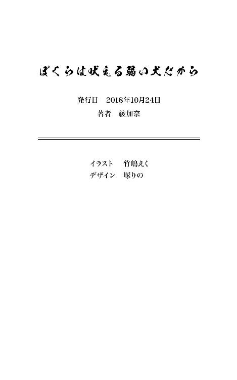

| ぼくらは吠える弱い犬だから (百合小説) | |
| 綾加奈 | |
| (2018) | |
二年 文芸部 犬童昌
私がなんのために小説を書いているのかって？
そんなこと聞かれたって答えられない。
恥ずかしがっているとかじゃなくて、ホントに回答が思い浮かばない。
と言うか、その回答を言語化できるなら、私は小説なんて書いてない。
きっと私は小説を書くことで、その回答に迫ろうとしているのだろう。
そうだ。私は『自分が小説を書く理由』を見つけるために小説を書いているのだ。
......なんて格好つけられればいいんだけど。
自分の勝手な妄想があまりにバカらしくて、乾いた笑いがこぼれそうになる。
実際のところ、そんな高尚な理由なんてない。
私が小説を書いてるのは、単に面白いからだ。
小説を書くという行為は自分の頭の中にある文章を書き写しているのだと思われがちだけど、それは見当違いだ。真実はその逆で、文字を書くことで始めて、頭の中に文章が思い浮かぶ。
小説を書いたことのない人間には、私がなにを言っているのかわからないかもしれない。
だけどこれが真実なのだ。
書いてみるまで、なにが出てくるのか私にもわからない。だから私の場合、『小説を書いている』と表現するより、『自分の作品の初めての読者になっている』と表現するほうが適切な気がする。自分というちっぽけな人間の頭から、偶発的にとはいえ物語のようなものが紡がれる。
それが堪らなく面白いのだ......と思う。
それ以上の理由はないし、説明もない。
だから私は、自分を重ねた主人公を登場させ、現実ではできないあれやこれやを行わせて悦に浸っているいるわけでは断じてない。小説を自分の妄想を書き連ねる掃き溜めにした覚えはないのだ。
それなら堂々と胸を張っていればいいのに。
どうして私は、目の前に座る彼女を直視できずにいるのだろうか。
彼女――芹沢菜々穂は私を見て優雅に微笑んでいる。
場所は文芸部の狭苦しい部室で、部誌の試読スペースとして設けられたテーブルに対面するように私たちは座っていた。周囲には他の文芸部員たちが関心がないフリをしながら私たちを観察していた。その中で唯一、部長だけがニヤニヤと笑いながら私たちを見つめていた。
芹沢さんにしろ、部長にしろ、なにがそんなに面白いのだろう。私の顔か？ 私の顔がそんなに面白いのか？ それとも部室でさらし者になっている私が面白いのだろうか。
どちらにせよ、私はまったく面白くなかった。
芹沢さんに対面する私は七月上旬とは思えない熱波、首が回らなくなるような緊張、そして感じる必要のない罪悪感に内蔵を焦がされて、いっそ嘔吐でもしてしまいそうだと言うのに。
「あの......その――」
口から絞りだした声は、自分でわかってしまう程度に震えていた。それが堪らなく恥ずかしくて、顔が火傷でもしそうなほど熱くなってしまい、堪らず私は視線をさげる。そして年期を帯びた長テーブルの表面、そこに付着する傷や汚れを無意識的に目で追ってしまう。
現実逃避にもなりはしなかった。
......ホント、私ってどうしようもない。
私は世に蔓延る作家もどきたちと同様に、紙面に言葉を綴るのは得意だけど、言葉を口にするのは苦手な人間なのだ。私の言語回路は口ではなく、手を使うようにできている。
――ああ、頭がぐらぐらする。
足下には持ってきていた緑茶のボトルが置いてあるけど、それに口をつけることは空気が許さなかった。先生に怒られているときに水分補給をしてる余裕がないのと同じだ。べつに怒られているわけじゃないんだけど、心境的には、それに近しいものがあったから仕方ない。
額に浮かんだ汗を拭い、ちらりと視線をあげると、芹沢さんは小首を傾げながら笑う。
汗まみれの私とは対照的に、彼女は秋風でも浴びているように涼しげだ。
綺麗だなと、場違いに思ってしまう。
一周回って、自分のうなじや額のあたりが冷たくなってきたような気がした。そうと気づいた次の瞬間、視界が白みだして、周辺の視野が揺らいだ。ああ、これは貧血の症状だと私はすぐに理解する。同時に、このまま溶けるようにして死んでしまいたいという強い想いに溺れそうになる。貧血を起こした瞬間は、いつだって不安と自己嫌悪で押し潰されそうになるのだ。
今日もいつも通り、具合の悪さより精神的な苦痛のほうが勝っていた。
――どうしてこんなことになってしまったのだろう。
死にたさで朦朧とする私の意識は、フィルムみたいに、今日という日を再演し始めた。
事態の発端は朝まで遡る。
今日は朝から多くの学生が無闇にテンションをあげていた。校舎に入った途端、喧噪とは別の形で華やかさや暑苦しい空気のようなものが伝わってきて、一気に死にたくなった。
七月上旬の土曜日――今日は愉快で楽しい開栄高校の学校祭だった。
教室に入ると、バカみたいにはしゃいでいる同級生たちが目に入った。
誠に残念なことに学校祭を愉快で楽しいと思える同級生に含まれていない私は、冷めた目で彼らを眺めているしかなかった。同級生たちの浮かれようは目も当てられないくらいで、私みたいな人間からしてみれば、同じ空気を吸っているだけで気分が悪くなるほどだった。
......学校祭のなにがそんなに楽しいんだか。
ただ頭を空にして、バカになっているだけじゃないか。十七歳にもなって、みんなで一緒になってバカ騒ぎなんて恥ずかしいと思わないのだろうか？
その精神が私には理解できない。
初っぱなから置いてけぼりを食らっていると、担任教師がやってきて控えめなショートホームルームを行った。それからほどなくして学校祭の開始を伝える校内放送が響き渡る。
放送部の妙に艶っぽい声にもイライラしてしまう程度に、今の私には余裕がなかった。
学校祭が始まってすぐに廊下を喧噪が満たし、うちのクラスにも客がなだれこんできた。
私たち二年生は、学年まとめて模擬店をやることになっていた。
ちなみに一年生は掲示や展示、三年生は演劇といった具合である。
お祭りの屋台を模している私たちのクラスでは、お好み焼き、たこ焼き、焼きそばといったありがちながらも手堅いレパートリーがそろっている。そこまではいいんだけど、祭を意識しすぎて、店員はみんな半被に身を包んでいて、客が入店するたびに喧しい掛け声をあげる。
それが堪らなく憂うつで、私はたこ焼きをくるくるしながら、無言で俯いていた。
......バカなクラスメイトも、浮かれた客も、みんな死んじゃえばいいのに。
どうせなら私が作ったたこ焼きで食中毒でも起きればいい。
なんて思うけど、私がやってる作業は冷凍たこ焼きを鉄板で解凍しているだけなので、意図的に悪意をこめなければ、食中毒なんて起こりようがない。それが残念でならない。
午前中の二時間をたこ焼きに費やした私は、自分で作ったたこ焼きと、裏で冷やしてあった緑茶を持って教室を出た。うちの生徒だけではなく、その父母や近隣住民、さらにその子どもなどが訪れているため、ただでさえ狭い廊下はひとでごった返していた。七月の上旬と言っても、すでに夏に片足を突っこんでいるような状態なので、これだけ人口密度が高いと温度と湿度で蒸し殺されてしまいそうだ。ほんの気まぐれで学校祭を回ってみようかとも思ったけど、完全に心が折れてしまった。そもそも学校祭なんて、ひとりで回ったところで心が虚しくなってくるだけだろう。ただひとつだけ心残りがあるとすれば、
......あのひとのクラスはメイド＆執事喫茶だったかな。
あのひとのクラスが行っている模擬店を、一度この目で見ておきたかったという点か。
今どきメイドか、なんて冷めた目で見てしまうけど、それでも、あのひとのメイド姿が拝めるのなら、行ってみる価値はある気がした。まあ、人混みを掻き分けてまでではないけれど。私は人混みから逃れるようにして、南校舎から部室棟を目指して歩く。部室棟は本校舎から一〇メートルほど離れた位置に建っている。距離はさほど離れていないが、建物が地続きになっていないため、一度外に出る必要があるのが面倒だ。そのせいだろうか。部室棟でもクラスの模擬店と同じようにいろいろな催し物をやっているはずなのに、目に見えてひとの数が減ってゆき、最終的に片手でかぞえられる程度になってしまう。部室棟の廊下を流れる風を肌で感じることができるから、ひとが少ないに超したことはない。それでも、これはさすがにもの悲しい。
書道部、華道部、写真部、美術部、将棋部、漫画研究部、それに私の所属する文芸部。完全に偏見だけど、その並びからは、じめじめとしたオタクっぽさが滲み出てる気がする。オタクへの偏見はだいぶ薄れたと言うけど、それでも手のひらが完全に返されたというわけではないのだろう。
少なくとも一旦外に出てまで行ってみたいとは思わないはずだ。
そんな私たち文芸部は普段使っている部室をそのまま利用して、部誌の頒布を行っていた。
部誌に載っているのは短編小説から詩、小論文やエッセイのようなモノまで多種多様で、テーマも決めていないから内容にも一貫性はない。その中に私の書いた小説も一編だけ載せてもらっている。だけど前述した通り、そもそも部室棟まで来るひとが少ないし、その中でわざわざ文芸部まで足を運んで部誌を受け取ってくれるひとなんてかぎられているし、中の文章まで目を通してくれるひとなんてさらに一握りだろう。一年生のころは『自分の書いた小説が、部誌とはいえ本の形になるなんて......！』と羞恥と淡い期待に踊らされて、ずいぶんと萎縮した文章を書いたりもした。だけどいざ部誌を配布する段階になって、そもそも読んでくれるひとがいないのだと知り、無闇やたらに恥ずかしがっていた自分がバカらしくなってしまった。
いったい私は、だれに対して恥じらいを感じていたのだろう、と。
そんなわけで今年、私が部誌に寄稿した小説は好き勝手にやらせて貰った。
さすがにやりすぎたかな......って反省してしまう程度には遠慮なしだった。
「......やっぱりひとなんていないよね」
部室棟の端に位置している文芸部の前には、案の定ひとっ子ひとりいやしない。
それが嬉しくもあり、虚しくもある。せめて部誌が捌けてくれればいいんだけど。
「どう？ 部誌、今日中に捌けてくれそう？」
どうせ客なんていないだろうと思ってたから、私は完全に油断しきって部屋に入った。
入ってしまった。
部室にいた人びとの視線が私に集中する。
受付をしていた一年生の子がふたり、私みたいに他に居場所がないのか、部室を溜まり場代わりにしている部員が三人。彼らは物陰に座って出店で買ったらしいクレープを食べながら、ポケモンの通信対戦を行っているらしかった。あー、私も３ＤＳ持って来ればよかった......
......じゃなくて、ここまでは予想通りの光景だ。
問題は受付の前に立って、部誌を開いていたらしい女生徒の姿だった。
薄暗い部室の中でも彼女の金髪はきらきら綺麗に見えた。その輝きは蛍光灯のそれよりも、よっぽど眩しくて、私は直視していることに罪悪感にも似た感情を抱いてしまう。
背を向けていたその女生徒が振り返る。
波打つように流れた金糸が視線を釘づけにし、清涼にすぎる空色の目が私を見つめた。その女性は長い金色の髪を耳にかけ、眩しいモノでも見るみたいに目を細めて、薄く微笑んだ。
「こんにちは」
「あ、は、はい。......どうも」
生徒同士で『こんにちは』なんて挨拶を交わし合った経験がない私はキョドってしまう。いや、私が挙動不審になっているのは、なにも、ただ挨拶をされたからって理由だけではない。
ましてや女生徒が天使みたいに美しかったからでもなくて――
――私の思考を遮るように、女生徒は私に歩み寄ってきた。
それは頭の上に本でも乗せているような、モデルみたいに几帳面な歩き方だった。
「犬童昌さん......だよね？」
作りものめいた空色の目、その中に一滴だけ落とされた夜色の瞳が私を射竦める。それだけで私の中に煮立っていたドロドロとした悪意が浄化されそうになるのだから恐ろしい。
「ど、どうして私の名前なんか――」
「同学年の生徒の名前くらいなら覚えてるからね」
当然でしょう？ なんて女生徒は言ってのける。
その問いに嫌味なんてものは微塵も含まれていなくて、その女生徒が心の底から、それが当然だと思っていることがわかった。それから彼女は軽く握った手をあご先に当ててみせる。
「でも、犬童さんのことはとくに記憶に残ってたかな」
「えっ、な、なな、なんでっ、なんですか？」
心音が跳ねあがって、鼓動のたびに、口から短音が吐きだされてしまう。
文字通り、鼓動でも刻んでいるみたいになってしまって我ながら気持ち悪い。
と言うか『記憶に残ってしまう心当たり』があるだけに私は完全に萎縮してしまっていた。
「だってインドウって犬の童って書くんでしょう？ 珍しかったからすぐに覚えちゃった」
「あっ、な、なんだ、そんな理由」
犬童が珍しい名字なんて言われ慣れてる。完全に名前負けしてしまっているという点を除けば、コンプレックスになるほどでもなかった。だから、私は心底安堵してしまった。
それだけに、
「ところで子犬って英語で『パピィ』って言うわよね」
その後に続いた彼女の言葉に私は、うぐうっ！ と、軽く仰け反ってしまう。
いやだって、『パピィ』は私が部誌に寄稿する際に使ったペンネームなんだもの。こんなことなら、もう少し凝ったペンネームを考えればよかったが、すべては後の祭りだ。
「最初はお父さんって意味だと思ったんだけど......どうやら子犬さんであってたみたいね」
ああ、ヤバい。
今すぐこの場から逃げだしたい。
だってそこまで察した上で私に『パピィ』の答え合わせを求めてきたということは、彼女は私の書いた小説を読んだに違いないのだ。『どうせだれにも読まれない』と好き勝手に書いた小説を、だ。他のだれかに読まれた程度なら、私だってここまで狼狽えはしなかった。なにせ部誌に掲載するにあたって最低限、文芸部員のあいだで原稿を回し読みしているのだから。
だけど他ならぬ彼女にだけは読まれるわけにいかなかった。
なりふりかまわず逃げるべきなのに、彼女の視線がそれを許してくれない。
「ねえ。自惚れを承知で聞くんだけど、犬童さんの小説に出てくる、このヒロイン......」
そこで彼女は私の様子を覗うように言葉を濁した。
私はすでに頭の中がまっ白になっていて、もう、羞恥で泣きだしてしまいそうだった。
そして溜めに溜めて彼女――芹沢菜々穂はその言葉を口にした。
「このヒロイン......私がモデルだったりする？」
ハッ......と、乾いた笑いのようなものが私の口から漏れる。
それは嗚咽へと変わり、私はせめて涙だけは堪えようと目に力を入れる。
こんなことで泣いてしまいそうになるなんて情けない。なるようになれと目を瞑る。
「あっ、ち、違うの。べつに犬童さんを責めてやろうとか、そういうことを考えていたわけではなくて。ただ、もし私がモデルなら......詳しい話を聞きたいなって思っただけなの」
「くっ、詳しい話......ですか？」
殴られても仕方ない、くらいの気持ちだったから、その言葉に拍子抜けする。
......でも、詳しい話ってなんだ？
私は芹沢さんになにを求められているのかがわからなくて、その顔をまじまじと見つめてしまう。
「ええ。べつに怒っているわけではないけれど、無断でモデルに使われたのだから、話を聞くくらいならかまわないんじゃないかなって。それとも......それすらイヤだったりする？」
「いえ......だ、大丈夫。話します......話させてください」
芹沢さんから直線的すぎる視線を向けられて、私に拒否なんてできるはずがなかった。
だって彼女の言葉はすべて図星だったのだから。
私はどうせ本人には見られることなどないだろうと、彼女をヒロインのモデルにして小説にだした。だしてしまったのだ。それもずいぶんと拗らせた恋愛小説のヒロインとしてである。
そして場面は冒頭へと繋がるのだった。
しかし繋がったところで私の意識は熱にやられて倒れてしまったのだけど。
ああ、これもそれも学校祭なんていうクソみたいな催し物が悪いのだ。
みんなみんな......死んでしまえばいいのに。
二年 帰宅部 芹沢菜々穂
私はワクワクと心を弾ませながら、犬童さんが話しだすのを待っていた。
しかし待てども待てども、犬童さんは話しだす気配すら見せてくれない。
それでも彼女が会話をそれほど得意としていないのは空気で察していたから、私は彼女の心が整うまで待つつもりだった。そんな私の視線から逃れるように、彼女は左右に忙しなく瞳を動かして、私と視線が合うとサッと俯いてしまう。口はまったく動かないのに、その目だけが子どもみたいに落ち着きがなくて、対面していると、こちらまで落ち着かない心地になってくる。伸ばしっぱなしと思われる髪の毛、化粧気のない顔、鋭利な目つきが神経質さを覗わせる。おどおどとした様子なのに、どこか攻撃的な要素を孕んでいる、そんな歪な印象だ。
......ハリネズミみたいな娘。
可愛らしいのに、ぎゅっと身を縮めて針で身を守っているような、そんな印象を受けた。
手を伸ばしてしまったら、指先を刺されてしまいそうな、そんな雰囲気。
だから私は彼女のほうから態度を和らげてくれるのを待つしかなかった。
長いあいだにらめっこを続けていたけれど、依然として犬童さんが口を開く気配はない。
......もういっそ、トゲに傷つけられる覚悟で、手を伸ばしてみようかな。
焦れた私がそんなことを考え始めたころ、左右に動いていた犬童さん視線の代わりに、彼女の頭がメトロノームみたいに揺れ始め、そのまま勢いをつけて床へと倒れてしまった。
「い、犬童さん!?」
さすがに私も声を荒らげてしまう。
周囲に座って談笑していた他の文芸部員たちも慌てたように集まってくる。
その中で年長――部長だろうか？ ――と思しき女生徒がテキパキと犬童さんの体を調べる。基本的に頼りない文芸部員たちの中で、彼女は比較的しっかりしているように見えた。
「あー、熱射病かと思ったけど、ただの貧血みたいだね。いつものことだから心配しないで」
部長さん（？）がそう宣言すると、部員たちは三々五々、元の位置へと戻ってゆく。そのまま部長さんも犬童さんの体を隅まで引きずって、彼女の口に緑茶を含ませていた。
「きみの体は弱いんだから水分補給くらい自己管理でやりなさいよ。まったく」
「そうなんですけど......でも......」
「言い訳しない」
「は、はい......」
犬童さんはそれ以上文句を言わず、黙って緑茶を飲んでいた。彼女の雰囲気的に、もう少し抵抗とかしそうだったけど、部長さんにはある程度懐いているのかもしれなかった。
なんだか信頼関係を見せつけられているようでムズムズしてしまう。
そんな部長さんのほうもそれ以上の小言を重ねることなく私の元へと戻ってきた。
「あの......犬童さんは大丈夫なんですか？」
「大丈夫だよ。夏場とかしょっちゅう倒れてるし。横になって水でも飲んどけばすぐ治る」
部長を始め、他の部員たちもまったく犬童さんを気にかける様子がない。
ということは本当にこれは『たいしたことのない光景』なのだろう。運動部でもないのに、日常的に倒れているだなんて、犬童さんはどれだけ体力がないのだろうと心配になる。
「しかしまあ、悪いね。うちの部員が迷惑かけたみたいで」
「迷惑だなんて、そんな」
本当にそんなつもりは微塵もなかった。
ただ、あの小説を書いた犬童さんがどんなひとなのか、それを知りたかっただけ。
「見ての通りさ、あれは筋金入りのコミュ障なんだよ。うちの部員とも最近打ち解けたくらいだしね。だから芹沢くんが知りたがっていること、あの娘は答えられないんじゃないかな」
「......私の名前」
「同学年の生徒の名前を覚えるのが当然なら、先輩が後輩の名前を把握するのだって当然」
そこで部長さんは、あっとなにかに気づいたように声をあげる。
「ちなみに私の名前は菅井絵里香。文芸部の部長をやってます。あと数日で引退だけど」
「それは......三年間お疲れ様でした」
返事に窮して、なんとも場違いな返答を行ってしまう。それでも菅井さんは私の言葉に満足気に微笑んでから、先ほどまで私が座っていた椅子を、あらためてすすめてきた。
「犬童くんの代わりにはならないけど、私でよかったら少しお話につき合ってくれないかな」
「それはべつにかまいません......が」
が、菅井さんが私となにを話したがっているのか、私にはわからなかった。当然だけど私と彼女のあいだに面識なんてものはなくて、だからなにを話されるのかと疑問に感じてしまう。
すすめられた椅子に座り直し、菅井さんと見つめ合う。
眼鏡をつけたショートヘア、少し不健康に感じられる肌の白さ、それでも几帳面に分けられた前髪と利発そうな視線が、彼女の軽い口調とは裏腹の本質を表しているように感じられた。
「べつに芹沢くんのことを取って食おうとしているわけじゃないさ。ただ、芹沢くんは、犬童くんのあれを読んでどう思ったのかなって、そういう部分を聞きたかっただけなんだよ」
「......感想ですか」
「感想も思い浮かばないような作品だったというのなら、それもひとつの感想だけど」
「そういうわけじゃありません。感想は......思うところはありました」
部誌に載っていたパピィ――あらため犬童さんの小説を思い返してみる。
それは、とある主人公の少女が、同学年の少女に恋をするという話だった。
主人公は内気な女の子で、恋の相手は学校のマドンナとでも言うべき人気者。主人公は同性の娘に恋をしてしまったという事実に煩悶しながら、想い人をいつも陰から見守っている。ヒロインのそばにはいつも取り巻きや友人がいて、主人公がそこに介入する余地は存在しない。
伝えてはいけない想い、叶えられない恋――同時に友人という距離感にすら至れないもどかしさ。だけどダメだと思えば思うほど、不思議なことに、想いは強まっていってしまう。
ただ想い人を目で追っているだけなのに、胸が張り裂けそうになってしまう。その鬼気迫る描写は、ただの読者にすぎない私の心まで深く抉ってゆくだけの破壊力に満ちていた。
しかし物語の後半になり、その想いは豹変してしまう。
大切に育まれていたはずの想いは狂気にも似た感情へと変わってゆく。
恋心だったはずのものは本人にも制御不能なバケモノになってしまう。
始めはただの淡い恋心だったはずなのに。
恋心と狂気の境界が私にはわからなかった。
それが堪らなく恐ろしかった。
だってその狂気はあまりにも自然だったから。物語の主人公は内気でこそあったが、それは個性の範囲内であり、ある種の魅力でもあった。その煩悶はだれしもが抱きうる普遍的なもののように思われた。だからこそ、その狂気もまた普遍的なものなのだという説得力があった。
物語は、主人公が結論をださないまま幕を閉じた。
狂気に身をやつし、ヒロインを殺してしまうのか。
彼女を傷つけるくらいならと、自ら命を絶つのか。
それとも狂気に身を焦がしながら生き続けるのか。
そんな選択肢が提示されたところでお話は終わる。読者に結論を託している――と言うよりも、作者の力量不足といった面が色濃く見えた。作者自身、主人公がどのような選択をするのか、わかっていなかったのだろう。だけど、そうした荒々しさも含めて好感度だった。
そしてなにより目を見張ったのは、ヒロインが私と酷似している点だった。
先ほどの犬童さんとの会話から、私をモデルに描かれていることは間違いないだろう。つまり主人公からそうした狂気じみた愛情を向けられていたのは、私自身に他ならないのだ。
いろいろな想いや思考が頭の中で渦を巻いたのは当然だ。
だけど、心に浮かんだそうした言葉を、そのまま菅井さんに伝えていいのか迷う。この感情は、そのまま私の胸に秘めておくべきなのではないかという想いもあった。だけど菅井さんの保護者みたいな視線を見つめていると、すべてを正直に話すべきなのではないかという気もしてくる。そんな感情の板挟みにあいつつも、私は言葉を選び取るようにして口を開いた。
「なんでしょう......すごく濃厚なラブレターでも渡されたような気がしました」
「ラブレターとは面白いたとえをするね。私より文芸の才能があるんじゃないかな」
「褒めてられているんですか？ バカにされているんですか？」
「私は思ったことをそのまま口にしただけだよ。そこに他意はない。褒めてるつもりもバカにしてるつもりもないんだ。きみがそこになにを加味しようと、きみの勝手だと思うけどね」
淡々とした事務的な口調だったけれど、内容が内容だけに、やはりバカにされているように感じられてしまう。上から目線ではなく、自分自身も含めて俯瞰しているような、そんな雰囲気だ。このひとは思考や性格、本質が読めない、なんとも苦手な手合いだった。
それでも苦手意識を顔にださないように努める。
弱味を顔にださない――それは十七年間の人生に染みついたクセのようなものだった。
「でもラブレターということは、私が考えていたより好意的に受けとめているのかな？」
「そうですね。そもそもあの小説を読んで『ムリだ』と感じていたら、犬童さんと会話をしようなんて思わなかったんじゃないですかね」
「それもそうだ、私だったら、まず間違いなく逃げだすだろうね」
菅井さんは眼鏡のブリッジを中指で押しあげ、心なし鋭い視線を飛ばしてきた。
思わず居住まいをただしてしまいそうになる、そんな視線。
「それじゃあさ。そんな芹沢くんは、犬童くんに、なにを尋ねようとしていたのかな？」
それは......と、言い淀んでしまう。
言葉が続かなかったのは、私自身、その答えを把握していなかったからだ。
犬童さんの人となりを知りたいと思ったのは確かだ。
それは確かなんだけど、では、どうして彼女に興味を抱いたのかという疑問が続く。
私は他者から興味を持たれることはあっても、自分から他者に近づくことなんて、ほとんどなかったから。だったらどうして犬童さんにかぎって、興味を抱いてしまったのだろうか。
私はあの小説をラブレターだと感じた。
ならば、そこに求めるのは真意しかない。
どうしてあんな小説を書いたのか。私をモデルにしたキャラクターには、どんな想いがこめられているのか。あの主人公のモデルは犬童さん自身なのか。あの主人公の心情や描写は、どこまで犬童さんのものなのか。ラブレターという私の認識はどこまで的を射たものなのか。
その真意によっては私なりの回答を用意しなければならないと思った。
私がなにを考えているのか、うっすらとではあるが察したのだろう。
菅井さんは私の言葉の先を待たずに口を開いた。
「芹沢くんがあの小説をどう解釈しようと、それはきみの勝手だよ。それこそ恋物語には少なからずラブレター的な要素が含まれているとは思うしね。だけどだよ？ そこで作者に答え合わせを求めるのはお門違いだと私は思う。小説は公開された時点で完成であり、あとは読者がどう受け取るかが問題になるだけ。小説の外にある言葉は――たとえ作者のものだろうと、蛇足にすぎないんだよ」
それは淡々と――を通り越して冷淡さを感じさせる口調だった。
「なにより、小説と作者の思考は、必ずしも同一ではないんだよ」
眼鏡のレンズで濾してなお鋭さを失わない視線は私の反応を覗っていた。
あの物語の主人公が、私をモデルにしたヒロインに恋い焦がれていた。
それがイコール、犬童さんが私に好意を抱いている理由にはならない。
それを作者である犬童さんに確かめるのは無粋であり、一読者にすぎない私がすべきことではない。物語と作者は切り離すべきで、同一視はいい迷惑だと、そう言っているのだろう。
ひとりで盛りあがってしまっていた私に冷や水を浴びせたつもりでいるらしい。
そちらがその気なら、一度は水を被ってあげるのもやぶさかではない。
たぶん今の私の熱量であれば、その程度の冷水など、一瞬で蒸発するだろうから。
「......菅井先輩の仰っていることは理解できます」
私は真正面から菅井さんの視線を迎え撃つ。
はた迷惑な容姿のせいで通らなくてもいいような修羅場まで通ってきたのだ。この程度の睨み合いで屈するような私ではないし、なにより胆力で負けるつもりなんて毛頭ない。
「ですがそれは価値観の相違です。私は犬童さんの小説が好きです」
一瞬、続く言葉を口にするべきか躊躇する。
だけど啖呵を切るなら半端は避けるべきだと経験則が告げる。
啖呵は徹底的に――躊躇や羞恥といったものと共に斬り捨てるべき代物なのだから。
「あの小説に......恋をしたんです」
菅井さんは、へえ、と感心したようにこぼした。
私が直接的な表現を使ったことに対して驚いているのかもしれない。
「私の想いは小説に向いてます。そしてその先には犬童さんがいると信じてます」
「ふうん。まあ、もしかしたらそういうことも、あるのかもしれないね」
菅井さんの視線の鋭利さはなりを潜め、始めの保護者のような視線で私を見つめる。
これはこれで信用できない優しさを感じるので、私の緊張は緩みはしなかったけど。
「そこから先は当人の問題だから、勝手にやってくれればいいと思うよ」
勝手にやらせていただきます。そう告げて、私は立ちあがる。
犬童さんと話せないのであれば、これ以上、私がここに居座る理由もない。他の文芸部員たちも所在なげにしているし、向こうとしても、私はいないほうが都合がいいのだろう。
私という異分子が集団の中でどのように扱われるのかは、私自身が一番理解していた。
あらためて平積みしてあった部誌を手に取る。
「部誌、貰ってもいんですよね？」
「なんだったら好きなだけ持っていってくれてかまわないよ。どうせあまるだろうからね」
確かに私が文芸部を訪れてから他の客が訪れることはなかった。その閑散ぶりを鑑みるに、大量に平積みされた部誌は十中八九あまることになるだろう。私には関係ない話だけど。
「それじゃあ犬童さんによろしく伝えておいてください」
「なにをどう『よろしく』なのかわからないけど、伝えておこう」
廊下に出て、受け取った部誌を抱きしめる。
持ち帰って、教室でもう一度読んでみよう。長くない作品だから、そう時間もかからず読み切ることができるだろう。そうして頃合いを見て、また犬童さんに話しかけてみよう。
今度はもう少し涼しくて、落ち着いて話せる場所がいい。
そのとき頭の隅に『なにかを忘れているような気』がよぎるが、すぐに消えてしまう。私は一瞬だけ頭を捻るが、その忘却は完全に手の届かないところに転がり落ちてしまったらしい。
私は『それ』を拾いあげるのを諦め、自分のクラスの模擬店である喫茶店へと向かった。
二年 文芸部 犬童昌
どうせなら気絶してしまいたかった。
そんな私の想いを嘲笑うように――
「犬童くん。芹沢くんが『よろしく』だってさ。熱烈なラブコールだったね」
――喜悦をふんだんに含んだ声で部長が告げた。
......絶対に焚きつけて楽しんでるだけだ、このひと。
そもそもこのひとは『私が意識までは失っていないこと』を知っていたのだ。私が話を聞いているのを承知の上で芹沢さんにあの話題を振った。このひとのことだから、私が『意識はあるけど横槍を入れる気力まではい』という状態であることすら気づいていたはずだ。
だれがどう考えても、ただの愉快犯だった。
いい迷惑でしかなかったけど、それを怒る気力すら今の私にはなかった。そもそも私が倒れたりしなければ、このひとに代打を頼む展開にも、なりはしなかったはずなのだから。
「犬童くんは彼女にラブレターをだしたことになっているみたいだけど？」
「そうみたいですね」
まだ本調子ではなかったから、床に座ったまま上体だけを起こして対応する。
「きみが恋文なんて、ギャグもいいところなのにね」
カラカラと大量のサイコロでも転がしたように部長は笑う。
部長の言葉は的を射ているから私は反論する気も起きない。
ただ、せめてもの抵抗として、弱々しく口を開く。
「私はただ、あんなひとに恋をできたら素敵だなって、そう思っただけなんですけどね」
人類への憎悪でできている私のような人間が、他人を好きになるなんて有り得ない。
それでも、だれかに恋ができるなら、あんなひとがよかった。
その想いは私の中に残された唯一の良心のように感じられた。
「そうなのかい？ 私はてっきり、『人類が大事に抱えている愛の本質なんて、こんなに醜いものなんだぞ！』って、あの小説で思い知らせてやりたいのだとばかり思っていたけどね」
「まあ、それは否定しませんけど」
恋愛を否定してやれば、リア充たちの学校生活の五割は否定できるような気がした。
だからあの小説は愛情の醜悪な部分を、意図的に包み隠さずに描いたのだ。私は恋愛のいろはなんて知らないけど、人間の醜い部分はそれなりに熟知しているつもりだから。
それでもその中に、一匙の光のようなものがあればと願わなかったわけではないのだ。
「相変わらず拗らせてるねぇ。まあ、拗らせ度で言えばあの娘も相当だったけど。でも高校二年生って中学二年生に次いで拗らせやすい年頃だから仕方ないよ。人間は環境が安定してきて退屈さが増してくると、自分をゆがませるくらいしかやることがなくなるからね」
口から出任せの人間評だったけど、なんとなく真実の一端を捉えてそうなのがウザかった。
「それで、どこであんな娘を見つけてきたんだい？」
尋ねながら、部長が心の底から楽しげに笑う。これだけ楽しそうに笑う部長も珍しい。もしかしたらこのひともまた、学校祭で浮かれているのかもしれない。だとしたら軽蔑するけど。
このひとは軽蔑されたところで、それすらも受け入れて、楽しげに笑うだけだろう。
――今この瞬間のきみの顔が愉快で仕方がない。とか言われそうだ。
だから私は雑言の類を口にするのはやめ、素直に答えることにした。
「べつに、いつ、どこで見つけたのかって話でもないです。あの娘、有名人ですから」
「確かにアイドルみたいに可愛い娘だったね。そう言えば金髪の綺麗な娘がいるって、一時期話題になっていたような気がするよ。校舎が違うせいか、私はまったく見かけなかったけど」
日本の高校であそこまで見事な金髪は悪目立ちする。
ただその悪目立ちを地力で感嘆の声に変えてしまう力を芹沢さんは持っていた。
「でもああいうの、犬童くんの一番嫌いなタイプだと思ったけど」
部長の言う通り、ああ言う容姿だけで生きているような人間を私は憎んでる。
可愛ければそれだけで得をするように世の中はできているから。
そういう不公平さが私は大嫌いだ。
醜い嫉妬であることは自覚してるけど、自覚があるからこそ余計に腹が立つ。
だけど私は見てしまったのだ。
一年生の九月ごろだった。私は教室に居場所を見つけられず、校内で人気のない場所を求めてさまよっていた。そのとき偶然、芹沢さんが男子生徒に告白されている場面を目撃してしまったのだ。その告白を芹沢さんは一刀両断で斬り捨てて、すぐに男子生徒は去っていった。
だから告白自体はすぐに終了した。
――問題はそのあと訪れた。
......お高くとまりやがって。
なんて嫌悪感を抱いていた私の耳に、その言葉はやけに鮮明に届いた。
『みんな死ねばいいのに』
芹沢さんは、憎々しげに、そう吐き捨てたのだ。
それが気まぐれで呟かれた言葉ではないことを私は理解した。その言葉は彼女の心に深く根を張って、彼女の思考の根底を成していることを、他ならぬ私だからこそわかってしまった。
――ああ、お前もそうなのか。
私と正反対にいるはずの女が、私と同じ厭世を抱えている。
それがなんだか堪らなく面白くて、私は芹沢さんに興味を持った。
クラスが違うから芹沢さんと顔を合わせる機会はほとんどなかったけど、私が人気のない場所を探していると、不思議と先客として彼女の姿があった。そういうときの彼女は大抵、この世界への殺意を撒き散らすような、憂いを帯びた表情をしていた。そんな場面に出くわすたびに、私は彼女への興味を深めていった。彼女がなにを考えているのか、知りたかったのだ。
あんなにも綺麗なのに、その内側にどろどろとしたものを抱えているのだ。それはまるできらきらとした恋愛の中に存在する、一匙の嫉妬や狂気に似ているような気がした。
だけど、それは私ひとりが知っていればいい。
私以外の人間は彼女の本質を知る必要はない。
すでに部長は充分に楽しんだはずだ。
これ以上の娯楽を提供する義理もない。
「べつに。私だってたまにはアイドルに憧れたりしたかった......それだけですよ」
「まあ嘘だよね」
「どうしてそう思うんです？」
ふたつ返事で嘘認定を食らい、間髪入れずに尋ねてしまう。
「犬童くんは嘘をつくとき左の頬が軽く引き攣るんだよ。自覚はないだろうけどね」
私は慌てて自分の左の頬を押さえる。
だけど筋肉の引き攣りなんて、手で触れただけでわかるようなものでもない。
「嘘だよ、嘘。メンタリストじゃないんだから、頬の引き攣りなんてわかるわけないだろ」
「......じゃあカマをかけたんですか？」
「そういうわけでもないよ。そもそもね、犬童くんの言葉なんて九割は嘘なんだから、端から全部疑ってかかればそれが正解だろうさ。覚えておくと得をするときがくるかもしれないよ」
得意気な部長に腹が立ったので無視して、ボトルに残っていた緑茶を飲み干す。
頭にまとわりついていたモヤモヤとした重みも消えていたので、私はそのまま立ちあがる。そこで受付に座ってた女子――一年の原田美羽が机に上体を投げだしながら話しかけてきた。
「つーか先輩、そんなふうに捻くれた生き方して楽しいんですか？」
猫撫で声とまではいかないが、作った声特有の甘ったるさが耳に絡みついて不快だった。
小さい体に小さい顔、たぶん頭の中身も相応に小さいんだろう。そのクセ顔のパーツはそこそこ整っているのが腹立たしい。どうしてこんな女が文芸部なんかに所属しているのかわからない。原田みたいな人間は、バスケ部とかもっとＤＱＮっぽくて喧しい部活に所属すればいいのに。そんな彼女が部誌に寄稿したのは、原田美羽という主人公が学校で白馬に乗った王子様と出会って玉の輿するという話だ。その開き直り具合は嫌いじゃないけど、内容は嫌いだ。
嫌いと言うか、もはや意味がわからなかった。
死ねばいいと思う。
そんな原田は机の上に置いてあった皮つきのポテトフライを口いっぱいに頬張っていた。
「......楽しい楽しくないで生き方なんて変えられないでしょうが」
私は原田を睨みつける。
だけど原田はどこ吹く風。
怯むどころか、私が怒るのを楽しんでいる節さえあると思う。
「そうですか？ そんなことないと美羽は思いますけどね。生き方とか考え方とかって、臨機応変に変えてくべきじゃないんですか？ だって『生き方』って結局、生きるための道具じゃん。道具に縛られて生きづらさを感じるなんてバカみたいだなーって美羽は思いますけど」
「彼氏ができるたびに趣味をころころ変える自分を正当化してんの？」
私の口調の冷ややかささと反比例して、原田は顔をまっ赤に染める。
ああ。こいつが怒っている顔を見ていると、愉快で堪らない気持ちになってくる。
「はあ？ それとこれとは関係ないじゃん！ 美羽は先輩のためを思って――」
「だったら私もアンタのためを思って言ってあげる。アンタのそういう軽々しく相手に合わせるところ、みんな大ッ嫌いだから。アンタがフラれ続けてるのは、そこが原因だと思うけど」
「うっわー！ もっと言いようとかないの!? ひゃ、百歩譲って美羽が嫌われてるとして、それは先輩だって一緒じゃん！ みんな先輩のことなんて大、大、大ッ嫌いなんだからね！」
必死になって捲し立ててくる原田を一笑に付す。
「私は自分が嫌われてることくらい自覚してるから」
「そういう達観してますって態度も嫌い！ 澄まし顔して無意味な自己分析繰り返して、利口になったつもりなの？ 利口なフリしといて結局は『みんな死んじゃえ！』って喚き散らすことしかできないのに。先輩がそういう考えに固執してるのって、結局、臆病なだけですよね？」
「はあ？ 臆病？ 私が？」
と、聞き返したところで、やってしまったと気づく。
こうした口喧嘩で必要なのは、絶え間なく口を動かし続けることだ。ディベートではないのだから内容なんて二の次でいいのに。自分の手番を簡単に相手に明け渡してしまった。
ただ純粋に原田が私を臆病だと評する理由を知りたいという思いもあった。
それほどまでに原田の言った『臆病』という単語が私の琴線に触れたのだ。
「だから先輩は――」
たかが原田のセリフだと言うのに、私はなにを言われるのかと身構えてしまう。
しかし彼女の口が二の句を継ぐことはなかった。
明後日の方向から、助け船がだされたから。
「ふたりとも。そこら辺にしておこうか」
さっと部長が両手をかかげて私と原田のあいだに立つ。
「ふたりの口論は文芸部の名物だけどね、今は学校祭の最中だよ。お客様がどん引きしてる」
部長の視線につられてドアに視線を向けると、開栄高校の女生徒がふたり立っていた。神経質そうな黒髪と、軽薄そうな茶髪という一見奇妙にも見える組み合わせ。後者の茶髪については、たぶん同じ二年生だ。名前は知らないけど、この茶髪も、私が校舎をさまよっていると、ひとりでいるのを見かけることがあった。だから勝手にぼっちの仲間だと思ってた。なのに、こうやって他人と一緒に学校祭を回っているのを見ると勝手に裏切られた気分になってしまう。
当然だけど茶髪のほうは私を覚えてはいないようだった。
「まあ、名物だって言うなら、見学していくのもやぶさかじゃないすけど」茶髪が言う。
「なにをバカなこと言ってるのよ。取りこみ中のところごめんなさい。部誌を受け取りに来たのだけれど......大丈夫かしら？」と黒髪のほうも口を開く。
そんな客人たちと部長が会話を交わしているあいだ、私と原田は裏で睨み合っていた。
一年 文芸部 原田美羽
がつがつがつ！ と模擬店で買ったチュロスを二本同時に口の中に押しこんでゆく。イライラもあって、ほどほどのサイズがあったチュロスは、あっという間に胃に収まってしまう。
「あの犬童のクソ先輩！ 根暗女！ ホントにウッザい！」
せっかくの学校祭なのだからもっと楽しめばいいのに、どうしてあんなふうに憎悪を周囲に撒き散らすようなマネしかできないのだろう。そんなに世の中が嫌いなら、いっそ死んじゃえばいいのにって思う。全人類の死を願うより、そちらのほうがよほど手っとり早いはずだ。
そんなふうに不機嫌を散らしながら、私は客でごった返した廊下を歩いていた。
あの女と同じ空気を吸っていることが不快だったから、受付の仕事が終わると同時に文芸部を飛びだしてきてしまった。私は他の部員と違って、校内に居場所がないわけではない。ただあの独特の空気が嫌いじゃなかったというだけ。文芸部にいる人間は総じて湿っぽくて、じめじめしていて、どこか捻くれていて。だから私もまっすぐじゃなくていいんだと安心する。
だけど犬童先輩のことは嫌いだ。
恋人に合わせることのなにが悪いと言うのだろう。
そもそも人間関係なんて、ある程度相手に合わせる技量が必要になるはずだ。学校での私と家での私は同じじゃないし、文芸部の私とクラスの私も同じじゃない。高校生にもなれば、相手によって対応を変えるのは、コミュニケーションにおいて当然のことだと気づく。よくテレビで『ホントの自分がわからない高校生』なんて特集が組まれていたりするけど、バカなんじゃないかと思う。だってそれがたとえ演技だろうと『演じている私』は本物なのだから。
そのすべてがホントの私なのだ。
だから犬童先輩の言葉は、他人に合わせることのできないコミュ障の遠吠えでしかない。
これからも私は恋人の前では、その恋人のための私を演出し続けるだろう。
だって恋人には私のことを、もっともっと愛して欲しいから。
それに『恋人が愛してくれる私』だったら、私も自分のことを愛することができるような気がする。だから日常生活も恋人が中心になるし、言動もまたそれに準じたものになる。
それのなにが悪いのか、私には理解できない。
そんな私が嫌いだと言うのなら、勝手に嫌いになればいい。だって私を嫌うような人間に、私は未練なんてない。私は『私を好きになってくれる人間』にしか興味なんてないのだから。
なのにあの女は私を嫌いと言い続けながらつきまとってくる。それが堪らなくウザい。
......まあ、先輩との口論は慣れっこだけどさ。
それでも、今日のあのひとはいつもの何倍もウザくて堪らなかった。
「なにが『あんなひとに恋ができたら素敵』だ！」
べつに、他人の恋路をバカにするつもりはない。
でも先輩のあれは恋心ではなく憧れの類だろう。
芹沢菜々穂なんて有名人に惹かれるなんて、わかりやすすぎて反吐が出そうになる。
結局、彼女は自分が捻くれ者でありたいと願っているだけなのだ。だからあんな『眩しいだけのモノ』に惹かれてしまう。それはたぶん、火に自ら飛びこんでゆく夏の虫に似ていた。
どうせなら矯正不可能なくらいぐちゃぐちゃに捻くれてくれればよかったのに。
そんなに簡単に綻びを見せてしまうなんて......そういうところが大嫌いだ。
そんなふうにイライラと考えごとをしながら歩いていたせいだろうか。
どうやら私の視野はかなり狭まっていたらしい。
正面から走ってくるその女生徒に、私はまったく気づかなかったのだ。
どんっ！ と肩と肩が接触して、小柄な私の体は容易く吹き飛ばされてしまう。だけど私を吹き飛ばした生徒は私よりもさらに小柄で、それに加えて妙ちくりんな格好をしていた。
と言うのもその女生徒は、お姫様が着るようなドレスに身を包んでいたのである。
「ごめんなさい！」
まったく悪びれる様子もないままドレス姿の女子生徒は走り去ってしまう。
「ちゃんと前を見て走れぇ！」
私の怒声も人波に飲まれて消えるだけ。
たぶん、あの女にも届きはしなかった。
――ああ！ もお！ 最悪！
ともかく勢いづけて立ちあがろうとすると、足首が痛んで崩れてしまう。
「は？」
勢いづけたのがダメだったのかと、今度はゆっくり立ちあがろうとするけど結果は同じだ。足首に鋭さと鈍さを両立させたような、これぞ捻挫！ という痛みが走って私は座りこむ。
「なにこれぇ......」
感情が高ぶっていたところに、今度は関節の痛みという追い打ちをかけられて、やるせなさや悔しさ、その他どうしようもないぐしゃぐしゃな感情に煽られて、涙が溢れてきてしまう。
滲んだ視界、祭の喧噪が一気に遠くなり、どこからともなく情けなさが湧いてくる。
「うっ......」
あっという間に鼻の奥が鼻水でいっぱいになってしまう。
――なんで私がこんな目に遭わないといけないの!?
その言葉を口にださずにいられたのは、単に喉の奥に涙やら鼻水やら嗚咽やらが溜まっていて、言葉がそこに突っかかってしまったせいだった。もしそれがなければ、私は学校中に轟く声で叫んでしまっていたことだろう。そんな私を道行く人びとが遠巻きに眺めてゆく。
......もうやだ！ 見てないでだれか助けてよ！
本格的に溢れだしてきた涙、それを拭う余裕すらないまま、私が座りこんでいると、
はあ......と今度は頭にため息を浴びせられる。
なんなんだ、今日は厄日なのかと、ため息の先を睨んでやると――
「えっ」
ここがアニメや少女漫画の世界であったなら、きっと『トゥンク......！』なんて安い効果音が鳴り響いていたことだろう。でもここは現実だから、代わりに私の心臓が大きく跳ねた。
だって私が見あげたその先に立っていたのは――
「まったく。なんて顔してるんだい。せっかくの可愛い顔が台無しじゃないか」
――まさに私が理想としていたはずの王子様だったのだから。
黒のスーツに同色のネクタイ、灰色のウェストコート、ボーダーつきのワイシャツ――王子様というよりも、それに仕える執事という印象だったけど、細かいことはどうだっていい。あまりにも突然の出来事に、流れ始めたばかりだった涙すら一瞬で家に帰ってしまう。
「ほら、これで涙を拭って」
王子様は私にハンカチを差しだしてくれた。
その姿があまりにも様になっていて、私の呼吸がとまりそうになる。
「でも......その、汚れちゃいます」
「キミの涙が汚いわけないだろ？」
「それは、その......はい......ありがとうございます」
こんなひとにここまで言われて、断れるはずもなく、私は言われるがまま涙を拭う。
それを見届けると、王子様は満足気に笑み、それからひょいと私の体を持ちあげた。
「ひゃあっ、な、なに――」
足の裏が床から離れた感覚が怖くて、とっさに私は王子様の首にぶらさがる形になる。
「立ちあがれないみたいだったから、保健室まで送っていってあげるよ」
それはいわゆるお姫様抱っこというやつで。いや、そんな、女子に断りもなくお姫様抱っことか、そんなのもう犯罪じゃん、ダメじゃん、怖すぎでしょ......私、ホントに少女漫画の主人公になってしまったのだろうか？ なんて考えてしまう始末。
頭がうまく回っていない。
......と言うか顔近すぎ。
肌と肌が触れ合うってほどじゃないけど、その微妙な距離感のせいで、相手の顔をまじまじと観察できてしまう。しないけど。いや、できないと言ったほうが正確だ。それより問題は向こうもまた私の顔を至近距離で見つめられるという点。泣いてしまったからたぶん化粧が落ちて、酷いことになってしまってる。そんな顔を見られたくなくて、私はできるだけ俯いていた。
......ああ、でも、ヤバい。
なにか話したい。
少しでも彼のことを知りたい。
だってこんなに格好いい男性が私のことを心配して、私を抱えて、歩いてくれているのだ。今日の不幸や災難はすべて、このひとに出会うための前座だったのだとすら思えてしまう。
先ほどまでの負の感情なんてどこかへと吹き飛んでいて、私は笑ってしまいそうだった。
「あの、三年生の方ですか？」
「いいや。一年生だよ」
「えっ、そうなの？」
入学して三ヶ月もたっているのだから、クラスメイトだけではなく同学年の生徒たちの姿もある程度は把握しているつもりだった。とくに美男美女の類は否が応でも目を惹くから、記憶しようと意識せずとも自然と目に入るはずだった。これだけの美男子であればなおさらだ。
しかしどれだけ記憶を探ってみても、この王子様の姿を思いだすことはできなかった。
「名前をうかがっても？」
「......名乗るほどの者じゃないから」
少し調子の外れた声で男性は言う。
それは奥ゆかしさ、なのだろうか。
私が少し怪しんでいると、目の前には目的地の保健室が見えてきた。両手のふさがっている王子様に代わって私がドアを開けると、中では養護教諭の杉菜先生が唐揚げを頬張っていた。
「あは、ははははんはない。ほーはひはほ？」
唐揚げを口に入れたまま話すものだから、ハホハホとしか聞き取れない。
養護教諭としてその対応はどうなんだろうと疑問になるけど堅苦しいよりはマシだった。
「この娘が足を挫いてしまったみたいで......ボクはただの付添人です」
「そう。ありがとね。そしたら......」
ゴクンと唐揚げを飲みこんだ杉菜先生が、私の顔を見て言葉を詰まらせる。
「えっと、原田美羽です」
「そしたら原田さん、こっちの椅子に座って、靴と靴下を脱いで足、見せてくれる？」
指示された通りに私が靴を脱いでいると、王子様は一歩退いて、ドアのそばに立つ。
「それじゃあボクはこれで」
「あの、わざわざありがとうございました」
すっごく格好よかったです！ ......なんて言えるワケもなく、お礼だけを告げておく。
王子様は真綿みたいに柔らかく微笑むと、そのまま廊下へと消えてしまった。
私は脱ぎかけの靴下をそのままにして杉菜先生のほうを向く。
「先生、あのひとの名前、わかります？ 一年生らしいんですけど」
私の問いかけに杉菜先生は首を傾げて、うーんと唸る。
「一年生にあんな子いたかなぁ......いたら、すぐに思いだしそうなもんだけど」
「そうですよねぇ」
捻挫のことなど忘れて、ふたりで顔を突き合わせて、頭を捻り合う。
「ホントにうちの学校の子なの？」
先生の疑問はもっともで、私もその線はまっ先に考えたのだ。しかし、
「迷わずに、まっすぐここまで、美羽のこと連れてきてくれたんですよ？」
うちの学校はムダに入り組んでいるから、初めてここを訪れた人間が迷わずに目的地に辿り着けるとは思えなかった。だから、少なくとも彼がこの学校の生徒であることは間違いないと思う。
ならば『一年生』というのが嘘なのだろうか。
そんな嘘をつかなければいけない理由なんて想像もつかないけど。
「それならうちの生徒か......それか卒業生とか？ そう言えばあの格好......」
「執事みたいな格好してましたね。演劇部かな？」
それなら、あんな格好をしていたのも頷ける。
「二年生が確かメイド＆執事喫茶とかいう模擬店をだしてたから、そっちかもしれないわ」
それから杉菜先生は、ぽかんと天井を見つめてから、そう言えばと続けた。
「演劇部の舞台がもう少しで始まるんじゃないかな。気になるなら行ってみれば？」
「そうなんですか!?」
善は急げと勢いよく立ちあがった――瞬間、右足首に激痛が走って、倒れこむ。なぜ!? と頭の中が疑問符でいっぱいになったところで、私は自分が保健室に来た理由を思いだした。
「ぷっ、くくっ、なにバカなことやってるのよ。足、テーピングしてあげるから、座って」
それから杉菜先生はクスクス笑いながら私の足に包帯をぐるぐると巻いてくれた。終始、先生の態度は軽かったけど、さすがに養護教諭なので足の痛みは一気に引いてくれたのだった。
さあ、準備は整った。
私は彼に会うため、廊下を小走りで駆けた。
私はきっと――彼に対して、一目惚れしてしまったのだから。
二年 帰宅部 芹沢菜々穂
自分で言うと嫌われるのを承知で言うが、私は高嶺の花だ。
容姿は優れているほうだし、性格も表だってはゆがんでいるつもりはない。
人並みに会話を交わせるし、気の利いたセリフを言うこともできるはずだ。
なにより自分の容姿につけあがるようなマネはしないように細心の注意を払っている。さらに言えば、謙遜しすぎて嫌味にならないように、という面倒な配慮まで加えている。それでも『自分の可愛さを自覚すること』が罪で悪だと言うのなら、私はそれ以上なにも言わないけど。
そもそも論として、周りの人びとが私を高嶺の花として扱うのだ。
――芹沢みたいに可愛い娘は気になるけど、自分みたいな人間には釣り合わないだろう。
それが彼らの共通の認識だった。
そんな彼らの行動はとても似通っている。
私に対して『ＯＫが貰えれば儲けもの』と、度胸試し代わりの告白をする。それで断られれば『ダメ元だったし』と言い訳をする。愛の言葉を伝えることこそが大事であり、その勇気と過程こそが青春で、成長なのだ。そう友人同士で讃え、慰め合うという茶番を行うのだ。
ダメでもともとだとする彼らの告白はとても気持ちが悪かった。
余裕を醸しだすためか軽薄な笑みを浮かべ、どこかで聞いたような言葉を並べる。私がその申し出を断ると、なぜか彼らは決まって安心したような表情を浮かべるのだ。彼らは私から了承を貰えるビジョンを想像していないだけではなく、その覚悟すら決めていないのだろう。
告白される身からしてみればそんなもの、悪辣な青春のパロディにすぎなかった。
死ねばいいのにとすら感じた。
他人の好意と告白を断るのは、それなりに負担のかかる行為なのに。それを思い出代わりと強いてくる彼らに憎しみにも似た感情を抱いてしまったとして、なにが悪いと言うのだろう。
そのせいかどうかはわからないけれど、私は恋というものがわからなくなっていた。
他者を好きになる。
その感情がわからなくなってしまったのだ。
だれかが私を好きになるのはかまわない。
その想いまで否定する気はない。
だけど、だからこそ、自分自身の好意を無下に扱う彼らを私は許せなかった。そんなふうに簡単に擲ってしまえるものが恋なのか。だったら彼らの言う『恋』とはいったいなんなのか。
私の心にゴミみたいに投棄され続ける恋が積み重なって――私は好意がわからなくなった。
――高嶺に咲く花が、なにかの拍子に落ちてくるのを祈ること。
それをひとは恋と呼ぶのだろうか？
そもそも、高嶺に咲いているからという理由で好意を抱くのが恋にふさわしいのだろうか。
どこに咲いているかなんて関係ない。ただその花に惚れこんで、高嶺に咲いているのなら、骨折れ損になることすら厭わず、切り立つ崖に挑戦することを恋と呼ぶのではないのか？
だから犬童さんの小説は私にとって強烈だった。普段から小説は読むし、恋愛物だって少なからず触れているけれど、自分がヒロインの作品に触れたことなんて当然なかったから。
私もあんなふうに愛されてみたいと思ってしまったのだ。
そうすれば私にも恋愛ができるかもしれないと、そう思ったから。
あらためて部誌の目次――そこに並んでいる著者と作品のリストを眺めながら感慨に耽る。春日井怜、カミツレ、原田美羽、パピィ――と本名とペンネームが好き勝手に並んでいる様は少し異様だったけど、今の私にはその『パピィ』という文字がなによりも輝いて見えた。
部誌を閉じて、感慨に耽っていると、突然頭に鋭い痛みが走った。
「つうっ」
自クラスの模擬店の席で部誌を読んでいたら、トレイで頭を叩かれてしまったらしい。
「模擬店を本物の喫茶店代わりにするバカがいるか」
「少なくとも問答無用で暴力を振るうバカよりはマシだと思うけど」
それに私が窓際で本を読んでるだけで集客効果になる気がするし。
とは思っても口にださないでおいた。
私はトレイをかまえて不機嫌そうにしている級友――大早川美鶴の顔を見あげる。運動部の彼女は、ほどよく筋肉質で、ほどよく日焼けしていて、メイド服が壊滅的に似合ってない。たぶん『可愛らしさ』に本来ともなっているはずの『媚び』のようなものが皆無だからだろう。
容姿が劣っているわけではないから、単純に相性の問題だと思うけど。
「なに笑ってんだ、お前」
「私、笑ってた？」
「ああ。にやにやしてた」
カーンッともう一度トレイが私の頭を叩く。
まだなにも言ってないのに、ただの八つ当たりだった。
「大早川さんはさ、メイドより執事のほうが似合ってると思うな」
「そんなこたぁ、私が一番わかってんだよ。そう言うなら、菜々穂が代わりにやってくれよ」
暇そうだし。と大早川さんはつけ加える。
クラスメイトの大半は私のことを『なーほ』と呼ぶ。あだ名をつけられるのなんて小学校以来だったから、その柔らかな響きも相まって、私はその呼び名を気に入っていた。
「んー......手伝うくらいならべつにいいよ。確かに暇だったし」
なにかを忘れているような気がしたけど。
忘れるような事柄ならたいしたことではないのだろう。
「えっ。マジで？」
大早川さんは目をトレイみたいに見開いて驚いていた。
「と言うか、さっき話しかけたときから思ってたけど、ずいぶん機嫌いいな」
「そう？」
「菜々穂にしては珍しく、表情が柔らかいからな。なにかいいことでもあったのか？」
「大早川さんって、そういうところ、よく見てるよね」
彼女は口調も態度もがさつなのに、妙なところで気が利いたりする。
なのに距離感の掴み方がうまくて、引いている一線を踏み越えてはこないのだ。そういう機微がわかるひとだから、接していて楽だし、クラスでも男女問わず人気のあるひとだと思う。
その分、だれかと必要以上に仲よくしているのを見ることはほとんどないけど......強いて言うなら、同じくクラスメイトの真倉木実さんと仲がいいのだろうか？ 少しだけ気になった。
「まあ、いいことがあったのは認める」
「なにがあったんだよ」
「私、もしかしたら恋しちゃったかも」
「恋!?」
大早川さんは普段から一貫してローテンションだ。
そんな彼女の口から、かつて聞いたこともないような大声が飛びだしてきて焦ってしまう。それは周囲のクラスメイトや客たちも同様だったけど、その中で彼女だけが周囲の視線に気づいていなかった。彼女はそのまま周りなど目もくれず、隣の席を陣取って顔を寄せてくる。
......いやあなた、ついさっき私に邪魔だって言ったばかりですよね？
なんて思いかけるけど大早川さんの瞳があまりにキラキラしてるものだから言いだせない。
「群がる男どもを千切っては投げ、千切っては投げしてた菜々穂がどこのどいつに恋したって？」
「千切ってもないし、投げてもないよ。強いて言うなら勝手に玉砕してるだけだし」
しかも玉砕でもないし。
と自分の発言に心の中でツッコむ。
「と言うか......大早川さんって結構こういう話、好きなのね。恋バナとか」
椅子を引いて距離を取りながら言う。
しかしその分の距離を一瞬で詰められてしまう。
先ほど心の中で距離感を掴むのがうまいとか考えてたから妙な心地になる。
あれ、私、まったくこのひとのことわかってなかった？ みたいな。
たぶん、まったくわかってなかったんだろうけど。
私はどこからどこまで説明したものかと迷う。
文芸部で部誌を読んだ部分を話したところで、部外者に理解されるとは思えないし。
だから部外者にもわかりやすいように脚色――いや、デフォルメをしてみることにした。
「ラブレターをね、貰ったんだ。そこに私をどんなふうに好きかが書いてあって......」
「もしかして、それを読んだら、その相手に恋をしちまったとか言わないよな？」
「......悪い？」
「いや、ぜんぜん、悪いとは言わないけどよ」
言わないだけで、その顔には『思ってはいます』としっかりと書いてあった。それがなんだか面白くて、笑いそうになる。悪いと思うなら、そう言ってくれてかまわないのにって。
「ラブレターなんて菜々穂なら受け取り慣れてるんじゃねぇのかなって思ったんだよ」
「あー、うん。まあ、そうね。告白されること自体には慣れてるけどね。あんなふうに熱烈にラブコールされたのは産まれて始めてだったから。なんかこう、キュンときちゃったの」
小説の内容を振り返りながら、部誌の表紙を撫でる。
そうしていると、ついつい愛おしさが口から溢れてきてしまう。
「殺したいほど愛してるなんて言われたら、ときめいちゃわない？」
「はあ？」
私の本心の吐露に対する大早川さんの回答はそれだった。彼女は信じられないものでも見るみたいに目を丸くして、そのまま眼窩から目玉がこぼれ落ちてしまいそうになっていた。
それから自分の態度をあらためるように小さく頭を振る。
「他人の趣味嗜好にとやかく言うつもりはないんだけど......菜々穂、殺されたいの？」
「そんなわけないじゃん。なに言ってるのよ」
「いや......ん......？ 今のは私が悪いのか？」
「殺されたいって部分じゃなくて、それくらい愛してくれてるって部分が大事なのよ」
私の説明に大早川さんは納得がいかなそうな渋面を浮かべている。
「なにが違うんだよ。実際、殺したいほど愛されたいなら最終的にいきつくのはそこだろ？」
それともそれって比喩かなにかなのか？
と柔らかなトゲを含んだ口調で問いを重ねてくる。
「比喩じゃないよ。殺されたいわけじゃないけど、愛された結果として殺されるなら、それはそれでしょうがないなって思えるって話。殺しは過程で、愛が結果、わかる？」
「言ってることはわからないけど、菜々穂がおかしいのはわかった」
「そう？ 私......おかしいの？」
人生で初めて知った愛がこれだから、おかしいなんて言われてもピンとこない。
「私も恋愛事に疎いからよくわからんけど。もしかしたら、それが普通なのか？」
そう言えば木実も好きなひとのためなら死ぬタイプだな......なんて大早川さんがこぼす。たぶんクラスメイトの真倉木実さんのことだろう。なるほどって、感じだ。真倉さんは孤高って感じのひとだったけど、あのひと、そういう危うい恋愛観を持ってるのか。でも、私と真倉さんでは、たぶん正反対だ。私はただ、死ぬほど求められたいというだけ。好きなひとのために死ねるという感覚も理解できないではないけれど、実感が湧いてくることはない。だけど私はそういう恋愛観を持っている人間が好きだから、一気に木実さんに興味が湧いてきてしまった。
「そういう大早川さんはどうなの？ 恋人とか好きなひととかいないの？」
大早川さんは一瞬、返事に詰まったような反応をしてから、言葉を絞りだした。
「......好きなひと、ねぇ。どうなんだろうな」
それは予想していたどの反応とも異なるもので、私は少し驚いてしまう。もし仮に大早川さんに好きなひとがいるなら『そ、そんなやついるわけねぇだろ！』みたいな、わかりやすい反応をしてくれそうだったし、いないならいないで、『はあ？ いるわけねぇだろ』みたいな投げやりな反応をしそうだったから。今日だけで大早川さんのいろいろな面を見てる気がする。
「倦怠期の彼氏がいる女子みたいな反応だけど」
「やー、そういうわけじゃないんだけどさ」
私のツッコミ待ちのセリフにも、大早川さんは気の抜けたような返答しか寄越してこない。
彼女にしては珍しく態度がどうにも煮え切らない。
「じゃあ好きなひとがいるの？」
「......いいや」
「じゃあだれかに好かれてるの？」
「んー......それもない」
「えっ。じゃあ、さっきの意味深な反応はなんだったの？」
「......この話はやめにしよう」
怒るでもなく、哀しむでもなく、大早川さんは無感動にそう告げて、立ちあがる。
少し踏みこみすぎただろうか？ でも、先に恋バナを始めたのは大早川さんのほうで、ここで罪悪感に駆られる必要性はまったくないはずだ。ただ向こうが不用心にすぎたというだけ。
「なにかあったら相談してよ。今の私は恋にホットだから」
と私は告げる。
「死にたいとか殺されたいとか言ってるやつらに相談したくはねぇな。と言うか菜々穂――」
――手伝ってくれるならさっさと着替えてこい。
そんなセリフは確かに聞こえたんだけど、それ以上の大声が教室に響き渡ったせいで、うやむやになった。問題はその大声というやつもまた、私を目的地にしているらしいという点。
「やっと見つけましたよ！ 芹沢菜々穂！」
教室の後方出口から現れたのは小さな体躯の女生徒――若城コモ先輩だった。
その姿を見て私は、あっと間の抜けた反応をしてしまう。
――ヤバい。やってしまった。
「なにが『あっ』なんですか、このバカ！ 逃げだしたのなら許してもよかったですがあなた、完全に私たちのことを忘れてましたね!? ああ、もう！ 今、何時だと思ってるんですか!?」
......むしろ前者のほうが問題なんじゃ。
と思わなくもないけれど、今回は完全に私に非があったので、おとなしく頭をさげる。
いや、朝までは確かに覚えてたんだけどね？
それ以上に強烈な出会いがあったから......
「謝罪の言葉なんて要らないです！ 早く体育館に行きますよ！」
あと十五分で劇が始まるんですから！
そうヒステリー気味に叫びながら、コモ先輩は私の手首を掴んで走りだす。かなり小柄のコモ先輩には、私を引いて走るだけの力はないから、完全に追従する形になっていたけど。
――ホント、完全に失念してた。
そう。
私、芹沢菜々穂は演劇部の助っ人として、劇に立つ予定になっていたのだ。
才能を見出されたとかロマンティックな話ではなくて、単に演劇部が劇を行える人数に達していなかったというだけだ。私が抜粋されたのは、容姿が目立つのと、幼いころミュージカルのスタジオに通っていた経験があるからだと演劇部の部長は言っていた。後者については知っている人間なんて家族くらいしかいないはずなのに、どこでそんな情報を仕入れてきたのだろう。そう疑問に思ったけど、とくに隠しているわけでもなかったので深く追求はしなかった。
ただ、人数合わせにすぎないからって、軽々しく引き受けたわけではない。
助っ人を引き受けたからには、最低限、役割をまっとうするつもりでいた。
ただ劇的すぎる出来事のせいで、頭の中の予定表が、すべて狂ってしまったというだけ。
だから、
「だから部外者に頼むのはイヤだったんですよ！」
そんなふうに言われると素直に傷ついたけど、私は言葉を飲みこむしかなかった。
私にできるのは、ただ精一杯を尽くして、コモ先輩を見返すことぐらいなのだから。
三年 演劇部 若城コモ
――だからあんな女なんかに役者をまかせたくなんてなかったのよ！
今日だけで口にだして五回、心の中で三十回くらい、そんなセリフを言葉にした。
前々から思っていたことだけに一度こうした事態が起きてしまうと、罵倒の言葉に歯止めが利かなくなる。そんな自分があまりにも浅ましく感じられて、余計に腹が立つ。完全に悪循環に陥っていたけど、そうと気づいて抜けだせるほど負の感情の渦潮は軽いものではなかった。
私に手首を握られた芹沢は、文句ひとつ言わずに、廊下を駆ける私についてくる。
その従順な態度にも腹が立つ。
もはやなにに苛立っているのか、私自身よくわかっていなかった。
「だから部外者に頼むのはイヤだったんですよ！」
勢いと不機嫌にまかせて、また、そんな嫌味を口にしてしまう。
しかし芹沢はなにも反応を寄越さなかった。
粛々と私の連行と嫌味を受けいれ続けている。
どうせなら芹沢がだれもが認める悪女であってくれればいいのにと願ってしまう。
そうすれば私も芹沢を悪者扱いして遠慮なくキレられる。
なのに彼女は表向き、どこまで『いい子』に徹していた。
彼女の物わかりがムダにいいから、彼女にキレている私が悪者になってしまう。そういうぐちゃぐちゃの感情やら思考を無理やり飲みこむと、さらに心が不安定になってきてしまう。
......本番前だって言うのにサイテーの気分なんだけど！
そんな最低な気分と芹沢を引きずった状態で体育館に辿り着く。
移動中に怒りが収まるかとも思っていたが、結局、火に油を注ぐだけだった。
ステージでは午前中から続いていた有志のバンド演奏の締めとして、軽音楽部がステージに立っていた。学校祭であることを意識してか、私でも知ってるメジャーな曲が流れている。
客たちもそれなりの盛りあがりを見せていて、必然、体育館の温度は高い。
残念ながら私には音楽を楽しめるだけの余裕はなかったけれど。
客の横を抜けている最中に演奏は終了し、軽音楽部は撤退の準備に入る。
次のステージ発表は私たち演劇部だ。
私たちは慌てて、体育器具庫に滑りこむ。
器具室の中にあったマットや跳び箱はステージ発表のために取り除かれていて、広々とした空間を広げている。そこに演劇部の一部のメンバーが集まっていて、入ってきた私たちを安堵の空気で出迎えた。
間に合ってよかった。
口々にそんな言葉を口にする。
しかしその総数はたったのふたり。
その内訳は部長と一年生の新入部員。
そこに私と芹沢を加えた四人が今日の演者である。
演劇部は二年生がもうひとりいるけど、彼女は照明の仕事を請け負っている。ちなみの音響はと言うと、放送部員のふたりに頭をさげてやって貰うことになっていた。
劇を構成する人間の半分近くが部外者で構成されているのが今の演劇部なのだ。
「芹沢、とりあえず衣装に着替えてくれるかな？」
演劇部の部長――繹口望が告げる。
「わかりました」
これまた従順な態度で芹沢は衣装を受け取る。言われずとも時間がないのは理解しているのか、彼女は文句ひとつ言わず、その場で着替えを始めた。演者は女子だけだから問題はないけれど。
「もう連れてきてくれないかと思った」
芹沢から少し離れた場所に立っていると、望が私の耳元で囁いてきた。
望の顔を見つめる。すでに彼女は自身の役であるメイドの衣装に身を包んでいた。普段はポニーテールの髪を役作りのためにおろしていて、薄くではあるけれど化粧も施されている。稽古中もここまでしっかりと衣装を着込むことは少なかったから、見惚れそうになってしまった。
私はそんな自分の雑念を散らすように、咳払いをしてから応える。
「なんで......そう思ったんですか」
焦りのせいで、昔のような口調で話しそうになった自分を叱咤しながら、私は敬語をつけ足す。そんな私の小さな意地なんて気づかないかのように、望はいつも通りの口調で応えた。
「だってコモは芹沢のこと嫌ってると思ってたから」
「そんなこと......ないですよ。それが望の......脚本家の決定であれば、役者に過ぎない私はそれに従うまで。それにもし嫌っていたとしても、舞台に私情を持ちこむほど子どもでもないです」
それはよかった、と心の底から安堵しているような声音で望は応えた。
この女は本当に『舞台の成功』以外のことを考えていないのだろうか。
たとえば私の心情のことなんて歯牙にもかけていないのかもしれない。
「昔のコモだったら、たとえ見つけても『見つけられなかった』って嘘をついてただろうからね」
望は子どもを遠くから眺める親のような――慈愛に満ちた眼差しで私を見つめる。
その妙に優しい視線が気にくわなくて、私の心がわずかに波立つのがわかった。
「......いつの、話をしてるんですか」
「コモがいつもウーちゃんを抱きしめて泣いてたお姫様だったころかな」
ウーちゃんと聞いて、私の頭に白いウサギのぬいぐるみが思い浮かんだ。
その姿と同時に頬がむず痒くなるような羞恥に襲われて、居心地が悪くなる。
「本当にいつの話ですか、それ。お姫様とか......バカみたい」
そのタイミングで、軽音部の撤退が終了したらしく、実行委員のほうから声がかかる。
幕がさがったのを確認して、大道具、小道具の搬入作業に入る。
とは言っても、四人で行う小さな劇だ。たいした道具も必要ない。
単純な作業を行っていると、どうしても昔のことを思いだしてしまう。
幼稚園から小学校低学年のころ、私はいつもウサギのぬいぐるみを持ち歩いていた。しかも親の趣味で、私が着る服にはことごとくフリルがついていた。私自身そうした服装は嫌いではなく、むしろ気に入っている節さえあったけど。そのころの写真を見ると、どこの国のお姫様のつもりなんだと、自分で自分にツッコミを入れたくなる。それに加えて、私はわがまま三昧だったらしいから、お姫様と揶揄されるのも仕方ないとは思う。
今でもしつこく掘り返されるのには納得してないけど。
だから、望とは幼稚園以前からのつき合い――幼馴染みという間柄になる。
私たちは親の代からの友人同士で、家が隣同士という『例のあれ』を素でいっている仲だったりする。休日のたびに互いの部屋を行き来するし、長期休暇のたびに家族の垣根なく旅行に行くし、年末年始は、なぜか一緒に年を越したりする。だから感覚としては幼馴染みというより家族に近い。
そんな関係に亀裂が入ったのはいつだっただろう。
そのきっかけは今でもありありと思いだすことができる。
ただ思いだそうとすると、羞恥心が沸騰して、心臓が粟立ちそうになるけれど。
そのきっかけとはつまり――私は本当のお姫様にはなれないのだと気づいた瞬間だった。
それは同時に、彼女が私の騎士であることを辞めた瞬間でもあった。
私は成長してワガママ三昧のお姫様ではなく、自立した大人の振る舞いを強いられ、望もまた私を甘やかすことをやめた。しかし上辺はいくらでも取り繕うことができても、肝心の中身は子どものままだった。私の中身はいつまでもお姫様のままなのに、大人の演技をして今日まで生きてきた。周囲の変化に戸惑うしかなかった私は、一番の親友だった望との距離感がわからなくなって、私たちの関係は少しだけギクシャクしたものになってしまったというわけだ。それでも騙しだまし、中学、高校と関係を続けていたけど、今回の劇の準備が始まったあたりですべてが狂い始めた。
私と望は三年生で、これが最後の舞台になる。
演劇部は四人しかいない。その事実は変えられない。
だから劇を行うにあたって、部外者の手伝いが必要になるのはわかりきっていた。
だけど演者を増やす必要はないはずだった。元より学生演劇なんて演者が枯渇して当たり前なのだ。決して充分とは言えないけれど、演者が三人もいれば、いくらでもやりようはある。
なにせ今年の劇は既存の台本ではなく、望が書きおろしたものを使用する予定だったから。
私は役を増やす必要はないはずだと望を何度も説得した。
なのに望は『自分はあくまで脚本家であって主役として舞台に立つつもりはない』と聞く耳を持たなかった。確かに望は一年のころから脚本を志望していて、二年のときには実際に劇の台本を担当していた。それでも最低限、役者につき合って発声練習なども行ってはいたから、土台はできているはずなのに。それこそ部外者に比べれば、望のほうがうまいに決まってた。
にもかかわらず、望はまったくゆずらなかった。
曰く、『高校最後の演劇だからこそ、自己満足で終わりたくない』のだそうだ。そうして、望が自らスカウトしてきた二年生の芹沢菜々穂が私の相手の王子役を演じることになった。
そんなことになってしまっては、私が演劇を始めた意味もなくなってしまうというのに。
......やっと......やっとチャンスが巡ってきたと思ったのに！
やはり望は私の感情なんて、まったく汲み取ってはくれなかったのだ。
......芹沢なんて、容姿がちょっと優れてるだけじゃないの。
私は心の中でそう吐き捨てた。
どうして望がこんな女に固執しているのか、私にはまったくわからなかった。
こんな女を舞台に立たせるくらいなら、人数がたりない状態で劇を行ったほうがマシだ。
だって舞台の質は量ではなく、その平均値で決まる。私はそう考えている。ひとりでも全体の質をさげる人間が舞台に立っていれば、それだけで舞台の質はがた落ちしてしまうのだ。
なのに望は芹沢を舞台に立たせることに固執した。
望は私よりも芹沢を信頼しているとでも言うのだろうか？
......私の演技が心許ないから、望はあの女をスカウトしたの？ 私が望を信頼しているほど、望は私のことを信頼してくれていないの？ ねぇ、私のどこに不満があったの？
本番直前の緊張からか、前々から抱えていた疑心の種に花が咲いてしまう。
そんなに芹沢のことを気に入っているのなら、勝手に劇でもなんでもやっていればいい。
......私はそんな演劇にかかわりたくなんてない。
今すぐ劇なんて放り投げて、この場から逃げだしたかった。
「着替え終わりました」
私の疑心を遮ったのは、種を植えつけた張本人である芹沢だった。これ以上、深く心の中に潜っていたら、うまく戻ってこられそうになかったから、珍しく私は、心の中で彼女に感謝を捧げた。
ちょうど道具の搬入も終わったところだ。
キリがいいと、私たちは舞台の上で小さな円を作る。
「どうもギリギリになってしまったけれど、私たちは、今までやってきた成果を披露するだけだ。やれることはやったんだ。なにも緊張することはない。それじゃあみんな、いい演技を」
望が言い切って、私たちは小さな声で応答する。
そして四人は定位置につく。
望の言う通り、何度もリハーサルを重ねた。心配するようなことはない。
だけど、それはあくまで演技に関しては、だ。
なぜなら一度咲いてしまった疑心の花は、そう簡単に手折れはしない。
ならば今の私にできるのは、その花から視線を逸らすことだけ。
......今は演技に集中しよう。
私は肺に残っていた空気を不安とともに吐ききってから、深く息を吸う。
小さな声で気合いを入れると、私の頭は演劇のそれに切り替わった。
一年 文芸部 原田美羽
なんとか演劇部の舞台には間に合った。
だけど、どれだけ舞台上を探しても先ほどの王子様の姿は見つけられなかった。
別の――文字通りの王子役ならそこにいたけど、それがあの王子様でないことは一目でわかった。それならさっさと体育館を出て、執事喫茶をやっているという二年生の教室を探したほうが建設的なはずだったんだけど、登場人物が全員そろったのだと気づいたのは、劇がだいぶ進んでしまってからだった。もう少ししたら、執事役のあのひとが登場するかもしれない。そう考えているあいだに、私は完全に去り際を失っていたのだった。
なんだかんだ言って私は、劇に見入ってしまっていたのである。
......まさか、あの女が出てるとは思わなかったけど。
舞台を行き来するのは照明を浴びて煌びやかに輝く金髪の女――芹沢だった。彼女が演じているのが他ならぬ王子役なのだから、私は反応に困ってしまった。なまじ容姿が優れているだけに、油断すると息を飲みそうになる。美人というのはなにをやらせても様になるからズルい。
芹沢が演劇部だという話は聞いたことがないから、たぶん助っ人の類だろう。
しかし芹沢はその容姿の力も相まって、素人だとは思えない演技をしていた。
――それはとあるお姫様の話だった。
彼女はいつもわがままばかりを言って家臣たちを困らせている。
そんなお姫様の元に王子様がやってくる。
姫は王子に一目惚れしてしまい、どうにか彼を手に入れたいと願う。
そこに怪しげな魔女がやってきて『王子にこの林檎を食べさせれば王子はお前に恋をする』と姫を唆し、魔法の林檎を手渡す。姫は迷わず、王子に林檎を食べさせてしまう。
......そんな与太話を信じるのかよ。
なんて思いかけたけど、御伽噺にツッコミを入れるのはあまりにも野暮だ。
さて、林檎を食べた王子がどうなったのかと言えば。
本当に姫に恋をしてしまったのだ。
さすが魔女の力だ。
そんな林檎があるのなら私だって欲しいと願ってしまうだろう。
しかし姫はそこで違和感を覚えてしまう。
姫の願い通り、王子は姫様に恋をしたにもかかわらず、だ。
これでふたりは両思いになって結ばれるはずだった。
だがどうしてか、そうはならなかったのである。
今まで片思いを続けていた王子に求愛された瞬間、姫はその違和感の正体に気づいた。なぜか姫の中にあったはずの恋心が消え失せ、王子に魅力を感じなくなっていたのだ。
林檎を食べたのは姫ではなく王子のはずなのに。
なぜか姫の心境まで変化してしまったのである。
そして舞台は現行に追いつく。
舞台の上では姫が魔女に掴みかからん勢いで詰め寄っていた。
「あんなにあのひとを愛しく思っていたのに、どうしてこんなことになってしまったの!?」
「そりゃあ、お前に恋をした時点で、王子は今までの彼とは別物になってしまったんだろうさ」
姫を嘲笑うようにしながら、魔女はそんな無慈悲な答えを与える。
「今まで好きではなかったものを好きになる。なのに性格はいつも通り――なんてのは理屈が通らないだろう？ 嗜好が変われば思考も変わる。それに応じて行動や態度も変わる。身に纏う雰囲気が変われば、姿形が一緒でも、まったくの別人のように思えるものさ」
それが好意の対価だろうさ。そう魔女は嗤う。
姫は悲痛に表情をゆがめ、その場にくずおれてしまう。
「やっと王子の心を手に入れたと思ったのに。肝心の私の心が、私から逃げてしまうだなんて」
姫は虚空を掴もうとするが、当然その手は空を切る。
――ああ、そうか。
と私は納得してしまう。私だって意中のあのひとが振り向いてくれればいいのにと願った回数は一度や二度ではきかない。しかし願っただけで成就する恋もまた存在しない。
もし願うだけで恋が叶うとしたら。
それは幸福なことに違いない。
だけど苦もなく手に入れてしまった相手の心を、それまでと同じように恋し、愛せるのかと問われれば、その答えまではわからない。そこまで深く、その問いについて考えたことがなかったから。だけど私に考える時間を与えてくれないまま、物語は前へと転がってゆく。
「じゃあ......私はどうすればいいの？ 私は、どうすればよかったの？」
「お前がなにを願っているのか私にはわからないよ。私はお前の願いを叶えただろう？」
魔女は姫にそう問い返す。
その淡々とした口調が琴線に触れたのか、姫はヒステリックな声をあげ始める。
「私は彼と恋がしたかったのよ......！ こんなの、私が願ってたことじゃない！」
「ならばお前の願いをきちんと叶えてあげられなかった私が悪いと言うのかい？」
「そうよ！ そうに決まってるじゃない！」
姫の横暴なセリフに、さすがの魔女も怒りだすのではないかと思ったが、なぜか魔女は笑っていた。きししし......と魔女らしい笑い。この世のすべてを嘲るような、挑発的な嗤い。
「一度変わってしまったものは元には戻せない。だからお前に林檎をあげよう」
「また林檎？ もう林檎はこりごりよ！」
「魔女の話は最後まで聞くものだよ。今回、渡すのはふたつの林檎だ」
言って、魔女は大仰な手振りで、懐からふたつの林檎を取りだした。
「こっちの林檎は王子がお前のことを忘れてしまう林檎だ。王子に食べさせてやればいい。そうすれば王子はお前に恋したことすら忘れ、出会った当初の王子に戻る。そうすればワガママなお前も、もう一度、王子に恋することができるだろう。それは苦しい片思いだがね」
魔女は笑い、姫は表情を顰める。
それでも好奇心は抑えきれないのか、その視線はもう一方の林檎へと注がれていた。
「......もうひとつの林檎は？」
「こっちの林檎は――お前が王子に恋をする林檎だ。これはお前が食べるんだ」
好きなほうを使うといい。
魔女はそう言って、姫に林檎を押しつけると舞台から立ち去った。
その後、舞台には不吉な高笑いだけが響き続けた。
そして舞台に取り残された姫は、ひとり頭を抱えて懊悩する。
「私は王子に忘れ去られたくなんてない！ 王子が私を忘れてくれれば......そうすれば、きっと私は、再び彼を好きになれるのかもしれない。だけど、王子が私を忘れてしまうのは堪らなく恐ろしい。でも王子を好きになってしまうのも怖い！ 恋をした瞬間、王子が私を避けるようになるかもしれないから......こんなの、どっちを選んでも結果は同じじゃないの！」
姫は叫ぶ。木霊する魔女の笑いを振り払うように。
――美羽ならどうするだろうか。
王子に林檎を食べさせるか。
それとも自ら林檎を食べるか。
魔女の渡した『姫を忘れてしまう林檎』を食べたあとの王子にならば、再び恋をすることができるのだろう。だけど彼は決して姫を――私を愛することはない。そうとわかっていながら好意を抱き直すためだけに、彼の好意を振り払ってしまう勇気が私にあるだろうか。
私にはわからない。
ならば私が林檎を食べるか？ 先ほどの問答を信じるならば、今の私と林檎を食べたあとの私は別人ということになる。そんな私を王子が恋し続けてくれるという保証はどこにもない。なにより自分の意思とは関係のないところで、自分が別人になってしまうのは堪らなく怖い。
だけど、そもそも、ひとって、相手のなにに恋をするのだろうか。
容姿か性格か、地位や名誉か。
それとも、それらを統括したすべてに恋をするのか。
私が今まで恋をしてきた相手はどうだ？
私は彼らのなにに恋をしていたのだろう。
そして先ほど私を助けてくれた王子様――私は彼のどこに恋をしてしまったのだろう。
どうにか言葉にしようと藻掻いてみるけど、指先が答えに引っかかる直前で擦り抜けてしまう。今までそんなことを考えたこともなかったから、うまくいかないのかもしれない。
恋は恋であり、身をまかせるべき衝動でしかなかったから。
ならば姫はどんな答えをだしたのか。
魔女の力とはいえ、王子は姫に恋心を抱いてしまっている。
それを姫の都合で奪ってしまうのは、始めに戻るだけだとしても、横暴なのではないか。
なぜなら姫に恋心を抱く王子はとても輝いているように見えたから。そしてその恋心の尊さを姫は知ってしまっている。自分の都合は置いといて、何度も相手の気持ちを操作することへの罪悪感もあった。結局、自分は起きてしまった事実を受けとめるべきなのではないか？
そう姫は結論づけた。
だから彼女は林檎を食べなかったし、食べさせもしなかった。
そして姫は今、この状況を否定することなく受けいれ、王子を愛そうと心に決める。
最後に姫の独白という形のナレーションが入る。
「ついぞ私は、王子と恋に落ちることはなかった。あの燃えるような情熱を思いだすことはなかったのだ。だけど今になってみれば、それでよかったのだと感じることができる。だってそうした熱情は私たちの意志に関係なく燃え盛ってしまう。私たちの想いを薪のように消費しながら。その証拠に王子の私への恋が長続きすることはなかった。だけど私は諦めなかった」
恋の冷めた先にある本当の愛を信じ続けた。
「その結果、私と王子は仲睦まじく、幸せに暮らしている。それは少女だった私が望んでいた幸せではないのかもしれない。林檎という虚偽で塗り固められた偽物の幸せかもしれない。それでも私はこれからも、きっとこの幸福と愛情を大事に抱えて生きてゆくことだろう」
たとえそれが偽物の中で育まれた愛だとしても。
そんな姫のセリフを最後に舞台の幕がゆっくりとさがってゆく。
客席から拍手が巻き起こる。
私もそれに合わせて舞台へ拍手を送る。
物語やそのオチとしては賛否がありそうだったけど、それを演じた役者たちには文句などつけようがなかった。どうせ素人だと見くびっていた芹沢もなかなか頑張っていた。あれは褒めてやってもいいかもしれない。だけどなによりも、姫役の小さな女生徒がとても役にハマっていた。本当にどこぞの国のお姫様なのではないかと錯覚してしまいそうになるくらいだった。
そして『私ならどうするだろう？』と考えさせられてしまった時点で、物語としては成功なのだろう。姫のだした結論はオチというよりも、ひとつの選択肢にすぎないのだから。
そう言えば。と思い立ち、体育館をぐるりと見回す。
客席から離れた壁際に、案の定、犬童先輩の姿があった。
歩み寄ると、先輩も私に気づき「げぇっ」と嘔吐くような拒絶的な反応をとってくる。
なんだ、その反応。私は毒かなにかなのか。
「べつにケンカ吹っかけにきたわけじゃないですよ。ただ観にきてたんだなって思って」
「......悪い？」
「だからそういう言い方――はあ......もういいです」
このひとがこういう手合いなのはわかりきってるのだ。売り言葉に買い言葉を繰り返していれば、無駄に体力を消耗するだけだ。ここは私が折れるのがてっとりばやいだろう。
「......芹沢のこと好きになれそうですか？」
いつもみたいに茶化しているんだと思われたくなかったから、なるだけマジメなトーンで犬童先輩に問いかける。普段なら絶対にこのひととマジメな話をしようとは思わないんだけど。今日の出来事と、先ほどの演劇という流れがあったから、つい尋ねたくなってしまった。
「他人のこと、好きになったことないから......わかんない」
珍しく私が突っかかってこないからか、先輩の答えはどこかぎこちない。それが私への違和感のせいか、回答の不確かさや気恥ずかしさのせいなのか、細かいところまではわからなかったけど。
「でも、好きになりたいって、そう思ったんですよね？」
「......そうだよ」
「そうですか」
先ほどの演劇の話ではないけど、『好きになりたい』と願ってしまった時点で、それはひとつの好意の形なんだろうなって思う。恋や愛とは違う、また別の好意の形なんだって。
私はさっき、先輩の想いを『憧れ』だと切り捨てたけど。
それもまたひとつの愛情の形なのかもしれない。
ただ私の好意の形とは違うから、理解できないってだけ。
私の意図を推し量ろうとしてか、先輩は真正面から私のことを見据えた。普段の先輩の視線は足下をさまよっているか、射るような攻撃的なものかのどちらかだから、こうして穏やかさのもとで視線を交えるのは珍しい。私を見つめた先輩は困惑したような表情を浮かべていた。
「原田......アンタ、泣いてたの？」
「えっ？ 泣いてないですけど」
「いや、目、まっ赤だし。今も頬とか濡れてるし」
言われて頬に触れてみると、指先に生温い水滴が触れた。そのまま水の筋を辿ってゆくと目尻に辿り着く。どうやら先輩の言う通り、私はホントに涙を流していたらしかった。
だけど心当たりがない。
いったいあの演劇のどこに、そこまで私の心を揺るがす要素があったのだろう。
「私、さっきの演劇を観てて、アンタのこと思いだしてた」
「美羽のことですか？」
先輩は私から視線を逸らし、斜め下を見ながら続ける。
「どうしてアンタは恋人をとっかえひっかえするんだろうって、私はずっと疑問だった。だけど私が考えてみたところで、その答えはわからなかったから、ただの尻軽の淫乱女なんだって結論づけてた」
「ちょっと待て」
先輩のあまりの言いようにさすがに制止してしまう。
「なに、今いいところじゃん」
いや、確かに話の流れ的に、そこから『こういうふうに考えが変わった』って方向に向かうのは想像がついたけど、それにしたって今のセリフはあまりに聞き捨てならない。
「ちょっとなに言ってるのかわからないけど、先輩、美羽のことそんなふうに思ってたの？」
「思ってた」
「とっかえひっかえの部分は、まあ否定しませんけど......美羽、尻軽じゃないし！」
「違うの？」
先輩は私をバカにしたいとかではなく、心の底から意外そうな声をだしやがった。
「違うっつーの！ 美羽、相手に体を許したこと、一回もないですから」
私の悲痛な叫びに先輩は目を白黒させる。
下方をさまよっていた視線が私を見据えて、慌てて上方へと逸れる。一応バツの悪さは感じているみたいだったけど、それで許せてしまうほど私という人間はできていなかった。
だけど先輩も先輩で、いろいろと混乱しているらしく、慌てた様子で口を動かしていた。
「で、でも......つき合ってるなら、普通そういうことするんじゃないの？」
自信なげに先輩が聞いてくる。
『そういうこと』の部分がか細く震えていて可愛い。
だけど、今はそれをからかっている余裕もこちらにはない。
「だって......セックスとかそういうのに頼る関係ってイヤじゃないですか」
「......アンタ、高校生にもなってなに言ってんの？」
いや、セックスとすら口にだせない先輩には言われたくないんだけど。
それに私、高校生になって三ヶ月程度しかたっていない若輩者ですし。
セックスとかなに？
そんなの普通に怖いに決まってるじゃん。やめてくれよって感じだ。
「じゃあ先輩はつき合ってすぐの相手に体を許すんですね？ どっちが尻軽なんですか！」
「そ、そうは言ってないでしょ！ そもそも私はだれかとつき合ったことなんてないし！」
「胸を張って、なにくだらないこと言ってるんですか！ つーかだれともつき合ったことないのに、耳年増なあたりむっつりなんですよ先輩は！ 頭の中が桃色のお花畑なんですって！」
「お前もいつまで乙女気取ってんだ、高校生にもなって処女だから発想がめでてぇんだよ！ お前が書いた小説にしたってそうだ！ なんで学校の廊下に、白馬に乗った王子が現れるんだよ！ ラブロマンスとか通り越してホラーだろうが、天井に頭ぶつけねぇか心配だったよ！」
「はあ!? 処女に処女処女言われたくないんですけど!? それに先輩の書いた小説だってストーカー女の気持ち悪い感情垂れ流しにしてただけじゃないですか！ この妄想淫乱女！」
威嚇するようにシャーッ！ と唸り合う。猫並みのケンカで、今にも互いが互いに掴みかかりそうになっていた。文字通りのキャットファイトに発展しそうで、バカらしくなってくる。
ちょっと我に返って、どうしてこんなことをしてるんだと疑問に思う。
「......美羽たち、なんの話してたんでしたっけ」
「忘れた」
「ちょっとは考える素振りを見せてから答えてくださいよ」
「......忘れた。あっ。思いだした。劇を見て、アンタのこと思いだしたって話」
「ああ」
そう言えばそんな話をしていたような気もする。
そこからどうやったら処女だ処女だと煽り合うケンカに発展するのかわからないけど。
「......話、戻す？」
「このまま放置されるのも気持ち悪いんで戻しましょうよ」
私の言葉に同意を示すと、先輩はコホンとやけに可愛い咳払いをしてから言った。
「原田はどうして恋人と長続きしないのかなってずっと疑問だったんだけど......そもそも恋って代物が、長続きしないものなのかもなって、さっきの劇を観てて思ったわけ」
「ふんふん」
「実際のところどうなの？ 最初から適当な相手を選んでるわけじゃないの？」
原田はちゃんと恋に落ちてたわけ？ と、先輩はトンチキな問いを投げかけてくる。
思い返してみるまでもなく、適当に選んだ相手なんているはずもない。
過去につき合ってきた全員が私にとって『運命の人』に違いなかった。
少なくともつき合う前から、つき合い始めのころにかけてはそのひとが世界の中心だった。
だけど実際に話して、触れ合ってみると、なにかが違うことに気づく。出会いが鮮烈だっただけに、その小さな違和感は珠についた瑕であり、その瑕は罅となり、時の流れという雨風に耐えきれず、ほどなくして自壊してしまう。だけど決して、ふざけているわけではないのだ。
「美羽はすべての恋愛に対して本気でしたよ」
「そうなんだろうなって。でも本気すぎたせいで、燃え尽きる速度も速かったのかも」
そうなのかもしれないと素直に納得する。長続きするカップルは恋や相手に対して淡泊であることが多い。長続きした結果、淡泊にならざるを得ないという話なのかもしれないけど。
それから先輩は考えるような素振りを見せてから小声で呟く。
「まあ......あとは単純に体を許さないから、長続きしないってのもあるんじゃないの？」
「うぐっ」
そこを指摘されると私は弱い。
「それ、友だちにも言われたんですけど......セックスってそんなに重要なんですか？」
「重要もなにもつき合う条件に『そういうことができるか』ってのは必須項目だと思うけど」
セックスどころか恋愛経験もないのに、知ったような口を利く先輩に少し腹が立つ。せめてそういうセリフは『そういうこと』の中身を口にできるようにしてから言って貰いたい。
「じゃあ先輩は芹沢とセックスできるんですか!?」
だから私はなかばやけくそ気味にそう尋ねていた。
「は、はあ!? それとこれとは関係ないでしょ!?」
見る見るうちに先輩の顔が赤く染まってゆく。
怒りではなく羞恥に彩られる先輩の顔を見るのは珍しいような気がした。
「うわっ、なにその反応。有り得ないならそう言えばいいのに、焦ってるあたりホントむっつり」
「なに言ってんの！ お前がいきなり意味不明なこと曰うから――」
ぬっと私と先輩の前に男子生徒が現れる。
なんだなんだと私と先輩が軽く仰け反っていると、男子生徒は私と先輩を交互に睨んだ。
「......次の発表が始まりますので、お静かにお願いします」
男子生徒の腕を見ると『学校祭実行委員』という文字が綴られた腕章。ここが体育館の隅であることを思いだして、私はバツの悪さで居たたまれなくなる。つい文芸部の部室にいるテンションで話していた。先輩も先輩で、さっきよりさらに顔をまっ赤にして謝っていた。
客席を見ると、ちらちらとこちらを見やっている人びとがいる。
どうやら私たちの怒鳴り声は、相当の迷惑になっていたらしい。
「先輩、とりあえず出ましょうか。やたらと注目浴びちゃってるみたいだし」
「......わかった」
そうやって私たちは逃げるようにして体育館をあとにしたのだった。
三年生 演劇部 若城コモ
私はお姫様役で、芹沢は相手の王子様役で。
役への没入という意味合いもあるんだろうけど、実際、私は間近で芹沢の演技を見ていて、王子に惚れてしまいそうだった。それぐらい、芹沢の演技は賞賛に値するものだったと思う。
......望の目はただしかった。
この劇をやるならば芹沢菜々穂という、華やかな存在感を放つ役者は必要不可欠だった。きっとそれは練習の段階でも明白な事実だったのだろう。なのに私は望と芹沢に反発し続けた。
気にくわないという、ただそれだけの理由で。
それはただの、子どものわがままだった。
だからこそ間近で芹沢の演技を見せつけられて、私は圧倒的に敗北した。
そんな敗北感の中、私の三年間の集大成は終了したのだった。
そんな私の個人的な感傷とは関係なしに、体育館には拍手が響き渡った。
それは劇が成功したことを示す証拠だった。
なにに対してかはわからないけど涙が流れそうになる。私の涙を隠すように、幕がおりてくれた。幕がおりきると、途端に空気の循環が途絶えて、息苦しさが増したような心地になる。
――ああ、終わっちゃった。
本当にあっという間だった。
この三年間の部活動も。
この二〇分間の演劇も。
すべてが等しく光の矢みたいで、なんだか実感というものが湧いてこない。
だから私は幕がおり始める前と同じ場所に、同じ姿勢で立ち尽くしていた。
それはまるで悪あがきだ。
こうしていれば、また幕があがって、劇の続きを演じられるかもしれない。
......私たちの演劇が続いてくれるかもしれない。
そんな有り得ない願いを心の中で唱え続けてしまう。
もう一度チャンスを与えてくれれば、今度はもっとうまく演じてみせる。
芹沢なんて目じゃないくらい、自分の演技で観客たちを沸かせてみせる。
だからもう一度だけ演じさせて欲しい。
こんな不完全燃焼じゃ、満足できそうにない。
有り得ないことだってわかってるのに、そんな藁にも縋らずにはいられなかった。
子どものように駄々をこねそうになっていた私の肩を、望が叩く。
「コモ、余韻に浸りたい気持ちはわかるけど、今は作業に集中しよう。早く片づけないと、次の劇に迷惑がかかる。彼らも私たちみたいに、本気で劇に取り組んでいるはずだからね」
昨日一日を使って学生のみを対象に三年生の全演劇が公開された。今日、あらためて演じられるのは、その中で優秀賞をとった二組だ。彼らには彼らの物語がある。私たちだけが特別ではなく、主人公というわけでもない。みんながみんな、自分の世界を本気で生きているのだ。
すでに舞台袖には多くの生徒がスタンバイしていた。
彼らにとって私なんて、人生の端役にすら配置されていないのだろう。それでもいいと今までなら思えた。私が大好きな彼女の人生の主役になれるなら、それでいいと思ってたから。
だけど今となっては、それも危ういような気がした。
「......わかってますよ」
望に促されて撤退作業を行う。
作業を終えた照明係が手伝いにきてくれたから、想定よりも早く、舞台は広々とした空間を取り戻した。このあと五分もすれば、この舞台はまったく別の世界を作りあげるのだ。
私たちの世界なんてなかったみたいに。
舞台をおり、袖口から名残惜しく振り返ってしまう。
学校祭の片づけはいつだってもの悲しい気持ちになる。
だから私は学校祭のあと決まって訪れる『片づけ』が嫌いだった。
だけどもの悲しい気持ちに浸れるだけ、恵まれていたのかもしれないと、今になって思う。それって要は、心を整理するだけの猶予が与えられているってことだから。自分たちが作りあげてきたものを、自分たちの手で丁寧に壊してゆくことで、私たちは日常に帰ってゆくのだ。
だけど、こんなふうにバッサリと切り分けられてしまったら。
......うまく日常に帰れる自信がないな。
今でもなお、私の心は舞台の上――劇の登場人物の中に宿ってしまっている気がした。
「コモ先輩、そろそろ行きましょう」
優しげな声が私の意識を舞台から引きずり落とす。
私を呼んだのが芹沢だという事実に気づき、私の心はさらに落ち着かなくなってしまったけど。彼女は私を体育器具室の外へと連れだすと、前へと回りこんで私のことを見おろす。
背の高い、モデルみたいに綺麗な娘。
他人の持っていない、いろいろなものを持っている娘。
世の中の不平等を体現したような娘。
私の大切なものを根こそぎ奪っていこうとしている娘。
世界とはそういうものなのだと割り切れるほど、私は大人ではなかった。
「私の演技、どうでしたか？」
照度のせいだろうか。
海底みたいに底の知れない青色の目が私を捉えて離さない。
「......それ、私に聞く必要ありますか？」
「コモ先輩のこと見返したいって想いは少なからずありましたから」
「大概、いい性格してますよね、あなた」
普通、上級生に対してそこまで明け透けに語ったりはしないだろう。
芹沢が図太いのか、私がナメられてるのか。
「こんな性格でもないと、今の世の中、生き残れませんから。それで、どうでしたか？」
芹沢は私と目線を揃えるように軽く屈みこんでみせた。本人は無意識でやってるんだろうけど、そういう細かな気遣いはあまり好きじゃない。身長に関係する気遣いはとくにだ。
それでも私は自分のちっぽけなプライドを排して、自分の本心を語ってやることにした。
それには深呼吸というワンクッションが必要だった。
「......いい演技、してたと思いますよ」
私の中では精一杯の賛辞のつもりだったのに、芹沢は『それだけですか？』という視線で私を見つめる。どうやったら自分の容姿を効果的に活かせるか、わかってやっているのだろう。
それが気に食わなくて、私は芹沢の側頭部に手刀を入れる。
「暴力ですか!?」
「あなたがいなかったら、この劇は為しえなかった......という程度にはよくできてましたよ」
私の言葉を受けて、芹沢の頬が目に見えて緩む。
......なんだその顔。お前のことなんて大嫌いなのに、可愛いとか思っちゃうじゃんか。
自分の感情がぐらぐらと揺れて、ドッと疲労感がのし掛かってくる。
「ああっ、やっと先輩、デレてくれましたね？」
「はあ!? な、なに言ってるの......デレとか、バカなんじゃないですか」
「私、コモ先輩のそういう、わかりやすいところ好きですよ」
芹沢が浮かべたのは微笑みのはずなのに、それはどんな笑顔よりも輝いて見えた。
「う、うるさいです。そんなの聞いてない、そもそもデレとかないし。有り得ないですし」
「でも、なんだかんだ、コモ先輩が私のこと褒めてくれたのって初めてですからね」
普通に嬉しいです。
そう朗らかに告げて、芹沢は私の手首を掴んで、走りだす。
「ちょ、ちょっと！ どこ連れてくつもりなんですか！」
その力が思いのほか強かったものだから、私の声はおっかなびっくりしていた。
「どこって控室に決まってるじゃないですか。部長たち、先に行っちゃいましたよ」
「わ、わかりましたから！ 私はひとりで歩けるから、離してっ。離せって、バカ！」
私の怒声も聞かず、芹沢は手を離さなかった。
しかし体育館を出たところで、少しだけ速度が落ちる。
腕を引かれる形になっているから、私は彼女がどんな表情を浮かべているのかわからない。ただ先ほどみたいに冗談を言い合うような雰囲気ではないことは、背中越しにも伝わってきた。なにかこう、マジメなことを話すために、空気を固めている最中みたいで、居心地が悪い。
そうして空気を固め終えたのか、歩みをとめないまま芹沢は口を開く。
「私ね、だれかに嫌われるのには慣れてるんですよ」
その声は、喧噪に飲まれて消えてしまいそうなほど小さなものだった。
にもかかわらず、しっかりと私の耳には届く、そんな不思議な声。
しかし唐突に始まった独白に、私は返す言葉を見つけられないでいた。
「やれ、〇〇くんを奪っただの。やれ××くんに色目を使っただの言われたり。あとは......そう。そういうのが積み重なって、『最近、調子に乗ってる』っていうのも常套句ですよね」
パッと私の手が離され、振り返り様に芹沢から見つめられる。
......だからなに？
私を悪者にしたいなら、勝手にすればいいと思う。陰口ならいくらでも叩けばいいのだ。だけど面と向かって、それを告げる人間性というやつが、私にはまったく理解できない。
「先輩が私を嫌ってる理由ってなんなんですか？」
「さっきも思いましたけど、そういうこと当人に聞くのって、どうかしてると思いますよ」
どうしてそんなふうに自分の想いを明け透けに語ることができるのだろう。
本心なんて丁寧に包んで、心の奥底に隠すべきものであるはずなのに。
それを見せびらかすことも、それを見せることを相手に求めることも間違っている。少なくとも『大人』とはそういうもので、周りの大人はそうした振る舞いを許しはしなかった。にもかかわらず人気者の芹沢がそうした振る舞いを――遠い昔に私が諦めたお姫様のような態度を取っていることが、私には許せなかった。その想いすら、表に出すことはなかったけれど。
「嫌ってるって点は否定しないんですね？」
「それは......」
「最初に言いましたよね。慣れてるって。嫌いなら嫌いって言ってくれてかまわないんですよ」
「........................」
芹沢にそう言われてなお、私は自分の想いを明言することができなかった。そんなふうにして、情けない逡巡めいた喘ぎを続ける私を見て、芹沢は顔に嘲りめいた笑みを浮かべた。
「正直、面と向かって嫌いだって言ってくれるほうが、何倍もマシなんですよ」
その表情に反して、その声は冷静さによってコーティングされたものだった。
「そういう醜い部分を隠して、友だち面してくるやつとか、大嫌いなんで」
芹沢の言いたいことは理解できる。
だけどそれは必要悪だとも思う。
人間が全員『あいつは好き』『あいつは嫌い』と明言していたら、きっと世界なんて回らなくなる。だから本心を隠して、上辺の付き合いをする術を学ぶために、学校という空間はあるのではないだろうか。上辺の笑顔は、世界を回転させるための潤滑油に過ぎないのだから。
それに加えて今の芹沢の話には聞き捨てならない点があった。
「......私はあなたに対して友だち面をしたつもりなんてありませんけど？」
「そうですね。だからさっきのはコモ先輩の話じゃなくて、ただのグチです」
優雅な微笑みを浮かべながら芹沢は口を動かす。その唇や舌の動きすら計算され尽くしているかのような可憐さを感じさせるのは、私がこの娘のことを意識しすぎているからだろうか。
「話を戻しましょうか。コモ先輩が私を嫌っている理由って、部長さんが関係してるんですよね。部長さんが私をスカウトしたのが、コモ先輩は面白くなかった。違いますか？」
「......そうね」
本心を言い当てられたにもかかわらず、意外なことに私の心は静かだった。
それが芹沢にとっても意外だったのか、計算づくだった表情に一抹のエラーが混ざる。
「あれ？ 意外とそっけない反応ですね。もっと慌ててくれると思ったんですけど」
「......そこまでバレてるなら、今さら隠す理由も、慌てる理由もないでしょ」
慌てる理由はないけれど、私の心は別の感情に支配されていた。
丁寧に梱包し、大事に隠し続けてきた本心が、鷲掴みにされたのだ。
私を覆っていた上辺がぼろぼろと剥がれ落ちて、幼い私が顔を覗かせた。
「私は望のことが好きよ。ずっと一緒にいたいと思ってる」
剥がれた外壁――その隙間から、決壊を起こしたダムのように感情が――言葉が溢れだす。
「演劇だってそう。私はただ望と一緒に舞台に立ちたかっただけなのに。私はただ、望のお姫様になりたかっただけなのに、あなたがその邪魔をした！ だから私は面白くない！ だから私はあなたが嫌い！ 目の前から今すぐに消えて欲しいくらい！ どう？ これで満足？」
廊下のど真ん中、衆目の前だと言うのに、堪らず私は叫んでしまう。
お姫様の衣装を身に纏った女が、自分の本心をヒステリックに叫ぶ様は、周囲にどう見えるのだろう。一瞬、そんな疑問が頭をよぎるけど、取り繕っている余裕までは産まれなかった。
「やっぱりコモ先輩、部長さんのことが大好きですよね」
そんな珍妙なセリフを吐きながら、芹沢は笑みを深めて見せる。
この女がなにを言いたいのかわからず、私の中に苛立ちばかりが降り積もる。
しかしそれに続いた言葉は、先ほどよりもさらに意味不明で、気持ちの悪いものだった。
「私、今日、産まれて初めて恋をしたんです」
「......まったく前後の繋がりが読めないんだけど」
意味不明すぎて、いっそ清々しさすら感じる。会話の舵取りが乱雑すぎて、目的地がどこなのか想像もつかない。それでも、碌でもない方角に船首が向いていることだけは理解できた。
「私、今までコモ先輩のこと羨ましかったんですよ。そんなふうにだれかに恋い焦がれて、必死になって、それってどういう想いなんだろうって、すごく気になっていたんです。私が演劇を手伝ってみようと思ったのには、演劇部にコモ先輩がいたからっていうのが大きいんです」
「......それは光栄だわ」
それは意外にすぎる言葉だった。
どうして芹沢が演劇部の誘いを受けたのか想像もつかなかったが、まさか、そんなクソみたいな理由だったとは。それを聞かされた私は、いったいどんな反応をすればいいのだろう。
だが芹沢の暴走はそれだけでは終わらなかった。
「私、コモ先輩から部長さんを取りあげようなんてつもり、ありませんから」
あろうことか、ひどくマジメな調子で、そんなことを言ってのけたのである。
ふざけているのかと思うものの、本人はえらく朗らかな表情を浮かべているのだ。初恋とやらに頭が茹だっているのだろうか。だとしても、彼女のセリフはあまりにも傲慢だった。
奪おうと思えばいつでも奪える。
そんな意図が言外に含まれているような気がした。
ぎりッ......と握られた拳、手のひらの肉に爪の先が食いこむ痛みで我に返る。
「なにひとつ、あなたが伝えたいことがわからない。それを私に言って......どうしたいの？」
「私、コモ先輩とお友だちになりたいんですよ」
「友だち？」
なにを言っているんだろう、このバカは。
やはりこの女は頭がおかしいのだろうか。
会話の意図が掴めずにいたら、友だちなんて単語が飛びだしてきたのだ。予想斜め上の回答に、思わず笑いだしてしまう。私の口からこぼれたのは、渇いた笑いでしかなかったけど。
「頭おかしいんじゃないの」
この女と行動を共にしているのがバカらしくなって、私は逃げるようにして歩きだす。
彼女の演技に当てられ、少しでもまともに取り合おうと思った私が間違っていたのだ。
まさかこんな気分にさせられるとは思いもしなかった。
「ちょっ、コモ先輩どこ行くんですか」
「知らないわよ！ とにかくあんたと一緒にいたくない......ついてこないで！」
それでもなお追い縋ってくる芹沢に私は叫ぶ。
先ほどと同様に、手首を掴まれそうになっているのがわかったので、反射的に振り解く。
「アンタは......アンタたちはなにもわかってない！ なんにもわかってなんかないのよ！」
意味も中身もない叫びが口から漏れる。
これでは癇癪を起こした子どもだ。
そうとわかっていながら、感情は静まってくれない。だってこの想いは、前から私の中で燻り続けていたのだ。こんな挑発紛いのマネで火種なんて撒かれてしまったら――
――噴火してしまうに決まってるじゃないか。
そして噴火した炎はもう私の意志で消すことなんてできやしない。
「アンタも望も勝手にすればいい！ 私は知らない。興味もない！」
芹沢を強く押して、その反動で私は走りだす。さいわい廊下はひとで溢れかえっている。小さい私の体は人波の隙間を縫うのに長けているから、追いかけっこではこちらが有利だ。芹沢が追いかけてくるかはわからなかったが、背後を確認している余裕も私にはなかった。
必死になって走ったが、結局のところ私は校内をぐるぐると駆け回っただけだった。
足を動かすのに疲れてしまって、私は歩く速度を緩める。
そうすると、今まで意識の隅に追いやられていた思考が、雑音のように頭の中を暴れ回り始める。その不愉快な雑音は、向き合うことを強要するように、頭の中心に陣取ってみせた。
蘇ってきたのは、お姫様ではなくなってしまった私が選び取った、苦肉の策だった。
大人になることを強いられた少女が遺した悪足掻きの記憶だ。
――なんて......くだらない話。
私という人間が演劇に興味を持ったことは一度だってなかった。
私にとって演劇は目的ではなく手段でしかなかったから。だから自分の体を使ってなにかを表現したいとか、自分以外の別人になりたいだとか、そういう願望があったわけではない。
私はただ――望のお姫様になりたかっただけなのだ。
言葉にすると、それがたとえ胸の内だったとしても、動悸が起こる程度に恥ずかしい。
だけど、それが真実だった。
幼いのころの私は、周りの子どもたちに『お姫様』と呼ばれていた。
可愛らしいフリルのあしらわれた服をいつも着ていて、ウサギのぬいぐるみを抱えて、ワガママばかりを言う少女。それをお姫様と呼ばずになんと呼べばいいのか。とにかく幼いころの私は自他ともに認めるお姫様だったのだ。幼稚園児のころは『可愛らしい』という意味合いが強かったであろうその呼び名も、小学校に入ってしばらくすると、揶揄の色合いが濃くなっていった。とくに男子からのからかいが酷く、いじめの一歩手前といった行為もあったほどだ。
当然、私は原因となった服を怨み、親に『こんな服なんて着たくない！』と訴えた。
だけど子どもの口から放たれる言葉はいつだって不明瞭で親に届かない。
そのときもそうだった。
私の必死さとは裏腹に、親は『こんなに可愛いんだから大丈夫』と的外れな慰めの言葉を口にしただけだった。いよいよ学校へ行くのが憂うつになりかけたころ、現れたのが望だった。
彼女は、
『コモは私のお姫様だから、バカにするやつらは許さないぞ！』
そんなことを口にして、私をバカにする男子たちに殴りかかったのだ。
今振り返ってみると、勢いにまかせただけの子どもの行動だ。
それでもそのときの私は、望のそんな一面に救われたのだ。
――今の望からは想像もできないけどね。
だけど、それは私も同じなのだ。幼稚園児のときと同じ精神構造をしている高校生がいたとしたら、それはなにかの病気を疑ったほうがいいだろう。ともあれ、幼稚園児のときの望は男勝りな面が強かったのだ。だからと言って、だれかれかまわずケンカを吹っかけるような子ではなかったけど。その後、ケンカは仲裁に入った先生の手によって両成敗という形に終わった。
そのあと望は、傷だらけの顔をクシャクシャにゆがめて、私へと笑ってみせた。
『コモは私がまもるから。コモはずっと私のお姫さまでいてくれていいからね』
そのときの笑顔、声の調子、言葉の選び、そして私の胸の高鳴り。
そのすべてを私は今でもありありと思いだすことができる。
だってその言葉が私を本当のお姫様にしてくれたのだから。
『それってのぞみが私のないとになってくれるってこと？』
『うーん......よくわかんないけど、そういうことになるのかな？』
『やった！ のぞみがまもってくれるなら、私、ほんとのお姫さまになる！』
そんな会話を交わして、私は『ほんとのお姫さま』になり、望は幼馴染みから『騎士』に格上げになった。その出来事は私の心に深い痕を残して、青春を構成する一要素になっている。
だけど『ほんとのお姫さま』は長くは続かなかった。
私が『自分はお姫様なんかになれない』と気づいたのは小学校高学年にあがる直前だった。いわゆる思春期と呼ばれる頃合いだろう。私を含め、周りの娘たちも大人になり、子ども的な価値観から卒業していった。気づくと『お姫様』なんて単語、口にだすだけで笑われるようになっていた。
そうだ。
お姫様。
そう口にした私をクラスメイトたちは笑ってバカにした。望は笑いこそしなかったけど、昔のように私をかばってはくれなかった。だから、私たちの関係は、元の幼馴染みに戻った。
だけど昔のように無邪気に笑える関係ではなくなっていた。
私は望と大人同士の関係をうまく築くことができなかったのだ。
だって私の心はいつまでも、ワガママしか言えないお姫様だったから。
そのまま数年、ギクシャクとした関係を続けたまま、私たちは中学生になった。そこで私はあることに気づいたのだ。現実ではお姫様になれなくても、作り物の世界なら話は別だと。
だから中学で演劇部に入った。
もう一度、望のお姫様になりたくて。
我ながら、ひどくバカらしい理由だと思う。
お姫様に戻れば、望が再び私のことを守ってくれるとでも思っていたのだろうか。
......そもそもなにから？
さいわい私は中学に入ってからいじめを受けてない。敵らしい敵と言えば、最近現れた芹沢菜々穂ぐらいだ。だけど彼女は、他ならぬ望がスカウトして連れてきた存在なのである。
望は私を守るどころか、その首を絞めている存在なのだ。
どう考えてたって高校生にもなって、こんな思い出を引きずっている私が悪い。
それで他人に当たり散らして、迷惑をかけて、あまりにもバカみたいだ。
先ほどまで堪えられていた涙が、思いだしたように流れ始める。
「うっ......ひっぐ......」
いろいろな感情がない交ぜになりすぎて、涙の原因もわからなくなっていた。そのくせ一旦泣き始めると、さらに自分の感情がぐちゃぐちゃになって、わけがわからなくなる。
......私はどうして泣いてるの？
その理由を探ろうとすると、途端に動悸が激しくなる。
それは生々しい傷口に指先を探り入れるのにも似た痛みだった。その中にある理由にどれほどの価値があるのだろう。わからない。わかりたくない。わかる必要もないような気がした。
逃げてしまいたい。
芹沢からも、望からも、そして自分自身の心からも。
すべてから逃げだして、見たくないものには蓋をして、すべて見なかったことにして。そうやって大人になったフリをして、利口を気取って生きてゆけば、それでいいじゃないか。
そう結論づけても、涙はとまってくれなくて。
ふとあたりを見回すと、周囲の人びとが、物珍しげに私を眺めていた。
「あっ......」
よくよく考えてみれば、私は演劇のあと、そのまま走りだしてしまったのだ。当然、着替える暇などあるわけもなく、私は劇中の姫が着ていた衣装をそのまま身にまとっていた。
......は、恥ずかしすぎる。
だけど制服のある控室には演劇部員――望の姿があるだろうし、もしかしたら私の追跡を諦めた芹沢も先に戻っているかもしれない。そんな控室にのこのこ戻れるはずもない。
ため息をつき、私は仕方なく人気のない場所を求めて、泣きながら歩き始めた。
二年 文芸部 犬童昌
文芸部の後輩である原田美羽を連れて、私は廊下を歩いていた。
この女のせいで体育館では赤っ恥をかいた。さっさとこんな女とは別れてしまいたかったんだけど、完全にタイミングを逸してしまい、だらだらと並んで歩き続けている。
......と言うか、まだ顔が熱いし。
手を頬に当てると、日焼けでもしたみたいに熱を帯びていた。
芹沢さんと、その......そういうことをするとか、考えたこともなかった。いや、考えたことがあったら、それはそれで問題な気はするけど......でも、好きになるってことは、少なからずそういう要素を孕んでいるわけで。でも、そもそも女同士ってどうやってするんだろう？
彼女のことを考えると、自然と先ほどの劇を思いだす。
彼女が演じる王子はとても綺麗だった。当然だけど彼女は女性で、役である王子は男性なわけだけど、美しさは性差なんて軽々しく飛び越えてしまえるのだと、彼女を見て思い知った。
さらに私は、客席のうしろのほうで見ていたから、他の客の反応も捉えることができた。
当然だけど観劇中は静かにしているのがマナーだろう。
だけど学校祭の小さな催し物だから、演劇中にお喋りをしたり、スマホをイジったりしている客は少なからずいた。だから体育館は絶えず小さなざわめきで満ちていたのだ。
しかし芹沢さんが登場した瞬間、体育館の空気が凍りついたのである。
もちろん悪い意味ではない。
だれしもが彼女の姿に見惚れ、息を飲んでしまったのだ。
そのときの客の様子を、私はありありと見てしまったのである。
ふと、芹沢さんに対して、原田がどんな感想を抱いたのか気になった。
「......芹沢さんの演技見てどう思った？」
上の空だったのか、前置きもなく尋ねられて、原田は目を瞬かせていた。
「え？ ああ、そうですね。正直、すごかったと思いますよ。顔だけかと思ってましたけど、もっと長いあいだ、ちゃんと演劇の訓練とか積んでたら、プロになってたかも、なんて」
言い切ったあとで、褒めすぎたとでも思ったのか、素人目ですけど、とつけ加える。
「私もそう思ったよ」
そう思ったんだよ。
みんなが知らない芹沢さんの一面を知って、彼女のことを知った気になっていた。だけどそんな裏の顔だと思ってた部分ですら、彼女にとって極一部にすぎないのだと気づかされた。
だから私は、もっともっと芹沢さんのことを知りたいと思った。
綺麗な部分も汚い部分も、彼女のことを知りつくしてしまいたい。
だけど同時に、私は思い知ってしまったのだ。
――あまりにも遠いと。
彼女を知りたいと思うのと同じくらい、彼女を知るのが怖くなった。
知れば知るほど、自分との差に打ちひしがれる。
手を伸ばすことすらおこがましいのではないかという劣等感に囁かれる。
比較することすら図々しいのに。
彼女が月なら、私はスッポンにもなれやしないのに。
それでも比べずにはいられないのだ。
私は芹沢さんのようなひとを好きになれたら、それは素敵なことだと思った。
だけどそれはとんだ勘違いだった。
彼女に好意を抱くということは、茨の道を突き進むということに他ならなかった。軽はずみに手を伸ばせば、手のひらが、腕が、肩が、全身が、そのすべてが等しく切り裂かれる。
その傷の数が、きっと私の心に刻まれた劣等感の数なのだ。
綺麗な薔薇に手を伸ばしたい。
だけど傷つくのはイヤだった。
私は彼女のことを好いてみたいと思うけど、やはり彼女のことを堪らなく憎んでいた。
だれにとっても眩しい太陽でいられる芹沢菜々穂という人間が――私は大嫌いだった。
......大嫌い、なんだ。
そうと認めることはとても簡単で、気づいてしまえば、そうと納得してしまえる。
そうだ。だれかを好きになるなんて私らしくない。
しかも芹沢菜々穂を好きになりたいだなんてどうかしてる。
恋と狂気は紙一重、そんなくだらない幻想に身をやつしている暇はない。
私はそんな自分の嫉妬を、小説に昇華させられればそれでいいのだから。
そんな私の思考を遮るように――
「――私は知らない。興味もない！」
どこかで聞いたことのある声が、廊下の先から聞こえてきた。
背伸びをして、叫びが聞こえた方向を見やると、妙に目立つ金髪が目に入った。そこまで背が高いというわけでもないのに、夜空にぽかりと浮かぶ月みたいに、視線を奪い去ってしまう。
その金髪はまぎれもなく、芹沢菜々穂のそれだった。
「なんですかね、今の」
原田はチビすぎて視点が低いから、あの目立つ金髪が見えないのか、そのまま人波を掻き分けて進んでいってしまう。ちょっと待て、このまま進んだら芹沢さんと鉢合わせになるんだって！ と思うけど、なぜかそれを口にはだせない。だったら原田を置いて、Ｕターンしてしまえばいいんだけど、原田と芹沢さんを一対一で突き合わせたくもなかった。
なんで？ って聞かれると困るけど。
それはなんとなく、いや、ものすごくイヤだった。
そんなことを考えていると、なし崩し的に芹沢さんとの距離が縮まってゆき――
「あっ、犬童さん」
――気づかれた。そりゃあ、気づかれるだろう。
だって芹沢さんの周りはなぜか、スポットライトみたいな円形に、人混みが切り取られていて、完成度の悪いミュージカルの一場面みたいになってしまっていたから。しかも彼女は舞台で着ていた王子の衣装そのままだから、余計に質が悪い。どこぞのディ〇ニー映画みたいだ。
いきなり歌いだしたりしないか不安になってくる。
「犬童さん、もう体調は大丈夫なの？」
そんなディ〇ニー・プリンスが私に問いかけてきた。
「あっ、あーっと......ん......おかげさまで、うん」
なにが『おかげさま』で、なにが『うん』なのか、言っててよくわからない。
自分でも笑っちゃうくらい言葉が出てきてくれない。
口の内側に言葉が張りついて、口内が乾いてゆく心地がして気持ち悪かった。
「そっか。元気になってくれてよかった」
それでも芹沢さんは私のぎこちない言葉を汲み取ってくれた。
「せっかく会ったから一緒に学校祭でも回りたいんだけど......」
言いながら、芹沢さんは背後を仰ぐようにして見やる。
まるでだれかを探しているみたいだった。
「......あ、その、なにかあったんですか？」
「うん。ちょっと先輩に逃げられちゃって。どうしようかなって思ってるとこ」
先輩に逃げられるというセリフの意味がよくわからない。なにかの比喩なのか。
それともしゃれっ気などなしに、本当に文字通り『先輩に逃げられた』のだろうか。
「ああ。もしかしてさっきの叫び声みたいなの、お姫様の格好した演劇部のひと？」
突然、横で声がして焦る。肩が跳ねる。首がぎこちなく動く。
声を発したのは隣にいた原田だった。
なんだこいつ。まだいたのか。
いや、そもそもこいつのせいで芹沢さんと鉢合わせになったんだから、いるに決まってるじゃなか。私の言動や思考が漏れなく錆びついてる。一度深呼吸をしてみると、さっきの叫び声が演劇中に聞いていた姫様と同じ声だったと気づく。つまり、そういうことなのだろう。
「そうだよ。若城コモ先輩っていうんだけど......えっと、あなた、名前は？」
私が深呼吸しているあいだに、芹沢さんと原田は自己紹介を始めていた。
「原田美羽。でも逃げられたってなに？ だいぶ意味わかんないんだけど」
「よろしく原田さん。友だちになりたいって言ったら逃げられちゃった。どうしてだろうね」
やっぱり芹沢さんのセリフは意味不明で、今回は原田のほうも同じ感想だったらしい。
原田は眉根を寄せて、腐った牛乳を鼻先に近づけられたような顔をしていた。
「......単純に気持ち悪かったんじゃないの」
原田が吐き捨てる。
確かに高校生にもなって『友だちになりたい』と言われたら、場合によっては恐怖すら感じるだろう。それでもあんなふうに叫びながら逃げるのは、それだけが理由じゃない気はする。
芹沢さんは原田の暴言を無視して、私に向き直る。
「そんなわけで、事情を説明しに演劇部の控室に戻らないといけないから......そうだ、犬童さん。ＬＩＮＥ交換しとこ？ 一段落したら連絡するから、そしたら一緒に回ろうよ」
「えっ、は、はい」
芹沢さんのことを待たせてはいけないと焦りながらスマホを取りだす。しかし緊張と手汗でスマホが滑って床に落ちてしまう。自分でもどん引きしてしまうくらいの鈍臭さだった。
「犬童先輩......気持ち悪いな。なにやってるんですか」
呆れたように原田は、スマホを拾って私に手渡してくれる。で、スマホを開いてＬＩＮＥを起動するんだけど、連絡先の交換とか一年に一回ぐらいしか使わないから、また焦ってしまう。そしたら再び原田が現れ、代わりにＱＲコードを使って連絡先の交換をやってくれた。
今回ばかりは仕方なく礼を言ってやったのに、原田はなにも言い返してこなかった。
「それじゃあ犬童さん、またあとで。原田さんもありがとね」
軽やかに告げて、芹沢さんは去ってゆく。
私に残されたのは、激しい動悸と自己嫌悪だけだった。
「先輩、そんなにコミュ障こじらせてました？ なんにも喋れてなかったじゃないですか」
「いや......ね、自分でもびっくりしてる」
ひさしく文芸部以外の人間と話していなかったから、基本的に自分がコミュ障の人間であることを忘れてしまっていた。それにしたって、こんなに対人能力が低かっただろうか......？ 愛想はないし、会話を盛りあげる能力もないが、受け答えくらいならできるはずだったのに。
「好きなひとの前だから緊張して喋れなかったとか言いませんよね？」
挑発でもするように笑いながら原田は尋ねてくる。
「はっ、そんなわけ......」
ないじゃん、という言葉は続いてくれなかった。
先ほどの会話の内容を振り返ろうとすると、心臓を引き絞られるような鈍い感覚に襲われたから。その反応がなによりも、私の心理を反映しているように感じられたから。
いったい私はどんな顔をしていたのか。
まともな顔はしていなかったのだろう。
なにせ私の顔を見た原田が、ぐぇっと鳴いたくらいなのだから。
「なにそれ、なにその反応!? 好きな娘の前で緊張して喋れないとか童貞じゃんか！」
「いや......童貞言うなし」
私の声は自分でも驚いてしまいそうなほど覇気がなくて、
「は、はあ？ なにその反応......きっしょ」
そう吐き捨てる原田の声にもまた張りがなかった。
だから、自分でもそう思うと、心の中で同意する。
......なんなんだ、これ。どうして私、こんなに気持ち悪くなってんだ。
そう自己嫌悪に耽ろうとする心の声も、今日はどこか元気がないようだった。
演劇部 三年 繹口望
ひとりで控室に戻ってきた芹沢を見て、面倒事になったのを悟った。
劇が終わって三〇分近くたつのに、コモと芹沢が戻ってこない時点でおかしいとは思っていたけれど。ふたりの状況が好転したという可能性もあるだろうと楽観視していたのだ。
......賭は失敗か。
心の中で独りごちながら、近づいてくる芹沢を眺める。彼女は普段通り喜怒哀楽を感じさせない薄い笑みを浮かべているせいで、その表情から事態を把握するのは難しかった。
「一応聞いておくけど、コモはどうしたのかな」
「んー......逃げられちゃいました。もう少しで仲よくなれると思ったんですけど」
申し訳なさそうに芹沢は答える。
仲よくなれるような気がした――ということは、芹沢は深く踏みこみすぎたのだろう。
「芹沢は悪くないよ」
それはフォローのつもりではなく、まぎれもない私の本心だった。
強いて言うなら、あのお姫様を芹沢に丸投げしてしまった私が悪い。
今回の件について、なるべく私はかかわらないようにと心がけていたのだけど、それが完全に裏目に出たようだ。
......うちのお姫様は思っていたより重症みたいだね。
しかしコモに対して、いきなり芹沢をぶつけるようなマネをしたのは失敗だったかもしれない。いくら時間がなかったとは言え、荒療治にもほどがあったと言わざるを得ないだろう。
私も焦りすぎていたのだろう。
そんなわけで今回は全面的に私が悪いのだ。そうと説明してまで、芹沢に頭をさげるのもおかしな気がしたので、あえて彼女に対してなにかを語ろうとは思わなかったけれど。
「コモ先輩を探そうかと思ったんですけど、先に報告したほうがいいかなって」
「そうだね。その判断はただしいよ。それに芹沢は着替えたほうがいいだろうしね」
芹沢なりに慌てていたのか、自分が王子の衣装を着たままなのを忘れていたらしい。
私と舞台に立っていた残りの一年生は、とっくの昔に着替えてしまったあとだ。私は着替え始めようとバッグに手を伸ばした芹沢と、演劇部の残りの面子をぐるりと見回した。
「コモは私が探しておくから。みんなは先に解散していいよ。劇の反省会は後日に回そう」
本当は反省会だけではなく、演劇部の今後についても話す予定だった。
私とコモの引退後――部の存続や部長の引き継ぎなどの話になるから、コモは不要と言えば不要なんだけど、副部長が逃げ帰ってしまったとなってはあまりに締まりがない。私事に巻きこむ形になって申し訳ないとは思うけれど、今はコモを優先させて貰うことにした。
部員と芹沢が頷くのを見届けてから立ちあがる。
しかしドアノブに手をかけたところで、背中に声をかけられた。
「コモ先輩......大丈夫なんですか？」
振り返ると、立っていたのは心配気に眉を寄せる一年生の娘だった。その不安気な顔を見ていると、まるでコモが事故にでも遭ったのではないかと錯覚してしまいそうになる。
それほどまでに後輩ちゃんの心配の仕方は過剰だった。
「大丈夫じゃないって事態が想像できないよ。コモだって一応、高校三年生なんだからね」
「そういうことじゃなくて。芹沢......さんとケンカしたって」
後輩ちゃんの視線が芹沢へと向かう。
その視線がどこかトゲトゲしいことに気づきつつ、スルーする。
......ずいぶんと過保護だな。
自分のことを棚にあげて、そんなことを考える。
コモの小ささや、なんとも言えない意地らしさが庇護欲をかき立てるのだろうか。だけど一年生までコモにそういった感情を抱いているというのは、なんとも面白い現象だった。
コモ本人が知ったら、プリプリと不機嫌になるだろうけど。
「それこそ問題ないよ」
後輩ちゃんを諭すように言う。
「人間、生きていればケンカくらいするし、それは当人たちの問題なんだから、私たちが気にしても仕方ない。もともとコモは芹沢のことを快く思ってなかったみたいだしね」
でも......と後輩ちゃんは引きさがらない。
私は取っつきにくい人間だと言われることが多いから、こういう絡まれ方をするのは珍しい。だからと言ってありがたいとは思わないし、煩わしいという想いのほうが強いけれど。
「なんだい？」
そんな感情をおくびにださないように気をつけながら問いかける。
「私......コモ先輩の気持ち、理解できるような気がするんです」
後輩ちゃんが声を潜めるようにして言う。
彼女はちらりと芹沢を盗み見ながら続けた。
「どうして芹沢さんだったんですか」
視線に含まれていたトゲは、すでに刃物のような鋭さを帯びていた。
先輩に向けるには不適切な、ずいぶんと攻撃的な視線だった。
コモに同情的になるあまり、それ以外の人間を敵と見なしてしまっているのかもしれなかった。まあ、後輩の面倒を見ていたのはおもにコモだったから、それも仕方ないとは思うけど。
それでも、その敵意が芹沢にまで向かうのは避けたかった。
だから仕方なく――ほんの少しだけ、私は、胸の内を吐露することにした。
「きみはさ。今日のコモの演技を見てどう思った？」
「えっ？ ......いつも通りの先輩らしい、可愛くて素敵な演技をしていたと思います」
私が急に話題を変えたからか、後輩ちゃんは困惑した様子を見せる。しかしコモへの憧憬は本物なのか、その困惑はすぐになりを潜め、少し熱っぽい声音でそんな感想を口にした。
「それじゃあ......コモの演技は好きかい？」
「はい。私、コモ先輩の演技が大好きです」
力強い後輩ちゃんの回答に私は笑ってしまう。
確かに、今日のコモの演技は素晴らしかった。
「四月にやった新入生用の劇を覚えてるかい？」
後輩ちゃんの首肯を見届けてから私は続ける。
「そのときの演技と今日の演技、どちらのほうがよかった？」
「今日のだと思います。今日のコモ先輩は可愛いだけじゃなくて、すごくカッコよかった」
迷いなく吐きだされた答えを聞いて私は満足した。
「それが答えだよ」
その言葉だけですべてが伝わるとは思わなかったけれど、これ以上この件について語るべき言葉もなかった。私が踵を返すと、後輩ちゃんも言葉を重ねることはなかった。
私だってコモの演技が好きなんだよ。
「だれよりも......ね」
そう口の中だけで呟いて、なにを張り合ってるんだと苦笑する。
廊下に出ると人口密度の違いからか、一気に蒸し暑さが増した。
息苦しさのせいで喘ぐようにして天井を見あげてしまう。
午後に入り、少しは客も減るかと予想していたけど、むしろ増えているような気がする。
客の平均年齢がさがったように感じられるのは、年齢による活動時間の違いのせいか。
全体的に中高生が増えたように感じられた。
こんなことで怯んでもいられないと歩き始めることにする。
――さて、どこから探そうかな。
校内でコモが行きそうな場所がパッと思い浮かばない。
これが家の近辺であれば、一気に選択肢は狭まるのに。
コモが傷ついたり怒ったりしたときは、だいたい似たような行動パターンを取る。だからスタンプラリーのように、決まった順序で近所を回れば、どこかに彼女の姿を見つけられる。
たとえば近所の公園の穴のあいたドームの中とか。
たとえば近所のマンションの非常階段とか。
たとえば近所の神社の境内の裏とか。
私の部屋の押し入れの中とか。
コモはそういう狭くて、暗くて、自分がすっぽりと収まる場所を好んでいた。
――大人になった気でいる今のコモがどうかまではわからないけどね。
感情が剥きだしになって、彼女の心が幼いころにのそれに戻っていると信じるしかない。
意識を家の近所から校内に引き戻す。
コモの制服は控室にあるから、彼女は依然として劇の衣装を着ているはずだ。
彼女の性格からして、あの衣装で校内を動き回ったりはしないだろう。
悪目立ちを避けるためにも、人気のない場所にいるはずだ。
本校舎はもれなくひとで溢れかえっているし、隠れられそうな場所はだいたい施錠されている。それこそ隠れようと思うなら、演劇関係の控室くらいしか場所はないはずだった。
だけど控室には演劇部がいるし、もしかしなくとも芹沢がいる可能性も高い。
だとすると選択肢として浮かびあがるのは......
「......部室棟にある演劇部の部室かな」
安直と言えば安直だ。
だけどコモはそう捻った場所には隠れていないはずだ。
だって多くのお姫様は――だれかに迎えにきて貰うのが仕事なのだから。
そしてコモもまたその例に漏れず、私の迎えを待っているはずだった。
「自惚れじゃないと信じたいね」
というわけで南校舎一階の裏口から部室棟へ向かう。
頂点に達した太陽はじりじりとアスファルトを焦がし、陽炎を立ちのぼらせていて不快だ。
部室棟の部屋にクーラーなんてたいそれた設備はないから、完全に蒸し風呂状態だろう。
玄関口から部室棟に入り、二階の階段脇に位置している演劇部の部室の前に立つ。
ノブを捻ると、施錠の抵抗はないので、そのまま中を覗きこんでみる。
夏場の車内のような熱気が、むわっとまとわりついてきて息苦しい。
部屋の中には卒業生たちが残していった入門書や台本、演劇を録画したビデオテープや小道具の類が積みあげられていて、演劇部の歴史を積みあげた地層のような有様になっている。
そんな過去の遺物と化している部屋の隅で、コモが膝を抱えるようにして座っていた。
部屋の有様も相まって、コモもまた歴史にうち捨てられた遺産のように見えてくる。
そのままの姿勢でコモは、入ってきた私を睨みつける。
泣き腫らしていたのか、目がまっ赤に充血していた。
「なによ」
その目と同じように、泣き通していたことを思わせる声でコモは言う。たとえば手負いの獣とは、こんな雰囲気なのかもしれない。手を伸ばすと噛みつかれてしまいそうだった。
「お姫様を迎えにきたんだ」
「バカじゃないの」
不機嫌さを隠そうともしないままコモは吐き捨てる。
――懐かしいな。
すべては私が悪いのだとでも言いたげな恨めしげな声。
その声に懐かしさを感じてしまうことに苦笑が漏れる。
今まで演じてきたであろう『大人』の仮面が完全に剥がれてしまっているようだった。
それが嬉しくもあり、可愛らしくもあるけれど、あまり喜ばしい傾向ではなかった。
「コモはなにをそんなにふて腐れてるのさ」
「ふて腐れてなんかない！」
フンと、マンガかアニメのキャラクターみたいに、コモは鼻を鳴らす。そうやって自分は拗ねてます！ ってアピールしちゃうところ、幼稚園のころから変わってない。昔ならとりあえず横に座ってキャンディでも渡していたんだけど、今それをやると火に油を注ぐ結果になりそうだ。
「芹沢にも当たり散らしたってね」
芹沢という名前が出てきた瞬間、コモは肩を大きく震わせる。
わかりやすすぎる動揺の形に、やっぱりそこが原因なのか納得する。
「........................」
返答はない。
その代わり、察してくれとでも言うような、万感をこめた視線を送られる。彼女が私になにを求めているのか、ある程度わかってしまうが、それを口にしてしまったら、すべてが台無しになってしまう。せっかくここまでお膳立てした意味がなくなるのだ。
だから私もまた沈黙を守った。
部屋に充満する居心地の悪い空気。
先に沈黙に屈したのはコモのほうだった。
「な、なにさ......私のこと怒りにきたの？ いいよ。私が悪かったってば。全部ぜんぶ、私が悪かった。それでいいんでしょ？ 芹沢にも伝えておいてよ。私が謝ってた......ってさ」
私はもう会いたくないから、なんて投げやりに告げる。
......なかなか面倒くさいことになってるなぁ。
口から漏れかけた溜息をなんとか飲みこむ。
「そういう問題じゃないよ。コモが自分で芹沢に謝らないと意味がないでしょ」
「なんでそういうこと言うの」
問答無用で私が味方になってくれることをコモは望んでいるのだろう。
そうとわかっているし、心情的には味方をしてあげたい想いもある。
だけど私は心を鬼にして、彼女のことを見つめる。
「........................」
私が無言で見つめていると、コモはうっ......と怯んだように視線を逸らす。
「ど......どうせ望はあの娘の味方なんでしょっ。私なんかにかまってないで、あの娘の所に行けばいいじゃん！ 私みたいな出来損ないなんて放っておいて、よろしくやってなさいよッ！」
「よろしくやるってコモ......いつの時代のひとさ」
「う、うるさいな！ 望のバカ！」
「それに出来損ないなんて、だれもそんなこと言ってないよ」
助っ人として芹沢を呼んだからって、コモの演技を否定していると思われるのは心外だ。
だけど彼女にとってそれは決定事項であるらしく、私のフォローは彼女の心に届かない。
「言ってなくても、そんなの......望の態度を見てればわかるもん！ バカ！」
罵倒の言葉とともに、コモは近場にあるものを手当たり次第に投げ始める。私はなんとかコモを落ち着かせようと言葉を投げかけ続けるけれど、私が声をかければかけるほど、コモの頭には血がのぼるらしく、言葉の代わりに飛んでくるのは、部室にあるがらくたばかりだ。
ティッシュ箱、鉛筆、クッキーの入っていた空き缶、馬のかぶり物に、小さな脚立――
――って、脚立はさすがにヤバい！
狭い部室であることがさいわいして、脚立は机の上の荷物に接触して、私にぶつかる前に落下してくれたけれど。今のコモはやっていいことと悪いことの線引きができていなかった。
「コモ、いい加減にしなよ」
コモと距離を縮めて、その手を押さえこむ。
このまま放っておくと流血沙汰になってしまいそうだったから。
「やだっ、離してよ！」
しかし癇癪を起こした子どもみたいに、コモは暴れ回る。
なりふりかまっている余裕もないらしく、加減のない一撃が頬に当たる。
「いたっ」
頬の衝撃で体性を崩した私は、そのまま背後に置いてあった机の角に後頭部をぶつける。頭の痛み自体はたいしたことなかったけれど、音だけはひどく喧しく室内に響き渡った。
その音がやけに鮮明だったからか、コモも一瞬、身を縮めておとなしくなった。
「の、望、大丈夫？ あっ、ち、血が出てるっ」
コモに指摘されて口元を拭うと、確かに血が出ていた。どうやらコモにぶたれた拍子に口の中を切ってしまったらしい。血を見たせいか、ひりひりとした痛みが遅れてやってくる。
コモはまるで自分が傷つけられたみたいに痛ましい表情で私を見つめていた。
......そんな顔するくらいなら、始めからやらなければいいのに。
そこでどっと疲れが押し寄せてくる。
「はぁ......面倒臭いな、もう」
蒸し風呂のような室内に押しこめられて、ものを投げられ続けて、終いには口から血が出る始末。イライラしまいと思っていても、状況が状況だけにストレスがうなぎ登りだ。
こんな状況で顔を突き合わせていても、時間の無駄どころの騒ぎではない。
コモの頭が冷えるまで待たないと、今度は私の頭が茹だってしまいそうだ。
「望、ごめん、私――」
コモは慌てたように謝罪を口にする。
「いいよ。べつに怒ってないから」
私は謝罪を遮るようにして立ちあがり、コモに背を向ける。
「どこ行くの？ 怒ってないなら、ねぇっ、望っ」
先ほどまで芹沢の所に行けと騒いでいた人間と同一人物のセリフには思えなかった。
叱られた直後の子犬みたいにシュンと項垂れ、ビクビクとした調子で私に手を伸ばす。
「今のコモといるとイライラしてくるから外に出る。コモも私といたくないみたいだし」
「ち、違う、私、そんなつもりじゃ――」
ドアが閉まると同時にコモの声が聞こえなくなる。
部室の防音が優れているのではなく、単にコモの声が、か細すぎたというだけだろう。
苛立ちに満ちていた声は再び涙に彩られていた。
不安げな、取り残された子どもの声だ。
頭皮をがりがりと掻きむしる。
まったくもって世の中とはままならないものだ。
どうしてこんなことになってしまったんだろうなと、私は苦笑の中にため息を浮かべた。
二年 帰宅部 芹沢菜々穂
「――劇の反省会は明日に回そう」
それじゃあ今日は解散だ。
そう言って立ち去ろうとした部長を一年生の娘が引き留め、話し始める。ちらちらと私の様子を覗っているようだから、私の話をしているであろうことは想像に難くなかった。
正直、その一年生にはなんら魅力を感じなかったので、そのまま無視を決めこむ。
なんらかの悪意に対して、もっとも的確な対応は『相手にしない』ことだ。悪意に対して悪意で返せば、火に油を注ぐだけ。それは私を攻撃する新しいエネルギーになってしまう。
......悪意や敵意を燃やし続けるには、気力と体力が必要だから。
私に対して攻撃を行うような輩は、得てしてそうした忍耐力とは無縁だ。
だから多くの場合、無視を貫いていれば相手側から勝手に消沈していってくれる。
私が悪意に立ち向かうのは、そうしなければ私が潰されてしまうと確信したとき。
あるいはそうすることで、なにかが面白く転んでくれると確信したときだけ。たとえば――
――コモ先輩くらいイジりがいがあるなら話は別かな。
私の周りには好意をおざなりに扱う人間ばかりだったからだろうか。私は好意にひたむきな人間が好きだった。だから繹口望にあれほどまでに固執する若城コモが好きだった。
本人は隠せているつもりだろうけど、周囲から見れば、コモ先輩の好意は筒抜けだった。
それがまたコモ先輩の魅力を増させていた。
コモ先輩から部長へ向かうそれは、ある種の依存にも似た代物なのだと思う。なにせ彼女の行動はすべて部長を中心にしたものだったし、視線の先にはいつも部長がいたのだから。
依存と好意は別物だ。
なんて寒いことを言う輩がいるけど。
それってだれが決めるの？ って感じだ。
当人以外のだれかが、その感情に名前をつけて、評価をくだすのってどうかしていると私は思ってる。私だって条件は同じだ。コモ先輩の想いに対して、私が評価するつもりはない。
ただ傍から眺めて、『私はこう思う』と心の中で思い描くだけ。そして――
――コモ先輩を羨ましいと思うだけ。
あんなふうに必死になって、嫉妬の炎に猛り狂って、私に敵意を振りまいて。
そんな彼女はあまりにも生きづらそうで、決して利口とは言いがたい。それでも、そんなふうに人生を擲ってまで夢中になれるものがあるのは、素直に羨ましいと感じてしまう。
それが人間関係という、儚く、移ろいやすいものだからこそ、余計にそう感じる。
だってひとの心なんて秋の空なんかよりも、よほど気まぐれで不確かなものだから。
そこに自分の人生の全額を賭してしまうなんて選択、並大抵の精神状態では行えない。
それはすでに狂気の域に達してる。
人間に対する依存が恐ろしいのは、裏切られたときにすべてを失ったような気持ちになってしまうからだろう。だけど裏切られ、失う瞬間を恐れて必死さを欠いてしまうのは本末転倒だと、そう思う。だって世界は、なにかに溺れてこそ輝くようにできているのだから。
溺れるようになにかを求める人間を――その身を焦がすような輝きを私は羨ましく思う。
「それが答えだよ」
という部長の言葉に続き、ドアを開く音が聞こえてきた。
そちらを見やると、ちょうど部長が廊下に消えるところだった。
彼女は彼女で、なにを考えているのか読めない人間だ。
部員たちの言葉ではないけれど、私を舞台に引きこんだ理由すら、私にはわからない。
部長は私につきっきりで演技指導を行ってくれたから、それなりに見られる演技で舞台に立てるようになったけど。その分、他の部員に対する演技指導の時間が減っていた。とくにコモ先輩の場合はそれが顕著で、部長から直接指導が入ったのを私はほとんど見ていない。
だからこそ私は、あんなふうに敵視されてたんだろうけど。
まるで演劇部の中で私を共通の敵に仕立てあげようとしてるみたいだった。だけど部長だけは私の味方という立ち位置を取っていたから、部の相関図はずいぶんと歪な形をしていた。
それ以外の点については練習の目新しさも含めて、それなりに楽しむことができたと思う。
誘ってくれた部長には反省会のとき礼を言っておこう。
と、思考を整理しているあいだに着替えが終わる。
そうなってしまうと控室で待機している理由もない。
時計を見やれば現在時刻は二時前といったところ。
せっかくだから犬童さんにＬＩＮＥを送ってみることにする。
あわよくば一緒に学校祭を回れるかもしれないし。
『劇の反省会なくなっちゃった』『今どこにいる？ よかったら一緒に回らない？』
メッセージを送り、しばらく待機してみるけど既読がつかない。気づかれてないのか、既読をつけないように無視されているのか。どちらにせよ連絡が取れないことには変わりない。
......んー、反省会がないなら、あのまま犬童さんに待ってて貰えばよかった。
他にだれか誘える相手がいるだろうかとＬＩＮＥのトーク一覧を下方へと流す。だれも彼もがいきなり誘うには白々しい相手ばかりで、私は諦めてアプリを落とす。時間を潰すならクラスに戻ってしまうのがてっとりばやい。あそこならだれかしら知人はいるだろうし、店の作業を手伝うのでもいい。それに教室で待機していれば、もしかしたら犬童さんが来てくれるかもしれない。よし。と立ちあがり、私も部長に続いて廊下に出る。件の一年生に嫌味でも言われるかと身構えていたけど、ただ親の敵でも見るような目で睨まれただけだった。彼女にとって、コモ先輩は文字通り親のようなものなのかもしれないけれど、それもまたどうでもいいことだった。
だって彼女のコモ先輩への好意はあまりに薄っぺらいから。
私への敵意も同等にぺらぺらで、相手にするだけ時間の無駄だ。
昼時をすぎたためか、模擬店周りの客入りはだいぶ落ち着いているようだった。
クラスに戻っても、店内は空席が目立つようになっていた。そもそも喫茶店と言っても、学校祭の模擬店だから持ち帰りがメインだ。わざわざ店内に長居する客も珍しい。それこそクラスに知人がいる人間か、学校祭の趣旨を間違えて、ナンパに耽るような不埒者くらい。
そんな中、八枚積みのパンケーキを爆食いする奇妙な客がいた。
あれは......犬童さんと一緒にいた女生徒だ。
......名前は確か、原田美羽だっただろうか。
文芸部の受付をやっていたのも彼女だったはずだけど、そのときもポテトを食べていたし、先ほど会ったときも棒付きのキャンディを舐めていた。見ているだけで胃がもたれそうだ。
原田は店に入ってきた私を見つけ、ぐぇっと横腹を踏まれた老犬みたいな声を漏らした。
「そんな反応されるいわれはないはずなんだけど」
それは拒絶と言うよりも純粋な驚きが勝っているようだった。
自分を落ち着かせるように大きく息を吐いて、原田は私を見あげた。
「もしかしてここ、芹沢さんのクラス？」
「そうだよ」
そうと教えてあげると、原田はあからさまに表情を顰めてみせる。今日だけでずいぶんと理不尽な悪意に晒されているような気がする。慣れてはいるけどさすがにいい気持ちはしない。
「私のこと嫌いなの？」
だから、私がそう尋ねたのは、八つ当たり的な意味合いが強かった。
大抵の人間は面と向かってそう尋ねられると怯んで見せるから。私を嫌っているはずの人間がその事実を確認されただけで狼狽える姿は、なかなかに溜飲がさがるものがある。
だけど原田はとくに怯んだ様子もなく、パンケーキを一口食べてから答えた。
「芹沢さんのことはべつに。ただ、あなたのことで頭が悪くなってる犬童先輩が嫌い」
憎々しげに吐き捨てながら、その苛立ちを発散するように、パンケーキを口に突っこむ。原田の容姿は小動物系なのに、捕食めいた勢いでパンケーキを咀嚼しているものだから、血肉を滴らせながら生肉を食らうチワワでも眺めているような、ひどくチグハグな感想を抱いた。
――まあ、それはそれとして。
「それってやきもち？」
コモ先輩たちの件があったから、私は反射的にそう尋ねてしまう。その問いかけがあまりに唐突なものだったからか、原田は食べかけのパンケーキを口から噴きだした。
「ごほっ、は、はぁ？ なに言ってるんですか、あんた」
「だから。私に犬童さんが取られるんじゃないかと思ってイライラしてるんじゃないの？」
「どうしてそんなことで私が怒らなくちゃいけないんですか！ あんなの取られたところで痛くも痒くもないし、そもそも私のじゃないし！ 勝手に持ってってくれって感じだし！ あんまり気持ち悪いこと言ってると怒りますけど。もう怒ってんじゃんとか言っても怒りますよ」
それは図星を突かれた反応と言うよりも、純粋に気持ち悪がっている反応のように見えた。
一連の反応がなんだか面白くて、私はなんの気なしに彼女の対面に座る。
「なに勝手に座ってるんですか」
「勝手にもなにも、ここは私の教室だし。とくに問題はないと思うけど」
「もう犬童先輩はいないですけど」
「ちょっと原田さんと話してみたくなったの......ちなみに犬童さんはどこにいるの？」
最重要事項だったので、念のために聞いておくことにする。
ついでにＬＩＮＥの返事もないんだけど、とつけ加えておく。
「知らないですよ。あんなひとの行き先なんて。まあ、あのひとの居場所なんて、部室以外にないでしょうけど。あと、あのひとＬＩＮＥ不精なんで、返事が翌日とかざらですよ」
しっかり把握してるじゃないかというツッコミは原田の名誉のために控えておく。
なんとなくだけど、この学校で犬童さんのことを一番よく知っているのは、この娘なんじゃないかという予感がしてくる。本人にそれを確かめれば、きっと激しく否定するだろうけど。
私はそんなふたりの関係性が、なんとなく気になってしまっていた。
「ねえ、犬童さんってどんなひとなの？」
「ただの根暗のコミュ障ですよ」
「まあ、見てればそんな気はしてたけど......文芸部でもそんな感じなの？」
あの手の人間は内弁慶と言うか、打ち解けた相手には途端に馴れなれしくなる印象がある。
それこそ犬童さんの原田に対する態度は、まさにそんな雰囲気だ。
「とりあえず口を開けばなにかの文句か愚痴しか口にしないような女ですよ。学校とか社会とか規律とか、いつもなにかに怒ってる。そんなにイライラするなら、そういう物事から遠ざかって生きてればいいのに、いつも自分からイライラする事柄に向かっていって、バカみたい」
世界を憎悪するために生きてるようなひとですよ。
原田はそう吐き捨てる。その口調はやはり憎々しげだ。
犬童さんに対して、なかなかにストレスを溜めているらしい。
「でも犬童先輩のそういう憎悪って、結局ポーズでしかないんですよ」
先ほどまでの口調とは打って変わって、若干の憐れみをこめた声音で原田は呟く。
「なんだかんだ言ってね、あのひとは世界とか人間のことが気になって仕方がないんです。自分も仲間に入れて欲しくて堪らないんですよ。なのに世界は自分のことを見向きもしてくれないから文句ばかり言う。あんなの、大人にかまって貰えない子どもがやる手口と一緒ですよ」
さらにとめどなく溢れてくる犬童さんへの文句。
さあ、ここからが本番だと言わんばかりに、原田は小さく息を吸って続けようとする。
「仲間に入れて欲しいなら、仲間に入れてって一言――」
「ちょっと待って」
このまま放っておくと、延々と犬童さんに対する罵詈雑言を聞かされそうだったので制止してしまう。べつに犬童さんの悪口を聞いていたくないとか、面倒な乙女心が発動したわけではない。そうではなく、原田の言葉を聞いていて、とある疑問が浮上してきたのだ。
「原田さんは犬童さんのこと嫌いなのよね？」
「大嫌いです」
「だったら、どうしてそんなに絡みに行くの？ さっきも一緒に行動してたみたいだし」
嫌いなら避ければいい。そう原田自身も口にしていた。
同じ部活に所属しているから関係性は切れないのかもしれないけど、学校祭を一緒に回っていた意味がわからない。私の問いを受けて、原田は眉根に深くシワを刻みこんだ。
「いや、それはあの女が私に付きまとってくるからで......」
「だけどさっきは犬童さんにフォローまでしてたじゃない。私と会話してる最中とか、いつでも別れる機会はあったはずなのに、なんだかんだ最後まで付き合ってたみたいだし」
私と犬童さんが話している最中、なんだかんだ世話を焼いていたのを私は覚えている。
その言葉を受けて、原田の眉根に刻まれていたシワが、さらに深まる。
それからぼそりと、そう言えばそうですね......と薄暗い声をこぼした。
「......なんでですかね」
「私が聞いてるんだけど」
「確かに......言われてみればそうですね。考えてみれば、あんな女との縁なんてさっさと切ってしまえばいいんですよね。どうして今まで思い浮かばなかったんだろう......不思議ですね」
その理由も原田の『犬童先輩の考察』の中に含まれていた。
だけどそれを口にすると、原田は顔をまっ赤にして激昂してしまいそうだった。
......面白そうだし、いっか。
これも『なんとなく』でしかないけど、原田が犬童さんに抱いている想いは、私が犬童さんに抱いているものとは違うようだし、ましてやコモ先輩が繹口部長に抱いている想いとも別物のようだったし、なにより焚きつけたところで、私の障害になるとは思えなかったから。
だから私は自分の好奇心を優先させた。
「犬童さんはイライラするものに自分から向かっていくんだよね。かまって欲しいから」
話が飛んだと思ったのか、原田は一瞬だけ表情を顰める。
それでも犬童さんの悪口には反応せずにはいられないらしい。
「そうだと思いますよ。あのひとは幼稚ですから」
幼稚という言葉を聞いて、私は思わず笑いだしてしまいそうになる。だけど原田はそれに気づかず、残っていたパンケーキのかけらで皿の蜂蜜を拭くようにしてから口に含んでいた。
「じゃあ原田さんが犬童さんに向かっていくのも同じ理由なんじゃないの？」
「........................」
もぐもぐもぐ、原田は私の言葉と、蜂蜜漬けのパンケーキを噛み砕く。そして――
ぶっ――と案の定と言うか、なんと言うか。原田は咀嚼途中のパンケーキを皿の上に噴きだした。どうやら口元がだいぶ緩いらしい。私の顔に吹きかけられなかっただけ幸運だった。
「さっ！ さっきからなに言ってんの!? そんなわけないじゃん！」
「そう？ あながち有り得ない話でもないと思ったんだけど......」
「有り得ません！ から！」
食い気味に否定されると、むしろ訝しんでしまうのがひとの性だ。
だけど私の心情の機微などに気づかぬまま、原田は捲し立てるように続ける。
「女同士ってだけでも有り得ないのに、犬童先輩が相手とか絶対ぜったい有り得ないから！」
「えっと、私......べつに恋愛の話とは言ってないんだけど」
「は？」
原田は疑問符をそのまま口にする。それから数秒して、もう一度、はぁ？ と呟いた。
そんな彼女は、自分のどこが間違ってるのか気づくのに、さらに数秒を要した。
「......アンタの口からそういう話が出たら、恋愛の話だと思うでしょ。このタイミングなら」
べつに他意はないと、原田は力ない声でつけ加えた。
黙ってると追い打ちをかけられるとでも思ったのか、私を上目遣いで睨みながら口を開く。
「放っておけないってのは......あると思いますよ。あのひと、とんでもないバカですから。でもそれだけ。芹沢さんが犬童先輩とどうにかなりたいなら、勝手にやってくれって感じ」
「そもそも原田さんの許可は求めてないけどね」
「うざっ」
と原田は吐き捨てた。
それから、あっ、と呟く。
それはなにかを思いだした拍子にこぼしてしまう、あの『あっ』だった。
「......そう言えば、劇、面白かった」
「このタイミングでそれを言うのね」
だけど不思議と『話を逸らそう』という意図は感じ取れなかった。
単に言わなきゃならないことを思いだしたから、口にだしてしまったという感じ。
「言うタイミングなかったし。一応、小説書いてる身だから、感想は大事かなって」
「モチベーションは大事だと思うけど、残念ながら次はないし」
そもそも私は助っ人で、正規の演劇部員ではない。
しかし、もし仮に正規の部員だとしても、人数不足で存続は絶望的という状況だった。
今の三年生――コモ先輩たちが引退した段階で、演劇部は自然消滅するという話だった。数ヶ月という期間とはいえ、劇を手伝った身からしてみると一抹の寂しさを覚えないでもない。かと言ってコモ先輩が引退した部活に、人数合わせで入ってあげるほどの愛着もないんだけど。
「結局、演劇部って潰れるの？」
「それ、どうして知ってるの？」
べつに箝口令が敷かれているわけではないけど、演劇部員に好きこのんでその事実を吹聴する輩がいるとも思えなかった。だから原田がその事実を知っていることに少なからず驚く。
「演劇の手伝いしてた放送部の娘、あれ友だちなんだ。その娘が言ってたの」
「ああ、あの背が高い娘ね」
あの一年生と原田は友人関係だったのか。
世間は狭いけど、学校内の交友関係なんて、そんなものなのかもしれない。友だちの友だちを辿っていけば、なんの誇張もなく全校生徒の相関図が完成してしまうかもしれないし。
「まあ、今回の劇で新入部員が入ってきてくれたら、そのかぎりではないらしいけど」
やれることはやったし、客の反響もそこそこだった。
だけど自分も演劇をやってみたいと思わせられるだけのものを演じられたかと言えば、わからない。それは役者の得手不得手ではなく、観客の受け取り方に依存してしまうから。
そう都合よく救世主が現れてくれないのは、高校生にもなればだれでも知っている。
「どうだろうね。無責任なこと言えないけど、個人的には続いて欲しいなって思うよ。演劇部にはさ。みんな演技うまかったし。とくにあの小さいお姫様の演技が迫真だったと思う」
そして原田は小さい声で......まあ、アンタも頑張ってたし、とつけ足す。
この際、私の頑張りはどうでもよかったので、コモ先輩のほうの話題を拾っておく。
「コモ先輩ね。うん。あのひとも引退だけど......演技自体は素晴らしかったよね」
あんなふうに、なにかに対して一生懸命になれるのは羨ましい。熱意は自分で思っているよりも他者へと多分に伝わるものだ。そうした熱意は演技の善し悪しとは関係なく、客席に伝播する。コモ先輩は技巧も備わっているから、必然、客は彼女に見惚れることになる。
どうしても一歩退いてしまう私とは根本的に違うのだ。
「劇見てて思ったんだけど、アンタ、バレエとかやってたの？」
「......小学生のころまでね。中学に入る前に辞めてたけど。そういう原田さんも？」
バレエをやってた人間はときおり独特の癖を見せるから、それと見破るのは簡単だ。
当然、バレエについてそれなりに精通していれば、という注釈はつくけれど。
「うん。やってた。でも身長も低かったし、才能もなかったから続かなかったけどね」
バレエは残酷なまでに才能やセンスを反映する。
音感やリズム感、体幹から爪や髪の先までをも踏まえた表現力、そして厳しい練習や、人体に負担を強いる姿勢を続けるだけの忍耐力、それらをすべてこなしながら表情を取り繕う根性が必要になる。そしてそこから先に進むには、さらに身長や体格という壁が待ち受けている。自分自身を芸術品に昇華させるため、たゆまぬ努力を続けられる人間だけが生き残る世界だ。
「アンタは舞台慣れしてたね。堂々としてたし、見栄えもよかった。どこをどうすれば、自分がよく見えるのか、把握してるよね。バレエ以外にも、いろいろと習い事とかしてたの？」
「母親が教育熱心だったからね。ピアノとか水泳とか書道とか、いろいろやってたよ」
他にもヴァイオリンに絵画、英会話に合気道......あたりは、言うと『お嬢様じゃん！』という反応をされるので言う相手は選んでいる。変わり種としては射撃や乗馬あたりだろうか。
あとはミュージカル・スタジオ、か。
だけどそのすべてが長続きしなかった。うまくできなかったり、飽きてしまったりしたわけではない。それぞれの習い事自体は楽しかったし、個人的には続けていたいと願っていた。
だけど――
「なんでもそつなくこなしてそう。ピアノも水泳も書道も、さっきの演劇みたいに」
淡々と、とくに感情をこめることもなく原田は言う。
その視線はここではなく、先ほどの劇を追想しているようだった。
「アンタの演技、すごいうまかったと思う。舞台に出てきたとき、息飲んじゃったもん」
そこにはなんの想いもこめられていなくて、だからこそ、その言葉は真実なのだと思った。原田のような人間がこのタイミングで嘘を吐くなら、もう少し嫌味っぽくなるはずだから。
「そう。ありがとう」
だから私も素直に礼を言った。
だけど、原田の言葉は終わらない。
「でも、なんだろ。アンタの演技を見てて思ったんだけど、すっごいうまいのに――」
――すっごい――......
続く言葉が恐ろしくて、私はとっさに目をつむりそうになってしまう。だけど、
「あ、芹沢さん。さっきぶりです」
そんな友好的な挨拶で、原田のセリフは掻き消された。
私は原田の言葉や視線から逃れるように声の方向へと視線を向ける。
ちょうど教室に入ってきた生徒がふたり――その片割れは演劇の音響を手伝っていた放送部の一年生――心塚牝鹿ちゃんだった。その横には友人と思しき女生徒が立ってる。牝鹿ちゃんは一年生で身長が一八〇センチ近くあるけど、隣の女生徒も相当に背が高い。たぶん、一七〇は超えてるだろう。黒々とした前髪が鼻先まで伸びていて、表情がまったく覗えない。
そんなふたりが並んで教室に入ってくると、なんだか威圧感が凄まじかった。
「うわっ、牝鹿に美紗季じゃん。お前らが並ぶと私が余計に小さく見えるからやめろって言ってるでしょ。それと美紗季、学校祭なんだからその前髪どうにかしなさいよ。猫背も酷いし」
ホント、辛気臭い。と原田はふたり組に対して、捲し立てるようにして告げる。
その勢いに飲まれて、私に言いかけていた言葉のことなんて忘れてしまったらしい。
それぐらい彼女にとって先ほどの言葉は『何気ない一言』だったのだろう。
「い、いや、だって......学校祭でひと多いんだもん」
原田に噛みつかれた前髪の少女が、おどおどとした調子で答える。
「だもんじゃねぇって。そのなりで『だもん』はさすがにキツいでしょ」
「美羽も相変わらずフードファイターみたいな量食べてるね。よくそんな食べれるよね」
牝鹿ちゃんは原田の毒を受け流しながら告げる。
その視線は原田の横に平積みされた皿に注がれていた。
「学校祭なんて掻き入れどきなんだから、食べなきゃ損じゃない」
「......それを言うなら『書き入れ時』だから」
と、思わず横槍を入れてしまう。そこで自分が完全に部外者であることを思いだす。
三人は同級生なのだろう。こんな場に二年生の私が混ざっていたら、やりづらいことこの上ないはずだ。まあ、原田と牝鹿ちゃんは私のことなんて気にしなさそうだったけど、残りの一名が恐縮してしまっていたから、私はさっさとこの場を離れてしまうことにした。
いつ話が劇の話に戻るか、気が気でなかったし。
「それじゃあ、私は行くから」
「あっ、芹沢さん。私たちに遠慮することなんてないのに」
すかさず牝鹿ちゃんがとめてくる。軽いノリに騙されやすいけど、たぶんこの子はかなり年功序列に気を遣うタイプだ。そういう堅苦しいのが苦手な私は、ふらふらと適当に手を振る。
「ちょうど会話も一段落したところだから、遠慮とかじゃないよ」
んじゃ、またね。
牝鹿ちゃんや原田が言葉を重ねる前に、私は手を振りながら廊下に出る。
その背中に牝鹿ちゃんが、
「うちのクラス、おばけ屋敷やってるんで暇だったら来てくださいねー！」
なんて、ちゃっかり営業をしてくる。そういうストレートな物言いは嫌いじゃないから、あとで友だちと行ってみるとだけ告げて、人混みの中にまぎれこんだ。まあ、私の髪の毛は悪目立ちする金色だし、この容姿があるから、他人の中にまぎれることなんてできないんだけど。
今さらそんなことを気にしても仕方がないと、私は人波を縫うようにして歩みを進める。
そのあいだも私の脳裏には、先ほどの原田の言葉がへばりついていた。
『アンタの演技を見てて思ったんだけど、すっごいうまいのに――』
「すっごいつまらなかった――か」
口からこぼれたのは、原田が最後に口にしたセリフだった。
あはは、怖い怖いと、口元から乾いた笑いが漏れる。
たった数回顔を合わせて、舞台を一回見られただけの一年生に見抜かれてしまうとは思わなかった。どうやら私の心の錆びつき方は、自分で思っていたよりも酷いものであるらしい。
それとも原田には、そういう他人の本質を見抜いてしまえる才能があるのだろうか。
――犬童さんと出逢えたから、少しは変わるかとも思ったんだけど。
そう簡単に人間の本質は変わらないか。
彼女の言う通りだ。
私はなにをやっても人並以上にこなすことができる。
だけど、それだけなのだ。
たとえばピアノであれば私は難易度の高い曲でもそれなりに弾くことができた。
だけど私の演奏を聴いた先生は一言、
『まるで機械に演奏させているみたいだ』
と、そんな感想を私に告げたのだった。
そのころから、私はすべての習い事において似たような感想を貰うようになった。
私はなにをやらせてもつまらなそうで、見ている側もそれを感じ取ってしまうらしい。
そんなことはないはずだった。
私は心の底から習い事を楽しんでいたし、続けたいとすら思っていた。なのに私の心が相手に伝わることはなかったのだ。自分の中には物事に対する熱意がたりないのだろうと私は結論づけた。だって私はなにをやっても『それなりにできてしまう』から。その物事に対する乾きや、飢え、なにがなんでもこなしてやるという、熱病じみた執着が存在しないのだ。
ひとは多少拙くても熱意が篭もっているものに惹かれる。
その事実に気づき、そうと納得した私は、母親に言ってすべての習い事を辞めた。母親が反対してこなかったことを鑑みるに、母親もまた私と同じ結論に達していたのかもしれない。
「やっぱり劇なんかやるんじゃなかった」
悔しいのか、と聞かれると決してそういうわけではない。
もし悔しいと感じていたならば、私はその悔しさを熱意に変えていただろうから。
問題は私は悔しさを微塵も感じていなかったという点だ。
だって私のほうが才能はある。
実際、技巧だけを比べるなら明らかに私のほうが上なのだ。
だから残念ながら私の中に悔しがる理由は存在しなかった。
ただ、そうか、と、そう思っただけ。
......ああ、もう劇のことなんてどうでもいいや。
私の一番の関心事は犬童さんだ。
こんなふうにだれかに――そしてなにかに関心を抱いたのは初めてなのだ。
彼女ならば私に恋を教えてくれる。そして――
――私を変えてくれるのだと、そう信じている。
だけど何度確認してみて、犬童さんからのＬＩＮＥの返信はないのだった。
三年 演劇部 若城コモ
「――つもりじゃなかったのに」
私の言葉を聞き終える前に、望は部室から出ていってしまった。
......本当に出て行っちゃった。
途端、部室が世界の喧噪から切り離されて、孤立してしまったような気がした。
世界にひとり取り残されてしまったような恐ろしい感覚に、肩の周りが強ばる。
いや、この世界にいる人間がひとり残らず消え去ろうと、私はかまいはしないのだ。
......ただ望さえそばにいてくれれば。
「なのに......」
望の顔を思いだす。
あれは絶対に怒ってた。
あんなふうに怒る望を見たのは何年ぶりだろう。
最初に怒ってたのは私のはずなんだけど、確かに脚立はやりすぎたと反省してる。
でも、だけど、悪いのは望じゃないか。
望は私のことをなにもわかってくれない。芹沢のことばかり見て、彼女のことばかり心配して、私のことをまったく見てくれないじゃないか。そんなに芹沢のことが好きなら、私なんて迎えにこないで勝手に反省会でもなんでもやっていればよかったのに。
舞台を終えても、望は私を一言も褒めてくれなかった。
望の脚本を成功させるために、私はあんなに頑張ったのに。
......どうしてわかってくれないの？
練習中だってそうだった。
私には簡単な指示をだすだけで、望はいつも芹沢につきっきりだった。芹沢は素人だし、それだけではなく一年生もいたから、それくらいは仕方ないと私も割り切っていた。それでも私は一言、望が『頑張って』と言ってくれれば、それだけでよかったのに。それだけで頑張れたのに。だけど望がそんな言葉をかけてくれることはなかった。私のほうから望に『最近、なんだか冷たくない？』なんて言うのは悔しかったから、黙々とやるべきことをこなしていた。
明日になれば、望が私のほうを見て、褒めてくれるはずだって信じて。
寂しい思いをさせてごめんねって、そう謝ってくれるはずだと信じてたから。
だけどついぞ望が私を見てくれることはなかった。
だから私はムキになるようにして練習に没頭した。
......望のバカ。
――望なんてどこかに行ってしまえばいいのに。
......だけどそれもイヤだ。
――私の所に来て、抱きしめて、褒めて欲しい。
そんな相反する想いが波のように寄せては返すを繰り返す。
このまま望が私から離れていってしまい、芹沢のものになるんじゃないかって、そんなことを考えると恐ろしくなってくる。今すぐ望を追いかけて、行かないで欲しいと縋りつきたい。だけど、そんなわかりやすい行動を取るのが悔しいという子どもっぽい見栄も残っていた。
......ちっちゃいころみたいに私のことを迎えにきてよ。
望はいつも、私がひとりで待ってたら、迎えに来てくれた。
探したよって、そう言って私に手を差し伸べてくれたのだ。
このまま待ってれば......また望が迎えに来てくれるんじゃないかって期待してしまう。あんなふうに怒ってはいたけど、心の中では私のことを心配してくれてるんじゃないかなって。
すでに潰えてしまったはずの希望に、惨めにも縋りついてしまう私がいた。
本当はわかってるんだ。
どれだけ待っても望は戻ってきてくれない。
これまでの出来事だって、全部私が悪いんだってことも。
私がひとりで拗ねて、みんなを困らせてしまってるんだってことも。
全部ぜんぶ、わかってはいるのだ。
わかってはいるんだけど、それでも......いや、だからこそ。
望にだけは優しくして欲しかった。
理不尽な願いだとわかっているけど、それでも、そんな私を受け入れて欲しかった。
そう願ってしまうのは、そんなにいけないことなのだろうか。
うまく甘えられればよかったんだろう。寂しいと言えればそれが正解だったんだろう。だけどお姫様であることを諦めて、ワガママを言わないようにと気をつけていた私には、それができなかった。だからこそ余計に、望のほうから、甘えさせてくれることを求めてしまった。
なにより私の言ったワガママを、望から拒絶されてしまうのが怖かった。
だから私は取り澄ました顔で練習を続けるしかなかったのだ。大人になろうと足掻いていた私は、精神的に成長できないまま、かえって面倒臭い存在になっただけだった。
でも、このままだと本当に望から見捨てられてしまうかもしれない。
今ごろ望は、控室に戻って芹沢や部員たちと一緒に反省会をしてるんだろうか？ みんなで私のことを笑っているのだろうか？ そんな光景を想像しただけで涙が流れてきてしまう。今までずっと、心の中で疑心の種に水をあげ続けていたからだろうか。望がそんなことするわけがないとわかっているはずなのに、その光景はありありと頭の中で再生することができた。
感情が溢れすぎて、パニックになりそうだった。
今から望を追いかければまだ間に合うだろうか。
そもそも望はどこに行ってしまったのだろう？
控室で、私のことを待っていてくれているの？
それとも私を見捨てて別の場所に行ってしまった？
暑さと焦燥に急かされて、心臓だけがうるさくて。
悩んでる時間がもどかしくて堪らなかった。
縺れそうになる足を引きずって、私は勢いよく廊下へと飛びだす。
そして階段へと一直線で向かう最中、背後から声がかかって飛びあがりそうになる。
「どこ行くのさ」
時間がもったいないと思いつつ、私を驚かせた犯人の姿を拝んでやろうと振り返ると――
なぜか壁にもたれかかるようにして立っている望の姿があった。
「は？ えっ、の、望？」
彼女はスマホの画面から視線をあげて私を見つめる。
「私が出てから八分かかったね。頭は冷えた？ 見た感じ、余計に茹だってそうだけど」
なにをわけのわからないことを言っているのだろう。
八分？
頭は冷えたかだって？
望は私が出てくるまで廊下で待ってたの？
わざわざスマホを使って時間を計ってまで？
私が悩んで悩んで、耐えきれなくなるのを予想して？
「もしかして私のこと......ハメたの？」
「人聞きの悪いこと言わないでよ。私は外に出るって言っただけじゃんか」
怒りが再沸騰しかけたけど、すでに怒りを持続させる気力も体力もなくて。
燃え滓のようにして残ったのは、悔しさと悲しさ、そして寂しさだけだった。
きっと私を抑えつけていた枷のようなものも、一緒に燃え尽きてしまったのだ。
箍の外れてしまった私は、そのままタックルじみた勢いで望の腰元に抱きついた。
「うぐっ......ちょ、ちょっと、コモ。そんなに怒らないでよ」
私の体は小さいから、望は軽く上体を崩すだけで私のことを受けとめてくれる。
「私は怒ってなんかないよ。でも、望は......？ 私に怒ってたんじゃないの？」
「物を投げるのはいただけないけど、私だって怒ってたわけじゃないよ」
「本当......？」
「本当だってば」
他の人間であれば『本当』と、いくら言葉を重ねられても、それを信じる理由になりはしないだろう。だけど望の優しげな口調でそう言われると、安心してしまうから不思議だった。
「望の匂いがする」
「そりゃあ、私だからね」
と軽いツッコミを入れたあと、望が、あー......とバツの悪そうな声を漏らす。
「着替えはしてるけど汗かいてるから、そんなふうに嗅がれると恥ずかしいんだけど」
そう言いつつ、望は私のことをムリに引き剥がそうとはしなかった。
シロップにつけた桃みたいな、甘い匂いが鼻孔を擽る。そこに汗の香りも混ざっていて、意識が溶ける。ひさしぶりに嗅ぐ望の匂いだ。ずっと私が嗅ぎたかった――独り占めしたかった匂いだった。その匂いを嗅いでいると、ずっとガマンしてきた想いが一気に紐解けてゆく。
「......撫でて」
「えっ」
「撫でてってば！」
「わ、わかったよ」
戸惑い混じりの返答とともに、望の手が私の頭に触れる。そのまま指先で髪を梳き、子どもを寝かしつけるように撫でてくれた。待ちわびていた多幸感に腰が砕けそうになってしまう。
「コモ、はうぅって言っちゃってるけど」
「......言ってませんけど」
「いや、言――」
「言ってません」
言ってませんから。
もう一度そう呟くと、望はそうかいと笑いながら答えた。
とりあえず甘えようと思って頭を撫でさせてみたのはいいものの、これではまるでペットではないか？ という疑問が湧き起こる。思ったよりも居心地がよかったから、そんな疑問は見なかったことにして、しばらく満喫することにしたけど。たぶん、五分くらいそうしていた。
「どうしたのさ、急に」
「......寂しかった」
「へぇ？」
「へぇ？ ってなに？ 腹立つんだけど」
私の声は自分でもゾッとするほど低いものだった。
それに驚いたらしい望は慌てたように謝罪の言葉を繰り返す。
「コモが素直になるなんて珍しいこともあるもんだなって思ってさ」
「べつに、ただ疲れちゃったってだけ......なんかいろいろなことに」
怒るのも嫉妬するのも哀しむのも。
大人の演技をして取り繕うのにも。
浅ましい自己嫌悪に浸るのにも。
全部ぜんぶ、疲れてしまった。
「それは......お疲れ様でした」
一頻り私の頭を撫で終えてから、望は優しく私を抱きしめてくれる。
そうすると望の香りに全身が包まれたような感じがして心が安堵で満ちる。
「私、望がどっか行っちゃうんじゃないかって怖かった。見捨てられるんじゃないかって」
「芹沢の所に行くんじゃないかって？」
「......うん」
望のおなかに額を擦りつけるようにして頷くと望は笑う。
悪意も屈託もない笑いが頭に降り注ぎ、なんとも言えない気分になる。
そんな気分から逃れるように望の腰元を抱くと、痛い痛いと頭を叩かれてしまう。
「私はどこにも行かないよ。だから、そこは安心していいよ」
でも......と望は不穏な言葉の切り方をした。続きが気になってしまうけど尋ねたくもない。私が『でも？』と聞き返すべきか決めるよりも先に、望がその言葉の続きを口にした。
「......コモはさ。私のこと好きすぎなんだよ」
「なにそれ」
その余裕に満ちた声色には腹が立つけど、怒りという形で表現する気にもなれなかった。今はただ恥とか外聞とか、そういうくだらないものをかなぐり捨てて、甘えていたかったから。
「私が望のこと好きなのが悪いことなの？」
「コモに好かれるのが悪いわけないでしょ」
少し照れの滲んだ声音で、囁くように望は言った。
「だけど......コモがつらそうなのは見てられないかな」
「どういうこと？」
「私がだれと話してても、コモはつらそうな顔してるでしょ」
「......してないですけど」
今度のは強がりとかではなく、純粋に心当たりがなかった。
だってそうした感情は、心の奥底にしまってあったはずだから。
「してるんです。私と相手のことを親の敵みたいな目で睨んでたりするよ。普段は『私は大人ですけど』みたいな澄まし顔してるのに、私が他のひとと話してるとすぐに余裕がなくなる」
心当たりはまったくなかった。だけど、このタイミングで望が嘘を言うとも思えなかったから、たぶんそれらの言葉は真実なのだろう。自分では取り澄ませているつもりだったのに、そんなに感情がダダ漏れになっていただなんて。それってものすごく恥ずかしいことなのでは？
一瞬、思考が羞恥に燃えそうになる。
だけどもし仮に望の言葉が真実だったとしても、だ。
「それが......私にそんなふうに見られるのが迷惑だったの？」
「迷惑なんかじゃないよ。でも私は......そういうコモを見てるとさ......」
私の頭を抱きしめる望の腕に力が篭もる。
だけどそれは意図したものではなくて、自身の感情を逃がすために生じた強張りのようにも感じられた。たぶん望は、自分の思考を口にすることをためらっているのだと、そう思った。
「..................」
先ほどみたいに待ってみるけど、望は一向に二の句を継いでくれない。
「そんな私を見てると......？」
痺れを切らした私が問いを投げかけると、回答の代わりに、吐息のかたまりが頭に降りかかった。やけに熱っぽいそれを浴びていると、なぜか私の思考まで火照りそうになった。
「あー......話、ちょっと逸らしてもいい？」
「......それ、私に直接聞くのズルくない？」
そう真正面から尋ねられた私は、なんて答えればいいのだ。
望の言いかけた言葉の続きはもちろん気になる。
だけど、そんな意味不明な問いを投げかけてしまうほど、今の彼女には余裕がないのだということも理解できた。それに私がダメだと言ってみたところで、それとなくごまかされるのは目に見えていた。だったら私にできるのは、彼女の気持ちが整うまで待つことだけだろう。
「いいよ。望の話したいことから話して」
「あ、うん。ありがと。えっと......ね」
私の体を抱きしめていた腕の力を抜くようにして、望は言葉を選び取っていた。
「コモはさ......私たちが演劇を始めたきっかけ、覚えてる？」
「演劇を始めた......きっかけ？」
話が明後日の方向に飛んだように思われて、私の口からは生返事が漏れた。
数秒して、頭に思い浮かんだのは『望のお姫様になりたかったから』というこっぱずかしい理由だ。いくら理性が緩んでいるからといって、それを素直に口に出せるほど、私の頭は茹だってはいなかった。だから私は沈黙を重ね、それを望は忘却として受け取ったらしかった。
「六年近く前のことだし、忘れてるのもムリないか」
望はそう納得したようなことを呟いた。
だけどその声には多少なりとも失望の色が滲んでいた。
だけど私には、彼女がどうしてそんな反応を示すのかわからなかった。
当然だけど私は彼女に、自分が演劇を始めた理由を話したことなんてなかったのだから。
......でも、あれ？ そもそも望は私になんて尋ねてきた？
『私たちが演劇を始めたきっかけ、覚えてる？』
彼女はそう言葉を選んだのだ。
彼女は始めから私の個人的な動機など尋ねてはいなかった。しかし私は自分の動機を覚えるので手一杯で、いくら頑張ってみても、望の求めている答えを思いだすことは適わなかった。
そうだ。
そもそも私は望がどうして演劇をやっているのか、その理由すら知らなかったのだ。
なんとなく私に付き合ってくれているのだろうくらいの気持ちで過ごしていたから。
「小学校を卒業して、中学に入る前の春休みに、私たちの家族でさ、劇、見に行ったじゃん」
そんな私を導くような口調で、望はヒントとなる言葉を紡いだ。
「春休み......？ 劇......？」
それらのワードと口にして、最初に思い浮かんだのは、顔に雪がポツポツと当たる冷たい感覚だった。いや、それは『冷たい』なんてものではなかった。横殴りの風が地吹雪を産みだして、絶え間なく雪を吹きかけてくる。顔の熱で溶けた雪が、吹雪で冷やされ、針で刺されてるみたいだった。フードの隙間から雪が入りこんできて、首筋までヒリヒリと痛んでいた。そんなとき、ズボッと浅く積もっていた雪に靴が沈み、私は足を取られるようにして、顔から転倒した。雪がクッション代わりになってくれたから、痛みはそれほどではなかったけれど。
だけどその転倒は、沈みかけていた私の心にトドメを刺した。
『もうやだ！ 私、行きたくない！』
そう癇癪の叫びをあげたのは他ならぬ私だった。
確か、小学校を卒業したお祝いにと、親たちが私と望を観劇に連れてゆくことになっていたのだ。私は遊園地や動物園とか、そういうわかりやすいものがよかったんだけど、中学生になったんだから、少しは大人の娯楽というものを勉強しようと親たちがノリノリだったのだ。
だから私は劇なんて始めから乗り気ではなかったのだ。
しかも道中が吹雪いていたこともあって、完全に心が挫けてしまった。
すべてが面白くなくて、つまらなくて、思い通りにならなくて、泣きそうになった。
道中でいきなり立ちどまった私をパパとママが叱責する。だけどそんなふたりを制止して、私のことを励ましてくれたのが望だった。なにをしてくれたというわけではない。ただなにかを囁かれて、優しく手を握られて――たったそれだけのことで、私は『仕方ないから行ってやろう』くらいに気持ちになった。そして、その先の劇場で私たちが見た劇というのが――
「お姫様のやつだ」
ぽつりと現在の――高校生の私が呟いた。
「そうそう、その劇だよ」
思いだした？ と問われ、思いだした、と抑揚のない声で応えた。
そうだ。私はあの劇を見て、『舞台の上でならお姫様になれる』と気づいたのだ。
「コモ、最初はすごいつまらなそうな顔してたのに、途中から真剣な表情で舞台を見つめててさ、最後には感動しすぎて泣いちゃってたじゃん。で、劇を見たあと中学に入ったら一緒に演劇部に入ろうって約束してさ。『私、あんなお姫様になりたい』って、コモ言ってたよね」
「えっ？ 私、そんなこと言ってた......？」
そうと心に思い描いたことは覚えているが、それを口にだした覚えはなかった。
......と言うかこの女、観劇中に私のこと見すぎじゃないか？
しかも、それをいちいち記憶してるとか......なんて疑問が起こるが話は前に進んでゆく。
「言ってたよ。ぼそっとだったから、もしかしたら無意識だったのかもしれないけど」
だからだよ。
望は小学生のころの彼女のような声音でそうつけ足した。
その意味深なセリフに引きこまれ、私は先ほどの思考なんて、一気に忘れてしまった。
「だから......？」
「うん。だから私は演劇に興味を持ったの」
私が『お姫様になりたい』と呟いてしまったこと。
それが望が演劇に興味を持った理由なのだと言う。
「私はね――」
話の前後をうまく繋げることができずに戸惑っていると、望の体が再び強張って、腕に力が篭もる。だけど先ほどのように黙りこむことはなく、強張りを残した声でその言葉を口にした。
「コモを世界一のお姫様にしてあげたいって思ったんだよ」
「........................」
望の言葉を聞いて、思考がしばらく、停止していた。
思考が再稼働して、言葉の意味を理解して、回路がショートして、緊急停止して――という過程を何度も繰り返し、負荷をかけすぎた頭が、どんどん熱を帯びてゆくのがわかる。
「コモ......？」
頭上から望の不安気な声が聞こえた。
別の情報が入力されたことによって、やっとエラーから解消された。
そこで、やっと、先ほどのセリフに対する感情が湧き起こってくる。
「なっ、なにバカなこと言ってるの！」
我に返った私は、ガバッ！ と望の体を引き剥がしながら叫んだ。
「ばッ、バカって酷いな。私は大真面目だよ」
そこで私は望がどんな顔をしながら話していたのかを知った。
顔をまっ赤に染めて、目を潤ませて、唇を震わせて、まるで告白直前の少女みたいな恥ずかしい顔をしていた。だからその恥じらいがこちらにまで伝わってきて、急に緊張してくる。
「の、望は......そんな理由で、演劇部に入って、脚本と演出をやろうと思ったわけ？」
うん、と頷く返事は滑らかだったが、そこで彼女は言葉を濁した。
「あー......これ、言葉にするのすごい恥ずかしいんだけど」
望は熱くなった自分の顔を隠すように、片手を口元に添えながら呟いた。普段は大人びた空気を身に纏っている彼女に、そういう幼げな仕草をされると、なかなか胸にくるものがある。
私は彼女からそっと視線を逸らしながら口を開いた。
「もう充分恥ずかしいこと言ってるのに、まだ恥ずかしいことがあるの？」
コモを世界一のお姫様にしてあげたい。
それ以上に恥ずかしいセリフなんて、この世には存在しないだろうに。
彼女の書いた脚本だって、もっと現実的なセリフを口にしていると言うのに。
「いや......まあ、それも、そうだね。コモが覚えてるかどうかわからないけどさ、昔の......ちっちゃいころの話だよ？ 私が、コモを守る騎士になるんだって話をしたの、覚えてるかな」
あ......と声をこぼしてしまう。
だってその記憶は、他ならぬ私が、大事に抱えてきた記憶だったから。
――絶対、忘れてると思ってた。
なにか言わなくちゃと思うんだけど、感情が荒波みたいになっていて、うまく言葉の舵を取ることができない。望も望で必死になってるのか、私の『あ』には気づかないままだった。
「それ、私にとってすごい大事な思い出で......でも、ある日、私は騎士にはなれないんだなって気づいたの。だけど、それなのに......私にとってコモだけは、ずっと、お姫様だったんだ」
望が私と似たようなことを考え、思い悩んでいたことを知り、感情の波が激しくなる。
感情の波から散った飛沫が目に染みて、涙がこぼれそうになってしまう。
先ほどあれだけ泣き通したのに、まだ泣ける余力があるなんて驚きだ。
「だから私は......私にできる方法で、コモのことを、もっともっと綺麗なお姫様にしてあげようって思ったんだ。ちょうどそんなとき、コモが演劇をやりたいって言ってくれたから、じゃあ、私は脚本だなって。だから、私にとってなによりも大事なのは、今も昔もコモなんだよ。だから、私が芹沢を演劇に誘ったのは、コモへの当てつけとか、そういうのじゃないから」
話がいきなりそこへ向かうとは思っていなかったから、今度は私の体に力が篭もる。
とっさに逃げだしそうになる自分を叱咤して、私は、その話題に立ち向かう。
「じゃあ......どうしてなの？」
「私にはコモが自分の演技に満足してるように見えたんだ。もっと素敵で可愛くて、カッコよくて魅力的な演技ができるはずなのに、同じ所で足踏みを繰り返してるように見えたから」
私は否定も肯定もできなかった。
だってその言葉は図星だったから。
私にとって望こそが演劇を続ける理由で、彼女さえ私を見てくれていれば満足だったから。
「だから私は芹沢を入れて、コモの刺激になればなって思ったんだ。ちょっと想像してたのとは別の形になっちゃったけど......結果的にコモの演技に深みが増してたから、よかったと思ってる」
「わ、私は......演技のことなんて、どうだってよかったのに」
「コモがよくても、私はよくなかったの。だって私はコモのことを世界で一番の――」
「それはもういいから！」
コモを世界一のお姫様にしてあげたい。
何度も頭の中で反響したはずなのに、未だに思いだすだけで不整脈でも起こしてしまいそうになる。そのセリフは私にとって、それほどまでに破壊力の高いものだったのだ。
乱用されてしまうと、それだけで寿命が数年縮んでしまいそうだ。
「じゃあ......コモはどうして演劇をやりたいと思ったの？ 私はてっきり、あの日の劇に影響されて自分もやってみたくなったのかなって思ってたんだけど。コモは『演技のことなんてどうだっていい』なんて言うし。もしかして......演劇なんて、とっくの昔に飽きちゃってた？」
私に付き合ってくれてただけなの？
ひどく申し訳なさそうな声で望が聞いてくる。
「いや、飽きたとか、そういうわけじゃなくて......」
「じゃあ......どうしてなの？」
そうと尋ねる望の声は不安で揺れていて、迷っている暇なんてないのだと気づく。
だけどそう宣言するのはあまりにも恥ずかしくて、ついためらってしまいそうになる。
肝心の一歩を踏みだせずに唇をもにょもにょさせていた私の瞳を望が覗きこんできた。
「私は話したよ......？」
「そ、それは......わかってるってば」
望の瞳にふて腐れたような色が混ざり、泣きそうになっているのがわかった。
彼女は昔から、涙を見せることはおろか、泣きそうになることすらほとんどなかったから、それはとても珍しいことだった。望ってどんなふうに泣くんだろう......？ と私が多少の興味を抱いてしまう程度には。しかしこんなことで彼女を泣かせてしまうのはあまりに申し訳ない。
だから私は仕方なく、胸の奥深くにしまっていた言葉を、拾いあげた。
それを吟味もせず、望へと投げつける。
「わ、私は......望が私を見てくれてさえいれば、それで満足だったから！ 私は確かにお姫様になりたかった。お姫様になるために舞台に立った。だけど......だけど、それはさぁ......」
気づくと視線がさがっていて、望の膝小僧を凝視していた。だけどそれではあまりに格好がつかないと、私はギュッと拳を握りしめ、彼女の瞳を睨みつけながら叫ぶようにして言った。
「私はただ......望にとってのお姫様になれれば、それでよかったの！」
「........................」
今度は望が停止する番だった。私たちはしっかりと見つめ合っているはずなのに、彼女の瞳は私ではなく別世界のどこかを見つめているかのように、まるで焦点が合っていなかった。
「望......？」
恐るおそる名前を呼ぶと、その顔が小さく爆発した。
「なっ、なにバカなこと言ってるのさ！」
彼女が口にしたのは、私が言ったのと同じような言葉だった。
だからたぶん先ほどの私も、彼女みたいに顔を爆発させていたんだろう。
「バカなことって......いや、ここまでさっきと同じやりとりする必要はないよね」
「でも、だって......なにそれ。そんなちんちくりんな理由で、コモは演劇を始めたの？」
「ちんちくりんって......私にとって、すごく大事なことだったんだから」
「私のお姫様でいることが？」
「望のお姫様でいることが」
私が大真面目に肯定してやると望の顔が再び破裂した。
「はっ、はは......」
今度は驚きや羞恥ではなく――笑顔という形だったけど。
望はそのままフラフラと後退ると、力尽きたように壁にもたれかかった。
「コモ、私のこと好きすぎるでしょ」
「わ、悪い......？ それに望にだけは言われたくない」
不機嫌そうな声をだそうと試みてみるけど、どうしても声の端々から笑みが滲んだ。
「ふっ......でも、すごいバカみたい。私たち、ずっとお互いのこと考えて劇やってたんだね。なのに擦れ違ってばっかりいて。もっと早く、演劇を始めた理由......確認すればよかった」
それから私たちは一頻り笑い合った。
今までの不足分を補うにはぜんぜんたりなかったけど。
それでもおなかが痛くなるまでずっと私たちは笑っていた。
笑い疲れて、どちらともなく笑いが退いて、それから望は真剣な顔をして口を開く。
「でも私は演劇を始めてよかったと思ってるよ。コモの新しい一面を知られたからね」
言い切ってから、望は照れたような笑みをこぼしたけれど。
それに対して私は言葉が詰まってしまい、うまく返答ができなかった。
「私は......」
......どうなんだろう。
劇を通して他者を演じるのは、それはそれで楽しかった。しかし私のなによりの願いは、望にとってのお姫様になることで、それ以外は些末な点だった。それは今も昔も変わらない。
だから私は望のように無邪気に『劇をやっていてよかった』と笑うことはできなった。
言葉を続けられずにいた私に、苦笑を浮かべた望が優しげに口を開いた。
「コモは興味ないかもしれないけど、演劇部が廃部になるって話、なくなるかもしれない」
昨日のテレビ見た？ 面白かったよね。
とでも言うような軽さで望はそんな大事なことを言ってのけた。
「えっ、どういうこと？ 牝鹿ちゃんが正式に加入してくれることにでもなったの？」
「あの娘は放送部の期待のエースだから、それはないよ。そうじゃなくてね」
「じゃあ芹沢？ あいつも正式に入る気は絶対にないって言ってなかった？」
そこで望はもったいぶるような沈黙とともに優しげな笑みを浮かべた。
「新入部員が入ってくれそうなんだ」
「なんでそんな大事なこと、もっと早く言わないの？」
「言うタイミングとかなかったし。それにコモは部の存続とか興味ないと思ってたし」
「興味なくはない。一応......三年間、所属してたんだから。それなりに愛着もあるよ」
演劇を始めたのも続けてきたのも、望が原因だったけど。それでも、それとはべつに、この数年間は、それなりに充実していた。少なくとも、名残惜しさを感じてしまう程度には。
劇をやっていてよかったとは素直に言えないけど。
それとこれとは話がまったく別だ。
「その新入部員......？ さっきの劇を見て、入部する気になってくれたの？」
「そうらしいよ。二年生なんだけど、今からでもやってみたいって言ってくれたんだ」
二年生と言うことは芹沢と同学年だ。
となると、やっぱり彼女の演技を見て、心を動かされたのだろうか。
だけど、そうなると少しだけ話が変わってくる。それも面倒な方向に、だ。
「芹沢はただの助っ人で、部には所属してないって話したの？」
「ん？ どうして？」
質問の意図がわからないとでも言うように望はぽかんとした顔をする。
「だってその子、芹沢の演技を見て、部に入ろうと思ってくれたんでしょう？」
「......コモはもう少し、自分の演技に自信を持ったほうがいいよ」
「どういうことよ」
「だから。その子はさ、コモの演技を見て、演劇に興味を持ったんだってさ。自分もあんな娘みたいに、迫力のある演技をしてみたいって......まあ、コモは一年生だと思われてたけどね」
「えっ――」
望の言葉を聞いて、どきりと心臓が鳴った。
それは先ほどの不整脈めいた高鳴りとは別の高鳴り方だった。
「――一年生って......いや、それは、いいんだけど......」
そんな言葉なんて、今の心臓の高鳴りに比べれば、些末なものだった。ただ、自分の演技がそんなふうに、望以外の他者に届く可能性なんて考えもしてなかったから、反応ができない。ただやけに心臓がうるさくて、胸が痛くて、何度目かもわからない涙が出そうになっていた。
「コモ？」
望が心配げに私の名前を呼ぶ。
だけど私自身、どうして自分がこんな反応をしているのか、わからない。
私は自問自答を繰り返す。
――これはなんの涙なの？
悲しいわけでは決してない。
これは悲しみとは別の涙だ。
だったらこれは――
――きっと喜びの涙なのだ。
どうやら私は、望の言葉に涙を流してしまうほど喜んでいるらしかった。
自分の演技をそんなふうに評価されて、私の心が大きく震えていたのだ。
つまり、きっと、そういうことなのだろう。
「......私、自分で思ってた以上に、演劇のこと好きになってたみたい」
どうせ自分なんて頑張るだけ無駄だと諦観している私がどこかにいた。私の小さな体は舞台では映えないから、頑張ったところで恥をかくだけだと、自分にそう言い聞かせていた。私は望のために演技ができればいいんだって、望をどこかで言い訳にしてた。だけど、だれでもないだれかが、私の演技を、そんなふうに受けとめてくれたなら、話は大きく変わってくる。
「私......産まれて初めて、演劇やっててよかったって思った」
私は演劇をやりたいから演劇をやっていたのだ。
声を大にして言えなかったけど、きっとそれもまた真実なのだ。いや、現金な話だけど、他者から受け入れて貰ったことで初めて、それが真実になってくれたのかもしれないけど。
「望。私、大学生になったら、また演劇やりたい。できれば......望と一緒に」
感情が高ぶりすぎて泣きじゃくりそうになっていた。
そんな私の体を望が再び抱きしめてくれる。
「そうだね。私もコモと一緒に、また劇をやりたいよ。まだまだコモのための脚本も書きたいし。ぜんぜん、私の理想とはほど遠いからね。コモはまだまだ可愛くて、綺麗で......」
「そ、そういうのはいいから！」
「本当のことなんだから、照れなくていいのに。でも......」
そこで望は会話の流れにふさわしくない、少しつまらなそうな声音をだした。
「ど、どうしたの......？」
私まで不安になってしまいそうな声だったものだから、こっちもこっちで震える声でそう尋ねてしまう。だって彼女の『でも』がどこを否定しようとしているのか、私にはまったくわからなかったから。そのとき私の頭――左右のこめかみの上あたりに鈍い痛みが走った。
なにかと思えば、望が両手を握りしめて、私の頭をぐりぐりしていた。
「な、なに!? 痛いんだけど！」
ぐりぐりを甘んじて受け入れる――わけもなく、私はその手を払いのけながら叫ぶ。
ぺちんと払われた自身の手を見つめて、望はなぜか唇をとがらせていた。
「私以外の娘に認められて喜んでるコモのこと見てたら......なんかイライラしてきた」
「はあ？ なに変なこと言って......って、それ、もしかしてヤキモチ？」
私が望の勧誘してきた芹沢に対して嫉妬していたように。
望もまた、その娘に対して嫉妬しているのかもしれない。
私の言葉を聞いた望は、ああと合点がいったような声を漏らした。
「これが......ヤキモチなのかな？ 私、今......コモのことを独り占めしたくなっちゃってる」
初めて芽生えた感情を吟味するように、望は制服の胸元を握りしめた。
「他のひとが褒めた言葉に喜んでるコモなんて見たくない。胸のあたりが......なんかすごい痛くなってきちゃう。コモは私の言葉でだけ喜んでいて欲しいって、そんなこと考えちゃう」
望が私にヤキモチを妬いてくれた。
その事実に少なからず喜んでしまっている私がいた。
今までは私が一方的に望にヤキモチを妬いている状況が続いていたから。
だけど望の独白じみた呟き、その雲行きが徐々に怪しくなり始めていた。
「世界中のひとがコモのことをお姫様として認めてくれることが私の夢だと思ってたんだけど......コモのこと、だれにも見せたくなくなりそう。コモのこと......閉じこめておきたい」
先ほどの勢いはどこへやら望の声が薄暗く沈んでいた。
「閉じこめておきたいって......」
それじゃあ、騎士でもなんでもなく、ただの悪い魔女じゃないかと珍妙なことを考える。
ひとがせっかく演劇のことを認められそうになっていたのに、そんなこと言われてしまったら、大学で演劇なんてできるはずもない。彼女のためなら演劇を諦めるくらい容易いと言えば容易いんだけど、こんな出鼻を挫かれるような形で終わってしまうのはゴメンだった。それに今の彼女を放っておいたら演劇はおろか大学に通うことすら危うくなってしまいそうだったし。
――だけど、なにを、どうすればいいわけ？
私の特別は望だけだってことを教えてやりたいんだけど、私まで望の鬱気に当てられて、まともに言葉を紡げそうにない。そのせいで余計に焦ってしまい、思考があっちこっちに跳ね回る。
私が舞台に立つこと――みんなのお姫様であること。
私が望の特別――彼女にとってのお姫様であること。
それらをうまく両立させてやればいいんだろうけど。
望は私にとって幼馴染みで脚本家だけど、それ以上に騎士様で王子様なのだ。それは彼女がどれだけ否定しようと、彼女の中の私の地位が揺るがなかったように、変わらない。
......お姫様は騎士様に、王子様になにをする？
そこで頭の中に数多の観客――臣民たち。
そして望――王子様という構図が完成した。
――そ、そうだ！
だから私はお姫様と王子様がする、御伽噺のフィナーレを飾る、例のあれを望にした。
んっ......と互いの吐息と吐息が重なって、スッ......と乱れていた呼吸がとまった。
ゼロ距離になっていた互いの顔が離れ、私は望の顔を確認する前に捲し立てる。
「ほ、ほら！ 私がこういうことをするのは、おっ、お姫様になってあげるのは、望だけなんだから！ だから、ヤキモチなんて妬く必要ない。私は他のだれのものにもならないから！」
息継ぎなしで叫んでから全力疾走のあとみたいに喘ぐ。
心臓がバクバク鳴って、やっと酸素が脳に巡ってくる。
視線が床に張りついてしまったみたいに、私はジッと下を見つめていた。
......私、なにしてるんだ？
そこでやっと私は我に返った。
いくら混乱してたからって。
いくらお姫様だからって。
キスをするのはおかしいのでは？
いや、おかしいに決まってる。
できれば、このまま、この場から、逃げだしてしまいたい。
だけど望の反応を確かめたいという、怖いもの見たさめいた想いもあった。
だから私は恐るおそる......視線をあげた。
私の視線の先で望は顔をまっ赤に染めて、瞳は過度に濡らして、唇をわなわな震わせて。
先ほどの感触を確かめるように、自分の指先を、その柔らかな唇に添えていた。
まるで少女漫画に出てくる、たった今、恋に落ちた少女みたいな顔。
「ちょ、望、なんでそんな顔してるの」
「えっ――」
私の言葉の意味――自分の顔を確認するように、望は両手で頬に触ってみせる。そんなことをして自分の表情を把握できると思っているのなら、彼女の頭は相当茹だっているのだろう。
だけどその手が結果的に彼女の頭を冷やしたのか、望は少し我に返った顔で口を開いた。
「と言うか、コモ、今の――」
「だ、だから、今のは、ただのお姫様であって、深い意味はないから！」
――と言うかお姫様ってなんなんだ？
と『お姫様』という単語にゲシュタルト崩壊を起こした頭が、今さらな疑問を喚起してくる。そもそも論として『望だけのお姫様』って、それはもうプロポーズ以外の何物でもないのではないか？ で、極めつけに誓いのキスめいたマネまでしてしまったわけで――
「さ、さっきの、いきなりでよくわからなかったから、コモ、その、もう一回――」
「だっ、ダメに決まってるでしょ！」
なにを言っているんだこの女は！ と私は勢いよく踵を返す。望の機嫌も直ったようだし、これ以上、この話を深める理由もない。早足で廊下をかける私と、その背中に追い縋る望。
「なんでついて来るの!?」
「なんでって、コモこそどうして逃げるのさ！」
「どうしてって、望がもう一回とか、変なこと言うから！」
「変なことって、先にしてきたのはコモのほうでしょう！」
廊下を折れて階段を二段飛ばしで駆けおりる。
そのあいだにも私たちは部室棟に響き渡りそうな声で叫び続ける。
「と言うかコモ、どこに行くつもりなのさ！」
なにも考えずに足を動かしていたけど、確かに私はどこへ向かうつもりなのだろう。だけどこのタイミングで足をとめてしまうのは情けない気がして、歩きながら行き先を捻りだす。
「せっ、芹沢の所よ。あの娘には......いろいろ迷惑かけたから、謝らないといけないし」
私の中にある嫉妬が収まったから謝罪するというのも現金な話だけど。
今ならやっと冷静な頭であの娘と向き合える気がしたのだ。
「そういう望こそ、もうヤキモチは収まったの？」
「あ、うん。さっきのが強烈すぎて、なんか、収まったって言うか、吹き飛んじゃった」
それはなにより......と、とりあえず面倒事は去ってくれたようで安心する。
それから先ほどはうやむやになってしまった大事な話を切りだすことにした。
「私......さっきの本気だから」
「ほっ、本気って、本気のキ――」
「違う！ そっちじゃなくて！ 大学に入ったら演劇やるって話！」
なにを言いかけたんだ、この女は。
......本気のキスってお前。
なんだ。なにがどう本気なんだ。
と言うか、本気じゃないキスが存在するのか。
少なくとも私は――って、そんなことなんて今はどうでもよくて！
私は、そっちか......なんて言いながら、若干残念そうにしている望に告げる。
「やるからには本気でやるから。望も......さっきの言葉、信じていいのよね。私を世界で一番のお姫様にしてくれるってやつ。私は望のために頑張るから......望も私のために頑張って」
「うん。約束するよ......私のお姫様は世界で一番だって、証明するから」
約束だからね。
そう返事をしたところで私たちは部室棟から外に出た。
かんかん照りの太陽が私たちを見おろし、衣類や肌の見境なく焼きつけてくる。
そこで私は自分が未だに『お姫様の衣装』を身に纏っていることを思いだした。
......こんな格好であんな恥ずかしいやりとりをしてたのか。
なんだかすべてが劇の中の出来事なんじゃないかと不安になってくる。先ほどのやりとりは本当に現実で行われたものだよね？ と。そんな軽い妄執にかられそうになる。
不安から逃れるように振り返ると、望が不思議そうな顔で私を見つめた。
その頬が先ほどのやりとりの名残のように、ほのかに赤く染まっていた。
幕間 なにかの蕾
コモ先輩も、部長も、芹沢もいなくなってしまった控室では、クラス発表の劇を終えたばかりの三年生たちが並んでいる。そんな中、二年生の私が休んでいるのはなんとも居心地が悪かった。だけどこの熱い校内を歩き回るのも面倒なので、つい腰を落ち着かせてしまう。
テーブルを挟んで座ってる一年の柏木は依然としてぷりぷり怒り続けていた。
見ていて暑苦しくて堪らないから、そろそろ落ち着いて欲しい。
「むぅ......部長があんなに冷たいひとだなんて思わなかった！」
「どの辺がそう思うわけ？」
「だってコモ先輩があんなに嫉妬してるんだから、ちょっとはかまってあげてもいいのに！」
「お前はなに目線で物を語ってんの」
親か保護者か友だちか、それとも壁か。
少なくとも先輩に対する態度ではなかった。
「そりゃあ神様――強いて言えばマリア様に決まってるじゃないですか！」
私は神の視点からコモ先輩を見守ってるんです！
そう叫んで立ちあがる柏木は汗が散っていて、暑苦しさを通り越して気持ち悪かった。
「マサキチもなにか言ってくれればよかったのに！ あのままふたりが喧嘩別れとか......」
「それは絶対にないから」
そもそも喧嘩別れってお前。という感じだけど、言いたいことはわかる。
正直、私としてはコモ先輩のことはまったく心配してなかったんだけど。演劇部に入って三ヶ月程度しかたってない柏木には、彼女たちの本質が理解できていないのかもしれない。
......猫被るのだけはうまいからな、あのふたり。
なのに互いの理解度はまったく向上しないから、見ていてまどろっこしくなってくる。
「だってちっちゃいコモ先輩があんなふうに嫉妬の炎にメラメラ燃えたりしてるんだよ？ 尊い！ 部長さんかまってあげてー！ いや......もっとやれ！ ってなるじゃんよ」
「ならないけど」
ならないし、なにを言ってるのかわからない。尊いってなに？ 仏教の話？
「そもそも、あのひとらの痴話喧嘩はいつものことだから」
毎月とまではいかないけど、数ヶ月に一度はふたりにしか理解できない理由でケンカをするのだ。入部したてのころは私もあたふたしてしまっていたけど、一年もたてばさすがに慣れた。
だからあのふたりに関しては心配するだけ損だ。
今はそんなことより考えないといけないことがある。
「演劇部、どーなんだろう。今年度でなくなるのかな」
「私、先輩たちがいない演劇部には興味ないからなぁ」
話が演劇部全体に及んだ途端、興味を失ったように柏木のトーンがさがる。
「私はお前の演技、けっこう好きだけど」
「あっ、そうなんですか。ありがとうございます」
「ホントお前、コモ先輩以外の話題だと張り合いも可愛げもないな」
「女子高生だから『可愛い』を担当してくれる娘なんてたくさんいるしねぇ。コモ先輩とかいれば可愛いは百人力だし。だから無理して私みたいな人間が頑張らなくてもって感じ」
......じゃあ、私の可愛いはだれが担当してくれるんだか。
なんてわけのわからないセリフが思い浮かぶ。
べつに私だって何者かになりたいわけでも、なにかを成し遂げたいわけでもない。
ましてやあの先輩たちみたいな愉快痛快な学校生活を送りたいとも思わない。口を動かすのも億劫な面倒くさがりだから。そんな言葉を口にしようとは、決して思わなかった。
面倒くさがりの私が重い腰をあげる日なんてくるのかなと、他人事のように思う。
それから数分後、控室に入部希望者に二年生がやってきて、柏木はその二年生の可愛らしさに一目惚れをするわけだけど。まあ、それは別の話なので、ここでは割愛することにする。
二年 文芸部 犬童昌
私は帰宅途中のバスで芹沢さんからのＬＩＮＥメッセージに気づいた。
私はあの通知音が煩わしくて大嫌いだから、ＬＩＮＥの通知は切っていている。さらに言えば、普段スマホをイジるときはソシャゲを起動するときか、掲示板のまとめサイトをチェックするときくらいだから、わざわざＬＩＮＥを見ることもない。ＬＩＮＥなんて家のパソコンを起動するついでにチェックするくらいだ。私に連絡してくるような人間はその事実を知っているから、ＬＩＮＥを連絡手段に使ってこない。まだツイッターでの連絡のほうが多いくらいだ。
そんなわけで私は、文芸部のグループ以外でＬＩＮＥを使うのが初めてだったりする。
『犬童さん、今どこにいる？ よかったら一緒に回らない？』
私のＬＩＮＥはそんなメッセージを三時間前に受信していた。
......なんて返信すればいいんだろう。
文芸部のグループＬＩＮＥは部長による業務連絡がメインだから、既読さえつければ返信の必要もない。ゆえに自分からこうやってメッセージを送るのもまた、初めてだったりする。
「えっ。ホントになんて返せばいいの」
普通に『ごめん、気づかなかった。』とかでいいのだろうか。わざと無視したとか思われてないよね？ わざとではないと、ちゃんと伝えたほうがいいのだろうか。それは逆にわざとらしい？ こういうとき原田がいてくれれば、適当なことを言って発破をかけてくれるのに。
「いや、それだと私が原田のことを信頼してるみたいだ」
そういうことじゃなくて、あのバカは他人を煽る腕だけは一人前だって話をしたかった。
そんなバカらしいことを悶々と考えながら、とりあえず当たり障りのない文面を作成する。
『気づかなくてごめんなさい。明日なら』
まで打ったところ、こちらから誘いかけるのは厚かましいだろうか？ なんて面倒な思考が続く。今日は芹沢さんから誘ってきてくれたのだから、明日はこちらから誘っても問題はないはずだ。そうは思えど、長年人づき合いを断ってきたせいで、そのあたりの機微がわからない。
そんなときバスが信号にひっかかって小さく揺れる。拍子に私の体も前後に動き、打ちかけの文面がそのまま送信されてしまう。『明日なら』という中途半端な形で、だ。
「うわっ！」
どうにか送信したメッセージを削除するか、修正しようとタップしまくる。
削除という項目を見つけて、私は慌ててそこをタップする。
直前、既読とついたような気がするけど、削除は間に合っただろうか......？ 息を落ち着かせている私をバカにするみたいに、ぽんっ！ と新しいメッセージが下から沸いてくる。
『明日なら？？？』
うっ......どうやらしっかり見られていたらしい。
さて、なんて返信したものかと、さらに頭を悩ませていると、
『一緒に回ってくれるの？』
なんて追撃が行われ、うぐっ！ と仰け反ってしまう。いや私だって始めはそのつもりだったんだけど、あらためて言葉にされると、たじろいでしまう。そんなふうにして、私がバスの座席でひとりでコントをやっているあいだに、バスが下車予定の停留所に着いてヤバい。おりてから返信すればいいという常識的な思考は、今の私には存在しなかった。
――わ、わかったよ！ 一緒に回ればいいんでしょ!? 回れば！
いちいち思い悩んでいるのも面倒で、私は『そういうこと』とそっけない返事を送る。
その返信として、芹沢さんからペンギンが翼をパタパタさせて喜んでるスタンプが送られてきて、そのあと『やったー！』と純粋の喜びを綴ってくれる言葉が続いた。
......スタンプってこうやって使うのか。
そのスタンプは私の苦手なタイプの可愛い系のやつで、原田あたりが使っていたら、ただ腹が立つだけだったはずだ。だけど芹沢さんが相手だと不思議と嫌悪感はない。
それどころか芹沢さんが実際に両手をパタパタさせている姿まで思い浮かんでしまう。
......うわっ。それはちょっと破壊力が高すぎでは？
あざとい。
たかがＬＩＮＥでここまで私の心を揺さぶるなんて。
芹沢さん、恐ろしすぎる。
『そう言えば今日、犬童さんのクラスの模擬店行ったよー？ チョコバナナ美味しかったー』
ポコンと追加される芹沢さんの自撮り画像。金髪の美少女がチョコバナナを頬張っているだけの画像なんだけど、セクハラめいた意図を感じてしまう程度に私の心は汚れていた。
......つーか、アイドルかよ。
アイドルが自分のブログとかインスタ？ に『〇〇に行ってきました』とか言って、自撮りの画像を載せたりする文化があるのは知ってるけど、ＬＩＮＥにもそういうのがあるのか。
でもこれの写真を受け取ったのってもしかして私だけ？ 芹沢さんは私のためだけにこの写真を撮ってくれたの？ それは、ちょっと、素直に嬉しい。照れてしまいそうになる。
もしここが家のベッドだったりしたら、たぶん私は足をバタバタさせてたに違いない。
いや、好きとか嫌いとか関係なく、綺麗なものに見惚れるのは人間の性だろう。
私は心の中で、だれにともなくそう言い訳をしてしまう。
しかし......こういうときってなんて返せばいいんだ？
そもそも芹沢さんは私になにを求めてこの画像を送ってきてるんだ？
とりあえず苦戦しながら画像をスマホに保存してから私はふと我に返る。
......ここ、どこだ。
おりるはずの停留所を何個オーバーしてしまったのかもわからない。どうやら芹沢さんの自撮り画像に見惚れているうちに、かなりの時間がすぎていたようだった。窓の外を流れる景色はすでに見覚えのないものになっていて、私は慌てて下車のボタンを押したのだった。
『次、停まります』という無機質なアナウンスが私のことを煽っているように感じられた。
一年 文芸部 原田美羽
一の二の教室は積まれた机とダンボールで迷路と化していた。おばけ屋敷の通路である。
その裏手で私はおばけの仮装に身を包みながら、大きなため息を吐いていた。
昨日一日を費やして学校中を探索してみたんだけど、結局、件の王子様には再開できなかったのだ。あの王子様は私の妄想が産みだした幻影で、それこそ幽霊みたいなものなんじゃないかって疑念にかられてしまう。だって、それほどまでに、あの出会いは鮮烈だったから。
......でも保健室で杉菜先生も見たって言ってたよねぇ。
そういや犬童先輩たちはどうなったんだろう。あのあと牝鹿と美紗季の巨人コンビと別れて文芸部に戻ってみたけど、犬童先輩の姿はなかった。部長に聞いてみたら、そもそも部室に戻ってきてすらいないと言っていた。そうなると結局、犬童先輩と芹沢のほうも出会わずじまいだったのか。でもでも、昨日はＬＩＮＥの交換をしてたし、もしかしたら今日は一緒に回る約束でもしているのかもしれない。
うー......私は王子様と再会すらできなかったというのに！
「くそくそだな」
私は近場にいた『井戸から這い出てきたような幽霊』――菅井美紗季に蹴りを入れる。
「い、いたっ......痛いよ、美羽ちゃん」
「だって蹴ってるんだもん。痛いに決まってるじゃん」
「だから......蹴るのをやめてってばっ」
普段から折れている背中がさらに折れて、くの字みたいになってしまっていた。顔が前髪で見えないのは、衣装ではなくデフォだけど、そんな状態で『や、やめて』とか言いながら右手を伸ばされると、笑えないレベルでゾッとするからやめて欲しい。怖くて夢に出そうだ。
「......なんで私、蹴られてるの？」
「八つ当たりだ」
「ひどすぎるっ」
酷すぎる自覚はあったけど、そんなに痛がられるほど本気で蹴ってるわけでもない。
「と言うかアンタ、昨日も言ったけど、その猫背と前髪をなんとかしなさいって！」
腰をばん！ と叩いてやると、美紗季びくっと背筋を伸ばす。拍子に胸が軽く揺れたような気がするけど......気のせいだ。高校生で揺れるほどの胸を持ってる女子なんているはずない。
だって高校生はまだ未成年で、未成年ということは胸が小さいということだから。
もし仮に存在したとしても、私の頭はそれを拒絶するんだと思う。
ついでにパッと前髪をかきあげてあげてやると、どこにだしても恥ずかしくない女子高生のできあがり。ちょっと顔が地味寄りだけど、スッピンでこれは嫉妬できるレベルで可愛い。
......いや、どっちかって言うとジャニーズ系か？
一ヶ月ぶりぐらいに見る美紗季の素顔に、もったいないことしてんなーとか思ってると、
「きゃっ！」
なんて悲鳴をあげながら、美紗季は私から飛び退いて、前髪を撫でつけ始める。
途端に繭みたいに艶々とした前髪が美紗季の目元と表情を覆い隠してしまう。素顔を晒すより、その前髪のほうがよほど恥ずかしいと思うんだけど、他人の価値観はよくわからない。
「......アンタ」
「ど、どうかしたのかな、美羽ちゃん」
おどおどが挙動不審の域に達してる美紗季が、前髪越しに私を注視するのがわかる。
「せっかく見てくれだけは恵まれてるんだから、せめて堂々としてなさいよ！」
私だってコミュ障に会話力を求めるほど酷ではない。
だけどコミュ障と寡黙の線引きって曖昧だから挙動不審な態度をあらためて、堂々としているだけで『あの娘はおとなしい娘なんだな』と、評価が変わることも少なくない。なにより寡黙なひとが好きなひとは男女問わず一定数いるけど、コミュ障が好きなひとはいないから。
「そうすれば美紗季だって、男が放っとかないと思うんだけどなぁ」
「わ、私......べつに、男のひととか、恋とか、そういうの興味ないし」
「なにサムいこと言ってんの。アンタ、いつもアニメのキャラの話とかしてるじゃない」
美紗季は漫研に所属していて、アニメやマンガの二次創作とか言うのをメインにやっているはずだ。好きな男キャラクターだっているはずで、それって要は疑似恋愛なんじゃないの？ とか、現実の恋愛の代用品にすぎないんじゃないの？ みたいなことを思ってしまう。
「い、いやっ......あれは......そういうのじゃないし......」
細切れの早口のせいでなにを言っているのかわからない。
なに？ と聞き返したところで結果は変わらなさそうだったので意思疎通を諦める。
「......アンタ、本当に菅井部長の妹なの？」
文芸部の部長は菅井絵里香で、私の前の前にいるのは菅井美紗季だ。
たまたま名字が一緒なんて話ではなく、ふたりは正真正銘の姉妹関係だ。似てるのはちょっと垂れ気味の目元と創作系の部活に所属している点くらい。それ以外は身長、容姿、性格のなにをとっても似ていない。美紗季も菅井部長の自信過剰さを少しは見習ったほうがいい。
あのひとがふたり居ると思うとゾッとしないから、ほどほどにしておいて欲しいけど。
「それはぁ......私も正直疑問なんだけど......」
「はあ。だから、美羽はアンタのそうい――」
「はいはい。美紗季ちゃんのこと虐めるのはその辺にしようね、美羽」
ぬっと地面から生えてくるように、私と美紗季のあいだに牝鹿が現れ、私を子どもみたいに見おろしてくる。まるでトーテムポールだと、見たこともないのに、そんな感想を抱いてしまう。美紗季は美紗季で、牝鹿ちゃーん！ なんて言いながら牝鹿の陰に隠れようとしていた。
ふたりとも背が高いから、縦横比の狂ったドラえもんみたいな光景になっていた。
「牝鹿、まだ教室にいたの？ 『先輩と学祭回れるー！』とか言ってはしゃいでたじゃん」
さっさと行きなよ。なんて言いながら、しっしと手で追い払うジェスチャーをする。
「回ってくるよー。でも美羽の機嫌が悪そうだったから気になって」
「機嫌が悪そうだったから私が美紗季を虐めるんじゃないかって？」
「うん」
「虐めないわよ、そんなやつ」
「いや、数十秒前まで虐められてたけど!? 理由もなく蹴られてたよね!?」
珍しく美紗季が声を荒らげる。いつもそうやってれば言うことないのに。
「あんなの虐めじゃないっての。ただ本当のこと言ってただけじゃない」
私は猫背と前髪を直せばって言い続けてるだけだし。
私のチビは自分ではどうしようもないけど、猫背や前髪は努力次第でどうとでもなる。だから私はそういう小さな努力を怠っている人間を見ると、どうしてもイライラしてしまうのだ。
まあ、再三言っている通り、八つ当たりでしかないことは理解してるけど。
「というか美羽、なんでそんな機嫌悪いの？ 昨日も当社比一・六倍ってくらい食べてたし」
「イライラは......してないと思うけど」
「私、いつもより暴力震われてる気がするんだけど」
「それは美紗季が悪い」
「わ、悪くないってば！」
少なくともイライラの自覚はない。
思い当たる節はあるけど、それは苛立ちと言うより、落胆の色合いのほうが濃いから。
「いや、ね。昨日、運命のひとに出会っちゃって。そのひとと、また会いたいなって思ってたんだけど、ぜんぜん再開できる気配とかないから、ちょっと、んー......って感じではある」
自分で言っていて、なにを言っているんだとツッコミを入れたくなる。そもそも、再開を果たせてない時点で、それは運命でもなんでもないんじゃないの？ みたいな。だけど、
「へぇ......運命のひと」
意外なことに牝鹿は、私の言葉にそれなりの興味を抱いたらしかった。絶対にバカにされると思っていたのに。そんな反応は想定してなかったから、私は目を白黒させていたと思う。
「運命のひととか、バカにしないの？」
「いや、中学のころの私ならバカにしてたかもだけど。私も高校に入って、しちゃったし」
運命の出会い。そうこぼす牝鹿は乙女の顔をしていた。
あの奔放で野生児じみた牝鹿が、陰でそんな恋愛をしてたなんて知らなかった。そう言えば高校入学後しばらく、牝鹿はほとんど教室にいなかったなぁ......なんてことを思いだす。
やけに身長の高い女が昼休みのたびに嬉々として教室から出てゆく様は悪目立ちしていた。
もしかしたらあのころにはすでに牝鹿は動きだしていたのか。
牝鹿は夢想から現実に帰ってきたのか、少し顔を赤らめながら捲し立てるように言う。
「と、ともかくイライラして美紗季ちゃんに当たり散らすのはやめなって。なんか相談ごととかあるんなら、私も聞くから。まあ、私は美羽みたいに恋愛経験は豊富じゃないけどね」
たははと笑う牝鹿はなんだかすごく魅力的で、それも悪くないかもなと思ってしまう。
「肝に銘じておくわ」
「そうしておいて。うん。美羽もそうやって、少しはしおらしくしてたほうが可愛いよ」
「はっ、な、なに言って――」
言って、さらっと私の頭を撫でて、牝鹿は教室から去ってゆく。
不意打ちにどきどきしてしまい、うまく言葉が出てこなかった。
「......私はいつだって可愛いっつーの」
廊下に出た牝鹿の背中に、そう吐き捨ててみるけど、余計に惨めになるだけだった。
......つーか、さらっとイケメン男子みたいなマネするなって。
最近、牝鹿の髪はだいぶ伸びてきてるけど、それでも彼女の容姿は中性的だ。一八〇に届きそうな高身長のせいで、ヘタな男子よりもイケメン度だけは高かったりするわけで。だからってわけじゃないけど、油断するとたまに心とか、視線とかを持って行かれそうになる。
......たぶんアイツは天然のスケコマシだ。
中学のころまでバスケをやってたって話だったし。
あれは間違いなく後輩女子にモテただろう。
「牝鹿ちゃん、格好いいなぁ......」
そしてその被害者がここにもひとり。
牝鹿に憧れて、美紗季の性格が少しでも明るくなってくれるなら、それでかまわないはずなのに。不思議なことに、それはなんだか面白くないと感じてしまう私がいるのだった。
いや、ね。わかってましたよ？ 私みたいなちんちくりんがおばけ役なんてやったところでギャグにしかならないってことくらい。だからって鼻で笑うことはないんじゃないの!? おばけ役として入り口付近に配置された私は、入ってきた客にことごとく笑われ続けた。私より背の低い小学生にまで笑われる始末だったから、私は根本的におばけの才能がないのだろう。
『バカにすんなー！』
って叫びたくなったけど、おばけ役だったから自重するしかなくて、フラストレーションが溜まりまくっていた。だけど私のところで油断した客が美紗季に仕留められてみっともない悲鳴をあげるのを聞くのは大変に心地よかった。薄暗いのをいいことに両手でガッツポーズを取ったし、心の中では『美紗季ナイスだ！』なんて叫んでしまったりもした。まあ、そんなわけで、なんだかんだ私は『おばけ役』という催し物を満喫していた。
一時間半ほど作業をこなし、一度客入りをとめ、クラスメイトと役の交代を行う。
その際に、美紗季を褒めるつもりで彼女を探したんだけど、すでに姿はなかった。
なにか予定でもあったのだろうか。
まあ、美紗季も美紗季で、なんだかんだ言いつつ友人関係は広いようなので、その友だちと学校祭を回る約束でもしていたのかもしれない。それか漫研のほうで仕事があるのか。
......文芸部に顔をだすついでに、漫研にも寄ってみようかな。
たぶんだけど漫研も文芸部と同じように展示を行っているはずだ。漫研も部室棟にあるから部室に寄るくらいならたいした労もない。そうと決めて、私はさっさと着替えを終えて、歩き始める。日曜だからだろうか。昨日よりもさらに客が増えているように感じられた。
......こいつら、どんだけ学校祭が好きなんだよ。
私は背が低いから、余計に人混みを煩わしく感じてしまうのだろう。だれかが私の手を引いて歩いてくれればいいのに、なんて、か弱いことまで考えそうになる始末だった。
南校舎の出入り口でたむろしている他学校の男子生徒を掻き分けて外に出る。
――香水臭いし、邪魔だっつーの！
うちの学校祭に来るのに、わざわざ自校の制服を着てきているあたりが気持ち悪かった。自分らで思ってるほど似合ってねーぞ！ って叫んでやりたい衝動を堪える。どうせナンパでもしに来たのだろう。整髪料でがちがちに固められた頭髪は、発情期の動物を連想させた。
ああいうチャラチャラした輩はどうしても苦手だ。
バカみたいに徒党を組んでばかりいるのがとくに。
「――なあ、無視するなって」
急に腕が後方に引かれて、肩の筋を痛めそうになる。
「はあ？」
なんて思わず口にだしながら振り返りと、先ほどの発情中の男子が私の手首を握っていた。
やっぱり可愛いじゃん。と後方にかまえる男が笑いながら呟く。こんなやつに可愛いなんて言われても微塵も嬉しさを感じない。むしろ苛立ちばかりが増してゆき、頬が引き攣りそうだ。
「ああ、ごめんごめん。さっきから呼んでるのに無視されたから、つい掴んじゃった」
ならさっさと離せばいいのに、男は手を離そうとしないまま、口ばかりを動かし続ける。
「いやね？ この学校さぁ、校舎がいっぱいあって、どこになにがあるのかぜんぜんわかんないんだよね。もしよかったらきみ、オレたちのこと案内してくれない？ ねぇ、頼むよ」
「イヤです。私、行かなきゃいけない場所があるので」
きぱりと『ノー』を突きつけ、なんとか腕だけは振り払うことに成功する。
握られていた手首がじんじんと痛んだけど、こいつらの前で痛がる素振りを見せるのは自尊心が許さなかったから平静を装う。
「オッケー、オッケー。じゃあさ。そこまで一緒についてっていい？」
勝手にすれば？ そう言いかけて、文芸部に行くにしろ、漫研に行くにしろ、この種の手合いを連れて行ってしまうと軽いパニックになるだろうな......という想像がついてしまう。
......めんどくさ。
どうして私がここまで考えなきゃいけないの？ って感じだけど。
それでもこいつらを部室に連れていきたくないのは、どうやら私も同じらしい。聖域とまでは言わないけど、あそこは私が肩肘張らずに呼吸ができる、数少ない場所だからだろう。
「......やめてください。私、これから友だちと回る約束してるんで」
「あっ、いいじゃん。じゃあさ、その友だちも一緒に四人で回ればいいじゃん！」
......うっわー！
話が通じなさすぎてイライラしてきた。臑を思い切り蹴っ飛ばして『死ね！』って叫んでやりたい。私がウザがってるってわかんないのかな。たぶん、わかってはいるんだろう。それでも一度でも了承を取れれば、あとはどうとでもやりようがある......という話なんだと思う。
......美羽が小さいからナメられてんのかな。
それこそ、私が牝鹿みたいに高身長なら、相手もこんな態度は取らないと思う。
普段なら無視して歩き去ってしまうんだけど、さっきみたいに腕を掴まれるのが怖かった。あんなふうに、グッと、思いきり男の腕力を見せつけられると、小柄な私は怯むしかない。
かといって現状では叫び声をあげて助けを求めるような段階でもない。
......もう走って逃げようかな。
面倒だけど、こいつらも走ってまでは追ってはこないだろう。
そんなことを考えていると、再び背後から腕を引かれてしまう。
男ふたり組とは対面しているから、どうやら新しい手合いが現れたらしい。なんだ私、モテモテだな！ という冗談を言えるような気力もなく、混乱でただただ泣きそうになってくる。
「今度はなに!?」
そう叫んだところで、昨日もなにかを叫んだな？ という疑問が湧いてきた。
どうして昨日の私は叫んでいたんだっけ？ そんなことをうっすらと考えていた私の頭が、ふわりと優しい感触に包まれる。どうやら私の手を掴んだ相手が、私の頭を抱きしめたらしい。
――はあ!? なんだ、セクハラか!? いくらなんでも気安すぎるぞ！
そう心の中で叫ぶけど、混乱が極まった私の口からは、喘ぎ声しか出てこない。
「いつまで待ってもこないから心配した」
私の混乱などおかまいなしに、私を抱きしめた相手は、そんなことを宣った。
優しげな声色だったけど、その内容は覚えのない意味不明なものだった。
だって私はだれとも会う約束なんてしてなかったから。
だけどその声にはしっかりと聞き覚えがあった。
同時にそれは私がなによりも待ち望んでいたものだった。
私は安堵のあまり、そのひとの腰元に抱きついてしまう。
油断すると、そのまま涙でも流してしまいそうだった。
「それで、あなたたちは......ボクの連れになにかご用でも？」
そのひとは私の頭を自分の体に押しつけるようにしながら問う。さすがに私の連れが男だと知ってなお『一緒に回ろう』と誘う気はないのか、男たちはすごすごと立ち去ってゆく。
ホッとそのひとが息を吐くのがわかった。
私は腰元に引っついたまま、視線だけをあげてそのひとを見つめる。
そのひと――昨日、私を保健室まで運んでくれた王子様は私へと微笑んでくれた。
彼は昨日と同じ黒のスーツに身を包み、相変わらず執事のような格好をしていた。
「あの、その......ありがとうございました」
「もう行っちゃったから、泣かなくていいのに」
「やっぱり怖かったみたいで。安心したら......」
あらためて微笑まれると、張っていた気が緩み、感情が抑えきれなくなってしまう。その緩みが、そのまま涙になって、そっと頬を伝い落ちてゆくのがわかった。そんな私を見た王子様は、困惑すると同時に、その顔に浮かんでいた慈愛の色を深めてみせた。
「昨日会ったときも泣いてたし、美羽ちゃんって意外と泣き虫なんだね」
「そんなことないです。あなたの前だと、たまたま泣いちゃってるってだけで」
私が泣くような事態に遭遇すると、的確にこのひとが現れてくれるというのもあるだろう。
――まるでホントの王子様みたいに。
私は、やはりこのひとこそが運命の王子様なのだと確信を新たにした。
彼は校舎裏へと私を連れ立って、私が泣きやむまで抱きしめていてくれた。
他のひとなら、こんなことをされても嬉しくなんてない。
それどころか、気持ち悪さを感じるだけだろう。
なぜなら私は、好きになった男子とすら、身体的な接触をするのが極度に苦手だったから。たとえそれが好きなひとであっても、先ほど感じた『怖い』という想いを払拭することができなかった。なのにどうしてこのひとだけは、こんなにも嫌悪感が薄いのだろう。
それがとても不思議だった。
涙が引き、感情の波も落ち着いてきたので、私は王子様から離れる。スッと体を包んでくれていた彼の熱が引いて、体が落ち着かなくなってくる。私はその感覚をごまかすように、自身の制服の裾をギュッと掴んだ。
校舎裏は人気がなく、学校祭の喧噪も遠くに聞こえ、不思議な感じがした。
まるで今にも私が、このひとに告白でもしそうな雰囲気だ。
「あの、昨日の件も含めて、やっぱりお礼がしたいので、一緒に学校祭......回りませんか？」
だけど昨日の今日で、まだ名前すら知らない相手に告白なんてできるはずもなかったから。
私はそんな誘いをするので精一杯だった。
「お礼なんて気にしなくてもいいのに」
王子様はホントに『なんてことはない』と思っているようで、ともすればそのまま立ち去ってしまいそうな雰囲気すらあった。だから私は慌てて、彼を引き留めるための言葉を紡ぐ。
「あ、私、あのあと、やっぱりお礼をしなきゃって、ずっとあなたのことを探してて。もしこのままなにもできなかったら、私、今日のこと、ずっと後悔すると思うんです。だから......」
その言葉に王子様がたじろぐのがわかった。
もう一押しすれば折れてくれそうなのが直感でわかったから、私は勢いよく頭をさげた。
「お願いします......！ お礼、させてください！」
我ながら、なんてお願いをしているんだと思うものの、ここで退いたら女が廃ると言い聞かせる。ほどなくして、頭をさげていた私の後頭部のあたりに、王子様のため息が当たった。
「わかったよ。そういうことなら、仕方ないね」
困ったような苦笑を浮かべながら、王子様はそう呟いてくれたのだった。
「や、やった！」
それがあまりにも嬉しくて、私はその場で跳びはねてしまう。
なかば脅すようなマネになってしまったけど、どうしてもこのひとと一緒にいたかった。
そのやり口をあらためて振り返ってみると、先ほどの男共となにも変わらないことに気づいてしまう。私はただ自分の気持ちを人質にして、王子様を脅してしまっただけなのだから。
軽い自己嫌悪にかられるけど、とにかく後悔だけはしないようにと自分を説得した。
「それじゃあ――」
〇〇さん。と王子様の名前を呼ぼうとして言葉に詰まる。このひとは結局、私に名前を教えてくれなかったのだ。あなたと呼ぶには限界があるし、王子様なんて呼べるわけもない。
名前を知りたいとか以前に、名前を知らないと不便にすぎた。
「あの、やっぱり名前を聞いてもいいですか？ その......イヤならべつにいいんですけど」
王子様が一瞬、逡巡でもするように私から視線を外した。やっぱり名前を教えるのはイヤなんだろうか？ 私が名前を聞いてしまったことを後悔していると王子様がゆっくり口を開く。
「か......春日井怜だよ」
「怜さんって言うんだ......素敵な名前ですね」
見た目通り、名前も格好いい。
まるでなにもかもが作りものみたいなのに、怜さんはしっかりと目の前に存在するのだ。それがなんだか不思議で、つい手を伸ばして、その顔をベタベタ触ってみたくなってしまう。
絶対にそんなことできやしないけど。
でも春日井怜という名前を聞いて、どこか引っかかりを覚える。
その名前をどこかで聞いたことがあるような気がしたから。
喉の奥に小骨でも引っかかったような不快感があった。
「......私たち、どこかで会ったことありますか？」
「え？ はっ、いや、ないと思うけどな。なにか思い当たる節でもあるのかい？」
「そういうわけじゃなくて。ただ、怜さんの名前、どこかで聞いたことがあるなって」
「んー......どこにでもある名前だから聞き覚えがあるってだけじゃないかな」
「いや、春日井なんてひと、私、産まれて初めて会いましたけど」
犬童という名字を知ったときほどの驚きはなかったけど、春日井も充分に珍しい名字であるはずだ。ならば記憶に残っていてもいいはずなのに、一向に小骨の正体に思い至れなかった。
「でも、もしも美羽ちゃんみたいな娘と会ったら、ボクは絶対忘れないと思うよ」
だからやっぱり気のせいじゃないかな？
シルクで純白のハンカチみたいな笑顔とともに尋ねられ、うはっ！ と口から変な声が漏れる。きゅーん！ としすぎて口から心臓が飛びだしかけた。今のは本当に危なかったぞ。どうして、そんな、いちいち私のツボにはハマるようなセリフを口にしてくれるのだろう。
「えっと、そ、そうですね......私も怜さんみたいなひとと会ったら、絶対忘れられないです」
もしかしたら小さなころに離ればなれになった幼馴染みが、超絶イケメンになって私を迎えに来てくれたの？ なんて可能性も考えてみたけど、そもそも私に幼馴染みはいなかった。
ああ、でも、もう、怜さんみたいなひとが目の前にいるならなんだっていい！
「それじゃあ、行こうか」
言って、怜さんは手を差しだしてくれる。私がその手に自分のものを重ねると怜さんは優しく握り、歩調を合わせるようにして歩きだす。まるでエスコートでもしてくれているみたいだ。
その手の温もりは、さっきの男のそれとは比べものにならないほど柔らかくて、優しかった。
二年 文芸部 犬童昌
気づくと背中が丸まっているから、慌てて背筋を伸ばす。だけど、どれだけ意識しようと、時間が経てば背中が丸まってしまう。どんだけ意志力がないんだと笑いそうになる。
そもそもこれが意志力の問題なのかと聞かれると、甚だ疑問だとは思うけど。
私は今、芹沢さんのクラスがやっている喫茶店を訪れていた。
今朝方、『二日目は朝からシフト（？）が入っちゃってるから、それが終わるまで待っててくれる？』なんてＬＩＮＥが届いたから、仕事が終わるタイミングで迎えに来たのだ。
なのに、
「ごめん、ちょっと引き継ぎの娘が遅れてるから中で待っててくれる？ なにか奢るからさ」
なんて話になって、キャッキャワイワイと賑わっている喫茶店で、居心地悪く背中を丸めながらホットドッグを食べているのだった。二重の意味で緊張していて、味がよくわからない。時間を置きすぎて、パッサパサに乾いた給食のパンを、泣きながら口に押しこんだ思い出がなぜか蘇った。
――しかし芹沢さん、ムダに綺麗だな。
テキパキとテーブルの隙間を縫って歩く芹沢さんを眺める。
メイドだって言ってるのに、容姿の力が強すぎて、お姫様にしか見えない。そんなモデルばりの彼女が店内にいるせいで、店内は彼女目当ての客で溢れて、混雑しているようだった。
だって客のほとんど（私を含む）が、芹沢さんの姿を目で追ってしまっていたから。
......あんな人気者を私が待っていてもいいのかな。
これが恐縮している理由のひとつでもある。
芹沢さんは何度も軽薄そうな男から声をかけられていたけど、彼女はそれを軽々と受け流していた。ナンパなんてされ慣れているんだろうと、その様子を見ているだけでわかる。
彼女に声がかけられるたびに、正体不明の感情が私の心臓を撫でる。
どうして胸がこんなにもざわつくのか私自身わからない。
だってこんな感情に見舞われるのは、初めてだったから。
錆びついたおろし金で、心を摺りおろされているような心地だった。
私はそんな痛みから目を逸らすようにして近場にいたメイドさん――
「......私なんかが長居してていいんですかね」
――茶髪の軽薄そうな女に声をかけてしまう。
普段なら知らない人間になんか絶対に声をかけないのに、心がだいぶ参っていたのだろう。まあ、このメイドさんが昨日文芸部を訪れていた例の茶髪だったというのも大きいんだけど。
「べつにいいんじゃないすかね？ そもそも喫茶店ゆーても、持ち帰りメインの店だし。どうせ犬童さんが出てっても、その席に座るのはあれ目当てのアホだから状況は変わんないし」
私は彼女のセリフの一部分に、ん......？ と違和感を覚える。
「えっと、なんで私の名前......」
「あー......知りたい？」
できれば教えたくないという雰囲気をひしひしと感じる。だけど隠されると余計に知りたくなるのがひとの性だ。それが藪に潜む蛇だとわかっていても手を突っこまずにはいられない。
「......できれば」
「あれとはさ」
そう言って、茶髪は芹沢さんの横顔を見やった。
「普段ぜんぜん話とかしないんだけど......なに？ 今朝、いきなり話しかけられてさ。で、これが終わったら犬童さんとデートなんだよねとか、珍しく活きいきした目で自慢してきたわけ。あたしからしたら、犬童さんてだれだよって感じだったんだけどね？ いきなり話したこともないクラスメイトからそんなこと言われたって困るだけじゃんかね」
当然だ。
私とこの茶髪はつい先ほどまで話したこともなかったし、私もこの茶髪の名前を知らないくらいだし。たぶん芹沢さんだって、それは承知なはずだ。そうとわかっていながら、思わず吹聴してしまうほど浮かれていたのか。喜べばいいのか頭を抱えればいいのかわからなかった。
「で、犬童さん、さっき親しげにあれと話してたでしょ？ しかも『ちょっと待っててね』とか言われてるしさ。あー、このひとが件の犬童さんなのかーって合点したってわけ」
クラスメイトに私のことを自慢する芹沢さんを想像して鳥肌が立ちそうになる。周囲にいるメイドや執事たちが途端に私のことを観察しているような気さえしてくるから不思議だ。
「えっ、もしかしてそれ、クラスメイト全員にですか......？」
「いや、なんでかあたしだけをピンポイントで狙い撃ちしてたけど......そう言えば『木実さんとも仲よくなりたい！』とかも言われたかな？ なんか気持ち悪かったから遠慮しといたけど」
「へ、へぇ......」
仲よく......か。
昨日は『友だちになりたい』って言ったら先輩に逃げられたとか言っていたし。
そういう青春ごっこみたいなのが芹沢さんの中でブームなのだろうか。
ぜんぜん意味はわからないし、わかりたくもなかったけど。
「......まあ、変なひとではありますよね」
「あたしからしてみると、あれに気に入られる犬童さんも変人なんだろうなって感じだけど」
カラカラと鈴の音みたいに茶髪は笑う。
うぐっ......と芹沢さんに気に入られた原因が件の小説である私はなにも言い返せなかった。
「もしかして図星だった？ まあ、今のは冗談だけどね。正直、あんなやつに気に入られて、ご愁傷様って感じだし。でもあんなに楽しそうな菜々穂を見るのも初めてだかさ」
茶髪は少し離れた位置にいた芹沢さんを眺めながら優しげに笑った。
「仲よくしてあげて欲しいなーとは思うよ」
「友だちじゃないんですよね？」
友だちねぇ、と茶髪はなにか感じ入るものがあるようにこぼす。
「そういうのよくわかんないけど。あたしなら菜々穂の友だちになれるのかなーって自惚れたことはあるよ。他人と比較することすらおこがましいくらい、あたしは落ちぶれてるから。べつに落ちぶれててもかまわないなって開き直っちゃってるから。競争心とか嫉妬心とか、そういう普通を持ち合わせてる人間は、あれと一緒にいられないんじゃないかなって。まあその辺は菜々穂、うまくやってるけどね。嫉妬とかコントロールするの、けっこううまいし」
「......ずいぶんと芹沢さんのこと、考えてるんですね？」
ヘタな友人より、よほど彼女のことを考えているのではないだろうか。
だって、その口ぶりからは芹沢さんへの愛のようなものが感じられた。
少なくとも私にはそんなふうに自分のことを考えてくれる友だちなんていないはずだ。
「嫉妬した？」
「してませんけど」
「ふうん？」
「でも。そういうの、羨ましいなとは思いましたよ」
そういうふうに他人のことを考えられるこのひとのこととか。
そうやって他人にとっての特別になれる芹沢さんのこととか。
私には無縁な世界だと思ったから。それが素直に羨ましいと思った。嫉妬ではなく羨望を抱いてしまっているあたり、自分の中のなにかが狂ってしまっているような気もした。
「友だちがさ、ちょっとだけあれに似てるんだよね。まあ、なんでかあたしって、昔から天才とか、そういうのに縁があるみたいで。だけどそういうヤツらを見てると、才能とか、容姿とか、そんなのって、他人が思ってるほど素敵なものじゃないなーって、そう思うから」
同情しちゃうな。そう言って、茶髪は自分自身をバカにするようにして、嗤った。
そこへちょうど、私たちの元へとかけてくる足音が聞こえてきて、
「犬童さーん、仕事終わったよ」
なんて言いながらぐーっと肩にしなだれるように体重をかけられる。だれと確認するまでもなく、それは明らかに芹沢さんだった。私の肩に顔を乗せたところで、彼女は茶髪に気づく。
「あれ、木実さん。犬童さんとなんの話してたの？」
「犬童さんのことナンパしてた」
「はぁ!? ナンパって、犬童さんは私のだから、木実さんには絶対にあげないからね！」
「ナンパなんてされてないし、そもそも私、芹沢さんのものでもないですし......」
どちらのセリフも聞き捨てならなくて、思わずツッコミを入れる。なのに、
「違うの？」
間髪入れずに芹沢さんに問われ、ビクっと体が震える。
「うえっ......」
そのままうち捨てられた飼い犬みたいな目で芹沢さんに見つめられる。と言うか、うしろから抱きしめられたままの状態だから、もう鼻と鼻とかが触れ合いそうな距離感なわけでして。
互いのぬるい吐息が混ざり合って、頭が沸騰しそうになる。
ちょ、ちょっと！ と私がパニクっていると茶髪が芹沢さんに手刀を入れる。
「はいはい。教室でいちゃいちゃすんな。邪魔だから、さっさと外に出ろって」
「はーい。それじゃあ行こっか、犬童さん」
芹沢さんがすっと身を引くと、まとわりついていた体温も霧散する。あれ、今日ってこんなに涼しかったっけ？ と首を傾げていると、彼女は私の手を握って教室の外へと歩きだす。
「んじゃーね」
と手を振る茶髪に挨拶をする暇も与えられず、手を引く芹沢さんはとまらない。
廊下は相変わらずの混雑だったけど、あれだけ気になっていた人混みが気にならなくなっていた。隣に芹沢さんが歩いているからか、そもそも彼女しか視界に入らなくなってるからか。
「木実さんとなに話してたの？」
教室から少し離れたところで、芹沢さんはあらためてそう尋ねてきた。頭の中で『話しても問題がない部分』を探す。まさか先ほどの話のすべてを芹沢さんに話すわけにもいくまい。
「えっと......芹沢さんが私のこと自慢してたって話ですかね」
「うわっ、木実さん口軽いな。予想通りっちゃ、予想通りだけど」
照れちゃうな、とか言って芹沢さんは笑ってる。
言葉とは裏腹に、彼女は心底楽しげだった。
「そう言えば木実さん、昨日文芸部来てましたよ？ あのひと、本とか読むんですかね？」
「私もあのひとのことほとんど知らないけど、朝読書のとき難しい顔して本読んでたね」
「なんの本です？」
「一〇〇万回いきたねこ、だったかな」
「絵本じゃん」
普通にツッコミを入れて、普通に笑ってしまう。
朝読書のときに難しい顔をして絵本を読んでいる茶髪の女とか面白すぎる。
「そうそう。朝読書で絵本ってありなんだ!? とか思っちゃったよね。木実さん、大真面目な顔して読んでるもんだから、先生もとめられなかったのかな。あれで図書委員らしいらかね」
はぁ。ひとは見かけによらないんだなと人並な感想を抱く。
「木実さんのこと気になるの？」
「いや、そういうわけじゃないですけど......そもそも芹沢さんから話振ってきましたよね？」
「そうだっけ？ んー......？ まあ、いっか。悩んでる時間がもったいないし。さっさと回り始めちゃおう。まずはどこに行こっか？ 私、昨日はほとんど回れなかったんだよねぇ」
「あ、私もです。昨日はあのあとほとんど回らなかったんで」
「そうなの？ でも、あのあと文芸部のほう行ってみたけど、犬童さんいなかったよね？」
どこに行ってたの？ そう軽い調子で芹沢さんは聞いてくる。
「えっと......そ、それは......」
べつに深い理由もない。ただ人混みに酔ったから、立ち入り禁止区画になっている四階に行って、ボイラー室の前で休んでいたというだけだ。昨日はあの段階で、他者とのコミュニケーションの許容範囲を超えてしまっていたから。あれ以上、祭に参加したり他者と接触したりしていたら吐いてたと思う。だけど、それをそのまま伝えて理解して貰えるとも思えない。
「......クラスの模擬店の裏に回ってたんですよ」
だからそんな適当な嘘を吐いてしまう。
その場しのぎの嘘を吐くのは得意のほうだから、そんなふうに息を吐くように嘘を吐ける。
私の言葉になんの疑問も持たないまま、芹沢さんは軽い相槌を打った。
「そうなの？ じゃあ仕方ないね。あっ、そうだ。私、行ってみたいクラスあるんだ」
「どこのクラスです？」
「一年生のおばけ屋敷」
「うぇっ」
思わぬ回答に口から濁音混じりの奇声が漏れる。
「あれ、おばけとか苦手だった？」
「いえ、そういうんじゃなくて......嫌いな後輩がいるクラスなんですよね、おばけ屋敷」
そうと告げると、なぜか芹沢さんの足がとまってしまう。
なぜ？ と反応を覗っていると、彼女はスッと振り返って私を見た。
「......もしかして原田さんのこと？」
「えっ、そうですけど」
「ふうん」
その相槌は不機嫌さを一匙含んでいて、私の心をひどく揺さぶるものだった。どうして芹沢さんがこのタイミングで、そんな面白くなさそうな反応をするのか、私にはまったくわからなかったから。
「でも、どうして芹沢さんが原田のことを？」
「あのあと、たまたま会ったから、ちょっとだけ話したの」
「えっ！」
なんだその話。まったくい聞いてないぞ。
いや、原田から『芹沢と話しましたよ』なんていちいち報告されても、私はあの女にキレてただろうけど。だけど、それは、ちょっと、あまりにも聞き捨てならない。
「あ、あのバカ、なんか変なこと言ってませんでした!?」
「べつに......たいした話はしなかったから。ただ......いや、なんでもない」
芹沢さんにしては珍しく、歯切れが悪い。
そのまま会話を濁すようにして、歩みが心なしか速まったような気がした。
なにかを隠している。そう思ったけど、そこを掘りさげられる勇気は私にはない。
......あのバカ、芹沢さんになにを話したんだ？
考えてみても、私の悪口を吹きこんだ可能性ぐらいしか思い浮かばなかった。
「犬童さんがよければ、やっぱりおばけ屋敷に行きたいな。どう？」
そこまでプッシュされてなお、断固として拒否できるほどの強い意志は存在しなかった。
強いて言えば、芹沢さんと歩いている姿を、原田にだけは見られたくないというくらい。
......しっかし、なんでこんな気まずい空気に。
どうして原田の名前が出ただけで、こんな思いをしなければならないのか。
やはりアイツは私の人生に碌な影響を及ぼさないのだと、認識を新たにした。
こんなふうにしてだれかと一緒にはしゃいだりするのは本当にひさしぶりのことだった。
たぶん小学生――それも低学年のころ以来だ。
物事の楽しみかたなんてすっかり忘れてしまっていると思ってたけど、隣にいる芹沢さんがお手本みたいにして楽しんでいたから、私はただそのマネをするだけでよかった。
それが楽で、それゆえに気張らずにいられて、とても心地よかった。
しかし学校祭なんてマジメに回ろうと思えば、あっという間に回りきれてしまう。
回り始めて二時間もかからず、私たちは出発地点である喫茶店に戻ってきていた。
――名残惜しい。
素直にそう感じてしまう自分がいることが、私はとても驚いていた。
「なんだか私ばっかり楽しんじゃったみたい」
「い、いや。私も楽しかった、から。ちょっと疲れちゃったってだけで」
「そう？ ならよかったけど」
今までそういうことを避けてきたから、人混みの中を歩くのがこんなに疲れるなんて知らなかった。リア充たちは好きこのんでこんな波の中に身を投じているのか。じつはあいつら、相当の努力を重ねて生きてるのではないか？ と素直に尊敬の念を抱いてしまいそうになる。
メイドが運んできたプラスチックのコップの中身を口に含んだら、午後ティーの味がした。
たぶん、ペットボトルの中身をそのまま注いでるんだろう。
甘味ばかりの安っぽい味だったが、学校祭なんて、それくらいの安っぽさで充分なのだ。
でも、すごく楽しかった。
自分がこんなふうに学校祭を――学校生活を楽しむ瞬間がくるなんて思ってもみなかった。しかし私の胸は学校祭を回っている最中、ときおり、ちくりとした痛みを訴えてきた。
それはまるで胸に無数のトゲが刺さっているような痛みだ。
そのトゲの正体に私は薄々ではあるけど気づき始めていた。
私は今、昨日の私がなによりもバカにしていた同級生たちと同じように、学校祭なんかで浮き足だってしまっている。頭を空にして、ただ楽しいことを享受し続けるだけのアホになってしまっているのだ。今の私を、昨日の私が見たなら、一言『死ね』と、吐き捨てただろう。
だけど、私の個人的な都合なんてどうだっていいのだ。
それも確かにトゲには違いないが、その程度の痛みなど、いくらでもガマンできたから。
問題は――私がもっとも怖れていたのは――
「芹沢さんは......私といて、どう思ったの？ 楽しいって思えた？」
「ん、私？ 私は犬童さんと学祭回れて、すっごく楽しかったよ？」
そう言ってくれる芹沢さんの目は、星屑でも散らせたみたいにきらきらしていて。私なんかと一緒にいることを、このひとは本当に楽しんでくれたんだなって、思わず安堵してしまう私がいて。
だから私は――泣きそうになってしまった。
「えっ、なんで犬童さん泣きそうになってるの!? 私といるの、そんなにつまらなかった!?」
慌てふためく芹沢さんが慌ててハンカチを差しだしてくれる。対する私はと言うと、こういうとき、サッとハンカチが出てくるとか、どんだけ女子力たけぇんだよ......とか考えてて。
「いや、芹沢さんが楽しかったなら、よかったなって......そう思ったら、泣けてきて」
滲む視界、涙を拭った先から次のが溢れだしてきて、視界は一向に晴れてくれない。
そんな私を見て、芹沢さんが笑う。
「犬童さん、そんなに私のことが好きなの？」
その声は喜悦を多分に含んでいて、震える鼓膜が心地よいほどで。
だから私はきっと、芹沢さんのその問いかけに対して頷いていた。
――そうです。私はあなたのことが好きなんですって。
なにも考えず、ただ言われるがままの子どもみたいに、頷いたのだ。
私のような出来損ないの人間は、ただ彼女のそばにいるだけで救われてしまう。ただ彼女が私に笑いかけてくれるだけで、ここにいていいんだって、錯覚してしまいそうになる。
彼女の存在の大きさ。
そして私の浅ましさ。
私はだれも好きにならない。
だれにも恋なんてできない。
そう思っていたはずなのに。
私の心はあっけなく籠絡されていた。
きっと芹沢さんに小説を読まれた時点で――私の小説を読んでなお、私のことを拒絶せず、あれはラブレターだと言い切った彼女に、恋をしてしまったのだ。
絶対に恋なんてしないと思ってたのに。
たったそれだけで私は壊れてしまった。
「そう言えば犬童さん、部長さんから話、聞いてくれた？」
私がちょうど、昨日の出来事を考え始めたタイミングで、芹沢さんが尋ねてくる。
涙が引いた目で見つめると、彼女は真剣な面持ちで見つめ返してくる。
「それは......芹沢さんが私の小説を、ラブレターとして受け取ったって話......ですか？」
「そうそう。私、あの小説を読んで、犬童さんに興味を持ったの。このひとなら、私のことを愛してくれるんじゃないかって。こんな愛を抱えてるひとなら......私も好きになれるんじゃないかって。だからね......もし、あの小説にラブレターのような意味合いが少しでもあって、犬童さんが私のことを好いてくれているのなら、私は、あなたと付き合ってみたいと思ってる」
それは少しばかり調子の軽い告白だった。
だけど芹沢さんの表情はあくまで真剣そのもので、その言葉が冗談の類ではないことぐらい理解できた。だからこそ私は、余計に、わけがわからなくなってしまったわけだけど。
「犬童さんは私のこと、どう思ってるの？」
「そ、それは......」
返答とすべき言葉を見つけられず、つい口籠もってしまう。
芹沢さんが私に好意を抱いていることは最初からわかっていた。
そして私もまた、彼女に同様の感情――恋をしてしまったことも確かだった。
しかし、だからと言って『イエス』と答えられるほど、私の心は単純ではなかった。
今まで『他人なんて知ったことか』、『私は恋愛なんて興味ない』、『私はそんな、人並の幸せになんて収まらない』そういうありがちな言い訳で取り繕ってきた心の壁が、あっけなく打ち崩されてしまったのだ。それはすなわち、お前はその程度の人間にすぎないのだと――思い知らされることに他ならない。恋は私を人並の枠の中に納めようとする誘惑に他ならないのだ。
――だって恋はだれだって落ちるものだから。
それを否定してやることで私は、かろうじて特別であることができたのに。そんな私が恋に落ちてしまったら、今までそれを否定してきた分も含めて、ただの人間に落ちぶれてしまう。
その感覚が堪らなく恐ろしかった。
だけど、それだけではなくて......
「わ、私は――」
そう言葉を紡ごうとした瞬間、横からぬっと人影が現れる。
「ねぇ、ここ座ってもいい？」
唐突に声をかけられて、私は跳びあがりそうになる。声の主は男で、そちらを向けば日焼けと茶髪が目立つ男のふたり組が立っていた。首からさがるじゃらじゃらとした鎖みたいなネックレスが凶器のように見えて身震いしてしまう。当然、声をかけられたのは私ではなく芹沢さんのほうなんだけど、それでも連れがナンパされているという状況に私はキョドってしまう。
今日だけで、もう三回近く似たような経験をしているにもかかわらず、だ。
びゅう――と心に隙間風が吹く。
それがささくれ立った部分に触れて、不愉快だった。
ナンパ男をあしらう芹沢さんを渇いた心で見つめる。
これは嫉妬か。
べつにナンパされてる芹沢さんが羨ましいわけじゃない。ナンパ男はただ死んでしまえと、そう思う。そうではなく、私は、だれからも必要とされている芹沢さんが恐ろしかった。
私はただの有象無象のひとりにすぎないのに、彼女は万人から求められる唯一無二なのだ。今はただ、なにかの気まぐれで私にかまってくれるけど、それがいつ終わるかも、私にはわからない。
私に手を差し伸べたときと同様、唐突に終わりがくるのではないかという恐怖があった。
――こうやって。
ただ芹沢さんがそこにいるだけで、先ほどまで天にも昇る心地だった私の心は、いとも容易く地獄にも落とされうるのだ。私はただの彼女の所有物――否、所有物にすらなれないガラクタで、確固とした個というものが存在しない。ただ彼女が飽きてしまったら、この関係は終わってしまう。そんな恐ろしさを抱いてしまっている時点で、私たちの関係性は破綻している。
――なんでも持っているのに、気まぐれで私なんかに手をださないでよ。
嫌いだ。
やっぱり私は、このひとが嫌いなのだ。
好きなところとはたくさんある。だけどそれ以上に嫌いなところを挙げられる。
だって芹沢菜々穂は、私の嫌いな要素をほとんど兼ね備えてる人間なのだから。
こんな私でも好意を抱いてしまいそうになる眩しさが――その証拠じゃないか。
死ねばいいのにって、そう思う。
だったら拒絶してしまえばいい。
それでこんなくだらない悩みともおさらばできる。
そもそも論、恋愛に狂うなんて私らしくないのだ。
私はただ、世界や人間に対して憎悪を散らして、小説でも書いているのがお似合いだ。
どうせ芹沢さんは私なんかいなくても、いくらでも代わりを見つけられるだろうから。
「ごめんね、犬童さん。あいつらしつこくて......って、犬童さん？」
ナンパ男たちを追い払った芹沢さんは、私を見て、軽い動揺を示していた。今の自分がどんな顔をしているのか、私には想像するしかないが、きっと薄暗い表情をしているのだろう。それはきっと、先ほどまで泣いていた人物のそれとは思えないほどの表情だったに違いない。
「さっきの話の続き......私が、芹沢さんのことをどう思ってるか、話してもいいですか」
「いいけど......」
私の声音の暗さからなにかを感じ取ったのか、そう答える芹沢さんの声もどこか固い。
「私、芹沢さんのこと、好きですよ。一緒にいられたら、それだけで幸せになれるくらい」
「セリフと表情がまったく一致してないみたいだけど？」
舞台の上ですらあんなに堂々と声を発していた芹沢さんが、その声を強張らせ、震わせていた。そんなふうに緊張した声を聞いていると、この会話を続けるべきなのかという迷いが生じる。私の感情や人間性なんてかなぐり捨てて、芹沢菜々穂という人間に尽くせる幸福を噛み締めるべきなのではないか？ そんなことを大真面目に考えてしまう。
いや、事実、それが正解なのかもしれない。
私みたいなちっぽけな人間がひとりで歩く人生よりも。
このひとと並んで歩ける人生のほうが幸福に違いない。
それでも私という人間を私たらしめているのは、その安っぽいプライドに他ならないのだ。これを失ってしまったら、私は私ではなくなってしまう。だから私は――勇気を振り絞った。
「だけど私は......それ以上に芹沢さんのことが嫌いです。あなたといると自分が惨めで堪らなくなる。だから私は、これ以上、あなたと一緒にはいられない。苦しくて......堪らないから」
一瞬、芹沢さんはひどく傷ついたような表情を浮かべた。その表情の悲痛さは、言ったそばから『今のは嘘だ』と言ってしまいたくなるほどで。だけど彼女はすぐに表情を取り繕った。
それは冷たい、すべてを拒絶するような無表情だった。
「犬童さんの好きって、その程度で諦められる程度のものだったの？」
「その程度って、私にとっては――」
「もういい。言いたいことはわかった。全部、私の勘違いだったみたい」
言って、芹沢さんは立ちあがる。
私はまだ、言いたいことの一割も伝えていないのに、芹沢さんはいったいなにを理解したと言うのだろうか。でも、芹沢さんの瞳は冷徹と言っていいほどに冷ややかなものだったから。
私はそれ以上うまく言葉を続けることができなくなってしまう。
舌が絡まって、思考が混線して、言葉が口から出ていかなくなる。
「ごめん。私が悪かった。なんだかひとりで舞いあがってたみたい」
「ちが、べつにそういうわけじゃ――」
「どういうわけでもいいよ。ただ......私が犬童さんといて楽しかったのは本当だから」
一方的にそう告げて、芹沢さんは教室から出ていく。残されたのは私と、テーブルの上に放置されたプラのコップがふたつ。私は椅子の背もたれに頭を乗せて、天井を仰ぎ見てしまう。
「......話くらい聞いてくれたっていいじゃんか」
話を続けても結果はたぶん同じだったけど、あんな一方的に拒絶されると胸がつっかえる。
頭の中がもやもやして、やりきれない気持ちがため息になって何度も口から吐きだされる。
好きだけど嫌い。
好きだから嫌い。
それは詭弁の類では決してない。
私にとってまぎれもない事実でしかなくて。
それをうまく言葉にできない自分の頭の悪さが憎らしかった。
――ほら。やっぱりこうなったでしょう？ あなたに恋なんてムリなんだから。
私の中のに居座っているだれかが、嬉々としてそう呟いた気がした。
二年 帰宅部 芹沢菜々穂
結局、こうなるのか。
やはり私は神様に恋をすることを許して貰えていないのかもしれない。だから神様は私が恋なんてできないように邪魔ばかりしてくるのだ。そうとでも考えないと納得できない。
......しょせん犬童さんの想いもその程度のものだったのだ。
彼女ならだれよりも私のことを愛してくれると思ったのに。
燃えたぎるような恋愛を、私に教えてくれると思ったのに。
それとも勝手に期待して、勝手に裏切られた気になっている私が悪いのだろうか。
廊下に出た途端、色とりどりの感情を湛えていた世界が、途端にモノクロームに塗り潰されていってしまう。まるで花が枯れてゆく映像を早送りしたみたいに、生い茂っていた喜びや楽しみが、あっという間に萎れてしまい、散ってゆく。そこにはなにも残らなかった。
元通り、朽ち果て、骨張った無数の枝だけを残している。
「つらいな」
独りごちた言葉は廊下の喧噪に飲まれて消えてしまった。
そのまま私の体ごと、空気に溶かして拡散して欲しい。
煩わしい。
私が廊下を歩いているだけで周囲の視線が私を追うのがわかる。溶かすどころか私を釘づけにして、世界は私を繋ぎとめようとしてくるのだ。金髪の女子校生が廊下で歩いているのがそんなに珍しいのか？ 普段は気にならない視線が、今だけは不愉快極まりなかった。
......体育館に行こうかな。
あそこは薄暗いし、客はステージに注目してるから、私の金髪も目立たないだろう。体育館まで移動するのも億劫ではあったけど、このまま好奇の視線に晒されていたら、苛立ちのあまり、暴力でも振るってしまいそうだった。私は苛立ちを床面にぶつけるような、乱雑な歩き方で廊下を進む。わざと肩をぶつけるようにして歩いたけど、だれも文句は言わなかった。
数分とかからず辿り着いた体育館。
果たして、金髪が目立たないという目論見は通ったけど、そこには不要な先客があった。
「体育館でなにしてるんですか、あんたら」
体育館の最後尾、壁に背中を預けて寄り添うようにして乳繰り合っていた繹口部長とコモ先輩という演劇部コンビに、思わず声をかけてしまう。無視していればお互い幸せだったはずなのに、あまりにもあまりな光景だったので、つい反射的にツッコミを入れてしまった。放っておいたらなにをしでかすかわからない桃色の雰囲気を、今のふたりは纏っていたから。
......と言うか仲直りするの早すぎない？
昨日の今日でこれなのだ。
昨日の私が感じていた罪悪感を少しは返して欲しい。
「うわっ......って、な、なんだ芹沢か。驚かせないでください」
薄暗がりだと言うのに、コモ先輩の顔がまっ赤に火照っているのがわかる。驚かせたことより、邪魔をされたことに対して怒っているように見えるのは、私の性格が悪いからか。
「そういうことしたいなら、体育館じゃなくて部室でも行くことをおすすめしますよ」
「そっ、そういうことってなんですか!? 私たちはべつに、いかがわしいことなんて――」
「......コモ、体育館では静かにね」
相方の不手際を黙って見ていられなかったのか、繹口部長が言葉を遮る。
「薄暗い空間で気持ちが高ぶるのはわかりますけどね、先輩方、自分らが普通に女の子同士だってこと、忘れないでくださいよ。そういうの、白い目で見るひとだって多いんですからね」
私はべつにそんなことを言って水を差したいわけではなかった。
ただ自分の不機嫌さを抑えきれず、攻撃的な言葉が口をついてしまう。
子どもの八つ当たりだと自覚できてしまうだけに余計に腹が立つのだった。
「もし仮に『そういうこと』がしたくなったら、部室に行くことにするよ」
そんな子どもの私に対して、繹口部長の対応は大人びたものだった。
そういう反応をされてしまうと、それはそれで腹が立ってくるんだけど......まあ、今の私はなにが起きても腹を立ててしまうに違いないから、細かな点を気にするだけムダだろうけど。
「芹沢の言う『そういうこと』がなんなのか、私にはさっぱりだけどね？」
繹口部長は白々しく笑って、見透かしたような目で私を見た。
隣にいるコモ先輩があたふたしてるのが面白かったけど私は部長を見返す。
「そういう芹沢はずいぶんご機嫌斜めみたいだね？ いや、昨日がよすぎただけなのかな」
「......フラれたんですよ」
普段なら、なんて答えたものかと逡巡するけど、今日は考えるよりも先に口が答えてた。
「は？ それってもしかして、昨日言ってた初恋の相手？」
そう言えばコモ先輩には話してたな......と思いだしつつ、そうですよ、と応える。
彼女たちが私の話に興味を持っているとは思えなかったけど、一度話し始めると堰を切ったように口が勝手に動いてしまう。ふたりの邪魔をしている申し訳なさはあったけど、昨日は昨日で彼らにはそれなりに振り回されたのだ。その点については昨日の時点でしっかり謝罪されていたし、それで精算したつもりではあったけど、これくらいの仕返しは可愛いものだろう。
とは言っても、物語の始まりは昨日の朝の段階なのだ。
だから、私と犬童さんは出会ってから三十時間程度しかたっていないことになる。にもかかわらず、ふたりでずいぶんと長い時間をすごしたような感覚があった。長い時間をかけていろいろなものを培ってきて、そうしたものを一気に打ち崩されてしまったかのような虚無と徒労を感じていた。そうした思いこみには、犬童さんの書いていた、あの小説が関係しているのかもしれない。
あの中で描かれていたのは、長い長い片思いだったから。それを踏まえると、犬童さんのほうはもっと前から私のことを眺めていたのかもしれないけど。それも、もう、関係ない。
私は昨日の朝の出来事から、先ほどの出来事までを要約して、先輩たちに話した。
「――だから結局、私には恋なんてできないってことなんですよ」
そうして、そんな結びを以てして、私の語りは終了した。
コモ先輩は眉根と鼻の頭にシワを寄せ、苦虫を噛み潰した顔を体現していた。自分の話が面白くないという自覚はあったけど、そんな顔をされると、さすがに複雑だった。
「......そんなに私の話、つまらなかったですか？」
「いや、確かに面白くはなかったですけど」
気遣いなどないまま、コモ先輩は私を斬り捨てる。
先輩のそういうところは相変わらず嫌いじゃないけど、今は心に響くからやめて欲しい。
そんな先輩が私を睨みながら続ける。
「そんなことより、どうしてさっきの話からその結論に達するのかがわからないです」
なんで芹沢に恋ができないとか、そういう話になるんですか？
と、頭の悪い子どもを諭す先生のような口調でコモ先輩は尋ねてきた。その露骨に上から目線の口調には腹が立ったけど、わからないなら何度でも教えてやるしかないだろう。
「だって......私に向けられる感情なんて薄っぺらい好意か嫌悪しかないんですもん」
燃えたぎるような恋なんて私は向けられたこともない。
犬童さんだって同じだった。
あんな些細な感情に負かされてしまうほど、彼女の私への想いはちっぽけものだったのだ。それが私は悔しくて、堪らなかった。彼女なら本当の恋心を、私に教えてくれると思ったのに。
「それにコモ先輩だって私のこと嫌いだって言ってたじゃないですか」
告げると、コモ先輩はバツの悪そうな表情を浮かべた。
それから救いでも求めるように繹口部長のほうを見やる。そうやって、困ったときに助け合える相手がいることすら、私にとっては羨ましくて妬ましい。だけど助けを求められた部長は、コモ先輩に助け船をだすことはなく、ただ黙って事態の成り行き――私たちを見守っていた。
「その件については......私はもう謝ることしかできないですよ？」
「じゃあ謝ってください」
「いや......うん、その、ごめん」
そんな渋々といった調子で謝られても、私の溜飲がさがるわけない。
私が睨んでいると、コモ先輩は荷物を横に退けるジェスチャーをした。
「ちがくて。そんなことなんてどうでもいいんですよ」
ため息を吐くと同時にコモ先輩は私との距離を詰める。
グッと私を見あげるようにして――小さく舌打ちをこぼす。ため息やら舌打ちやら、ずいぶんと失礼なひとだなと苛立たしく思っていると、先輩は私以上にイライラした声色で言った。
「本当に気づいてないんですか？」
「なにがです」
そういうもったいぶった問いかけは嫌いだ。
もともと嫌いだったけど、今は心に余裕がないせいで余計に苛立ってしまう。
そんな私の反応に、再度ため息をついてから、コモ先輩は口を開く。
「あなたはもう......その相手に恋をしてるじゃないですか」
はあ？ と私は素で聞き返していたと思う。
だって、恋してるって、そんなわけないじゃないか。
「なに言ってるんですか？ 私は......私は犬童さんに拒絶されたんですよ？」
その事実を口にすると、何度だって悔しさで感情が煮えたぎる。燃えるような熱を帯びた蒸気が胸元から漂ってきて、それが目に染みて、そのまま涙となってこぼれそうになる。
負の感情で震えそうになっていた私を――コモ先輩はあろうことか一笑に付した。
「だから、そんなの関係ないって、私は言ってるんですよ」
コモ先輩はどこか投げやりな印象を受ける声でそう言った。
私とのやりとりに相当イライラしているみたいだけど、苛立っているのは私も同じだ。
「さっきからコモ先輩はなにが言いたいんですか」
「ああ、もう......面倒臭いですね。こんなのいちいち説明しないとわからないんですか？」
ビシッ！ とコモ先輩は私の顔に指を突きつけるようにしながら言った。
「相手がどう思っているのかと、あなたの気持ちは、なんの関係もないでしょう。あなたが今までだれかれに告白されてきたとか、そんな話はどうだっていいんです。そんな告白は、あなたの心に響かなかった。ただそれだけの話。だけど今回はまったく条件が違うじゃないですか」
「だからなにが？」
コモ先輩がなにを言おうとしているのか、私には皆目見当がつかなかった。
「天才なんだかバカなんだか本当にわからないひとですね！」
私の反応に痺れを切らしたように、コモ先輩は叫んだ。
「いいですか？ その相手はあなたに告白なんてしてないでしょう。あなたが一方的に好意を抱いてるってだけ。あなたはその小説とやらを読んだだけですよね？ 端から相手は『好きだ』なんて明言してなかった。そのひとが最後にした告白は、なかばあなたに強制されたものでしょうに。いいですか？ そもそもの発端は――あなたが勝手に、一方的に、恋に落ちたって部分でしょう。にもかかわらずあなたは、その相手に『嫌いだ』って言われたくらいで、この世の終わりみたいな顔しちゃうくらいに傷ついてるんです。私に嫌いだって言われても飄々として、にこにこと笑顔を浮かべてたようなあなたがですよ！ 考えてもみてください。今まであなたに告白してきた有象無象に、あらためて『芹沢が嫌いだ』なんて言われたところで、なにか思うところはありますか？」
ゲリラ豪雨じみた勢いでコモ先輩が捲し立てる。
感情と言葉――情報量の土砂降りを浴びた私は、その言葉を飲み干すのに必死になる。
――有象無象に嫌われて、思うところはあるって？
そんなの、なにも感じないに決まってるじゃないか。
だって彼らは『告白してきた大多数』であって、決して『個』ではなかったから。
そんなちっぽけな存在に嫌悪されたところで、私の心はぴくりとも動きはしない。
「なにも......感じませんね」
そう口にして私の心がざわつく。
それは今までのようなグツグツ煮えたぎった不快な感情ではない。
静かに凪いだ湖面にさざ波が立つような、小さなざわつきだった。
水滴が落ちるように――喉がゴクリと鳴った。
「ならそれが答えじゃないんですか？ あなたにとって、その犬童さんとやらは、とっくのとうに特別になってしまってるんでしょう。それはもう、片想いという名の、立派な恋じゃないですか」
そう言い切って、コモ先輩は私の体を突き放し、肩で息をする。
「なんでそんなこともわからないんですか......？」
全力疾走のあとみたいに乱れた呼吸、額に浮いた汗。
コモ先輩は私という人間に必死になってくれていた。
「ああ――」
口から意味をなさない言葉がこぼれ落ちる。
「恋ができないなんて笑っちゃいます。今、あなたはしっかりと初恋をして、まともに失恋もできず、未練がましく恋心にしがみついてるだけなんです。そもそもあなたは愛を与えられるものだと思ってるみたいですけどね、そんなのてんでお門違いなんですよ。あなたはそこまで高尚な人間じゃない。たまたま高嶺に咲いてただけの雑草みたいなものなんですよ！」
言ってやったぜ！ とでも言うようにコモ先輩はほくそ笑む。
「愛は与えられるのを待つんじゃなくて、自分から与えなくちゃいけないものなんですよ」
その言葉を聞いて、長い時間をかけて凝り固まっていた勘違いに気づく。
いつの間にか私の中で、『恋愛は待ち続けるもの』という構図が産まれていたらしい。他人が私に告白をして、私はその告白と恋と愛を品定めする。そんな最低で最悪な構図が、だ。
私は自分を『摘まれるのを待つ高嶺の花』だと思いこんでいた。
――だけど、それも仕方ないじゃないか。
そう言い訳くらいはさせて貰いたい。だって私は今まで、そういう形でしか恋愛というものを経験してこなかったから。だから恋は自分から動きだすものだなんて発想が産まれなかった。
こんなに簡単なことだったんだ。
恋をしたり、だれかを好きになったりするのは、とても難しいことなのだと、勝手にハードルをあげてしまっていた。だけど、実際に自分が恋をする側に回ってみれば、それはとても単純なことだと気づけた。好きで、恋しくて、愛おしくて――ただ、それだけなのだ。
私はだれかに摘まれるのを待つ必要なんてないのだ。
だって私にだって、花に伸ばせる手はあるのだから。
だけど今のお説教の中で、ひとつだけ気掛かりな点があった。それは横で話を聞いていた繹口部長も同様だったらしく、私たちは一度だけ目を合わせてから、同時にそれを口にした。
「先輩がそれを言うんですね」
「コモがそれを言うんだね」
私たちの指摘を受けて、コモ先輩は小さな手を目一杯振り回して抗議してきた。
「いっ、いいじゃないですか！ べつに！ 昨日までの私は、ちょっと調子が悪かっただけなんですから！ これが、この年長者としての余裕が、本来の私のあるべき姿なんですから！」
その態度にも、声音にも、オーラにも、微塵も余裕を感じなかった。
やっぱり、そっちのほうがコモ先輩らしいと口にしたら、きっと先輩はさらに怒ってしまうことだろう。だけど昨日まで嫌悪の対象だったはずの私に対して、こうして必死になってくれる先輩というひとは、もしかしなくても善人なのだろう。
そこは年長者の余裕と受け取ってもいいのかもしれない。
「でも私、そんな先輩だから、友だちになりたいなって思ったんですよ」
私の言葉――とくに友だちという部分を聞いて、コモ先輩はわずかに頬を引き攣らせた。
「あなたの言う『友だち』ってのも......大概意味不明ですよね」
「......そうですか？」
「友だちって、そんなふうにして確認しないといけないものなんですか？」
心の底から理解できないとでも言うように、コモ先輩の言葉には軽蔑の念が感じられた。
だけど私からしてみれば、コモ先輩がそんな反応をしてくる理由のほうがわからない。
「違うんですか？ 私、友だちとかできたことないので、わからないです」
「私、芹沢菜々穂って人間がどうやって作られてきたのか、少しわかった気がしました」
私のなにを察したのか、彼女は口から吐息を漏らした。
その吐息に滲んでいる疲労の色は、いったいなにが原因なのか。
「私はだれかに対して『私たちは友だちだよね？』なんて確認したことないですよ。だけど、だからって、友だちがいないなんて思わないです。だれだってそんなものだと思いますけど」
「私は......どうなんでしょう。私にも、そういう友だちとかいるんですかね」
私が気づいていないというだけで、だれかが私のことを友だちだと思ってくれているのだろうか。先輩みたいに、言葉にしないってだけで、心の中ではそう思ってくれているひとが。
「私は知らないですよ」
「えっ、冷たい。じゃ、じゃあ、じつはコモ先輩が友だちだった......みたいな？」
「それはないと思います」
「ど、どんだけ私のこと嫌いなんですか」
ハッキリと線引きしてくれるコモ先輩は好きだけど、今は心が弱ってるから。
追い討ちめいたマネをされると普通にヘコみそうになる。
「い、いや、あなた、昨日までと態度違いすぎませんか」
あたふたと、どうしてかコモ先輩のほうが泣きそうになっていた。慌てた先輩はやっぱり繹口部長に助けを求めようとするけど、部長は部長で安定のスルーを決めこんでいる。
「わ、わかりましたよ。あなたのことはどちらかと言えば嫌いですけど......たまに遊んであげるくらいなら、べつにかまわないです。だから、なにかあったら、私の所に来なさい」
「コモ先輩がデレた」
「デレてません！ 昨日も思ったけど、あなたの中の私って、なんなんですか？」
「だから友だちなんでしょう？」
私が答えると、コモ先輩はムスッとした顔で調子に乗らないでくださいと呟いた。だけど友だちとか、そういう利害とは無縁のところで他者とのかかわりを持つのは初めてな気がした。私もまた、他者とかかわるときは、その人物の有用性などを頭に思い描くことが多かったから。
......その人物が私にとって興味深いかどうか、とか。
そう考えてみると結局、いろいろな問題の原因は私にあったのだと気づく。気づいてしまえばあっけない。だからといってそう簡単に改善できるわけもなくて。それでも、そうと気づけた今日と言う日は、私の人生の中で掛け替えのない一日になってくれるはずだと思う。
そう、思いたい。
「コモ先輩、ありがとうございます」
口から自然と感謝の言葉がこぼれ落ちる。
それに対して、コモ先輩が返事をするより先に、
「うっ......」
なぜか突然、嗚咽が漏れ、視界が滲んで何事かと焦る。まるで曇りガラスでも通したかのように世界の解像度が一気にさがった。だけどその理由がまったくわからない。こんなこと産まれて初めての経験だったから、目の病気なんじゃないかと思ってしまったほどだ。表情をうまく読み取れない曇りガラス越しにでも、コモ先輩が慌てているのだけは理解できた。
「ちょ、ちょっと、なにいきなり泣いてるのよ！」
目が使えなくても耳はしっかりと聞こえている。
「えっ、泣いてるって......私が？」
だけどコモ先輩の言わんとしていることは、いまいち理解できなかった。
理解できないまま指先を目元に当てると、生温い水滴が指先に触れて驚いてしまう。
「わっ、ホントだ。私、泣いてる」
泣くなんて、物心がついてから初めての経験だったから、それが涙だと気づけなかった。
悔しいとか哀しいとか感じたことはなかった。
楽しいとか嬉しいとか感じたこともなかった。
淡々と物事をこなすような日々が続いていたから、感情の起伏がほとんどないまま今日まで生きてきた。強いて言えば、虚しいという感情を覚えていたくらい。いつだって私の心は空っぽだったのだ。だからこんなふうに、感情が溢れて涙を流してしまったのは、産まれて初めての経験だった。
ゴシゴシと目元を擦るけど、拭ったそばから次のが溢れてくるから、ほとんど無意味だ。
「......私、好きなひとに大嫌いだって言われたんですね」
その事実に今さら気づき、私は悔しくて、悲しくて堪らなくなって、泣いてしまった。
......なにこれ。恋って――失恋って、こんなにつらかったの？
それは『恋を知らない』なんて世迷い言を呟いていたときの虚しさよりも、よほどつらい感情かもしれなかった。荒れ狂う負の感情は、私の胸元をどうしようもなく締めつける。だって私の初めての恋は、そうと気づいたときにはすでに、手遅れになっていたのだから。
「失恋は失恋ですからね」
コモ先輩の諭すような声。
それは先輩にしては優しげなものだったけど、今はその優しさすら煩わしい。
これがなにかに失敗するということか。
これがなにかを失うということなのか。
これが皆の言っていた挫折の味なのか。
皆、こんな苦くて辛いものを噛み締めて、それでも前へ進んでみせたのか。私が小馬鹿にしてた有象無象の『普通』とは、こんなにも痛いものだったなんて――バカは私だった。
神様が私の背中を押して、私は地獄に突き落とされ、私はその痛みで大きく泣いた。
それをたぶん、ひとは産声と呼ぶのだ。
なんて格好をつけてみたところで私の中に溢れる悲しみや悔しさはどうしようもない。
「友だち兼後輩が泣いてるから慰めるのもやぶさかでないんですが......ハンカチ使います？」
「自分のがあるんで......」
と言いかけたところで、自分のハンカチは犬童さんの涙を拭うのに使ったことを思いだす。彼女の涙が汚いなんてわけではなくて、今そのハンカチを使うのは、なんとなくイヤだった。
「......いや、やっぱり貸して貰えますか」
曇りガラスの向こうでコモ先輩が怪訝そうな顔をする。
私が千里眼でも持ってるのか、先輩がわかりやすすぎるのか、正直わからなかった。それでも先輩は優しいから、そういう細かな感情を横に置いて、私にハンカチを貸してくれる。
それから私が少し落ち着くのを待ってから、先輩はためらいがちに口を開いた。
「まあ、なんでしょう。部外者が口を挟むことでもないのかもしれませんが......まあ、私は芹沢の友だちで、先輩らしいので、ちょっと横から口を挟みますが......その犬童さんって――」
最後に続いたコモ先輩の言葉に、私は返す言葉が見つからなかった。
一年 文芸部 原田美羽
私は背が低いから人混みが大嫌いだ。
まるでひとの海で溺れているような心地になってしまうから。
一寸先は闇という諺があるけど、私の視界はそれを体現している。視界に広がるのは見知らぬ人びとの腰ばかりで、自分の目的地がどこにあるのかすら判然としなかったりする。
だけど今は、そんな人混みも苦ではなかった。
だって私の手を握って、導いてくれるひとがいるから。
――怜さん。
大好きな人が私の道しるべになってくれるのだ。
それはとても胸が踊るシチュエーションだった。
「原田さん、大丈夫？ そろそろ疲れてきたんじゃない？」
私を優しく見おろしながら、怜さんは柔らかい声で尋ねてくれる。。
もっと怜さんと並んで歩いていたかったけど、人混みに疲れつつあったのは事実だ。
なにより怜さん自身、額に汗が浮いていたから、たぶん疲れているのだろう。
ならばここで粘っても、互いに疲弊するだけだろう。
「そうですね。ちょっと休みましょうか」
確か一年生の教室に『休憩所』なんていうクソみたいな展示があったはずだ。教師も学校側も、よくそんなやる気のなさそうな企画を通したものだと呆れたけど、客入りは悪くないらしい。内装が無駄に凝っているらしく、楽をするために休憩所を選んだのにヘタなクラスより準備が大変だった！ と友だちが嘆いていたのを思いだす。もはや、ギャグでしかなかった。
「怜さん、一年の展示に休憩所が――のわっち！」
人混みを掻き分けて進んでいたら、その先に待ってたのは、辛気臭い顔の犬童先輩だった。
あまりの不意打ちに口から変な声が漏れた。
今の先輩はその場にいるだけで周囲の浮かれた空気を塗り潰すだけの陰気を放っている。普段から陰気なひとではあるんだけど、今は普段の比ではないほどの負のオーラを撒き散らしていた。そんな無用すぎるサプライズのせいで私の心臓は跳びあがり、体も跳ねあがった。
そんな私をちらりと見やって先輩はため息をつく。
私の顔で喜ばれるのも気持ち悪いけど、露骨に落胆されると、それはそれで普通に腹が立つ。
「......なんだ原田か」
「なんだってことはないんじゃないですかね？ というか――」
芹沢と一緒に学校祭を回っているものだと思ってたから、ひとりでいることに対して驚いてしまう。そもそもこのひとは、ひとりで学校祭を回るようなタイプの人間ではない。ひとりで学校祭を回るくらいなら、部室でポケモンでもしてる人間なのだ、このひとは。
だからこんなところでなにをしてるのかと、そう尋ねようとしたんだけど。
「このひと、原田が言ってたひと？」
先にそう尋ねられてしまい、若干だけど出鼻を挫かれる。
「あ、はい。そうですけど」
そう......と呟いて、先輩は不躾な視線で、怜さんを睨め回すように見つめる。どうせまたなにか文句でも付けるつもりなのだろうと思い、さっさと逃げようとしたんだけど、
「原田の、その......文芸部での先輩の犬童です。原田のこと、よろしくお願いします」
なんて普通の挨拶――いや、それも若干おかしかったけど――をして、普通にそれじゃあ、とか言って、普通に立ち去ってゆく。おかしい。いつもの先輩なら意味不明なイチャモンを付けながら噛みついてくるはずなのに。肩透かしを食らったような気分になって、私の心は宙ぶらりんの状態だった。無駄にファイティングポーズをとっていた心をどう処理してくれよう。
「あの先輩......元気なかったけど大丈夫かな」
初対面である怜さんですら心配してしまうほど、今の犬童先輩は元気がなかった。
「......そうですよね」
普段からローテンションなひとではあるんだけど、あそこまで露骨に『死んだ目』をしているのは珍しい。普段ならあそこに『世界に対する敵意』のようなものが含まれているから。
あんな目で、あんなふうに普通に接されたら、やりづらくて仕方がない。
なにがあったんだろう？ 私でよければ話だけでも......
――って、私は今、なにを考えてた？ あんなクソみたいな先輩のために怜さんとの貴重な時間を犠牲にしようとしていたのか？ いやいや、優先順位を考えろよ。と自分に言い聞かせる。だけどあんな犬童先輩を放っておいて、素直に怜さんとの時間を楽しめるか？ ふと油断すると、今みたいに先輩の陰気な顔が浮かびあがってくるのは容易に想像できた。
......ああもう！ ホントに疫病神みたいなひとだ、あのひとは！
私はこみあげてきた苛立ちを踏み潰すように地団駄を踏んでから怜さんに向き直った。
「すみません、怜さん、私......」
「いいよ。行っておいで。先輩のことが心配なんでしょう？ ボクはここで待ってるから」
「は、はい！ ありがとうございます」
怜さんには悪いけど、さすがにあれは放っておけない。
あんな犬童先輩を放ったままじゃ学校祭なんて楽しめない。まったくあのひとは意図的だろうと無意識だろうと、私の邪魔をしやがるのだ。そういうところがホントに気にくわない。
......あー！ もう！ 人混みって最悪！
怜さんという道しるべを失った私にとって、人混みはただの障害物でしかなくなっていた。だから体当たりでもするように人波を掻き分け、客に睨まれながら前へと進む。先輩はずいぶん足取りが重いらしい。少し出遅れたと思ったけど、先輩の背中はすぐに見つかった。私は自分が人波に飲みこまれてしまうことを怖れて、慌ててその手を掴む。いきなり、それでいて思い切り掴んでしまったから驚かれるかと思ったけど、先輩はなぜか慌てた様子で振り返った。
「あっ......」
私と目が合った瞬間、その口から気の抜けたような情けない吐息が漏れた。
「......なんだ、原田か」
そんな犬童先輩が口にしたのは、先ほどと同じセリフだった。
内容は同じでも、そこに含まれている感情は先ほどとは大きく違っている気がした。先ほどはただ事実を口にしただけだったけど、今回のそれは――たぶんなにかを期待していたのだ。
しかし期待通りの結果が得られなかったから落胆した。
拗ねた子どもみたいにわかりやすい反応だ。
「さっきのひとはどうしたの？ 原田、もしかして迷子になったの？」
死体のような顔でも嫌味を忘れない点は素直に評価したい。
その切れ味とネチっこさはいまいちのようだけど。
「こんな一瞬で迷子になるわけないじゃないですか。先輩が心配で追いかけてきたんですよ」
「はあ？ 原田が？ 私を？ なんでさ」
犬童先輩は意外そうな顔――を通り越して、不機嫌そうな顔と声で、そう尋ねてきた。どうやら『心配』というのは口だけで、私が先輩のことを煽りにきたとでも思っているらしい。
......ひとが心配してやってるのに。
と思いはするものの、日頃の私たちのやりとりを考えれば、その反応も致し方ないのかもしれない。立場が逆だったとしたら、私は先輩のことを邪険に扱っただろうし。
まあ、このひとが私のことを心配するなんて万にひとつも有り得ないだろうけど。
そんなタイミングでなぜか、昨日、芹沢に言われた言葉を思いだしてしまう。
『じゃあ原田さんが犬童さんに向かっていくのも同じ理由なんじゃないの？』
私が犬童先輩のことが好きで、かまって欲しいから、向かっていってるって？
「バッカじゃないの！ 違う！ そんなんじゃないから！」
芹沢のセリフが肉声じみた鮮明さで再生されたせいで必死に否定してしまう。
「は、え、なに？ 原田......あんた、大丈夫？」
私が急に叫びだしたものだから、逆に犬童先輩から心配される始末。
このひとが他人の心配をするなんて、珍しいにもほどがある。
それほどまでに私の様子が常軌を逸していたのだろう。
――こんなんじゃダメだ。落ち着け、美羽。
自分に言い聞かせ、深呼吸を繰り返す。頭の中で反響していた不愉快な芹沢の声が呼吸とともに外に吐きだされた気がした。そのまま天国にでものぼっていってしまえばいいのに。
比較的クリアになった頭で、言葉を整理してから口を開く。
「犬童先輩のことが心配ってわけじゃないです。ただ、そんな暗い顔されたら迷惑ってだけ」
「迷惑」
「そうです。迷惑なんです」
私の様子と言葉にあっけにとられたのだろうか。
犬童先輩は、しばらく頭が回らないみたいに目を白黒させてた。
それからやっと、状況と自分のキャラクターを思いだしたように目が死んでゆく。
「じゃあ、いいよ。原田の視界から消えてあげるから」
呟くと同時に犬童先輩は、髪が靡く勢いで踵を返す。
すべてを悟ったような態度に腹が立ち、先輩の後頭部を撃ち抜くような勢いで叫ぶ。
「そういうことじゃない！ あんな顔、一度でも見せられたら記憶に残るに決まってる。犬童先輩の辛気臭い顔なんて思いだしたくもないのに！ せっかく怜さんと一緒に学校祭回ってるのに、事あるごとに先輩の顔が思い浮かぶんですよ！ そんなの最悪じゃないですか！」
「どんだけ私のこと嫌いなんだよ、原田は」
さらりと振り返った犬童先輩は、なにかを諦めた大人みたいな乾いた笑みを私に向けた。
それが心底気にくわなくて、そんな顔も大嫌いだとそう思って。
「そうですよ。美羽は犬童先輩のことが大嫌いなんです！ 嫌いだから、そんなふうに澄ました顔をされると余計に腹が立つ。嫌いだから、先輩が美羽を嫌ってないとイヤなんです」
「嫌ってないとイヤって......なにメチャクチャ言ってるの」
自分でもメチャクチャを言っている自覚ぐらいはあった。
さらに言えば、自分の想いをうまく伝えられた自信もまったくない。
それでも今の言葉は、まぎれもない私の本心のはずだった。
「だから相談事でもなんでも美羽にすればいいんです。思い切り、思い切り笑ってやるから」
「なにそれ。原田、暑さで頭やられたんじゃない？」
ふふって、心なしか先ほどより楽しげに犬童先輩は笑った。
私が怒ってるのに笑顔なんて浮かべやがって、気にくわない。
気にくわないはずなのに、少し安心してしまっている私がいた。
そんな自分の感情の振れ幅にも腹が立ってくる。
「いいから！ どこかひとの少ない所に行きましょう。そこで話、聞きますから」
そうと怒鳴ってから、私は先輩の手を引く。
「原田、本当に大丈夫？ なんかおかしいよ」
「おかしいのは先輩のほうです」
「なにが？ ......まあ、いいや。人通りの少ない所なら心当たりあるから」
先輩が私を連れていってくれたのは四階のボイラー室前だった。四階とは言っても、その敷地のほとんどは屋上の緑地に割かれていて、屋内のスペースはほとんど存在しない。ぱっと見で目に入るのはエレベーターと屋上へと続くドアくらい。学校祭の最中、屋上は当然のように施錠されており、さらに言えば四階はまるごと立ち入り禁止の区画になっているのだった。
そこは見事なまでの『人通りの少ない所』だった。
「ひとのいない場所って聞いて、よくこんな候補がスッと浮かびますね」
先輩のことだから、ここがダメでも他の場所を二、三箇所あげられそうな気がした。
「こんなの常識でしょ」
「どこの常識の話をしてるのか、美羽にはまったくわからないんですけど」
ここに来るまでのあいだ、まったく迷いがなかったことを鑑みるに、前にもここに来てるんだろう。それも最近――たぶん昨日、犬童先輩が行方不明になっていたころ、ここで休んでいたに違いない。このひとは他人と時間や空間を共有するのが、とにかく苦手なひとだから。
「で、なにがあったんですか？ どうせ芹沢となにかあったんでしょうけど」
「な、なんで、それを知ってるのよ」
「いや、今の先輩がそこまで思い悩めるのは、あの女に関係したことしかないでしょ」
そこまで意外そうな表情を浮かべられる意味がわからなかった。私のことを両眼に節穴を開けて、頭にスポンジかなにかを詰めたバケモノだとでも思っているのだろうか、このひとは。
......このひとならホントにそう思ってそうだ。まったく失礼なやつだな、この先輩は。
今日の所は大目に見てあげるけど。
「それで、芹沢となにがあったんですか」
「......今日一日......芹沢さんと学祭を回ってたんだ」
犬童先輩のことだから、この期に及んでなお、話すのを渋るんじゃないかと思ってた。
だけど先輩は、案外早く口を開いた。
じつは内心、だれかに話したがっていたのか、私の勢いに屈したのか。どちらにせよ、これ以上まどろっこしいやりとりをしないで済むなら、なんだってかまわなかった。
「すごく楽しかった。私がこんなふうに物事を楽しめるなんて思ってもみなかったほど」
「確かにはしゃいでる先輩なんて想像できませんね」
でしょう？ と犬童先輩が笑おうとしたのがわかったけど頬が引き攣っただけだった。
「芹沢さんも楽しいって言ってくれたんだ。それが、すごく嬉しくて」
......おっ、なんだ惚気か？
なんて喧嘩腰になりかけるけど、犬童先輩の横顔は疲れ切っていて、こんな表情で惚気を披露する人類がいるとも思えず、私は黙って先輩の話を聞くことを優先した。なのに――
「芹沢さんがそう言ってくれるなら、私は、それだけで生きていけるなって思っちゃったの」
「やっぱり惚気じゃねぇか！」
憂うつな横顔からそんなデレが飛びだしてくるなんて思わなかったから、完全な不意打ちを食らってしまう。緩んでいた腹部にボディブローでも打ちこまれたような心地だ。
......なにこの罠。
割と本気で心配してたんだけど、その私に対してこの仕打ちなんですか？
「違うって。そうじゃなくて、私は、それが......堪らなく怖かったの」
ホントに身悶えてやろうかと思っていたところで、先輩がそうつけ足した。
「......怖い？」
そんなふうに思えるだれかと出逢えることを『怖い』と評する感覚が私にはわからなかった。私は怜さんのためなら、いろいろなことを擲ってしまえるけど、それが怖いとは思わないから。
むしろ私はそれを幸福だとすら感じるだろう。
だって最愛のひとと関われない人生なんて、私にとって無意味なものでしかない。
だから私は最愛のひとのためなら他のすべてを犠牲にしてもかまわないと考える。
「自分を構成する要素が全部、芹沢さんの色に塗り潰されてゆくのがわかったから」
だから、その言葉は、どれだけ私が噛み砕いたところで、惚気にしか成りえない。
ただ、そんなふうに相手を想ってしまうのは痛いほど理解できた。その感覚を『恐ろしい』と思う気持ちは理解できないけど、相手に塗り潰されてゆく感覚は私にも覚えがあったから。
「な、なによ、その顔」
「いや、そんなになっちゃうほど、あの女に対して本気になってたんだなって思いまして」
「......悪い？」
「悪くないですよ。それが恋愛の醍醐味なんじゃないのかな？ って思っただけで」
自分が今までの自分とは違う自分になってゆく感覚。
好きなひとに心が塗り潰されてゆく。
それは私にとって、この上ない快感だった。
だけど先輩はそれをなによりも恐ろしいと言う。
これほどわかりやすい価値観の相違もないだろう。
「私はその醍醐味が怖かった。私はなにも持ってなくて、芹沢さんは私の持っていないものをすべて持ってる。どうして私なんかに興味を持ってくれたのかがわからない。だから......」
「すぐに飽きられて捨てられるんじゃないかって？」
クシャクシャになって泣きそうな顔で、犬童先輩は意地らしく頷いた。こんなふうの怒り以外の感情を剥きだしにする先輩を見るのは珍しかったから、私は言葉を失ってしまう。
断じて見惚れていたわけではない。
「それに、なんでも持っている芹沢さんのことが妬ましくて嫌い。あんなふうに綺麗なものをたくさん持っているのに......私なんかと一緒にいてくれようとするあのひとのことが大嫌い」
「まあ......そっちのほうが犬童先輩らしいとは思いますけど」
今まで、そうやって他者に憎悪ばかりを向けて生きてきた犬童先輩に、いきなりまっすぐ他者を好きになれと言うほうが難しいのかもしれない。先輩にとって他者とは、忌み嫌い、憎しみをもって接するものであって、慈しみ、愛して、共存する存在ではなかったのだから。
だから自分の心に他者が踏み入ってくることを許容できない。
許容できないから、そうやって無意識的に相手の嫌いな部分を作りだして、なんとか心の均衡を保っているのかもしれない。だってこのひとはきっと、なによりも自分のことを嫌っていて、眩しいだけの他者と共存できるだけの自尊心なんて、持ち合わせていないだろうから。
......ホント面倒臭いひと。
そういうふうにしか生きられないのだとしたら、それを基盤にした生き方をするしかない。これでいいんだと開き直って、そんな自分自身すらも許容してゆくしかないのだ。
ならば私にできるのは、先輩が今日を生き延びるために必要なヘリクツを提供してあげることぐらいだろう。それは決して根本的な解決にはなりはしないだろうけど、根本的な解決方法を考えるのは私ではなく先輩本人の仕事で、それを手伝うのは芹沢菜々穂の仕事のはずだ。
だから私は、頭の中でヘリクツをこねくり回すようにして、口を開いた。
「犬童先輩は......たぶん、嫌いなものが好きなんですよ」
「意味わかんないんだけど」
犬童先輩の言葉に対して、私も心の中で頷いた。
べつにわからせるつもりもなかった。ただ私が一方的に言いたいことを言う。そこに犬童先輩にとって、少しでも感じるものがあればいいというだけ。それ以上でも以下でもない。
「先輩にとって、他者への関心は、イコール、他人のあら探しに他ならないんですよ。このひとはここがダメ、あのひとはここがダメって具合にね。いつだって自分が見くだせる部分を必死になって探してる。そんな先輩はきっと、自分が嫌ってるものとしか、対等に触れあえない。憎悪を介してしか他者と馴れ合えない。そういうふうにできちゃってる。だから、憧れとか、好きなものとか、そういう綺麗な物事に対して、どう接していいのかわからないんですよ」
「それは......」
私の言葉の十中八九はテキトーで、残りは詭弁だ。
真実に擦ってはいるだろうけど決して真実ではない。
だって他人の心なんてものが私にわかるはずがないから。
それでも断言を続けていけば、柔らかい他人の心なんて、簡単に変形してしまう。『ああ、もしかしたらそうなのかもしれないな』と思わせることができれば、それで私の勝ちだ。
「だから先輩はそれでいいんですよ」
「......好きにならなくても？」
その不安げな声は、先ほどまでとは雰囲気を異にしていた。
たぶん私の言葉に少なからず興味を持ってくれたのだろう。
この絶好のタイミングを逃すわけにはいかず、私は先輩に捲し立てる。
「そうじゃないです。ただ『好きになりたい』とか、そういうことは意識しなくてもいいんじゃないかって言ってるんです。だって先輩はきっと、嫌って、憎んで、罵ることでしか――だれかを愛することができないんです。好意の反対は無関心って聞いたことないですか？ さらに言うと、悪意の反対も無関心なんですよ。だけど同じ『無関心の反対』だからって、好意と悪意はイコールで結ばれることはない。だけどこのふたつは『相手に関心を持っている』という点において共通している。つまり......好意も悪意も、関心の一種なんでしょうね。きっと」
自分の言葉に混乱しそうになってくる。
息を吐いて頭の中身を整理してから続ける。
「でも犬童先輩は相手に好意を抱けない。いや、好意と悪意が密接に絡み合っちゃってるって言えばいいのかな。憧憬と嫉妬みたいなもので、それらは切っても切り離せない、表裏一体の兄弟みたいなものなんだと思います。だから相手に好意を抱けば、悪意という形で表出しちゃう」
言ってしまえばこのひとは、思春期の男子みたいなものなのだ。
だれかを好きになるという気持ちに戸惑い、どうしていいのかわからず、憎悪として出力するしかない。そういう感情しか出力してこなかったから、強い感情はすべて憎悪に変換されてしまう。
先輩の場合、それが極端すぎるというだけ。
「だって犬童先輩......なんだかんだ言って、美羽のこと好きでしょう？」
自分を引き合いにだすのは気が退けたけど、たぶんこれが一番わかりやすい例だ。
「はあ？ い、いや、好きなわけないじゃん」
我に返ったように先輩は言う。
律儀に不愉快そうな表情まで浮かべているあたり芸が細かい。こんなふうに心が弱って、私に相談事までしてるのに、そこだけはブレないのかと、いっそ感心してしまいそうになる。
「好きなんですよ。だって美羽と先輩、似たもの同士ですもん」
悔しいけど、昨日の芹沢の言葉は真実に近いのだと思う。
かまって貰いたいわけでも、恋をしているわけでもないけど。
それでも私は、犬童先輩のことをそこまで嫌っていない。
もしかしたら、それなりに好意を抱いているのかもしれない。
ただまあ、嫌いになれない、憎みきれない相手というだけだと信じたいけど。
それでも今だけは傷心の先輩のために言葉を選んでやろうと思う。
「美羽はね、犬童先輩のこと、そこそこ好きですよ」
「やっぱり今日の原田はおかしいよ」
不愉快さを通り越して、困惑めいた表情を浮かべながら、犬童先輩は呟いた。正直、そうと告げる私のほうもだいぶ気持ち悪かったけど、その表情を見られて少しだけ気持ちが落ち着いた。
「それは否定しませんよ。でも、おかしいから素直になれるってこともありますよね」
そもそも好きと嫌いは同じ線上には存在してないのだと私は思う。『好き』と『嫌いじゃない』はイコールではないし、『嫌い』と『好きじゃない』もまたイコールではない。好きと嫌いは、それぞれ別のバロメーターとして存在していて、大好きと大嫌いはだれの中でも共存しうる。そして先輩は相手への関心が高ければ高いほど、『好き』も『嫌い』も跳ねあがる。嫌いであればあるほど、同じくらいその対象のことが好きなのだと思う。これはまあ、私なりの犬童晶という人物の考察でしかないけど。あながち的外れでもない......と、思いたい。
「べつに認めなくてもいい。美羽のことが嫌いって言うならそれでかまわないです」
「......原田の話を聞いてたら、好きとか嫌いとか、ワケわからなくなってきた」
そこで犬童先輩は力尽きたように壁に背中を預け、ずるずるとその場に座りこむ。今の先輩は迷子になった子どもみたいに心細そうで、その体は私なんかよりよほど小さく見えた。
「........................」
先輩は私を見あげ、なにか言いたげに唇を震わせる。
私のほうは言いたいことを言い切ったので、先輩が口を開くのを待つことにした。だからといって先輩の言葉を促したり、助け船をだしたりしてあげるほど過保護にはなれなかったけど。
それからしばらく沈黙が続いて、先輩は泣きそうな顔で私を見つめ続けていた。
それは思い悩む乙女みたいな表情で、そんなふうにわかりやすく弱り切った先輩を見たのは初めてだったから、戸惑う。なんだからこちらの胸まで引き絞られそうな心持ちになってくる。
「なんとなくだけど原田の言ってることは、わかった気がする......私は芹沢さんのことが大嫌いだけど、たぶん......それと同じくらい、好きなんだと思う。大好きなんだと思う。でもさ......」
でも、でも......と、犬童先輩は何度か、その単語を口の中で転がした。会話の内容が内容で、会話の相手が相手だったから、その否定の単語になにが続こうと、驚かないと思ってた。
「でも私......芹沢さんなんて死んじゃえばいいって、そう思っちゃうんだ」
なのに、先輩が口にしたのは、そんな、あんまりにもあんまりな言葉だった。
「そっ......そうですか」
恋する乙女みたいな表情から爆弾が落とされるとは思ってもみなかったから、私は真顔になってしまう。なにかの聞き間違いかとも思ったけど、なにをどう聞き間違えたのかもわからない。なにより犬童先輩ならそれくらいのことを言ってのけそうだという謎の信頼もあった。
「私......芹沢さんのことが好きすぎて、自分が壊れる気がする。それならいっそ......」
芹沢さんのことを殺してしまうかもしれない。
やはり先輩は乙女の顔で、そんな物騒なことを言う。
......死ぬとか殺すとか、やっぱり聞き間違いじゃなかった。
そんなものは恋ではないと切り捨ててしまうのは簡単だ。だけど『それは恋ではない』と告げてしまったら、きっと犬童先輩は、二度とだれかに好意を抱くことなどない気がした。
私の反応をどう受け取ったのか、先輩はさらに言葉を重ねた。
「私は......口癖みたいに『死ねばいいのに』とか言っちゃうけど、いや、それだってべつに冗談で言ってるわけではないけど......それはあくまで、その場の勢いみたいなもので、今回みたいに、真剣に悩んで、悩みきった上で、それでも本気で思うのは、初めてだから......」
その顔を見ているだけで犬童先輩がどれだけ本気で思い悩んだか理解できた。しかしよくよく考えてみれば、先輩の言っていることは、そこまで奇妙なことではないのだと気づく。
それはべつに先輩だけが特別だという話ではないのだ。
「結局......恋愛ってそういう要素とは不可分なんだと思いますよ。だって恋愛って、一緒に人生を歩いてゆく相手を決める作業でしょう？ なら、そこにはかならず生き死にの問題がかかわってきますよ。だから先輩の言葉は理解できないけど、そんなもんなんだとお思います」
世の中には、恋愛にまつわる悲劇がたくさん存在する。
ならば先輩の抱いてる想いだって普遍的なものなのだ。
そもそも、それはあくまで、たらればの話。
実際にやってみなければ、どう転ぶかはわからない。そして転んだ先になにがあるかは当事者の問題だ。犬童先輩も芹沢も恋なんてしたことがないのだから、好きなだけ転べばいい。
今はただ膝を擦り剥いてしまうことを恐れているだけ。
残念ながら惚れた腫れた程度じゃ、人間は意外と死ねないものだ。
恋愛を通して何度も『死にたい』と思った私が言うのだから間違いないだろう。
「だから......それを、そうと芹沢に直接伝えるしかないでしょう」
好きなら好き。
嫌いなら嫌い。
殺したいなら、殺したいのだと、そうと告げるしかない。
「どうせこのまま待ってたって、なあなあになって終わるだけですよ。なら、いつもの犬童先輩らしく、その、クソみたいな愛情を、相手に撒き散らしてやればいいんですよ。それでダメだったって言うのなら、芹沢は先輩のことなんてなにひとつ理解できてなかったってことでしょう。玉砕して、それで先輩が死んだなら、私が笑いながら、骨を拾ってあげますから」
その様子を想像したら、心底愉快になってきて、本当に笑ってしまいそうになった。
そんな私を見て、犬童先輩は苦笑を浮かべる。
私が楽しげだと、このひとはつまらなそうにするのだ。
逆もまた然り。
私は先輩を嫌いではない。
もしかしたら好きなのかもしれない。
それでも私たちの関係は悪趣味なぐらいがちょうどいい。
「想像しただけで吐きそうになるくらい不愉快な光景なんだけど、それ」
「ここまで言わせておいて結局動きだせなかったなんてことになっても、美羽は笑いますからね。『やっぱり先輩はどうしようもないチキン女でしたね』って言ってあげます。まあ、それはそれで愉快ですけど」
「ここまで言わせてって、なかばアンタが勝手に言ったんでしょうが」
そこで先輩はわざとらしいため息を挟んでから立ちあがってみせた。
視線の位置が再度入れ替わり、先輩はネチっこい目で私を見おろす。
それは普段の先輩らしい、じっとりとした不快指数の高めな視線だった。
「まあ......骨を拾われるのも、笑われるのも不本意だから、成就することを祈ってるわ」
とりあえず先輩を立ち直らせることには成功したらしい。
となればこれ以上、先輩と顔を突き合わせている意味もない。
だって私は先輩が好きだけど、それ以上に嫌いなのだから。
そもそも私は怜さんを待たせてしまっているのだ。
「それじゃあ、私は怜さんのこと待たせてるんで行きますから」
先輩に背を向け、さっさと歩きだす。
そのまま勢いよく階段へと一歩目を踏みこんだタイミングで――
「ありがと」
――蚊の鳴くような、とてもか細い声が私の背中にふりかかった。
驚きのあまり、私は足をとめそうになってしまったけど、そのまま歩みを進めた。
私に対して素直になられたって仕方がないし、礼を言われるのはまだ早かったから。
礼はすべてが終わったあと言ってくれればそれでいい。
......まあ、美羽のおかげなんて言われるのも吐き気がするけど。
そんなことより、だいぶ時間を浪費してしまった。
もしかしたら待ちくたびれた怜さんは、すでにどこかへ行ってしまったかもしれない。
そんな不安に苛まれながら小走りで戻ると、彼は『待ってるから』と言っていた場所に立ってくれていた。たったそれだけのことに、安堵するとともに高揚してしまう自分がいた。
同時に長いあいだ待たせてしまったことへの申し訳なさが湧いてくる。
「怜さん。待たせちゃってごめんなさい」
「ボクのことはいいよ。それより、あの先輩はどうだった？」
「ええ、とりあえず発破はかけておきました。あとは......本人次第ですよ」
疲労と気疲れでため息が漏れる。
そんな私に怜さんは子どもでも見つめるような生暖かい視線を向けていた。
「あの先輩のこと、慕ってるんだね」
「ちっ、違いますよ。そういうのじゃないです。ただ......」
言葉を濁した私に対して、ただ？ と、続きを促すように怜さんが問う。
しかし先ほど見つけた落としどころを、私たち以外の人間に説明するのは難しい。だから、先ほどの話から『好き』やら『嫌い』やらを取り除いてから、怜さんに話すことにする。
「私、ああいうひとを見ると、どうにも放っておけなくなるんです。あー......クラスにも、美紗季っていう根暗な女がいるんですけど。そいつのことも、なんでか気になっちゃって」
「......どうして？」
意外そうな表情を浮かべながら怜さんが尋ねてくる。こんな会話、さっさと終わらせて学校祭の続きをしたいのに、他ならぬ彼に掘りさげられてしまうと、答えないわけにはいかなくなる。
それに思いのほか怜さんが真剣な面持ちをしていたから。
私は余計にちゃんと答えなきゃと、そう思ったのかもしれなかった。
「さあ......どうしてなんでしょうね。なんとなく気になっちゃうんです。たぶん、私......あの先輩のことも、美紗季のことも、わりかし好きなんでしょうね。だから自分に自信がないのとか許せなくなる。ちょっとしたことで、すごく魅力的になるのにもったいないな、って。まあ、本人たちの前では、こんなこと絶対に言えませんけどね」
......こんな話、怜さんにとってはつまらないのでは？
そう思って様子を覗ってみるけど、やっぱり彼は真剣な表情で私の話を聞いていた。それが純粋な好奇心ゆえなのか、彼の優しさがそうさせているのか、どちらなのかと疑問になる。もしも純粋な好奇心なのだとしたら、どうしてそんなふうに興味を持ってくれるんだろう、と。
ともあれ続きを求められているのはわかったので話を続けた。
「でも私ってけっこうキツい性格してるから......本人たちには絶対にそういうの伝わらないんですよ。私が勝手にやってることだから、それでも仕方ないなとは思うんですけど、まあ、中学のとき、それで一回失敗してて、親友だと思ってた娘をなくしちゃったりして......それからしばらく、キツい物言いとか気をつけたほうがいいとは思ってたんですけど、結局、元通りで」
自分の口元から乾いた笑いが漏れた。普段なら初対面の――それも自分が好意を抱いている相手に対して、こんなことを話したりしない。自分がキツい性格をしてるなんて告げても、特になることなんてひとつもないからだ。案の定、私の話を聞いた怜さんは目を丸くしていた。
だから私は慌てて頭をさげた。
「ごめんなさい。こんなこと話されても困りますよね」
だけど相手が怜さんだったからこそ、こんなふうに弱さをさらけだせたのかもしれない。
それでもこんな話、出会って二日目の相手にするものではないだろう。それなのに、
「ううん。謝る必要なんてないよ。美羽ちゃんのこと知れて、ボクも嬉しいから」
怜さんはそんな紳士的なことを言ってくれる。
私の話をきちんと聞いて、その上でそんなことを言ってくれるひとなんて今までいなかったから、私はそれだけで、怜さんへの好感度を一気にあげてしまう。私はもともと惚れっぽい性格をしてるけど、やっぱり怜さんだけは特別なんだと、そう思ってしまいそうになる。
「......でも、どうして、そんな人たちのことを応援しようなんて思うのかな？ 言い方は悪いけど、そんなひたちのことなんて放っておけばいいって、美羽ちゃんは思わないの？」
怜さんの言葉は正論だ。
事実、私が彼女たちになにを言ったところで、暖簾に腕押し感は否めない。
何度、説得を試みても、彼女たちが変わることはないのかもしれない。
だけど、私には、彼女たちの気持ちもわかるような気がするから。
「変わるのが怖いって言うのはね、わかるんですよ。私も......高校デビューみたいなところあるから。それがすごく怖いことだっていうのは、身をもって知ってるんです。でも、だからこそ、それがたいしたことじゃないってのも知ってて。ただ一歩踏みだしちゃえば、あとは勝手に足が動いてくれるんですよ。だから、せめて私が背中を押してあげられたらって......」
その一歩で勢いづいて物事がいいほうに転がってくれれば本望だった。
......まあ、彼女たちの足は地面に深く根づいているから。
どれだけ強く背中を押そうと、張り手のように、その背中を傷つけるだけなんだけど。
「美羽ちゃんは不器用すぎるんだよ」
「それは......自覚してます」
「もっといろいろやり方はあるのに、背中を蹴りあげるようなマネしかできないんだから」
怜さんは今までとは異なる、自嘲するような笑みを浮かべた。なんだろう。それは今までのカッコイイばかりの彼とは異なる――彼が初めて私に見せた弱さのように思われた。
私の話に彼もまた、思うところがあったのだろうか。
「でも、そこが美羽ちゃんのいいところなのかもしれないね」
その笑みになんだか既視感を覚えて、小さな胸騒ぎが巻き起こる。
胸騒ぎを起こしている原因を知りたくて、私はそっと手を伸ばそうとする。
「怜さん、やっぱり私たち、どこかで会ったこと――」
そう言いかけたところで、タイミング悪く怜さんのスマホにＬＩＮＥの通知が届く。ゴメンと私に謝ってからその内容を読んだところで、あっ、となにかを思いだしたような声を漏らした。
「美羽ちゃん、ごめん......ボク、そろそろ行かないと」
申し訳なさそうに謝る怜さんを引き留められるほど、私は図太くない。
ただひとつだけワガママが許されるならと、私は怖ずおずと口を開く。
「あの、怜さん。ＬＩＮＥのＩＤとか......交換してもらえませんか？」
「あー......」
怜さんは一瞬、息をとめた。
それはきっと逡巡の間で、彼はスマホと私の顔を交互に見やった。
それからゆっくりと息を吐きだし、言葉を選ぶようにして口を開く。
「ごめんね。ＬＩＮＥはやっぱり教えられない」
「そう、ですか......あの、やっぱり私、迷惑でしたか？」
言うべきではない言葉を口にしていると、言ったあとで気がついた。
当たり前だけど、怜さんは先ほどよりも、さらに恐縮してしまっていた。
「う......いや、そういうわけじゃないんだよ。ただ......いや、とにかく、明日、また会うだろうから。そのときにまた話そう。ね？ 教室で待っていてくれたら、ボクが迎えに行くから」
なんだか妙に歯切れが悪い。
彼にしては珍しくおどおどしてしまっている。
だけど今はそんなことよりも、とても大事なことを口にしていた。
「明日、また会えるんですか？」
「うん。それは大丈夫。ボクが美羽ちゃんと同じ一年生だって話はしたでしょう？」
ちゃんと......会いに行くから。
そう言い残して、怜さんは私の返事を待たずに立ち去ってしまう。取り残された私は、口にしかけていた別れの言葉を飲みこむしかなくて、頭の中がもやもやとしていた。
......最後の怜さん、なんだか変だった。
怜さんと昨日出会ったばかりの私が『変だった』なんて言うのはおこがましいかもしれないけど、別れ際の彼は、絶対に、それまでの彼とは雰囲気を異にしていたと思う。
......美羽が待たせちゃったからかな？
そうは思うものの、私が戻ってきたときの怜さんはまだ普通だった。つまり怜さんは私が犬童先輩の話をしているあいだに不機嫌になってしまったと、そういうことだろうか？
「嫉妬とか？」
いの一番に思いついた可能性は、一番愉快で、一番有り得ないものだった。
そもそも怜さんが犬童先輩に嫉妬する意味も理由もわからない。
だから常識的に考えて、ただ私の話がつまらなかっただけなんだと思う。あんなふうに、見ず知らずの人物について語られたところで、多くのひとは退屈しかできないだろうから。
ともあれ怜さんは明日、私に会いに来てくれると言っていた。
ならば私は彼が来るのを万全の状態で待っていればいい。
......でも、これからどうしよう。
時間はひどく中途半端だ。
犬童先輩ではないけど、ひとりで学校祭を回れるような精神状態ではない。しばらく思い悩んだ末、文芸部の部室に引っこむことにした。やはりあそこは、私にとって居心地のいい場所に違いないのだから。
二年 文芸部 犬童昌
学校祭の喧噪が遠くに聞こえる。
照明の灯っていない四階は薄暗く、かといって埃っぽいわけでも湿っぽいわけでもない。音にしろ光にしろ、なにもかもが過剰気味な階下とは異なり、すべてが不足気味のこの場所は、私のような人間にとって居心地のいい場所だった。
頭の中身を整理するなら、これぐらいの刺激がちょうどいい。
階段を勢いよくおりていった原田の背中が見えなくなって、私は途方に暮れていた。
「どうすりゃ、いいのかね」
原田に発破をかけられて、やる気になったのはいいんだけど、なにをどうすればいいのかがわからなかった。芹沢さんを呼びだして、『やっぱりあなたのことが嫌いです。でも好きなんです。だから私と一緒にいてください』なんて世迷い言めいたことを宣えばいいのだろうか。
憎らしい後輩が言うには、それが正解であるらしい。
「つーか......原田に煽られたから告白するってダサくねーか」
あんな女のセリフを真に受けるとか、それこそ私らしくない。あんなセリフなんて突っぱねて、私は私らしく原田にも芹沢さんにも靡かずに孤高に生きてゆくべきなんじゃないか？ そうは思えど、原田が私をバカにするように笑う姿がありありと思い浮かんで腹が立ってくる。
『先輩はチキンですからね。そうやって一生、言い訳だらけの人生を歩んでればいいんですよ』
脳内の原田が私を嘲り笑いながら言う。
「うわっ......マジで腹立ってきた」
どうしようもないくらいイライラしたから、とりあえず脳内の原田はボコボコにしておく。それでも溜飲がさがってくれなかったのは、脳内の原田のセリフが、図らずも核心を突いていたからだろう。
......言い訳ねぇ。
「あー、面倒くせぇ」
べつに私は変わりたいとは思わない。
こんな私でも生きていけるのは、私以上に捻くれた大人たちが証明してくれている。そもそも私は、べつに長生きしたいとも思っていないのだ。苦しまずに死ねるなら、今この瞬間、死んでしまってもかまわないぐらいの死生観の持ち主だ。だから変わる必要もないんだけど。
それでも私は芹沢さんと一緒にいたいと願ってしまう。
あのひとの笑顔をもう一度見るためならば少しばかり自分を殺すくらいかまわないのではないか？ そう思ってしまう自分がいる。そしてなにより、それもまた言い訳に過ぎないのだろう。
結局、私はなにをするにも、しないにも言い訳が必要なのだ。そして、私の心は始めから決まっていて、そこへ向かうために、頭の中で無理やり紆余曲折を経ようとしているのだと思う。
そんな自分自身が堪らなく面倒臭かった。
だから私はＬＩＮＥを起動して、芹沢さんとのトークを開く。
自ら退路を断つために。
時刻は三時、明日に回してしまったら、決心が鈍るのは目に見えていた。だから今日、これから、もう一度、どこかで、会えないかと、そういう旨のメッセージを送ろうとした。
そのときだった。
『これから会えない？』
一言だけのメッセージが芹沢さんから届き、体が跳ねそうになる。
ＬＩＮＥの仕様からして、私が芹沢さんのトーク画面を開いていたのは、向こうにも筒抜けだろう。その証拠に間髪入れずに芹沢さんから着信があった。私は逡巡してから応答する。
「もしもし。どうしたんですか、突然」
自分の声の白々しさと強張りに笑いそうになる。
だけどスピーカー越しに聞こえた芹沢さんの声もまた、どこか白々しくて固いものだった。
『すぐに既読ついたから、なにか私にメッセージ送ろうとしてたのかなって思って......いや、私の勘違いだったらそれでいいんだけど。あ、でも、さっきの読んでくれた？ これから会えないかなって思って。私、犬童さんに話したいことがあって、あ、でも、それは私の都合だから......イヤならべつにいいよ。私、さっき犬童さんに冷たい態度とか取っちゃったし――』
「ちょ、ちょっと落ち着いてください！」
ただでさえ会話が苦手なのに、通話が繋がった途端、捲し立てられてしまうと情報量に目が回りそうになる。そもそも芹沢さんがなにをそんなに焦っているのか私にはよくわからない。
「えっと、とりあえず会って話したいってことでいいんですか？」
『うん。できれば人通りが少ない場所がいいんだけど』
「人気のないところですか」
考えるまでもなく、この四階はうってつけの場所だろう。
そもそも同様の理由で、私はここに原田を連れてきたのだから。
「それなら四階に来て貰えますか？ ここなら人気もないですし、問題ないと思います」
『来て貰えますかって......犬童さん、どうしてそんな所にいるの？』
先ほどまでのおどおどした様子はどこへ行ったのか、素に戻った芹沢さんが尋ねてくる。
「えっ？ あー......えっと、まあ、それは置いときましょう......四階で待ってますから」
用件だけ伝えて、私はさっさと通話を切ってしまう。
芹沢さんがなにか言いかけていたようだけど、大事なことなら会ってから話してくれるだろう。だけど彼女は私と会ってどうするつもりなんだろう。大事な部分を聞き忘れてしまった。
......芹沢さん、なんかおかしかったな。
芹沢さんと接した時間は決して長くはないけど、それでも先ほどの通話の芹沢さんは、ひどくおどおどしているようだった。その事実をどう受け取ればいいのか、私にはわからない。
なにかを訴えかけるように心臓が高鳴っていた。
頭の中が収縮するような心地がして、自分が恐怖に溺れそうになっていることを自覚する。まったく同じタイミングで連絡を取ろうとしていた状況に、運命とやらを感じないこともないけれど。それ以上に今の私は、芹沢さんになにを告げられるのかが気になって仕方がなかった。
――だって、どんな話になるのか、まったく想像がつかないし。
電話越しの芹沢さんはひどく萎縮していたから、それもまた私の想像をかき立てる。
いい方向と悪い方向、どちらにも思考が散っていって、心がまったく落ち着かない。
「まあ......それも会ってみればハッキリするか......」
そう自分に言い聞かせてみるけど、心が落ち着いてくれることはなかった。
通話から数分たらずで芹沢さんは階段を駆けのぼってきた。息を切らせ、汗を散らせているのを見るに、通話が終わると同時に全力疾走してきたのだろう。階下では黄金みたいに輝いて見えた彼女の髪の毛も、薄暗い四階で見つめるとどこかくすんだように見える気がした。
「走ってくる必要なんてなかったんですよ」
先ほどの会話が尾を引いているのか、私と視線が合うと芹沢さんは目を背けてしまう。
しおらしい芹沢さんは新鮮だったけど、そんな反応をされると居心地が悪かった。
「犬童さんに逃げられるんじゃないかと思って」
「自分から呼びだしておいて逃げませんって......たぶん」
原田との会話がなければホントに逃げだしていたかもしれないし、あと五分ほど待ち時間が長かったら、堪らず逃げだしていた可能性は否定できないから、まったく胸は張れなかった。
「まあ、私も芹沢さんと会わなきゃって思ってたところだったんで、ちょうどよかったです」
私の言葉に芹沢さんがピクリと反応を示した。
その目はかすかに見開かれ、好奇と怖れを同等に含んだ瞳で私を見つめた。
「......そうなの？」
不安気な声――にもかかわらず芹沢さんは直線的な目で私を見つめ続ける。端正な顔立ちをしている彼女からそんな熱視線を送られてしまうと、堪らず息が詰まりそうになる。
「え、ええ」
「どうして？」
どうして？ って。
そりゃあ、思いの丈をあなたにぶつけるためです――けど、うー......と唸りそうになる。
まっすぐ見つめ返すことができず、足下に視線を落とす。
瞳を動かす。たったそれだけのことすら、今の私には重労働だった。
それでも震える息を吐ききってから、縺れそうになる舌で無理やり言葉を綴る。
「私、やっぱり、芹沢さんのことが......その、好き、なんです」
怖ずおずと芹沢さんの反応を確かめるように視線をあげる。
彼女は無表情とも違う、味わい深い表情で私のことを見つめていた。
だけどそれは、どう考えても、好意的な反応ではなかった。
「でも......さっきは嫌いって言ってたよね」
そりゃあ、こんなふうに言動が行ったり来たりしていれば、だれだって不信感を抱くだろうとは思う。そこをきちんと説明しなければ、私たちはここから一歩も先に進めない。
私はどうにかして混沌とした自分の胸の内を言語化しようと努める。
「言いました。それも、真実らしいです」
「らしいって......なんで伝聞みたいな物言いなの？」
「それは、私自身、よくわかってないから......です」
そこをごまかしても仕方がない。
私は自分で把握しきれていない自分の感情を。
それでも芹沢さんに伝えようとしているのだから。
「今日一日、芹沢さんと一緒にすごして、私の中にあったドロドロとしたものが、全部、芹沢さんで塗り潰されてゆくような気がしたんです。だけど......私は、自分がそんなふうに変わってゆくのが怖かった。そんなふうに、他人を簡単に変えてしまう芹沢さんという人間が怖くて、恐ろしくて、堪らなくて......それと同じくらい嫌いだと、そう思ったんです」
「私と一緒にいるのが怖い？」
それは問いかけというより、確認のための言葉だった。
だから私は芹沢さんの言葉に頷く。私の反応を受けて、彼女は笑った。
その微笑みの意味がわからず、困惑しそうになっていた私に対して、芹沢さんは言葉を重ねる。
「そっか。でも、そうかもね。だれかを好きになるのって、すごく怖いことだと私も思う」
「えっ」
同意されるとは思ってもみなかった私はわずかに動転する。先ほどまで彼女が感じていたであろう困惑を、今度は私が感じていた。そうだ。私ばかりが一方的に語っていたけど、そもそも会いたいと言ってきたのは彼女のほうなのだ。会いたいということは、私に伝えたいことがあるのだろう。彼女は私になにを言おうとしているのか。芹沢さんはまっすぐ私に尋ねてきてくれたけど、私のほうは彼女に直接尋ねられるだけの勇気を持ち合わせていなかった。
「........................」
突然、会話を停止させてしまった私を見て、芹沢さんは浮かんでいた笑みを深める。
「私もさっき気づいたんだよ。高校二年生になって、やっと。だれかを好きになったり、自分の好意を拒絶されたりすることが、こんなに恐ろしいことだったんだって知ったの。だから私、犬童さんの気持ち、わかるよ。こんな想いするくらいなら......恋なんてしたくないって気持ち」
私と別れたあと、芹沢さんがそんなことを考えていたなんて意外だった。だって彼女はだれからも愛され、みんなから必要とされる存在で、私から拒絶されたところで痛くも痒くないだろうと勝手に思いこんでいたから。彼女の言葉は私を驚かせ、呆然とさせるには充分だった。
「でもね――」
そう呟いて、沢さんは力強い眼差しで私を見つめた。
「それでも私......犬童さんのことが好きみたい。いろいろなことを頭の中を整理して、自分の考えとか、まとめてみたんだけど、私はあなたに恋をしてたみたいなんだ。好き、なんだよ」
芹沢さんの瞳は涙で潤んで、赤く充血していて、その剥きだしの感情は、ひとによっては嫌悪感すら覚えるほど醜いはずなのに――油断していた私は、そんな彼女に見惚れてしまった。
美しいと感じてしまったのだ。
私は言葉を失って、ただ呆然と、彼女を見つめていた。
「犬童......さん？」
私がなにも言えず無言でいたせいだろう。
芹沢さんは不安気に私の名前を呼んでくる。
「あ、ああ、はい。ありがとう......ございます？」
「......どういたしまして？」
まだ混乱の最中にいた私はそう答えるのでやっとで、芹沢さんの応答もどこかズレていた。
見つめ合っているのが居たたまれなくなってきて、どちらともなく視線を逸らす。
なにをやっているのか、自分たちでもわからなくなっているんだと思う。
いや、これは、私が悪いのか。
一応、先ほどの芹沢さんの言葉は告白になるのだろうか。
先ほど、なあなあになってしまった告白の焼き直しなのか。
だとしたら、その、おつき合いをするとか、しないとか、そういう話になるのか。
芹沢さんは今、その答えを待っていて、だからそんな挙動不審になっているのか。
わからない。
だけど芹沢さんが私の返事を待っているのは間違いないはずだ。
だったら私は私で自分の思うところを口にしなければいけない。
「えっと......だから、そのぉ......私も芹沢さんのこと、好きです」
いろいろな想いがあるけど、大前提としてのそこは変わらない。
だからこそ私の頭は、こんなにも面倒臭いことになってしまっているのだから。
「好きだから、芹沢さんのことを好きになりすぎるのが怖い。だけど......それ以上に、芹沢さんは皆から必要とされてて、私とは、大違いで......だから、それも怖いんです。いつかあなたが、私に飽きて、私を捨ててしまうんじゃないかって。それが、怖い。全部ぜんぶ、怖い」
「それはたぶん犬童さんの思いこみだと思うよ。私はそんな大層な人間じゃない。事実、私のことが嫌いだって言うひと、けっこういるんだよ。原田さんとかも、嫌いって言ってたし」
「あれは基本的に同性が嫌いですから......や、と言うか私が言いたいのはそういうことじゃなくて......私は、芹沢さんがだれかに、こう、話しかけられてるだけで、もやっとするんです」
その事実を口にするだけで、私の心臓はギュッと悲鳴をあげた。
自分の感情を口にするのは苦しくて堪らないことだ。
だから続く言葉を口にしようかという迷いが生じる。
それさえ口にしなければ、もしかしたら私は芹沢さんと恋仲になれるのかもしれないから。しかしそこを曖昧にしたまま話を進めたところで、いつか綻びが産まれることは目に見えていた。そのとき私は、負わなくてもよかったはずの傷まで負ってしまう。ならば、この場で想いの丈はすべてぶつけたほうがいい。どうせ玉砕してしまうなら、早いほうがいいはずだから。
「......私は......私は芹沢さんに！ 私ひとりのものになって欲しいんです！」
一言目が漏れ出てしまえば。
あとは勢いに任せてしまえばいい。
感情という奔流に飲みこまれた言葉は、意図せぬ激しさを持って口から放たれる。
「他のだれにも愛されないで欲しい。他のだれにも恋をされないで欲しい。他のだれにも好かれないで欲しい。他のだれにも告白なんてされないで欲しい。他のだれの世界にも介入しないで欲しい。芹沢菜々穂という人物には――私だけの世界で生きていて欲しい。それぐらいしてくれないと、わっ......私は安心できない。私は芹沢さんのすべてが私の物になって欲しいの」
所有されるのではなく所有したい。
私はただ、芹沢さんと対等の立場にいたいだけなんだけど、今の私たちの力関係では、これくらいのワガママを口にしないと、対等にはなれないと、そう思ってしまう。それがまぎれもない本心なのだから、私は自分に辟易する。私はこの世界や人類が大嫌いだけど、私が本当に嫌いなのは、自分自身なのかもしれないだなんて世迷い言が口をつきそうになる。こんな私は芹沢さんにふさわしくない。それは他ならぬこの私が、一番よく理解しているのだ。だからこそ、もういっそ、彼女には私のことを拒絶して欲しいという想いがあるのも事実だった。
――気持ち悪い。
――そんなこと言うひとだとは思わなかった。
――私はそんな犬童さんのことを愛することはできない。
芹沢さんがそう答えてくれることを、心のどこかで期待していた。
そうすれば、もうこんなくだらない懊悩とはおさらばできるはずだと思っていたから。
いくら彼女でもさすがにこれだけ横暴を吐かれ、はいそうですかと笑えるはずもない。
そう思っていたのに――
「いいよ」
あまりにも軽々しく、芹沢さんはそう答えてみせた。そのセリフがあまりに軽かったものだから、私の言ったことを理解できていないのではないかと訝しんでしまうほどだった。
「......芹沢さん、私の話、聞いてた？」
「うん。大丈夫。ちゃんと聞いてたよ」
私の確認に対しても、芹沢さんは軽い調子で頷いた。
私の並べた条件などたいしたことではないとでも言うように、その表情は朗らかだ。
「それで犬童さんが安心できるって言うなら、私のことを好きにしてもいいよ。それこそ、監禁ぐらいしてくれたってかまわない。私をちゃんと、愛して、飼ってくれるって言うなら」
一歩、芹沢さんがにじり寄ってくる。
「そんな簡単に――」
「簡単だよ。だって、私にとって、それがなによりも大事なんだから。でも、犬童さんはなんだか不服そうだね。それでも安心できないなら、あの小説に出てきた娘みたいに――あの娘がなにを選び取るのか、私にはわからないけど――彼女の選択肢にあったように、私を殺してくれてもいいんだよ？ 私はね、犬童さん。どんなあなたでも好きになるって決めたから」
そのセリフは不穏さとは裏腹に、ゾッとするほどの慈愛に満ちていた。
私を掴んで離さない、すべてを受け入れる泥沼のような愛情。
芹沢さんの清らかな指が私の頬に触れ、あごを、首筋を、ゆっくりと撫でてゆく。
私のすべてを許容するように、芹沢さんは私の体を抱きしめた。その体の柔らかさ、香りの優しさ、そして温もり。それらに包まれていると、私は自分自身すら許しそうになる。
「や、やめてよ。こんな......こんな醜い私を......好きだなんて......言わないで」
なにもかもが気の迷いだ。
そうとわかっていながら、私は芹沢さんの腕を振り払うことができなかった。
「醜くていいんだよ。汚くていいんだよ。まっとうじゃなくても......いいんだよ。私は犬童さんの全部を受け入れる。私の前でなら、好きなだけ間違ってくれてもかまわないから。だってこんなふうに無我夢中になれたのは初めてなんだ。だから犬童さんは、そのままでいいんだよ」
――これが私の必死さだから。
芹沢さんはそう呟いた。
イヤだ。
そんなの恋じゃない。
そんなの愛じゃない。
そう拒否して欲しかったのに。
そうすれば私は日常に帰れたのに。
私の愛情の形――綺麗な部分も醜い部分も、それらのすべてを伝えて、その上でフラれるのなら、私はそれで満足だったし、彼女にも失礼にならないと思った。それで納得できた。
やっぱりこんな私じゃダメなんだって、そう思いたかったのに。
――違う。今だってわかってはいるのだ。
こんな私じゃダメなのは、私が一番わかってる。私の独占欲は狂ってる。歯止めの利かない暴食じみた感情だ。こんなもの他者に向けていい感情じゃない。それこそ最終的には、その相手のことを監禁するか、殺してしまうかもしれない。そんな自分の姿を想像してしまえる。
私は怖かった。
こんなバケモノみたいな感情を持っている自分が怖かった。
だから――このバケモノを芹沢さんの手で、ひと思いに殺して欲しかった。
「そんなこと......言わないで。そのままでいいなんて言わないで......ううっ」
だけど、そんなふうに私の間違っている部分まで許容してくれるひとは、初めてだった。
父も母も私を愛しはしたけど、私の思想はそれとなく否定した。だから私は両親に自分の本心を見せたことはなかったし、そんなふうだったから、自然と家族とは疎遠になっていた。
友人たちは当然のように私のような存在を受け入れなかった。
私の身のまわりに残っているのは、文芸部の捻くれ者たちくらいだ。
彼らは私と同等かそれ以上に捻くれていたから、価値観をある程度共有できた。
だけどそれは、決して受容ではなく、ただ拒絶をしなかったというだけだった。
私の壊れた部分を、そんなふうに、すべて許容してくれたのは芹沢さんが初めてだった。
だから私は間違っているとわかっていながら――彼女の体を抱き返してしまっていた。
「わっ、私......芹沢さんに、たくさん迷惑、かけると思います」
「それは私も一緒だよ。私だって、だれかとおつき合いするの初めてなんだから」
「面倒臭い女だって、そう思わせるかもしれません」
「それを言い始めたら、現状だって大概だと思うよ。だけど私はそんな犬童さんが好きだからさ。そんなふうに、私のために一生懸命になって、心を痛めてるあなたが好きだから」
喜びを孕んだ吐息が、私の肌をかすかに濡らす。
これは、もしかしたら......
......私なんかより芹沢さんのほうがよほど捻くれているのでは？
檻に閉じこめられるのが、自分なのか芹沢さんなのか、私はわからなくなる。
だけど、もう頭を働かせるのも億劫だった
今はただ、芹沢さんの温もりに包まれていたかった。
私は腕に一層の力をこめる。私の体はやせっぽちで骨張っているから、このひとみたいに柔らかくはないだろうけど。それでも芹沢さんは私の体を優しく受けとめてくれていた。
二年 帰宅部 芹沢菜々穂
私の腕の中の犬童さんは、脅える子どもみたいに私の体にくっついている。その体が震えているように感じられるのは、彼女の心が高ぶってしまっているからだろうか。
それとも、もしかしたらその震えは、私のものだったのかもしれないけど。
――それにしても。
この選択でよかったのだろうか？ そんな一抹の不安が頭をよぎる。
だけど恋を知らない私たちは、これを本物だと信じて、抱きしめて、育んでゆくしかない。なにより今この瞬間の胸のときめきだけは、どう足掻いても真実であるはずだから。
「それじゃあ、私たちはこれからカップルって、ことでいいのかな」
「そうですね......カップル、恋人......なんですよね」
抱き合ったまま私たちは、そんな奇妙な会話を交わす。しかし犬童さんの声音は不安気で、それでいてどこか納得しかねているような、そんな独特な響きを持っていた。
「どうかした？」
まだ、なにか言いたりないことでもあるのだろうか？
そう思うと私の体には自然と力が篭もって身構えてしまう。
「いえ、恋人って......なにをするんだろうなって、思いまして」
「なにをする......？」
なるほど......と犬童さんの言葉に頷く。
恋人同士になったのはいいけど、ここから先、どうすればいいのだろう。当然だけど恋愛経験のない私は、世の恋人たちがなにをしているのか、一般論レベルでしか知らない。
「......セックスとか？」
「せっ、せせせ、セッセスですかっ」
「セッセスって、あっ、ちょっ――」
勢いづいて、犬童さんはそのまま私の体を突き放してしまう。
このまま抱き合っていたら、そのまま私に犯されてしまうとでも思ったのだろうか。
さすがの私もそこまでがっついていないし、そんな流れるようにセックスに移行できるようなテクニックも持ち合わせていない。
しかし犬童さんは顔をまっ赤にさせて、警戒心を剥きだしにして私を見つめていた。
「でも、恋人同士なんだから、するでしょ。セックス」
先ほどまで犬童さんと抱き合っていた結果、ちょっとだけそういう気分になっていたのも事実だし。ムラムラするってこういうことなんだなって、私は生まれて初めて理解した。
「た、確かに......そっ、そそそ、そういうことは、するでしょうけど......でも......」
ああでも、セックスにいたるまでに世のカップルはいろいろと段階を踏むとか、だれかが言っていた気がしなくもない。手を繋いだり、キスをしたり。セックスはそれからだって。
「そっか。こういうのって、きちんとした順番があるんだもんね」
だけど学校祭を回っているあいだに手は繋いでしまった。
ならば今すべきは、その次の段階と言うことか。
「じゃあ、とりあえずキスでもしようか」
「きっ、き、キス......ですか？」
セックスは言えないのに、キスはきちんと言えるんだなと妙なところに注目してしまう。そんな犬童さんも可愛いけど、せっかくだから今は話を前に進めることを優先しよう。
「キスですよ。それとも犬童さんは私とキスするのイヤ？」
「いっ、いや、じゃないです......むしろ、してみたい、ですけど、でもぉ――」
私も犬童さんも互いにキスをしたがっている。
それ以上なにが必要なのか私にはわからなかった。
「でも、なに？」
「そ、それは......なんて言うか......」
自分で『キス』という単語を使ってしまったせいで、私の頭はすでに犬童さんとのキスのことしか考えられなくなっていた。強がりの彼女が子どもみたいに感情をさらけだして、意地らしい瞳で私のことを睨んでくる。そんな状況に異様なほど興奮している私がいた。
犬童さんのことをもっと泣かせてみたい。
犬童さんのことを――屈服させてみたい。
そんな願望が自分の中にあることに驚きつつ、しかし同時に納得してしまう。
先ほどまで犬童さんにならなにをされてもかまわないと思っていたにもかかわらず、だ。きっと私は、犬童さんとありとあらゆる初めてを体験したいと、そう思っているのだ。
屈服するのも、されるのも、私はどっちも経験してみたい。
だけど今日のところはひとまず、屈服させる側に回ることにしよう。
だから私は彼女の手を掴み、壁に押しつけてみる。
「えっ、あ、ああ......ちょっ、せっ、芹沢さん？ こ、これって......ちょ、ちょっと！」
かろうじて私の名前は呼べたけど、それ以外は言葉になっていなかった。顔をまっ赤にして、その目を涙で潤ませて――だけど先ほどみたいに体を突き放すような拒絶はしてこない。
......これってつまりオッケーってこと？
それを言葉にして確かめるのも野暮に感じられて、私はそのまま彼女に顔を近づける。
吐息が混ざるタイミングで犬童さんはその目をギュッと閉じ、体を縮める。キスする直前――呼吸と心音がとまり、緊張が最高潮に達している彼女の姿を延々と眺めていたかった。
だけどこれ以上焦らすと彼女が可哀想だったし。
なにより私がそれ以上のガマンができなさそうだったから。
私はそのまま、流れるように彼女の唇を奪った。
手入れの行き届いていない犬童さんの唇は乾燥でかさかさしていて、少しだけ痛かった。それがなんだか不服で、彼女の唇を少しだけ舐めて、もう一度、唇を触れさせる。二度目のキスはとても心地よかった。一連の流れで犬童さんの体がさらに強ばるけど抵抗はしてこない。
昨日と今日の二日間だけで、私という人間は大きく変化してしまった。
ただ、犬童さんと出会っただけなのに。十七年も生きてきて、こんなふうに価値観が劇的に変わったのは産まれて初めてだった。だけど、それはきっと犬童さんも同じなんだろう。
これから私たちは、どんなふうに変わってゆくのか。
願わくば、その変化が私たちにとって望ましいものであることを願う。
三度目、犬童さんからキスをせがんできて、彼女の唇が私の唇を挟みこむ。このまま彼女の唇の中に舌でも差し入れてあげたい心地だったけど、さすがに欲張りすぎかと思い自重した。
そのまま、ゆっくりと、犬童さんの唇が離れた。
名残惜しい。絶え間なく、彼女の唇を求めていたいと思ってしまう。
犬童さんは蕩けきった目で私のことを見つめていた。まるで本当に酩酊でもしているかのように、その瞳は焦点が合っていない。そして、そのまま犬童さんは床に倒れてしまう。
体を支えるのが間に合わず、彼女の体はそのまま床にくずおれてしまう。
「ええぇっ!? 犬童さん、大丈夫？」
「あ、はい......大丈夫です。ただの貧血なので......」
「貧血って、ただキスしただけなのに？」
「......芹沢さんが、その......セックスとか、言うから、なんか、意識しちゃって。どうしても頭から離れなくなっちゃって。そしたら......頭がくらくらしてきて......そのまま......」
ぼそぼそと羞恥に溺れているような調子で犬童さんは呟く。
「それ......実際にする段階になったらどうなっちゃうの？」
ただ想像しただけで倒れてしまうなんて、初心すぎやしないだろうか。
「......そういうことするって話になったら、死ぬんじゃないですかね。私」
「縁起でもない。と言うか、本当に死んじゃうんじゃないかって心配になってきたんだけど」
まあ、その点については追々慣らしてゆくしかないだろう。
とりあえず今は、実際に倒れてしまっている現状をなんとかしなければならない。
「えっと、とりあえず、私はどうすればいい？」
「すみません......飲み物、買ってきてくれませんか」
「飲み物ね。スポーツドリンクでいいのかな？」
「はい。お願いします」
具合が優れない犬童さんを廊下に寝かせっぱなしにしておくのは気が退けたけど、近くに待避できるような部屋はないし、この場所は校内で保健室からもっとも離れた場所にある。
もう少し様態が落ち着くまで安静にさせておいたほうがいいだろう。
そんなわけで、私は勢いよく階段をくだる。
そう言えば、文芸部の部長が『犬童さんは日常的に倒れる』って言っていた。
つまり犬童さんとつき合っていくには、こうした出来事に慣れるしかないのだろう。
だけど、そんな問題なんて些細なものだと思える程度に私の心は上擦っていて。
珍しく、私は、周囲の目すら厭わずに、スキップなんてしてしまっているのだった。
幕間 なにかの蕾
私――菅井絵里香は二日間を通して、ずっと文芸部の部室に控えていた。部長としての義務だとか、そういう話ではなく、離れられない理由があったというだけ。だからべつに犬童くんのように人混みが苦手だとか、他者が憎いとか、そういう面白おかしい原因はない。
ドアが開き、そちらへ部員たちの視線が集中する。
当然、私もドアを注視してしまう。
入ってきたのは両手にアイスキャンディを持った原田だった。
「ただいまでーす」
なんて、そのまま天井に頭をぶつけるんじゃないかってくらい原田の挨拶は軽かった。
私も便乗して、おかえり、なんて言っておく。
彼女がここをホームのように感じてくれているのなら、それは喜ばしいことだと思う。一生懸命になって活動しているわけではない我が部は、結局のところ、だれかにとっての居場所を提供することくらいしかできないから。
......文芸部とあのひとが、私にとっての居場所だったように、ね。
部室に帰ってきた原田は上機嫌にアイスを頬張っていた。
その様子を見るに、昨日言っていた『王子様』との再開は果たせたらしい。
「今日は帰ってこないかと思ってたよ」
「そのつもりだったんですけどね......友だちと別れて、時間も中途半端だったし、教室戻っても手伝えることもないし、だったらここでいいかなって感じでした」
「そうかい。学校祭を満喫できたようでよかった」
「そういう部長はどうなんです？ 部室にずっと缶詰めでしょ。私、店番してるから、ちょっとでも回ってきたらどうです？ もう少しで終わるから、食べ物系投げ売りされてますよ」
言って、原田はさげていたビニル袋からパンやら揚げ物やらを取りだす。
「......原田が食べているのを見るだけで、私はおなかいっぱいだよ。それに、私は学校祭を回るより、ここで店番をしてるほうが楽しいからね。厚意だけ受け取っておくよ」
そこで原田の相方である犬童くんも今日は部室に来ていないことを思いだす。
「そう言えば、犬童くんとは会ったかい？」
その名前をだすと、原田は表情をゆがめた。いつもみたいな不機嫌そうな顔ではなく、なんだろう、くすぐられているのを必死で堪えるような、苦しげで楽しげな表情だった。
「つい一〇分前まで一緒でしたよ」
「へえ。もしかして一緒に回っていた友だちって犬童くんのことだったのかい？」
「だれが好きこのんで、あんな陰気な女と回らなくちゃいけないんですか。そうじゃなくて、犬童先輩ってば、いっちょまえに恋愛で悩んでたんで、背中を蹴ってあげてたんですよ」
へえ。と私の口から好奇の反応が漏れる。
それは初耳だったし、楽しげな情報だった。
「恋愛って相手は芹沢くんだろう？ あのふたり、そんな駆け足なことになってたのかい？」
「ねぇー。意外ですよね。犬童先輩も茹だってるし、芹沢もなんか頭おかしいし。でも、お似合いっちゃ、お似合いなんですかね。でも部長はどう思います？ あのふたり」
「『どう思う』とは？」
失礼な話だけど『面白いふたり』だとは思う。
あくまでそれは、傍から見たらであって、こちらに火の粉が降りかからないかぎりという注釈つきではあるけれど。原田が聞きたいのは、たぶん、そういうことではないのだろう。
「そもそも女同士――とかは置いといて、ちゃんとつき合ってけるのかなって」
「どうだろうね。一般論を唱えるなら、十中八九うまくいかないだろうけど」
束縛を楽しめるのは恋愛が燃え盛っているあいだだけ。
愛情という薪が途絶えてしまえば、束縛はただの障壁でしかなくなる。なにより、愛するひとを束縛するという行為は想像以上に体力を消耗するから、長続きするいわれはない。
「美羽もそう思うんですよ」
「まあでも、あのふたりなら案外うまくやってくんじゃないかな。結局、惚れた腫れたは根気が勝負だしね。その点、あのふたりは根がマジメだから、試行錯誤してくんじゃないかな」
それに。と言いながら、原田を見つめる。
出店しにきた地元のパン屋から買ったらしいカレーパンを頬張りながら小首を傾げる。
「犬童くんには心強い相談相手がいることだしね」
「......それ、もしかしなくても美羽のことです？」
「そうだよ。今日みたいに犬童くんのことを励ましてあげればいいんじゃないかな」
「イヤですよ！ 今日だってイヤイヤだったんだから、もう二度と、あんなのごめんです」
それから原田はぶつぶつと小言を言っていたけど、私が焚きつけるまでもなく、犬童くんが困っていたら、この娘は噛みつきにいくんだろう。彼女の名字に『猿』とつかないのが残念だ。
それからしばらく、取り留めのないことを話していると、再度ドアが開く。
「お姉ちゃん、言ってた部誌、持って来たけど――って、美羽ちゃん」
入ってきたのはＡ５サイズの冊子を抱えた妹の美紗季だった。
そう言えば昨日家で、部室で待機するのが暇だから部誌を持って来いと妹をパシりに使おうとしたのだった。まったく持って来る気配がないから今の今まで忘れてしまっていた。
妹は部屋の中央に居座っていた原田を見て、体を小さく震わせる。
......ここにも犬猿の仲がひとつ。
美紗季が原田のことを苦手としているのは目に見えていて、妹が文芸部に近づこうとしないのは原田が在籍しているのが原因のひとつだと思う。妹は犬童くんとは違って人見知りが激しいだけだが、原田は潔癖の気があるから、そういうおどおどした態度が許せないのだろう。
妹は原田と目を合わせないようにしながら私に部誌を手渡す。
そのあいだ中、原田はずっと美紗季を目で追っていた。
渡された冊子には妹のものの他、漫研に所属してる娘たちのマンガやイラストが載っている。趣味で描かれているものがほとんどだが、中にはセミプロとでも言うべき娘もいて、なかなか侮れないラインナップが並んでいる。私が礼を言うと、妹はさっさと部室を出ようとする。
「ねぇ、美紗季」
その背中に原田のトゲトゲしい呼び声が突き刺さる。
そのトゲにお尻でも刺されたように美紗季の体がぴょん！ と跳ねた。
「な、なにかな、美羽ちゃん」
油を差し忘れたカラクリ人形みたいな動きで、妹は振り返る。
その視線は原田でも私でもない、明後日の方向へ注がれていた。
「アンタに会ったら言おうって思ってたことがあるのよね」
「え、えっと......なにかあったかな？」
その顔は緊張のせいか赤く火照っていて、見ていて可哀想になってくる。
まさに蛇に睨まれたカエルだ。
「おばけ屋敷、アンタにビビってるバカがたくさんいて、最高に気持ちよかった」
なにを告げられるのかと私までひやひやしていたのに、告げられたのがそんな言葉だったから、思わず拍子抜けしてしまう。それは妹も同じだったようで、私たちはバカみたいに顔を見合わせる。
「......それだけよ、それだけ。用が済んだなら、さっさと行きなさいよ」
「あー、うん......そのぉ、美羽ちゃんのおばけも、えっと......か、可愛かったよ？」
「バカじゃないの？ おばけが可愛くてどうするのよ。そのせいで、鼻で笑われたんだから」
しゃー！ と、噛みつかん勢いの原田に、美紗季は慌てて退散する。
「そ、それじゃあ美羽ちゃん、また明日ね！ また会いに行くから！」
「ちょっと、なに逃げようとしてるのよ、このバカ！」
背中に罵声を浴びながら、美紗季は部室から走り去っていってしまう。妹はあんなに勢いよく走ることができたんだなあと、妙なところで感心してしまう姉だった。と言うか、
「どんな形であれ、原田が美紗季のことを褒めるなんて珍しいね」
「思ったことはきちんと口にするようにしようって......そう思っただけです」
「原田も原田なりに、この学祭でいろいろ得るものがあったということかな」
私がにやにや笑いながら原田を見つめると、彼女はバツが悪そうに視線を逸らした。
それからさらに時間がたって、そろそろ撤退も視野に入れようかと考え始めたころ。
原田が戻ってきてから都合三度目、文芸部のドアが開いた。
そこに立っていたのは、開栄高校の制服ではなく、私服に身を包んだ女性だった。
長かった黒髪が、茶髪のショートになってしまっていたので一瞬、だれだかわからなかったけど、そのひとは私がこの二日間、この部屋で待ち続けていた女性に他ならなかった。
「部長！」
私は今すぐにも飛びつきたい衝動を抑えながら、ゆっくりと立ちあがる。そんな私に、原田がにやにやとした笑みを向けていたけど、今の私には気にする余裕もなかった。
だって待ちに待った先代の部長が、文芸部に来てくれたのだから。
私は精一杯の笑みで彼女を迎えたのだった。
学校祭三日目――とは名ばかりの撤収作業が月曜日に位置していた。
一ヶ月近くかけて準備してきた祭が、土日の二日間でまたたく間に消費され、月曜にはゴミのように廃棄される。それを諸行無常と嗜められるのが日本人の長所だと姉は言っていた。
学校祭は桜や花火に通ずるものがあるのだとも。
まあ、言いたいことはわからなくもないけれど。
実感を持って楽しめるのかと言えば、話は別だ。
......変な学校祭だったな。
高校生になって初めての学校祭だったけど、すごく奇妙な体験をしてしまったような気がする。自分の行いを振り返ってみると、必然、顔が熱くなってくる。まるでアニメかなにかのような二日間だった。まさか自分がこんな経験をする日がくるなんて、思いもしなかった。
私はこれから『自分の行いの後始末』をしに行くのだ。
朝はバナナとヨーグルトだけで済ませる。もう少し体重を増やしたくはあるんだけど、私はもともと食が細いのに加えて朝はとくに食欲がないから、これでも頑張っているほうだった。
なるべく音を立てないように朝の支度を終え、こっそりと家を出ようとした。
そんなタイミングでちょうど階段をおりてきた姉と鉢合わせになってしまい焦る。
「ん？ 美紗季じゃないか。ずいぶんとお早い登校だけど、なにかあったのかい？」
「あっ、いやあ。漫研のほうで、ちょっと話し合いがあるから、今日は早く集まるんだ」
姉の絵里香は見透かしたような視線をたじろぐ私に向ける。そういう、すべてがお見通しだとでも言うような視線が昔から苦手だった。なにも悪いことなんてしていないのに、罪悪感を覚えてしまいそうになるから。お姉ちゃんのことは好きだけど、その目だけは嫌いだ。
だけど、今日は真正面から見つめ返す。
まっすぐ前を見ようって、昨日、決めたから。
そんな私の反応を見て姉は、心なしか驚いたようだった。
「そうかい。なら頑張ってくるといい」
だけどその驚きはすぐになりを潜め、声も普段通りの落ち着きを取り戻していた。
「うん、お姉ちゃん。私、頑張ってくるから」
リビングに向かい始めた姉の背にそれだけ告げて、私は履き潰したスニーカーで外に出る。
陽がのぼって間もないからか、外気がひんやりとしていて、脚や首元が心許ない。
上着を羽織るほどでもないけど、無意識的に肩が強ばってしまう。それでも七月だし、もう少しすれば温度もあがってくるだろうと信じて、家の脇にとめてある自転車に跨がって、大通りの脇を進む。普段なら大量のクルマが行き交っている大通りなのに、目測でかぞえられる程度しかクルマは見当たらない。朝早くに出かけることなんてほとんどなかったから、広々と見渡せる交差点というのは新鮮だった。交差点を右折するタイミングで赤信号に引っかかってしまったので、一度自転車を停め、ＬＩＮＥでクラスメイトの牝鹿ちゃんにメッセージを送る。
『今から向かうね』
牝鹿ちゃんは私よりも背が高いのに、背筋がピンとしているしっかり者だ。いつも堂々としていて、私の憧れの人物でもある。私も牝鹿ちゃんみたいになりたいと常々思っていた。
だけど、なりたいと思っているだけではダメなのだと、昨日、私は痛感した。
なりたいのなら願うだけではなく、実際に行動に移さなければダメなのだ、と。
――だから今日、私は自分を変えるための一歩を踏みだすことにした。
メッセージを送って間もなく、着信があったので、自転車を停めて応答する。
「も、もしもし。菅井ですけど」
『美紗季ちゃんだよね。今、家でたとこ？』
「うん。そうだよ」
『昨日話した通り、登校途中にある喫茶店まで来てくれる？ フラジールってお店。その裏手で待ってるから。わからなかったらまた連絡して。そのときは迎えに行くからさ』
「わかった。いろいろありがとね、牝鹿ちゃん」
『まあ、いいってことよ。これも巨人同盟のよしみってね。それじゃあ、待ってるから』
巨人同盟ってなんだろうって思ってると通話が切れる。どうやら私の知らぬ間に、かような同盟が結成されていたらしい。相手が牝鹿ちゃんなのだから、イヤな気はしなかったけど。
家から自転車で一〇分程度のところに開栄高校はある。目的地の喫茶店は家と高校のちょうど中間あたりにあった。そこに牝鹿ちゃんと、見知らぬ茶髪の女のひとが立っていた。
牝鹿ちゃんはすぐに私に気づいて、おーい！ と手を振ってくれる。
それで茶髪のひとも私に気づいた。
茶髪のひとは私を見ると、目を丸くして驚いていた。
自転車をおりて相対した段階で、茶髪のひとはすげぇな。とこぼした。
「いやいや。話には聞いてたけど、すっごい髪の毛だな、これ」
私の毛量に驚いているらしく、若干頬が引き攣っていた。
私の髪は前髪だけで胸元まで、うしろ髪は腰元まで伸びている。
たぶんこれが『私の髪の毛』に対する正常な反応なんだろう。漫研の娘たちは外見に無頓着だし、牝鹿ちゃんは許容範囲が広すぎるだけ。それを当然と思うのは間違いなのだ。
事実、クラスメイトたちは男女問わず、ほとんど私に話しかけてこない。このままじゃダメなんだろうなと漠然と思っていたけど、今日まで行動に移すことができなかった。
「えっと、今日はよろしくお願いします」
頭をさげると、それにともなって髪の毛がだらりと、紗幕のように垂れさがり、視界が一気に薄暗くなる。今まではこの髪の毛が自分を守ってくれている気がしていたけど、じつはその逆で、この髪の毛のせいで私という人間は自信を失っていたのかもしれない。
「うん。聞いてるかもしれないけど、私は真倉木実。よろしくね」
手にしていたハサミを握り、ちゃきんっ！ と音を立てながら木実さんは言う。
薄らと化粧の施された顔は、ほのかに幼さが残っていて、可愛らしさと綺麗さが両立している気がする。身近にいたら、まず間違いなく敬遠するタイプのに人間だろう。牝鹿ちゃんとも若干タイプが違うような気がするけど、いったいどこで出会ったんだろう。初対面のひとにそこまで踏みこめるだけのコミュ力は持ち合わせていないから、尋ねることはできなかったけど。
「私なんかでよければいくらでも力になるんだけどさ。それ、いつから伸ばしてるの？」
木実さんが指先で私の髪の毛をイジりながら、続ける。
他人に髪の毛を触れられることに慣れてないから怯んでしまう。
「え、えっと......小五のころですかね」
「まあ、こんだけ伸ばすならそれぐらいかかるわな。もったいないとか思わないの？ べつにバッサリ切らなくても、普通にロングとして整えるのもありなんじゃないかなって思うけど」
その可能性も考えなかったわけではない。だけど、私の目的は『髪の毛を切ること』ではなく、『この髪の毛に篭もった弱い自分を断ち切ること』だったから。それなら未練がましくロングなんかにしないで、ひと思いに短くしてしまったほうがいいと思った。
「私、変わりたいんです。今までの自分とは別人になりたくて、だから......」
「そっか。まあ確かに。自分を変えたいなら、容姿から変えるのが手っとり早いと思うよ。私もその口だしね。うん。それじゃあ、心機一転して軽くなっちゃおっか」
そこ、座って。そう言って、木実さんはビール瓶のケースを裏返したものに私を座らせた。椅子代わりにするには少しばかり背が低いせいで、座ると地面に髪の毛がつきそうになる。
それから切った髪の毛が服につかないように、雨合羽を着せられた。
「うん。似合ってるじゃん」と木実さん。
「いやいや、合羽は似合ってる必要ないですよね？」と牝鹿ちゃん。
そんなふたりに挟まれて、私は愛想笑いを浮かべるしかなかった。
一通りの準備が完了したところで、木実さん正面に回って私の顔を覗きこんだ。
「それと。わかってるとは思うけど、プロ並みの腕を期待されても困るからね？」
「それはわかってます。こんなお願い聞いてくださったってだけで......ありがたいです」
変わりたいという想いばかりが空回りして、どう行動に移していいのかがわからなかった。
それを牝鹿ちゃんに相談したら、髪を切ってみてはどうかと提案されたのだ。いきなり美容室に行くのもなんだか不安だという話をしたら、木実さんを紹介してくれた。
――木実さんはそういうのに詳しいからって。
そういうのってなんなんだろう？ よくわからなかったけど、私を変えてくれるのなら、もうなんだってよかったし、牝鹿ちゃんの紹介なら間違いないと思ったから誘いを受けた。この選択がどう転ぶのかはわからないけど、少なくとも木実さんは悪いひとではなさそうだった。
「いやいや。私のほうこそ練習台が欲しかったからさ。お互い様ということで」
それじゃあ、いくからね？ そう確認をとられ、私は頷く。
ジャキンッ――と先ほどよりも鈍く、重苦しい音をハサミは立てる。たった一度、ハサミを入れただけなのに、頭が一回り以上軽くなった。それは決して錯覚ではないだろう。
髪の毛を洗濯ばさみみたいなもので固定されて、シャキシャキ細かくハサミが入る。
それを私は身を縮ませながら受け、牝鹿ちゃんは愉快げに私の周りを回っていた。
「周りをうろちょろされたらうざったいんだけど」
と木実さんが冷ややかに告げる。
その口調は先ほどまでの軽げなものとは異なり、真剣みを帯びていた。
「ああ、ごめんなさい。でも美紗季の髪の毛が短くなってくのが楽しくて」
あと、反応も。とつけ加えられ、なぜか木実さんにも同意されてしまう。
「わ、私、そんなに変な反応してますか？」
「大事な大事なペットのウサギが切り刻まれてるときの飼い主みたいな顔してる」
と木実さんが珍妙なたとえをだす。
「たとえがグロすぎて気持ち悪いけど、なんとなくわかっちゃうのがイヤだ......」
皆目見当もつかなかったけど、少しだけ自分の顔を見てみたくなってしまった。
ちゃきちゃき、しゃきんっ、じょきっ、
小気味よい音を何十、百と聞き続ける。
鏡がないから自分の髪がどんな状況なのかわからず、牝鹿ちゃんの反応から、自分の状況を推察するくらいしかできなかった。だがしかし頼みの綱である彼女は「おお～！」だの、「うわ！」だの、よくわからない反応しか示してくれないから、なんの参考にもならない。
そんな状況で小一時間、身を任せていただろうか。襟足の部分の微調整を終えて、木実さんは大きく伸びをした。それに応じて、牝鹿ちゃんが私の正面に回り、声を漏らす。
「いやー、これはちょっと刺激が強すぎるのでは......？」
怖ずおずといった調子で牝鹿ちゃんが言う。
自分の顔でそんな反応をされると正直ビビってしまう。
「えっ、し、刺激が強いって、どういうこと？」
「あー、もしかしたら美紗季ちゃん、鏡を見たら卒倒しちゃうかもしれないねぇ」
「だ、だから、どういうことですかっ!?」
今の私はそんな放送コードに引っかかるような髪型になっているのだろうか。私の知識が偏っているから『すごい髪型』を想像しても、世紀末的なモヒカンしか思い浮かばない。だけどもし仮にモヒカンになっていたとしたら、私は卒倒した挙句に引きこもりになると思う。
「せっかくだからこのままメイクもやっちゃおっか。時間もおしてるし」
「ああ、そうですね。どうせなら完全体になったあとでお披露目したいですし」
私、片づけしてるんで先にお化粧しててください。
そう言って牝鹿ちゃんは私の足下に敷いてあった新聞紙を丸め、後片づけを始める。ちらりと見えた足下には黒い海と見紛うほど大量の髪の毛が散っていてゾッとしてしまった。
......今まで私は、あんなものを身にまとっていたのか。
とあるクラスメイトに『重いし暑苦しいからさっさと切りなさいよ！』と叱咤され続けていたけど、こうして客観的に見て初めて、その重苦しさを理解できたような気がした。
のぼってきた日光が眩しくて、反射的に前髪を撫でつけようとしてしまう。なのに前髪が視界にかからないことに混乱しかけて、ああ、もう私には視界を遮るだけの前髪がないのかと納得する。
そんな中、私は喫茶店の裏口から居住スペースに案内される。
「こ、木実さんは、ここで暮らしてるんですか？」
「昔の話だけどね。高校入学するのと同時にひとり暮らし始めたから」
何気ない調子で木実さんは言うけど、高校生でひとり暮らしというのはかなり珍しいのではないだろうか。少なくとも、会ったばかりの私が掘りさげていい事柄とも思えない。
やけに物の少ない一室に案内され、今度はフローリングに座らされる。
鞄からポーチを取りだすと、中からよくわからない代物がたくさん出てくる。
ドラえもんの秘密道具みたいだけど、外観があれよりなんだか大人っぽくて可愛らしい。
「制服着てるってことは学校にはきちんと行くんだよね？」
「えっと、はい。そのつもりです」
「ならそこまでキメキメにならないほうがいいね。まあ基がいいから、ちょっと整えてあげるだけで二倍にも三倍にもなると思うよ。うん。そこは胸を張っていいよ。と言うか張れ」
そう告げて、木実さんは私の顔にクリームみたいなものを塗り始める。そのクリームがなんなのか、当然だけど私にはわからない。私の知識の中でもっとも近いものはオロナインだったけど、それが軟膏ではないことだけは、私にもわかった。
「それにしても。変わるにしたって、なんでこのタイミングなの？」
何気ない世間話といった調子で木実さんは問う。
「それは――」私は言い淀んでしまう。
「こういうの普通なら学校祭当日とかに調整するものだよね。このタイミングでってのは、相応の理由があると思うんだけど。まあ......話したくないなら、無理に聞きはしないけど」
「話したくないわけじゃないです。ただ、どう話していいのかわからなくて」
そもそも日常会話スキルに乏しい私からしてみれば、自分の何気ない日常のあれやそれやを器用に面白おかしく話せる人びとの感覚がわからなかったりする。だって私が行う日常会話なんて、マンガやゲームの話とか、昨日見た深夜アニメの感想ぐらいしかないのだから。
どこからどこまでを、どういう順序で話せばいいのか、まったくわからない。
「もしかしてだけどさ。学祭中になにか面白い出来事でもあった？」
いきなり核心を突かれて、肩が震える。ぽんぽんと顔につけられていた白い粉が軽く宙に舞ったような気がした。そんな私を真正面から見据えて、木実さんはにやりと笑う。
「恋？」
「い、いや、違いますって！」
私は慌てて否定する。
「そんなんじゃなくて、ただちょっと、見返したいクラスメイトがいるってだけです。いつも私をバカにしてくるんですけど。ちょっと、そろそろ、やり返してやりたいなって。ちょっと学校祭中に、いろいろと思うところがあったんです。変わらなきゃって思うきっかけが」
私の説明を受けて木実さんは、ふうんと笑みを多分に含んだ声で応えた。
どうやら私の話はそこそこ面白かったらしい。
「なるほど。そりゃあ今の美紗季ちゃんを見れば、そのクラスメイトとやらも『ぎゃふん』どころじゃ済まないだろうね。いやいや、それにしても。我ながらいい仕事したなぁ」
木実さんの顔が間近に迫って、呼吸が交わる。
このままもう少しでも顔を動かせば、唇が触れてしまいそうで、身動きが取れない。彼女的にはメイクを確かめてるつもりなんだろうけど、そうとわかっていてもドギマギしてしまう。
「こんなの思わず見惚れそうになるもん」
「あ、あの、顔が......近いです」
「こんだけ近くで見ても崩れないってすごいなって思って」
睫毛の本数すら、かぞえられそうなほど顔が近づいて、私は堪らず目をつむる。
そんな反応のなにが面白いのか、くすりと木実さんが笑う。そんなとき、
「......なに後輩に唾をつけようとしてるんですか。平楽先輩に言いつけますよ」
いつの間にか戻ってきていた牝鹿ちゃんが部屋に前に立っていた。
木実さんはなんら悪びれる様子もなく、両手をあげて引きさがる。
「いやいや、私はただ自分の作品の出来映えを確認してただけだってば。牝鹿ちゃんも見てみればわかるよ。私のことなんてなにも言えなくなると思うから。ほらほら」
言って、木実さんは私の顔を牝鹿ちゃんへ向ける。
牝鹿ちゃんと目が合う。なのに彼女は私を怪訝そうな目で見つめるばかり。しばらく無言で見つめ合って、それでも彼女がなんの反応も示してくれないから、私は心配になってくる。
もしかしてメイクが失敗してるんじゃないか!? って。
「め、牝鹿ちゃん......？」
「......どちら様？」
「えっ、ど、どちら様って、私だよ、美紗季だってば！」
「おお。姿形はまったく異なるのに、反応が美紗季ちゃんと同じだ」
私の近場に腰かけると、牝鹿ちゃんまで私の髪の毛やら顔やらをイジり始める。ふむふむと、神妙な顔で頷いてる。こういう形でオモチャにされるのは初めてだったから奇妙な感じだ。
「確かにこれは家に持って帰りたくなりますね」
そのときパポンという電子音が響く。
音源を見ると、木実さんがこちらにスマホを向けていた。
「はい。言質いただきました。これをあのひとに見せたら、どんな反応するだろうねぇ。『そ、そっか......牝鹿ちゃん、私に飽きちゃったんだね。なら、仕方ない、よね。今までありがとね。その娘と、仲よく、その......幸せに、なってね』とか、言われちゃうかも」
「地味に声を似せるのと、なんかそれっぽいことを言うのやめて貰えません!?」
ふたりがわちゃわちゃともみ合いになる。なんの話をしているのかさっぱりな私は完全に置いてけぼりを食らってしまい、仲裁にも入れずに事態の成りゆきを見守るしかなかった。
二、三分ほどじゃれ合ってから、ふたりは元の世界に戻ってきた。
「あーっと、ごめんごめん。美紗季ちゃん。あとは目元と眉を整えて終わりだから、もうちょっとだけガマンしててね。それが終わったら、ちゃんと今の姿を見せてあげるから」
目元はもっといろいろなものを塗りたくられるのかと思っていたけど、目の周りにクリームを塗って、軽く目元に線（？）を引いておしまいになった。目に異物が近づいてくるのは泣きそうになるほど怖かったけど、これもお化粧のためだと腹をくくるしかなかった。
そしてメイクの終わった私に木実さんが鏡を差しだしてくれる。
その中に写っている自分の姿を見て、私は息を飲んでしまう。
「うわっ」
図らずも、それは牝鹿ちゃんが私を見たときと同じ反応だった。
あごの高さで切りそろえられた髪の毛が内側へカールしている。前髪は目元にかかるくらいで、どれだけ撫でおろしても、視界が遮られないことに違和感を覚えてしまう。毎朝、鏡の前に立つたびに自分の肌の白さにゾッとしていたのに、化粧のおかげで健康的な朱色が頬にさしていた。生えるがままにしていた眉も綺麗に整えられていて、ぱっと見の印象が大きく違う。
見つめれば見つめるほど、わけがわからなくなる光景だった。
「こ、これが、私......？」
「そんな反応するのって少女マンガのキャラだけだと思ってたよ、私」笑って牝鹿ちゃんが言う。「でも、やっぱりそんな反応になっちゃうよね。だってホントに別人みたいだもん」
たぶん、この三人の中で私が一番驚いている自信がある。そこに写っているのが自分の顔だとは信じられず、何度も顔を触って確かめてしまう。それを見ても『他人の体が自分の意志に従って動いている』としか感じられず、パニックに見舞われれそうになってくる始末だ。
自分がホントに別人になってしまったかのような感覚に、今さらながらに恐怖を覚えた。
「と、美紗季ちゃん、大丈夫？ なんか顔が青ざめてるような気がするけど」
木実さんに指摘され、自分の顔が白くなっていることに気づく。
だけど恐怖は和らいではくれない。こんなふうに変わったりして、クラスメイトたちに『調子に乗ってる』なんて思われないだろうか？ という恐怖心もあった。容姿が変わったとしても、結局、肝心の中身が変わらなければ、意味なんてないのだと痛感させられる。
外見と中身が不釣り合いだと、こんなにも不安定な気持ちになってしまうのか。
そんな私の不安を散らすように、木実さんが私の髪の毛をクシャクシャと撫でる。
「まあ、変化が怖いって感覚はよくわかるよ。そんなふうに自分の姿が変わったら、落ち着かなくなるって気持ちも理解できる。でもさ、美紗季ちゃんは『変わりたい』って、そう思ったんでしょ？ 今までの自分じゃダメだって、そう思ったから、私の所に来たんでしょう？ ならさ、その変わりたいと思ったきっかけを思いだせばいいよ。それがたぶん、美紗季ちゃんに勇気をくれると思うから。振り向いて欲しいやつがいるんでしょう？」
そいつの驚く顔を想像してみなよ。
私を勇気づけるように頭をポンポンと叩きながら、木実さんはそう囁いた。
そ、そうですね......と頷きかけて、慌てて首を横に振る。危ないところだった。
「振り向いて欲しいじゃなくて、見返したいやつ、です」
語感は似てるけど、そのふたつを混合されると私的に困る。
「なら周りとか自分じゃなくて、そいつがどう思うかだけを考えてみればいいんじゃない？」
今の自分を見たら、あのひとはどんな反応をするだろう。
驚くだろうか。
嗤うだろうか。
怒るだろうか。
それとも、こんな私の姿を見て――喜んで、くれるのだろうか。
どんな反応をされるのかは想像もつかなかったけど、心はだいぶ楽になってくれた。
そうだ。
私が変わりたいと思ったのは、あのひとのためだ。少なくとも自分のためではなく、ましてやクラスメイトのためでもない。ならば私が考えるべきなのは、あのひとのことだけ。
それ以外の事象はノイズでしかない。
そう自分に言い聞かせる。
「そう......ですよね。私、もうちょっとだけ頑張ってみます」
あと一歩、踏みだせば、それでいろいろな出来事に片がつく。もし今日の出来事で心が折れてしまったとしても、さいわい明日と明後日は休みだ。そう思えば、いくらでも開き直れた。
「最悪、私の所に泣きついてきてくれていいからさ。いくらでも玉砕してきなよ」
「だから、そういうのじゃないですから！」
大声をだすと、心が多少軽くなる。
そんな私を見て、木実さんは笑った。
「やっぱりそれぐらい元気なほうがいいよ。さっき玉砕ってのは冗談だけどさ、困ったことがあったらいつでも頼ってくれていいよ。この喫茶店......フラジールのオーナーも普段はちゃらんぽらんだけど、女子高生には優しいからさ。たぶん、泣きついたら助けてくれるから」
「そんなの......悪いです」
髪の毛や化粧を施してくれただけでも破格なのだ。これ以上、木実さんに迷惑をかけるのは憚れた。なにより木実さんは優しいから、頼ってしまったら際限がなくなりそうだから。
「まあ、悪いと思うのは美紗季ちゃんの勝手だけどさ。個人的には、中途半端に手をだした状態で放っとかれるのもイヤなんだよね。それに美紗季ちゃん、自分で化粧できるの？」
「それは......無理ですけど」
「私は牝鹿ちゃんに『化粧を教えてあげて』って頼まれたんだよ。とりあえず、美紗季ちゃんが化粧が覚えるまではつき合うよ。それまでは、しっかり続報を聞かせて貰おうかな」
「わ、わかりました。その、ありがとうございます」
木実さんにここまで言わせて、断るのも失礼な話だと思い、私は礼を言うに留めた。
「べつにいいよ。学祭も終わって、夏休みに入るし、どうせ暇だったしね」
そんな私たちのやりとりを横から眺めていた牝鹿ちゃん、訝しげに木実さんを見る。
「木実さんって、そんなに面倒見いいキャラでしたっけ？」
「私は基本的に知り合いには優しいでしょ。てか、なんだよ、その目は」
「あー、私も木実さんに優しくされたいなぁ。いつでも頼っていいって言われたいなぁ」
「自分の友人の髪を切らせている時点で相応に図々しいと思うんだけど、どうなのかね」
つーか、牝鹿ちゃんの紹介でもなけりゃ、髪なんか切らねぇっつーの。
ぼそりと木実さんがこぼしたのを、私は聞き逃さなかった。
ふたりがどこで出会って、どうして仲よくなったのか興味が湧いてきてしまう。だけど、やっぱりそれを聞くのは、もう少し木実さんと仲よくなってからにしようと日和る私だった。
朝、家を出るのはあんなに早かったのに、私が学校に着いたころには多くの生徒が登校し終えたあとだった。学祭の片づけなんて、サボる生徒も多そうだと思っていたけど、実際はその逆らしい。まあ撤去作業をしないとうまく日常に帰れないという気持ちはわかる気がする。
あのあと木実さんは一度家に戻り、牝鹿ちゃんは放送部での集まりがあるからと、それぞれが別の方向へ向かっていった。
別れ際、ふたりがふたりとも、私を激励するように背中を叩いたものだから、まだ背中がヒリヒリ痛むような気がする。ふたりとも手加減というものを知らないのだろうか。
だけど、その痛みにしっかりと報いなければならないと思う私もいた。
うちの教室は丸々と迷路になってしまっているから、代わりに控室として割り振られていた別の教室に集合になっていた。教室に入ると、学祭の終わりを嘆くクラスメイトたちの声が聞こえてくる。彼らにもこの二日間、いろいろな出来事があったのだろう。
――もしかしたら私の決意なんて、とてつもなく小さなものなのかもしれないな。
普通のひとにとって髪を切るなんて日常的なイベントらしいし、こういう『変わる！』という決意だって、普通のひとにとっては日常茶飯事なのかもしれない。よく、わからないけど。
――それでも私にとってはこれが、とても大きな一歩なのだ！
そう無理やりだれかに胸を張る。
私の目的地であるそのひとは、床に直に座って、ぺたぺたスマホを操作していた。長身の私が彼女の前に立ったから、画面に影が差したのだろう。彼女はうざったそうに顔をあげる。
「なに、アンタ。そこ、邪魔なんだけど」
目が合い、彼女――原田美羽は状況が掴みきれないのか、眉をひそめた。私の足下から、頭の先までを見て、顔をまじまじと見て、それからスカートを見て、不可解そうな顔をした。
......やっぱり私だってわからないよね。
そりゃあ、美羽ちゃんが前髪に隠れていない私の顔を見た回数なんて、かぞえるほどしかないのだから、それも仕方がない話だ。だけど私の懸念はそこではなく、別の部分にあった。
視線の動きで、彼女の思考がなんとなく読めて、申し訳なさで顔を隠してしまいたくなる。だけど、ここで逃げてしまったら昨日までの自分に逆戻りだと自分を奮い立たせる。
「え、あれ......あの、怜さん......ですか？」
混乱の最中にいる美羽ちゃんが、恐るおそるといった調子で聞いてくる。
怜さん――春日井怜。
昨日、私が彼女に対して名乗った名前。
ついてしまった嘘。
重ねてしまった罪。
彼女が春日井怜が私だと気づかなかったから、私は『怜さん』として、彼女と一緒に学祭を回ったのだ。そこで私は彼女の普段とは異なる一面を盗み見てしまった。それが原因で私は、今までの自分ではダメだと気づき、新しい自分に産まれ変わる決意をした。
「怜......さん？」
私が黙りこんでいるからか、美羽ちゃんが心配げに名前を呼んでくる。だからその呼びかけに私は頷き、しかし、その言葉を、全身全霊の勇気を持って、否定することにした。
「ごめんね、美羽ちゃん。私、昨日、嘘ついてたんだ」
「嘘って、なんですか？ いや、そもそもその格好......」
怜さんの顔をしてスカートを穿いている私を訝しむように見つめる。
「えっとさ、春日井怜ってね......お姉ちゃんのペンネームなんだ。菅井絵里香のアナグラムなんだけど、美羽ちゃん気づかなかったね。絶対、気づかれるなって、思ってたんだけどな」
菅井......？ と美羽ちゃんは呟く。
しばらく彼女は険しい顔つきで私を睨んでいた。理解できないと言うより、現状を受け入れられないでいると言ったほうが正確だろうか。そして彼女は壊れたような笑みを浮かべた。
「アンタ、もしかして......美紗季？ 美紗季が、なに......どういうことなの？」
私の正体――いや、春日井怜の正体を知って、美羽ちゃんは体を震わせていた。
もしかしたら私の正体なんて見抜いた上で、私をからかっているのかもしれないと思ってたけど、美羽ちゃんはホントに勘違いしていたらしい。その純真な反応に罪悪感が降り積もる。
どうしてあんな嘘なんてついてしまったんだろうと、今さらながらの後悔に襲われる。
「あれはマンガに出てくる執事の『キャラクター』のコスプレだったんだ。漫研の子が、その作品のイラスト描いてたから、だれかコスプレして、客寄せをしようって話になったんだ。でも漫研はみんな女子だから、仕方なく一番背の高かった私がコスプレすることになって。で、その最中に美羽ちゃんと会ったんだ。困ってるみたいだったから、助けなきゃって思って。気づかれたらどうしようかと思ったんだけど......美羽ちゃんは気づかなかったから」
「そのまま私を騙してたってわけ？」
その声には目一杯の怒気が詰まっていて、私は、またまた怯みそうになる。でも、それは違うときちんと伝えないと、美羽ちゃんとのあいだに一生消えない溝ができてしまう気がした。
「ち、違うよ。そんなつもりはなくて――」
「アンタにそんなつもりはなくても、結果的に騙してたんじゃない！ 信じられない、陰で私のこと笑ってたの？ コスプレにも気づけないバカだって思ってたんじゃないの？ と言うかなんなのよ、その格好！ 急に色気づいて、いっ、意味わかんない！ その顔で、そんな格好して、私のこと、嘲笑うつもりだったんでしょ！ 他人のことバカにして！」
「美羽ちゃん！」
このまま放置していたら、美羽ちゃんは自分の言葉でどんどんヒートアップしてしまいそうだったから、慌てて制止する。なにより、このまま会話を続けるには、周囲の目が好機に満ちすぎていた。クラスメイトたちが何事かと私たちのことを遠巻きに観察していたから。
「ちょっと、場所を移そう」
美羽ちゃんの手を引いて、無理やり立たせて廊下に出る。抗議する美羽ちゃんの声はひとまず無視することにした。とりあえず、どこか、ひとの少ないところに行きたかった。だけど、すぐに候補が思い浮かばない。漫研の部室にでも行ければよかったんだけど、この時間はまだカギが開いてない。となると体育館裏とかだろうか。だけど体育館裏あたりに学祭用の臨時のゴミ捨て場が設置されていたような気もする。そうなるという今日にかぎって、あの周辺はかえって人通りが多いのかもしれない。なら、いったい全体どこへ行けばいいのか......。
「......ひとの少ない場所に行きたいなら四階がおすすめだけど」
「四階？ あっ！」
四階は屋上の緑地に続くドアと、一〇メートルほどの廊下があるだけだ。
普段屋上なんて使わないから盲点だったけど、この時間のあそこなら人気もないだろう。
「さ、さすが美羽ちゃん」
「こんなんで褒められてもうれしくないわよ。場所移すなら、早くしなさい」
そう言い捨てて、美羽ちゃんは私を置いて、さっさと歩きだしてしまう。
そのうしろ姿は不機嫌さを体現したように怒りに充ち満ちていて、私は思わず逃げだしたくなる。しかしこの場から逃げだしたら、取り返しのつかないことになるのは目に見えていた。
もう二度と美羽ちゃんは私と口を利いてくれないかもしれない。
そんな展開はイヤだった。
「ま、待ってよ美羽ちゃん」
だから私は泣く泣く美羽ちゃんの背中を追って走りだす。
「うるさいわね！ アンタ、そんな格好で泣き言漏らしてんじゃないわよ！」
怒鳴る美羽ちゃんは私を待ってはくれず、逃げるような早足になって廊下を進んでゆく。
行き先は同じなのだから、あとで合流すればいいだけの話なんだけど、反射的に私は彼女を追ってしまう。朝一で校内を使って追いかけっこをする私たちはさぞかし珍妙だっただろう。
道中、他学年のひとたちが物珍しげに私たちを見ていたくらいだし。
結局、目的地に着くころには、ひどい息切れが私たちを襲っていた。
膝に手をついて肩で息をしながら、美羽ちゃんは私を睨みつけてくる。
だけで疲労の滲んだその瞳には、普段ほどの迫力は備わっていなかった。
そんな美羽ちゃんから逃れるように、私はこの四階という空間を観察する。
美羽ちゃんの言う通り、ここは朝の喧噪から外れていてとても静かだった。
朝の涼しさと静寂に、ある種の心地よさすら感じてしまいそうになる。
だけど、状況が状況だったため、私は平常心を保つので手一杯だった。
一頻り息を整えたところで美羽ちゃんは壁に背中を預けて私を睨んでくる。
そんな彼女の目に涙が浮かんでいるのを見て驚いてしまう。
美羽ちゃんは私が想像していたよりも傷ついてしまっているらしい。いつもはあんなに強気でいる彼女がしおらしくしている様子に、私の胸中が申し訳なさでいっぱいになってしまう。
「ごっ、ごめんね......美羽ちゃん」
「それはなにに対する謝罪なのよ」
「えっと。結果的に美羽ちゃんのこと騙した形になっちゃったのは、謝る。ごめんなさい。でも、コスプレなんてしてるの美羽ちゃんに知られたら、絶対にバカにされるって思ったから。それがイヤだったから、言えなかった。私は自分の保身のために美羽ちゃんを騙してたの」
自分がとても卑怯で矮小な人間に思えて、なんだか私まで泣きそうになってきた。
涙こそ出なかったけど、代わりに鼻の奥がぐじゅぐじゅになってゆくのがわかる。
そんな私を見て美羽ちゃんは疲れが滲んだため息をこぼした。
「まあ、アンタのコスプレをバカにしてた可能性は否定できないわね。でも、それなら、なんで私に話しかけたりしたのよ。バレたくないなら、私なんか放っとけばよかったじゃない」
目元を擦りながら、美羽ちゃんは投げやりに言う。
擦りすぎたせいでまっ赤になった目が意地らしく私のことを睨みつけてくる。
その目が悪いのだと――そう、言ってあげたくなった。
「だってあのときの美羽ちゃん......蹲って泣きそうになってたし。男のひとに絡まれてたときも、やっぱり、泣きそうになってたから。そんな美羽ちゃん、放っとけなかったから」
そんなふうに赤く濡れた目で睨まれたら、つい、手を差し伸べたくなるじゃないか。
「ふ、ふうん」
呟き、ふいと美羽ちゃんがそっぽを向く。その頬にわずかだけど朱色がさしていることを私は見逃さなかった。指摘したら殴られそうだったから、黙るしかなかったけど。
......あれ。なんで、私、どきどきしてるんだろ。
昨日、春日井怜として、美羽ちゃんと学校祭を回っているときも、ときどきこんな感覚に襲われた。彼女を見ていると、心臓が上から圧迫されているような息苦しさを覚えた。彼女を見てると、目の奧が熱くなってきて、なんだか、自然と瞬きの回数が増えてしまうのだ。
その小さな体が壊れてしまうくらい、思い切り抱きしめてしまいたくなるのだ。
――私ってば、なにを考えてんだ。
思考を支配しつつある発想を追い払うため、私は慌ててて頭を振る。そんな私に美羽ちゃんは侮蔑でも篭もっていそうな視線を向けていたけど、あの意地らしい熱気の篭もった視線に比べれば幾分かマシだった。だってあの視線はあまりにも、私の心によろしくないから。
心が落ち着いてきたところで、私は本題へと移ることにした。
「でね。私が美羽ちゃんに話したかったのは、そのことだけじゃないの」
どうして私が変わろうと思ったのか。変わろうと思えたのか。
そのことを他ならぬ美羽ちゃんには話しておかないといけないから。
美羽ちゃんは返事こそしなかったけど、視線で続きを促した。
「私ね、美羽ちゃんに背中を蹴られて、変わってみようって、思えたんだ」
「それ、怜さんの姿で私の考えを聞いたからでしょ。そんなのカンニングじゃない」
「それはそうなんだけどさ......」
美羽ちゃんが私のことを考えてくれているのがわかったから、私も、その優しさに報いなければならないと思った。それをズルだと指摘されれば、きっと、その通りなのだろう。
「でも普段の美羽ちゃんイジワルだから。ちゃんと言ってくれないとわからないもん」
私の言葉に、美羽ちゃんは掴みかからんほどの勢いで迫ってくる。
「もん。じゃないわよ、バカ！ だれかが言わなきゃならないことを私が代わりに言ってあげてるだけじゃない。アンタだって、それに気づいたから変わろうと思ったんじゃないの？」
「そうだけど、でも私は、美羽ちゃんも、そういう不器用なところ直したほうがいいと思う。普段のやりとりにしたって、今の会話にしたって、もっと言いようとかあるんじゃないかな」
そんな攻撃的な言葉を使われたら、私みたいな人間は簡単に怯んでしまうから。もっとオブラートに包んだ優しい言葉で指摘してくれれば、私だってもっと早く気づけたはずだ。
「美羽ちゃん、すごく優しくて素敵なのに、そういうところで損してると思う」
「よ、余計なお世話なんだけど!? アンタにそんなこと言われる筋合いないし！」
美羽ちゃんの小さな拳が私の胸元に叩きつけられる。
「それに、べつに、私はアンタに好かれようと思って、言ってるわけじゃないんだから」
「それはそうなんだろうけど」
私が言ったところで素直に受け入れて貰えないことはわかってたけど、ここまで猛烈な反発がくるとは思わなかった。火に油どころか、火口に爆弾を投下したみたいだ。これがもし仮に春日井怜のセリフだったなら、美羽ちゃんは素直に受け入れてくれただろうか。
だとしたらずいぶんと変な話ではあるんだけど。
私は春日井怜に、嫉妬してしまうかもしれない。
だけどどうやら私は、美羽ちゃんの『こういう部分』がそれなりに好きらしいのだ。
「美羽ちゃんって本当に素直じゃないよね」
「素直よ。少なくともアンタに対しては、これが素なんだから」
そういう見方もあるのだろうか。
それならそれで悪い気はしないけど、大変そうなのは美羽ちゃんも同じだ。
「......美羽ちゃん、そういう生き方で、敵とかできないの？」
「敵はそれなりにいるわよ。ただ一方的に狩られるつもりはないってだけ」
そのセリフを聞いて、美羽ちゃんが剥きだしにしている闘争心の正体が少しだけ理解できた気がした。それに彼女が男性に対して、ああした態度を取る理由もまた、少しだけわかる。たぶん彼女は自分を守ってくれる存在を探しているのではないだろうか。この点については、もしかしたら、そうであって欲しいという願望が多分に含まれている気がするけれど。
でも、美羽ちゃんの高圧的な態度が虚勢でしかないのは確かだろう。
彼女もまた、私と同じようにか弱い存在なのだ。
自分の身を守るので手一杯の少女でしかないのだ。
立ち位置を変えて彼女と触れあえたおかげで、私はその事実に気づけた。
そうと知ってしまったから、私は、彼女のために変わろうと思ったのだ。
「私が自分を変えなくちゃって思ったのはね――」
一歩、美羽ちゃんに歩み寄る。涙はすでにとまっていたけれど、依然として怒りと気恥ずかしさの篭もった目で私を睨みつけていた。そんな彼女の警戒を私が解いてあげたかった。
「私が美羽ちゃんのこと、守ってあげたいなって、そう思ったからなんだよ」
一瞬、美羽ちゃんは呆然と私の顔を見ていた。
それから数秒して、火山の噴火の直前のように、彼女の顔がまっ赤に染まった。
「ど、どうして私がアンタなんかに守られなくちゃならないのよ!?」
「結果的にだけど私、二回も美羽ちゃんのこと守ってるわけだし、けっこう素質あると思う」
「そっ、そういう問題じゃないわよ。そ、そもそもあれは怜さんが......ああ、もう！」
美羽ちゃんは背後の壁を思い切り叩いて、イライラをぶつけた。
私の自惚れでなければ、春日井怜という人物は、彼女にとって理想の王子様像だったんだと思う。だからこそ彼女はその正体に戸惑っているし、怒っているし、混乱しているのだ。
だけど春日井怜の正体なんて関係ないと私は思ってる。
だって春日井怜という存在は私の中の一部分にすぎないのだから。
だから私だってやろうと思えば、美羽ちゃんを守ることができるはずなのだ。
「つ、つまりなに？ アンタはそんなくだらない理由で、髪を切って、いっちょ前にメイクまでして、私の前に現れて、自分の正体まで明かしたってわけ？ バカなんじゃないの!?」
美羽ちゃんの怒声が散る。
せっかく場所を移したのに、そんな大声で叫ばれたら、学校中に響いてしまいそうだ。それに私の想いをそこまで一刀両断にされてしまうと、どれだけ固い覚悟でも崩れそうになる。
「くだらないかな......？」
「くだらないに決まってるじゃない。そんな、アンタ――」
「でっ、でも！ 私は美羽ちゃんが泣いてる姿なんて見たくないし、だれにも見られたくもなかったから。それは私にとって、ぜんぜんくだらないことなんかじゃなかっ――痛っ」
かなり強く胸元を押されて、私は数歩、退いてしまう。
見れば美羽ちゃんは、顔と目をまっ赤にして、体をぶるぶると震わせていた。
「ばっっッかじゃないの!? 私のことを守ってあげたいとか！ 私の泣いてる姿を見たくないとか！ だっ、だれにも見られたくないとか！ き、気持ち悪い、死ね！ このバカ！」
そう叫んで、足を縺れさせながら、美羽ちゃんは階段をかけおりてゆく。
あまりの慌てぶりに階段を転げ落ちてしまうんじゃないかって心配になる走り方だった。その背中に制止の言葉を投げかけるけど、美羽ちゃんは返事はおろか振り返りもしなかった。
ひとり四階に残された私はどうしていいのかわからなくなる。
自分の体が震えそうになるのを抑えきれない。
「み、美羽ちゃんに死ねって言われちゃった」
涙で顔をぐちゃぐちゃにして、怒りと羞恥で顔をまっ赤にして、小さな体を目一杯に震わせて。そんな美羽ちゃんのせいで、私まで泣きそうになって、その場に蹲ってしまう。
自分の体をかき抱いて、なんとか震えをとめようとする。
「いや、あれは......美羽ちゃん、可愛すぎるよ」
どれだけ自制しようとしても、自分の頬が緩むのはとめられなかった。
――ああ。
私の力のかぎりを尽くして、美羽ちゃんのことを守ってあげたくなる。あのまま彼女を抱きしめて、大丈夫だよ、私が守ってあげるからねって、何度も耳元で囁いてあげたい。
あんなふうに強気にみせて、自分を必死に奮い立たせようとしている彼女の魅力に、どうして今まで気づいてあげられなかったんだろう。あんなに身近に彼女がいてくれたのに。
あれが彼女なりの愛情であることを私は知っているから。
だから私は怯むことなく彼女を受けとめてあげればいい。
きっと近いうちに美羽ちゃんのほうから私の胸に飛びこんできてくれるはずだから。
なんとなくだけど、私の中には、そんな確信があるのだった。
一年 文芸部 原田美羽
あまりにもあまりな現実に頭がついていかなくて、私は現実から逃れるように廊下を走っていた。悪夢じみた現実が背後から追ってきていないことを確認して、私はやっと立ちどまる。
廊下を走り回って、そのど真ん中で急停止した私を周囲の生徒たちが物珍しげに見つめる。
だけどそんな好奇の視線を気にする余裕もなかった。
......な、なにあれ。なんなの、あいつ。あ、あんな、怜さんと同じ顔をしたあいつに、壁に追いやられて、あんなことを囁かれるなんて、マジで、ホント、まったく意味わかんない！
なに？ 私が泣いてる姿なんて見たくないって？ だれにも見られたくないって？ よくあんな小っ恥ずかしいことを素面で言えたものだと、一周回って感心してしまいそうになる。
彼女の素材が優れていることは前々からわかっていた。
でも、だからって、男装をして、それと気づけないほどだとは思わなかった。この場合、彼女の男装の完成度が高すぎたたのか、私の目が節穴だったのか、いったいどちらだろう。
いや、後者の可能性は極めて高いのだけど、ひとつだけ言い訳の余地はある。
......今日の美紗季、かっこよすぎた。
ヘタをしたら、少し気取りすぎていた怜さんより、よほどカッコよかったかもしれない。
つまり、非常に残念なことに、男装とか関係なく、あの女はメチャクチャかっこいいのだ。だって目の前にいるのが怜さんではなく、あのバカ女なのだと理解していても、ときめいてしまいそうになる愚かな自分がいたのだから。そりゃあ、気づけなくたって仕方がないだろう。
しかもあの女、いちいち的確に私のツボを押さえてくるのが気にくわない。
「私のことを『守ってあげたいな』ってなによ!? しかも私の泣いてる姿を見たくないし、見られたくもないとか！ なに!? 私のことをどうするつもりなのよ、あのバカは！」
それに加えて私のために変わろうとしてくれた、とか。
もう盛りこみすぎてうまく呼吸ができないほどだった。
感極まってしまい、私はそのまま廊下の隅に膝を抱えるようにして蹲る。こうやって丸まっていないと、また感情が暴れて、声を大にして叫んでしまいそうだったから。
いつまでもこうしてダンゴムシになっているわけにはいかないと思い始めたころ、
「原田、こんな所でなにしてんの......？」
大変不本意ながら、知らず知らずのうちに『よく親しんだ』ものになっていたらしい声が頭上から聞こえたので、視線をあげる。そこに当然のように立っていたのは、犬童先輩だった。
......ホントにこのひとは私の行く先々に現れるな。
悪い縁でも繋がっているのではないだろうか。
黒く爛れた糸とか、腐った縁とか。
このままだと私の進学先にも現れそうだし、就職先にもしれっと現れそうで恐ろしい。
「ちょっとお祓いでもして貰ったほうがいいですかね」
「ひとのこと悪霊扱いするのはいいけど、傍から見たら廊下で奇声あげて蹲ってるお前のほうが何倍も悪霊だからね。ぜひとも近所の神社でお祓いでもされて、成仏してこい」
「あれ、お祓いってお寺じゃなかったでしたっけ？」
「お寺は加持とか祈祷とかだよ、確か。私だって詳しくは知らないけど」
割とどうでもいい知識を手に入れてしまった。たぶん向こう十年、寺にも神社にも行くことはないだろうから、近いうちに忘れ去られるであろうことは必至の知識だった。
「と言うか、今はちょっと先輩にかまってあげられる余裕ないです。ごめんなさい」
告げて、ダンゴムシに戻ろうとした私を、ちょいちょいと犬童先輩が引き留める。
「べつに原田にかまって貰いたくて話しかけたわけじゃないっての。ただ原田の様子がおかしかったから話しかけたってだけ。昨日の件もあるから......えっと......困ってるなら話くらいは聞いてやろうって思ったの。まあ、余計なお世話だって言うなら、さっさと立ち去るけど」
「昨日って......ああ」
そう言えば、犬童先輩が芹沢とわちゃわちゃしていたのは昨日の出来事か。
先ほどのあれがあまりにもショッキングだったから、なにもかも失念していた。
とりあえずだれでもいいから話を聞いて貰いたい気持ちはあった。
よりにもよってこのひとかという感じだけど、背に腹はかえられない。
「いや、ね。飼い犬に手を噛まれたと言いますか。『ただの冴えないクラスメイトだと思ってたやつが超絶イケメンになって私にマウント取って殴りかかってきた』みたいな状況なんですよ」
「なにそれ。原田の考えたライトノベルのタイトルかなんか？」
顔をしかめながら、犬童先輩は尋ねてくる。未だに流行り続けている長文タイトルにアレルギーにも似た拒絶反応を示す彼女は、それっぽい響きのものすべてに嫌悪感を示すらしい。
だけど現在のこの状況はラノベみたいなものだよな......と思わなくもない。
「現状がまさにそんな感じなので、まったく反論の余地がありません」
まだその辺の悪役令嬢物でも読んでいたほうが建設的だと思う。
「んー......」
しかし続きを話そうとしたところで、なにをどう説明したものかと迷う。昨日、一昨日と散々騒いでいた『王子様』がコスプレしたクラスメイト（女子）だったなんて話をしても、笑い話にしかならない気がする。少なくともまだ『笑ってくれ！』と開き直れるような精神状態ではなかった。だけどその点を取り除くと、途端に話せる内容がなくなってしまう。
「......犬童先輩と芹沢ってどうなったんですか？」
今さら立ち去れと告げるのもおかしな気がして、ひとまず自分の好奇心を優先させることにした。話していれば、少しは気もまぎれるだろうから。
犬童先輩は眉間に谷を刻む。注視しているとそのまま転げ落ちてしまいそうだった。
......私が話をはぐらかしたとでも思ってんのかな。
そう考えたけど、どうやら先輩は先輩で『なにを話せばいいのか』と悩んでいるらしい。その証拠に先輩は何度か、唇を動かそうとしていたけど、うまい言葉が出てこないようだった。
「フラれたんですか？」
先ほどの登場が犬童先輩にしては上機嫌気味だったからうまくいったんだと思ってたけど、言い淀むということは、結局、恋は実らなかったのか。少しだけ気になってしまう。
「いや、おつき合いすることになった」
「だったら、どうしてそんなに不服そうなんですか」
先輩は悩みの種でも潰すみたいにして、目頭を強く押さえていた。
恋が実った人びとは問答無用でハッピーになるものじゃないのか。浮かれてる先輩なんて想像したくもないけど、そんな陰気な顔をされるのも、それはそれで恋に失礼な気がしてくる。
私がジトッと先輩を睨んでいると、先輩は観念したように口を開いた。
その視線は私から逃げるように明後日のほうを向いていたけど。
「き......昨日、芹沢さんといろいろと話をして、さ。それで、『そんなに不安なら、私のこと監禁してくれていい』って、言われちゃって、どうしてこんなことになったんだろうって」
言われ、たぶん私もまた、先ほどの先輩みたいな顔になっていたと思う。それは確かに、あんな顔しかできないのも頷ける。まさに苦虫の食べ放題といった風情だった。
あの女のことだから、きっと大真面目な顔でそう言ったのだろう。
......重い女同士、ある意味お似合いなのかもしれないけど。
少なくとも私には完全に理解できない世界観だった。
掘りさげると妙な方向へ話が転がりそうだったので無理やり方向転換を試みることにする。
「先輩。芹沢って女子ですよね」
「そうだと思ってたけど、なにその唐突な確認」
「一応、犬童先輩も女子じゃないですか。あれ、先輩って女子ですよね......？」
「一応は余計だし、疑問系である必要もねぇよ」
マジメな話をする気恥ずかしさからか、どうにも話を横に逸らしてしまう。
私は深呼吸で心を落ち着かせて、なかば無理やり、本題に入ることにした。
「女子同士って......その、どうなのかなって」
そしたら今度は気恥ずかしさのせいで言葉たらずになってしまう。
当然、私の不明瞭な言葉に先輩は眉根を寄せ、数秒の間を置いてから口を開いた。
「どうって、なに？」
「そういうの怖いとか......思わなかったんですか？」
「なに、さっき言ってたイケメンって女子のことだったの？」
「まあ、そうなんですけど。犬童先輩にしては妙に鋭いですね」
「今の流れでさっきの質問は明らかに唐突だったし。だとしたら、アンタ自身の身に起きた出来事になぞらえてる可能性しかないじゃん。アンタの顔がわかりやすすぎただけだから」
「......さいですか」
犬童先輩にどや顔を向けられたのが腹立ったので適当に流しておく。
私の顔がわかりやすいとか、そういう話はどうでもいいのだ。
「で、どうなんですか。私的に、そういうの、絶対に有り得ないって思ってたんですけど」
個人的にセンシティブな話題だったせいで、つい口調の圧が強くなってしまう。
「さあ」
だけどそんな私をいなすように、先輩の返答は軽かった。
いや、軽いを通り越して適当さすら感じさせるものだった。
「さあってあなた」
「だって私からしてみれば、男とか女とか関係なく『そういうの』が有り得ないと思ってたから。なにより相手があのひとだから......性別に関係なく、あまりにも恐れ多いしわけだし」
「あー......」
それもそうかと、犬童先輩の言葉に納得する。
確かにあの女の場合、性別なんてものを超越した位置に立っている気はする。
この場合、先輩を参考にしようと思ってしまった私のほうが間違いだった。
だって彼女たちの場合、どう考えても普遍性とは懸け離れているのだから。
さて、どう進んでも行きどまりにしか辿り着かない。なんだか先輩と空気を共有しているのが苦痛で、ここから逃げだしたくなっていると、先輩が怖ずおずといった調子で口を開いた。
「......これは昨日の仕返しなんだけどさ」
「じゃあけっこうです」
間髪入れずに私は応えるけど、先輩はそれを無視して続けた。
「原田が『女同士ってどうなんだろう？』なんて疑問を持った時点で、答えなんて決まってるんじゃないの。だっていつものアンタだったら『女同士とか有り得ない！』で終わりじゃん」
「私、なにも、そいつとの関係性について悩んでるなんて言ってないですけど」
「だからそうと言ってなくても、今のアンタの顔を見てれば、だいたいの事情は察せられるっての。その上で私は言ってるんだよ。だから私は、最初に『仕返し』って言ったじゃん」
つまりこのひとは、私は菅井美紗季という人物に恋をしていると、そう言いたいのか。
――迷いが産まれた時点で、回答なんて決まり切っている、と。
いやいや。それはさすがに有り得ない。
確かに今日の美紗季はかっこよかったけど、それと恋とは別問題だ。
なにせ相手が女というだけで有り得ないのに、それが美紗季とか、絶対に――有り得ない。
有り得てはいけない。
「......そういうの気持ち悪いんで、やめて貰えますか」
男とか、女とか、関係なく。
そういう対象ではない相手を恋の相手に仕立てあげられるのが有り得ない。
それに私はそんな言葉をかけて欲しかったわけじゃないのだ。だったらどうして、あんな質問を投げかけたのかという感じだけど。そんなの私にだってわからない。でも、だからって、背中を押されても困るだけだ。そんな私を放って、先輩はなにか閃いたように指を立てた。
「ああ。じゃあ、あれは？」
「あれとは」
碌な話ではないとわかりきっているのに、そう問い直してしまう。
もしかしたら私は相当お人好しなのかもしれない。
「その相手に恋しているかどうかの見分け方みたいなやつ。その相手と自分がキスしてるのを想像して、嫌悪感が湧かなかったから、その相手とつき合えるみたいな話、なかったっけ」
「聞いたことあるような気はします」
まさか犬童先輩の口から、そんなセリフが出てくるとは思わなかったけど。なんだ、このひと。こんな顔しといて、けっこうそういうネット記事とか雑誌とか読んでたりするのか？
うげー！ って感じだ。
と言うか、このひと、自分のことを棚上げしすぎではないだろうか。
腹が立っていた私は、軽いカウンターパンチをお見舞いしてやることにした。
「じゃあ、そういう先輩は芹沢とキスとかできるんですか？」
昨日の様子を鑑みれば、キスなんて想像するだけで顔を赤らめるのは容易に想像がついた。
案の定、先輩は顔を赤らめ、私から視線を逸らしてしまう。
あー、やだやだ、これだから処女は。
「それは、その......」
「セックスって聞いただけであんな反応しちゃう先輩には一生かかってもムリでしょうけど」
「えっと......キスはもう済ませたから」
「ほらやっぱり。こんな調子じゃ一生......って、え？ 済ませたってなに？ 済ませたって。その、飛ばしたとかそういう話？ もうキスはしなくてもいいって話になったんですか？」
「いや、違うから。昨日、つき合うって話になったあと、すぐに......」
「キスしたんですか!?」
「ちょ、原田、声デカいから！」
廊下中に驚愕の声を響かせた私の口を犬童先輩が慌てて塞ぐ。
確かに今のは私が悪かったかもしれないけど、それにしたって、それにしたってだ。
「きっ......キスに至るまでが早すぎるでしょうが......」
先輩の手に口を塞がれながら、それでも口を動かしてしまう。
「お、女の子は、も、もっと自分のこと......大事にしなくちゃいけないんですよ！」
それにキスって一大イベントなんじゃないの？ つき合って、その、一ヶ月とかたって、満を持して行うものなんじゃないの？ 私だって、今までの恋人とキスをしたことなんてないのに、この女ときたら......やっぱりむっつりスケベの淫乱で尻軽女だったのだ......それとも私の感覚のほうが狂っているのだろうか。今どきの高校性なんてつき合った日にはキスをするものなのかもしれない。でも、だからって......犬童先輩が初日でキスを済ませるとか......えっ？
悶々とした思考が頭を巡る。
そして巡り巡って、その想像は、自分の元へと返ってくる。
......と言うか、美紗季とキスだって？
有り得ないと理性が否定するけれど、それより先にその光景を思い浮かべてしまう。
今の、あの王子様のような見た目をした美紗季にあごをクイと掴まれて、無防備になったところで唇を奪われるの？ その、唇の柔らかさを想像して、喉元に息が詰まりそうになる。
心臓が壊れたみたいに、
一度、大きく高鳴って、
顔が奇妙に熱くなるのがわかる。
「原田？」
私の様子がおかしいことに気づいたのか、犬童先輩が顔を覗きこんでくる。
だけど今の自分の顔をだれにも見られたくなかったから、私は先輩の体を突き飛ばす。
「ちょっと、原田、なに――」
「みっ、美紗季とキスとか、有り得ないから！ 馬鹿バカばか！ 死ね、このバカぁ！」
語彙力の低下した頭で精一杯の罵倒の言葉を投げかけて、私はその場から逃げだした。
自分の頭がこんなふうに火照ってしまうのが許せなくて私は急いで教室に戻る。美紗季と空間を同じくしているだけで頭がおかしくなりそうだったけど、それでも、あらためてあのバカ女の顔を見れば、自分の想像がどれだけ愚かしくて有り得ないものか理解できる気がした。
そろそろホームルームが近づいてるためか、教室にはだいたいの生徒がそろってて、そこには当然、美紗季の姿もあった。彼女の豹変ぶりに驚いたらしいクラスメイトたちが彼女を囲っていて、それらに彼女が必死に対応している場面らしい。その表情は困り果ててて、疲労の色さえ滲んで見えたけど、それでも今までの彼女と比べものにならないくらい輝いて見えた。
その光景を見ていると先ほどとは別種のモヤモヤに心が支配される。
......いっ、今まで美紗季のことなんて無視してたクセに！
ちょっと見てくれが改善されたからって、ハイエナのように集るクラスメイトに腹が立つ。それに美紗季も美紗季だ。私のために変わろうと思ったとか言っていたクセに、あんなふうにチヤホヤされたくらいで頬を緩めやがって。そういうところも気にくわない。それにあんなふうに急変してしまった美紗季は、教室のカーストを塗り替えてしまうかもしれない。それを面白く思わない女子もいるはずなのだ。いや、美紗季だってそれくらいのことは理解しているはずで、自分が目の敵にされてしまう可能性だって考えてるはずで......それでも彼女は変わろうと思ったわけで。ああ、あの女は......ホントに底抜けのバカなのか。
もう美紗季のことなんて無視しようと思ってたのに。
無意識のうちに私の体は彼女の元へと向かっていた。
そして気づくとその輪を割いて、私は美紗季の対面に立っていた。
「美紗季......ちょっと話があるんだけど」
今度は私が美紗季を呼びつける。先ほどとは逆の構図に、ざわついていたクラスメイトが凪いだように沈黙した。美紗季の了承を受けて、私はそのまま彼女の手を引き、教室から出る。
小声でクラスメイトたちが囁き合うのがわかる。
私が美紗季になんらかの報復でも行うために呼びつけたとでも思われているのだろうか。
ある意味でそれはただしいのかもしれない。
教室から死角となる階段付近まで美紗季を連れてゆき、目一杯の殺意をこめて彼女を睨む。拍子に先ほどの犬童先輩との会話を思いだしてしまい、反射的にその唇を見つめてしまう。
普段はしていない化粧を施しているせいで、余計に、その唇が赤く、鮮烈に見える。
私は自分の思考を外へと追いやるように頭を振ってから、もう一度美紗季を睨みつけた。
......で、私はなにを告げればいいんだ。
勢いで呼びだしたのはいいが、なにを告げても不正解な気がする。クラスメイトにチヤホヤされてヘラヘラしてんじゃねぇよ！ とか先ほどは思ったけど、それじゃあまるで私が美紗季に嫉妬してるみたいだし、『最近調子に乗ってる』とイジメるクソ女と変わらない。
頭の中にある思考がミンチみたいにグチャグチャになっているのがわかる。
――ああ、そうだ。
とりあえず細かい点は置いといて、先ほどの美紗季の言葉に応える必要があるだろう。
「美羽はアンタなんかに守られてやるほど軽い女じゃないから」
つき合うとか、恋仲になるとか、き、キスをするとか。
そういう小難しいことはわからないけど、そこだけは譲れなかった。私は確かに、だれかに守られたいと、そう思っていた。自分を守ってくれる理想の王子様を探し求めていた。
だけど美紗季は王子様じゃない。
私にとって美紗季はか弱いクラスメイトだ。
それ以上でも、以下でもない。ただ......
「でもアンタの努力は認めてあげる。正直、今の美紗季は......可愛いし、かっこいい」
変わろうと思い、一歩を踏みだしたその勇気は、素直に賞賛に値すると思う。
私の言葉をどう受け取ったのか知らないけど、美紗季はその顔に笑みを湛えて口を開いた。
「じゃあ今度は美羽ちゃんを守るにふさわしい人間になるね」
今までの美紗季からは想像もつかないくらい爽やかに告げられ、私の頭はまっ白になる。
「ば、バカ、だれもそんな話、してないでしょ!? 頭沸いてるんじゃないの!?」
意味わかんない。
私はそう吐き捨てる。
すでに言いたいことは言い終えた。
......いや、ホントはもっともっと彼女に言いたいことがある。
言わなければいけないことが山ほどあった。だけどそれを口にしてしまうと、この女は要らぬ誤解を抱いてしまいそうだったから黙りこむしかない。美紗季がどれだけ人気者になろうと私はかまいはしない。嫉妬なんてしない。それで私の元から離れてくれるなら万々歳だ。
そう自分に言い聞かせ、私は踵を返し、足早にこの場から立ち去る。
そんな私の背中に張りつくように美紗季が歩きだす。
「なっ、なんでついて来るのよ」
「いや、だって、私だって教室戻らないと、ホームルーム始まっちゃうし」
「........................」
そりゃあ、そうなんだけど。なんだかイラッとしたので、そのまま無視して歩みを進める。
すると美紗季のほうも追従するように歩く速度を速めてきたので余計に苛立つ。
「ねえ、美羽ちゃん」
無視したい。だけど今の彼女を無視したら、なにをしでかすかわからない恐怖があった。
だから、私は仕方なく応える。
「......なによ」
「私、頑張るね」
横に並びながら、相変わらずの朗らかな口調で美紗季は告げる。
「なにをどう頑張るのか知らないけど、私にはまったく関係ないから、勝手にして」
「関係なくないよ。だって美紗季ちゃんが私の背中を押してくれたんだもん」
「せっかく変われたんだから、私なんかにかまってないで好きなことすればいいじゃない」
確かに背中を押したのは私だけど、だからって私を親鳥のように慕う必要はない。
そうやって義務のようについて来られても煩わしいだけだ。
「私は今までずっと好きなことだけやって生きてきたよ。だから今まで私は、大好きなマンガとかイラストとかを好きなだけ描いてた。それだけで満足できてたんだ。でも、そんな私が、新しくチャレンジしたい好きなものを見つけたの。それがね――美羽ちゃんなんだよ」
好きなもの。
そう言われた瞬間、心臓が破裂するかと思った。
その理由まではわからなかったし、わかりたくもなかったけど。
「......も、もう知らない！ なんでも、勝手に、好きにやればいいじゃない」
「うん。私は好きにするよ。ありがとね......美羽ちゃん」
「礼なんて言われる筋合いない。私は今までのアンタが大嫌いだっただけなんだから」
「じゃあ今の私は？ 好き？ 嫌い？」
「はあ!? きっ、嫌いに決まってるじゃない！」
そうと告げた瞬間、昨日の犬童先輩との会話が蘇る。好きと嫌いは別のバロメーターとして存在して、好きと嫌いは強い感情として両立しうるのだというあのヘリクツが、だ。
――そんなの有り得るわけないじゃない！ 嫌いは嫌い！ それ以上でも以下でもない！
自分のヘリクツにツッコミを入れてみるけど、どうにも気持ちは晴れてくれない。
それどころか私はもう、美紗季の顔を直視することすらできなかった。
私は絶対にこんな女のことなんて好きになったりしない。
こんなバカで愚直な女と――恋に落ちたりなんてしない。
だからもう、そんなふうに笑わないでくれ。
だってそんな笑みを向けられたら――
思わずキスをしたくなってしまうから。
だから私はもろもろの感情の代わりに美紗季へと吠える。
弱くて脆い自分の心をひた隠しにするために。
――どこかのバカな犬みたいに。
あとがき
このたびはこの小説を手に取っていただき、誠にありがとうございます。
作者の綾加奈です。
可能であればあとがきは書かずに済ませたかったのですが前作の『青春は白百合の花束』が想像していたより多くの方に読んでいただき、いくつか質問等をいただいたということもありまして、この場で私信も兼ねた回答を行えればと思い、急遽このあとがきを書いております。
質問の中で一番多かったのが『青春は白百合の花束は続くんですか？』というものでした。
こちらの質問にお答えさせていただきますと、
続けようと思えばいくらでも続けられます。
ですがストックがないので発表できるのは当分先になります。
という回答になります。
今作の『ぼくらは～』についても同様で、続けられはしますがストックがない状況です。しばらくは続編ではなく、今回の話のように舞台設定の共通した少女たちの話――縦に深めるのではなく、世界が横に広がってゆくような小説が続くと思います。そちらについては校正待ちの状態で、十二月中旬、二月中旬にこれまで通りキンドルで発表できればと考えています。
前述した通り、後日談という形の続編にはストックがなく、続編を書くにしても、どれを書くべきかわからないという状況なので、もしも『この娘たちの今後が見てみたい』といったご意見や感想等いただけましたら、その娘たちのお話を優先的に書いてしまうと思います。
あと、単純に嬉しくて頑張ろうという気持ちになります。
あとがきを書く予定はありませんでしたが、せっかくこうした場を設けてしまったので、少しだけこのお話についても触れたいと思います。この小説は『今日を生き抜くためのヘリクツの話』です。まっとうに生きられない娘たちが、それでも今日という日を笑って過ごすため、自分を守るためのヘリクツをこね続ける話です。ですが今日という日のヘリクツはもう明日には通用しないかもしれません。だから少女たちは明日も新しいヘリクツを考え続けるのです。
そういう話です。
そういう話だと思って書いていましたが真実はわかりません。
以下は謝辞です。
素敵なイラストを描いてくださった竹嶋えく様、デザインを担当してくださった塚りの様、前回はあとがきを書かなかったのでお礼を言えなかったくるくる姫様、校正を手伝ってくださった方々、そして素人作品にここまで付き合ってくださった心優しい読者の皆様がた。
本当にありがとうございました。
